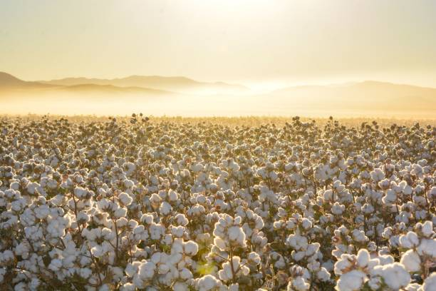
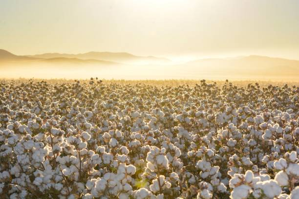

ENGLISH
Cotton is a crucial cash crop in India, known for its fibers used in textiles. Here’s a detailed
step-by-step mechanism for growing cotton from seed selection to harvesting:
1] Seed Selection and Sowing:
Begin by selecting high-quality, certified cotton seeds that are disease-resistant and suited to your
region's climate. Cotton is typically sown in the kharif season (April to June). Seeds should be planted
1-2 inches deep in well-drained, fertile soil, with rows spaced 75-90 cm apart.
2] Germination:
After sowing, cotton seeds absorb moisture and begin to swell. The radicle (embryonic root) emerges
first, followed by the shoot. Germination usually occurs within 7-10 days under optimal soil
temperatures of 20°C to 30°C.
3] Vegetative Growth:
Once germinated, the cotton plant enters the vegetative growth phase. The plant develops a sturdy stem
and broad leaves. Adequate sunlight and water are essential during this phase for healthy growth, as
cotton plants can reach heights of 1-2 meters.
4] Flowering:
Approximately 50-60 days after sowing, cotton plants start to flower. The flowers are initially white
and then turn pink before falling off, leading to the formation of cotton bolls. This phase is critical
for pollination, which primarily occurs through wind and insects.
5] Pod (Boll) Formation:
After flowering, cotton bolls begin to develop, usually 70-90 days after sowing. Each boll can contain
several seeds surrounded by soft fibers. During this stage, maintaining proper moisture levels is
essential for the healthy development of the bolls.
6] Pest and Disease Management:
Cotton is susceptible to pests like cotton bollworm, aphids, and diseases such as wilt and root rot.
Implement integrated pest management (IPM) strategies, including crop rotation, biological control, and
the use of resistant varieties. Regular monitoring and timely application of organic pesticides like
neem oil can help manage pest populations effectively.
7] Seed Development:
As the bolls mature, the seeds inside grow, and the fibers expand. This maturation process lasts about
30-40 days, during which the bolls will open when ready, revealing the fluffy cotton fibers. It’s
crucial to monitor the moisture content to prevent diseases.
8] Harvesting:
Cotton is typically ready for harvest 150-180 days after sowing, indicated by the opening of the bolls
and the fluffy cotton fibers becoming visible. Harvesting can be done manually or with mechanized
equipment. Timely harvesting is important to prevent losses from shattering or degradation.
9] Post-Harvest Processing:
After harvesting, cotton needs to be ginned to separate the fibers from the seeds. The cotton fibers are
cleaned and pressed into bales, while the seeds can be processed for oil extraction or used for
planting.After harvesting, cotton needs to be ginned to separate the fibers from the seeds. The cotton
fibers are cleaned and pressed into bales, while the seeds can be processed for oil extraction or used
for planting.
10] Pest Control in Storage:
To protect stored cotton fibers from pests like weevils, ensure they are stored in well-ventilated, dry
conditions. Using natural repellents such as dried neem leaves or mothballs can help deter pests during
storage.
Throughout its growth cycle, cotton requires well-drained soil, adequate moisture, and effective pest
management to ensure a healthy and productive harvest.
ENGLISH
తెలుగు
పత్తి భారతదేశంలో కీలకమైన నగదు పంట, వస్త్రాల్లో ఉపయోగించే ఫైబర్లకు పేరుగాంచింది. ఇక్కడ
ఒకవివరణాత్మకమైనదివిత్తన ఎంపిక నుండి కోత వరకు పత్తిని పెంచడానికి దశల వారీ విధానం:
1] విత్తన ఎంపిక మరియు విత్తడం:
వ్యాధి-నిరోధకత మరియు మీకు సరిపోయే అధిక-నాణ్యత,
ధృవీకరించబడిన పత్తి విత్తనాలను ఎంచుకోవడం ద్వారా ప్రారంభించండి ప్రాంతం యొక్క వాతావరణం. పత్తిని
సాధారణంగా ఖరీఫ్ సీజన్లో (ఏప్రిల్ నుండి జూన్ వరకు) విత్తుతారు.విత్తనాలు నాటాలిబాగా ఎండిపోయిన,
సారవంతమైన నేలలో 1-2 అంగుళాల లోతు, వరుసలు 75-90 సెం.మీ దూరంలో ఉంటాయి.
2] మొలకెత్తడం:
విత్తిన తరువాత, పత్తి విత్తనాలు తేమను గ్రహించి, ఉబ్బడం ప్రారంభిస్తాయి.
రాడికల్ (పిండమూలం)ఉద్భవిస్తుందిమొదట, తరువాత షూట్. అంకురోత్పత్తి సాధారణంగా సరైన నేల కింద 7-10 రోజులలో
జరుగుతుంది ఉష్ణోగ్రతలు 20°C నుండి 30°C.
3] ఏపుగా పెరుగుదల:
మొలకెత్తిన తర్వాత, పత్తి మొక్క ఏపుగా పెరిగే దశలోకి ప్రవేశిస్తుంది.
మొక్క దృఢమైన కాండంను అభివృద్ధి చేస్తుంది మరియు విస్తృత ఆకులు. ఆరోగ్యకరమైన పెరుగుదలకు ఈ దశలో తగినంత
సూర్యరశ్మి మరియు నీరు అవసరం పత్తి మొక్కలు 1-2 మీటర్ల ఎత్తుకు చేరుకోగలవు.
4] పుష్పించేవి:
విత్తిన 50-60 రోజుల తర్వాత పత్తి మొక్కలు పూలు పూస్తాయి. పువ్వులు మొదట్లో
తెల్లగా ఉంటాయి ఆపై రాలిపోయే ముందు గులాబీ రంగులోకి మారుతుంది, ఇది పత్తి కాయలు ఏర్పడటానికి
దారితీస్తుంది. ఈ దశ క్లిష్టమైనది పరాగసంపర్కం కోసం, ఇది ప్రధానంగా గాలి మరియు కీటకాల ద్వారా
జరుగుతుంది.
5] పాడ్ (బోల్) నిర్మాణం:
పుష్పించే తర్వాత, పత్తి బోల్స్ అభివృద్ధి చెందడం ప్రారంభమవుతుంది,
సాధారణంగా విత్తిన 70-90 రోజుల తర్వాత. ప్రతి బోల్ కలిగి ఉంటుంది మృదువైన ఫైబర్స్ చుట్టూ అనేక
విత్తనాలు. ఈ దశలో, సరైన తేమ స్థాయిని నిర్వహించడం బోల్స్ యొక్క ఆరోగ్యకరమైన అభివృద్ధికి అవసరం.
6] పెస్ట్ అండ్ డిసీజ్ మేనేజ్మెంట్:
పత్తి కాయతొలుచు పురుగు, అఫిడ్స్ వంటి తెగుళ్లకు మరియు
విల్ట్ మరియు వేరుకుళ్ళు వంటి వ్యాధులకు పత్తికి గురవుతుంది. పంట భ్రమణ, జీవ నియంత్రణ, మరియు సహా సమీకృత
తెగులు నిర్వహణ (IPM) వ్యూహాలను అమలు చేయండి నిరోధక రకాలను ఉపయోగించడం. వంటి సేంద్రీయ పురుగుమందుల యొక్క
క్రమమైన పర్యవేక్షణ మరియు సకాలంలో దరఖాస్తు వేప నూనె తెగుళ్ళ జనాభాను సమర్థవంతంగా నిర్వహించడంలో
సహాయపడుతుంది.
7] విత్తన అభివృద్ధి:
బోల్స్ పరిపక్వం చెందుతున్నప్పుడు, లోపల విత్తనాలు పెరుగుతాయి మరియు
ఫైబర్స్ విస్తరిస్తాయి. ఈ పరిపక్వ ప్రక్రియ సుమారుగా ఉంటుంది 30-40 రోజులు, ఈ సమయంలో బోల్స్ సిద్ధంగా
ఉన్నప్పుడు తెరుచుకుంటాయి, మెత్తటి పత్తి ఫైబర్లను బహిర్గతం చేస్తుంది. ఇది వ్యాధులను నివారించడానికి
తేమ శాతాన్ని పర్యవేక్షించడం చాలా ముఖ్యం.
8] హార్వెస్టింగ్:
పత్తి సాధారణంగా విత్తిన 150-180 రోజుల తర్వాత కోతకు సిద్ధంగా ఉంటుంది,
ఇది బోల్స్ తెరవడం ద్వారా సూచించబడుతుంది. మరియు మెత్తటి కాటన్ ఫైబర్లు కనిపిస్తాయి. హార్వెస్టింగ్
మాన్యువల్గా లేదా మెకనైజ్డ్తో చేయవచ్చు పరికరాలు. నష్టాలు పగిలిపోకుండా లేదా క్షీణించకుండా
నిరోధించడానికి సకాలంలో కోయడం ముఖ్యం.
9] పోస్ట్-హార్వెస్ట్ ప్రాసెసింగ్:
కోత తర్వాత, విత్తనాల నుండి నారును వేరు చేయడానికి
పత్తిని జిన్ చేయాలి. పత్తి ఫైబర్స్ ఉన్నాయి శుద్ధి చేసి, బేల్స్గా నొక్కాలి, అయితే విత్తనాలను నూనె
వెలికితీత కోసం ప్రాసెస్ చేయవచ్చు లేదా ఉపయోగించవచ్చు నాటడం.పంట కోసిన తరువాత, పత్తిని గింజల నుండి
నారును వేరు చేయడానికి జిన్ చేయాలి. పత్తి శుభ్రం చేసి బేల్స్గా నొక్కుతారు, అయితే విత్తనాలను నూనె
వెలికితీత కోసం ప్రాసెస్ చేయవచ్చు లేదా ఉపయోగించవచ్చు నాటడం కోసం.
10] నిల్వలో పెస్ట్ కంట్రోల్:
వీవిల్స్ వంటి తెగుళ్ల నుండి నిల్వ చేసిన పత్తి ఫైబర్లను
రక్షించడానికి, అవి బాగా వెంటిలేషన్, పొడిగా ఉండేలా చూసుకోండి పరిస్థితులు. ఎండిన వేప ఆకులు లేదా
మాత్బాల్స్ వంటి సహజ వికర్షకాలను ఉపయోగించడం వల్ల తెగుళ్లను నివారించడంలో సహాయపడుతుంది నిల్వ.
దాని పెరుగుదల చక్రంలో, పత్తికి బాగా ఎండిపోయిన నేల, తగినంత తేమ మరియు సమర్థవంతమైన తెగులు అవసరం
ఆరోగ్యకరమైన మరియు ఉత్పాదక పంటను నిర్ధారించడానికి నిర్వహణ.
తెలుగు
వినండి
2.SUGARCANE / 2.చెరకు
 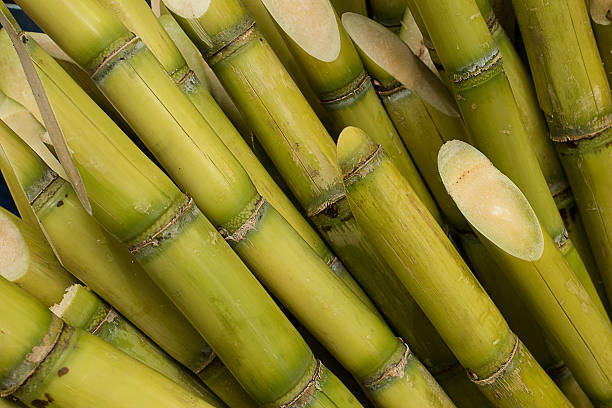
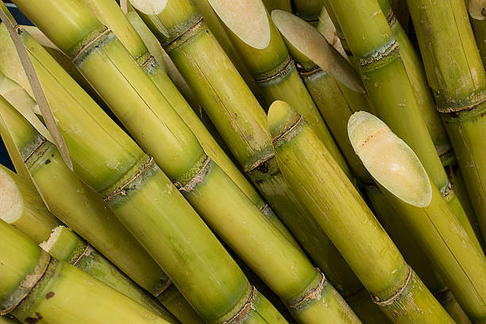

ENGLISH
Sugarcane is a vital cash crop in India, known for its high sugar content and use in various products.
Here’s a detailed step-by-step mechanism for growing sugarcane from seed selection to
harvesting:
1] Seed Selection and Preparation:
Choose high-quality sugarcane seeds, typically in the form of setts (pieces of cane). The setts should
be disease-free and preferably sourced from certified nurseries. Prior to planting, cut the canes into
30-40 cm pieces with at least one bud on each sett, and treat them with fungicides to prevent
diseases.
2] Land Preparation:
Prepare the land by plowing and leveling the field to ensure good drainage. Incorporate organic matter
and fertilizers into the soil to enhance fertility. Sugarcane thrives best in well-drained, fertile
soils with a pH of 6-8.
3] Sowing:
Sugarcane is typically planted at the beginning of the monsoon season (May to June). Setts should be
planted 10-15 cm deep in rows spaced 75-100 cm apart. The buds should be facing upwards for optimal
growth.
4] Germination:
After planting, sugarcane setts absorb moisture from the soil, initiating sprouting. Buds begin to
germinate within 10-14 days, leading to the emergence of shoots. Proper moisture levels are essential
during this phase.
5] Vegetative Growth:
Once germinated, the sugarcane plant enters a vigorous vegetative growth phase. It develops tall,
jointed stems and leaves. Adequate sunlight, water, and nutrient availability are critical for robust
growth. The vegetative phase lasts around 8-10 months.
6] Stooling:
As the plant matures, it begins to produce tillers (side shoots), known as stooling. This process
increases the number of stems per plant and enhances yield potential. Maintaining proper moisture and
nutrients during this phase is crucial.
7] Flowering:
Sugarcane may flower after about 10-12 months, depending on the variety and environmental conditions.
Flowering is less important for sugar production but can indicate the maturity of the crop. The
flowering stage is characterized by the formation of panicles at the top of the cane.
8] Sugar Accumulation:
After flowering, the plant enters a phase where sugars are accumulated in the stalks. This period is
crucial for maximizing sugar content, and it typically lasts for several weeks. Adequate sunlight and
water management are vital during this time.
9] Pest and Disease Management:
Sugarcane is susceptible to pests like sugarcane borers, aphids, and diseases such as smut and mosaic
virus. Implement integrated pest management (IPM) strategies, including crop rotation, biological
control, and timely application of organic pesticides.
10] Harvesting:
Sugarcane is ready for harvest 12-18 months after planting, indicated by the drying of leaves and a
change in stalk color. Harvesting can be done manually or mechanically. It’s crucial to harvest at the
right time to prevent losses from drying and pests.
11] Post-Harvest Processing:
After harvesting, sugarcane should be processed quickly to extract juice, which can be converted into
sugar or molasses. The stalks can also be used for other products, like biofuels or animal feed.
12] Pest Control in Storage:
To protect stored sugarcane from pests like weevils, ensure proper storage conditions, preferably in
cool and dry environments. Using natural repellents can help deter pests during storage.
Throughout its growth cycle, sugarcane requires well-drained soil, consistent moisture, and effective
pest management to achieve a healthy and productive harvest.
ENGLISH
తెలుగు
భారతదేశంలో చెరకు ఒక ముఖ్యమైన నగదు పంట, ఇది అధిక చక్కెర కంటెంట్ మరియు వివిధ ఉత్పత్తులలో వినియోగానికి
ప్రసిద్ధి చెందింది. విత్తన ఎంపిక నుండి చెరకును పెంచడానికి ఇక్కడ వివరణాత్మక దశల వారీ విధానం ఉంది
కోత:
1] విత్తన ఎంపిక మరియు తయారీ:
అధిక-నాణ్యత చెరకు గింజలను ఎంచుకోండి, సాధారణంగా సెట్ల రూపంలో
(చెరకు ముక్కలు). సెట్స్ ఉండాలి వ్యాధి-రహితంగా ఉండండి మరియు ధృవీకరించబడిన నర్సరీల నుండి పొందడం
మంచిది. నాటడానికి ముందు, చెరకును కత్తిరించండి 30-40 సెం.మీ ముక్కలు ప్రతి సెట్పై కనీసం ఒక మొగ్గతో,
మరియు వాటిని నిరోధించడానికి శిలీంద్రనాశకాలత చికిత్స చేయండి వ్యాధులు.
2] భూమి తయారీ:
మంచి నీటి పారుదల ఉండేలా పొలాన్ని దున్నడం మరియు చదును చేయడం ద్వారా భూమిని
సిద్ధం చేయండి. సేంద్రీయ పదార్థాన్ని చేర్చండి మరియు సంతానోత్పత్తిని పెంచడానికి మట్టిలోకి ఎరువులు.
చెరకు బాగా ఎండిపోయిన, సారవంతమైన వాటిలో బాగా వృద్ధి చెందుతుంది 6-8 pH ఉన్న నేలలు.
3] విత్తడం:
చెరకు సాధారణంగా వర్షాకాలం ప్రారంభంలో (మే నుండి జూన్ వరకు) నాటుతారు. సెట్స్
ఉండాలి 75-100 సెంటీమీటర్ల దూరంలో ఉన్న వరుసలలో 10-15 సెం.మీ. ఆప్టిమల్ కోసం మొగ్గలు పైకి ఎదురుగా
ఉండాలి పెరుగుదల.
4] మొలకెత్తడం:
నాటిన తరువాత, చెరకు సెట్లు నేల నుండి తేమను గ్రహించి, మొలకెత్తడాన్ని
ప్రారంభిస్తాయి. మొగ్గల ప్రారంభమవుతాయి 10-14 రోజులలో మొలకెత్తుతుంది, ఇది రెమ్మల ఆవిర్భావానికి
దారితీస్తుంది. సరైన తేమ స్థాయిలు అవసరం ఈ దశలో.
5] ఏపుగా పెరుగుదల:
మొలకెత్తిన తర్వాత, చెరకు మొక్క శక్తివంతమైన ఏపుగా ఎదుగుదల దశలోకి
ప్రవేశిస్తుంది. ఇది పొడవుగా అభివృద్ధి చెందుతుంది, ఉమ్మడి కాండం మరియు ఆకులు. తగినంత సూర్యకాంతి, నీరు
మరియు పోషకాల లభ్యత దృఢత్వం కోసం కీలకం వృద్ధి. ఏపుగా ఉండే దశ దాదాపు 8-10 నెలల వరకు ఉంటుంది.
6] మలం:
మొక్క పరిపక్వం చెందుతున్నప్పుడు, ఇది టూలింగ్ అని పిలువబడే టిల్లర్లను (సైడ్
రెమ్మలు) ఉత్పత్తి చేయడం ప్రారంభిస్తుంది. ఈ ప్రక్రియ మొక్కకు కాండం సంఖ్యను పెంచుతుంది మరియు దిగుబడి
సామర్థ్యాన్ని పెంచుతుంది. సరైన తేమను నిర్వహించడం మరియు ఈ దశలో పోషకాలు కీలకం.
7] పుష్పించేవి:
చెరకు వివిధ మరియు పర్యావరణ పరిస్థితులను బట్టి సుమారు 10-12 నెలల తర్వాత
పుష్పించవచ్చు. చక్కెర ఉత్పత్తికి పుష్పించేది తక్కువ ప్రాముఖ్యత కలిగి ఉంటుంది కానీ పంట యొక్క
పరిపక్వతను సూచిస్తుంది. ది పుష్పించే దశ చెరకు పైభాగంలో పానికల్స్ ఏర్పడటం ద్వారా
వర్గీకరించబడుతుంది.
8] చక్కెర చేరడం:
పుష్పించే తరువాత, మొక్క కాండాలలో చక్కెరలు పేరుకుపోయిన దశలోకి
ప్రవేశిస్తుంది. ఈ కాలం చక్కెర కంటెంట్ను పెంచడానికి కీలకం, మరియు ఇది సాధారణంగా చాలా వారాల పాటు
ఉంటుంది. తగినంత సూర్యకాంతి మరియు ఈ సమయంలో నీటి నిర్వహణ చాలా ముఖ్యమైనది.
9] పెస్ట్ అండ్ డిసీజ్ మేనేజ్మెంట్:
చెరకు చెరకు పురుగులు, అఫిడ్స్ వంటి తెగుళ్ళకు మరియు
స్మట్ మరియు మొజాయిక్ వంటి వ్యాధులకు గురవుతుంది. వైరస్. పంట భ్రమణ, జీవసంబంధంతో సహా సమీకృత తెగులు
నిర్వహణ (IPM) వ్యూహాలను అమలు చేయండి నియంత్రణ, మరియు సేంద్రీయ పురుగుమందుల సకాలంలో దరఖాస్తు.
10] హార్వెస్టింగ్:
చెరకు నాటిన 12-18 నెలల తర్వాత కోతకు సిద్ధంగా ఉంది, ఆకులు ఎండబెట్టడం
ద్వారా సూచించబడుతుంది. కొమ్మ రంగులో మార్పు. హార్వెస్టింగ్ మానవీయంగా లేదా యాంత్రికంగా చేయవచ్చు. వద్ద
పండించడం కీలకం ఎండబెట్టడం మరియు తెగుళ్ళ నుండి నష్టాలను నివారించడానికి సరైన సమయం.
11] పోస్ట్-హార్వెస్ట్ ప్రాసెసింగ్:
కోత తర్వాత, చెరకు రసం తీయడానికి త్వరగా ప్రాసెస్
చేయాలి, దానిని మార్చవచ్చు చక్కెర లేదా మొలాసిస్. కాండాలను జీవ ఇంధనాలు లేదా పశుగ్రాసం వంటి ఇతర
ఉత్పత్తులకు కూడా ఉపయోగించవచ్చు.
12] నిల్వలో పెస్ట్ కంట్రోల్:
నులిపురుగుల వంటి తెగుళ్ల నుండి నిల్వ చేసిన చెరకును
రక్షించడానికి, సరైన నిల్వ పరిస్థితులు ఉండేలా చూసుకోవాలి చల్లని మరియు పొడి వాతావరణాలు. సహజ
వికర్షకాలను ఉపయోగించడం నిల్వ సమయంలో తెగుళ్లను అరికట్టడంలో సహాయపడుతుంది.
దాని పెరుగుదల చక్రంలో, చెరకు బాగా ఎండిపోయిన నేల, స్థిరమైన తేమ మరియు ప్రభావవంతమైన అవసరం ఆరోగ్యకరమైన
మరియు ఉత్పాదక పంటను సాధించడానికి తెగులు నిర్వహణ.
తెలుగు
వినండి
3. TEA / 3.టీ

ENGLISH
Tea is one of the most popular beverages worldwide, derived from the leaves of the Camellia sinensis
plant. India is one of the largest producers of tea, particularly in regions like Assam and Darjeeling.
Here’s a detailed step-by-step mechanism for growing tea from seed selection to harvesting:
1] Seed Selection and Nursery Preparation:
Start by selecting high-quality, disease-resistant seeds or young tea seedlings. Tea seeds should be
soaked in water for 24 hours before sowing to improve germination rates. Prepare a nursery bed with
well-drained, fertile soil enriched with organic matter. Sow seeds in the nursery during the monsoon
season (June to August).
2] Germination:
Tea seeds typically germinate within 30-60 days. During this period, maintain adequate moisture in the
soil. Once seedlings have developed 3-4 leaves, they are ready for transplanting. Ensure the nursery
area has partial shade to protect young plants from direct sunlight.
3] Transplanting:
Transplant seedlings into the main tea garden after 6-12 months, when they are about 10-15 cm tall.
Select a location with well-drained, acidic soil (pH 4.5 to 6.0) and sufficient rainfall (around
1000-2000 mm per year). Space plants 1-1.5 meters apart to allow for growth and airflow.
4] Vegetative Growth:
Once transplanted, tea plants undergo a vegetative growth phase, lasting about 2-3 years. During this
time, they develop a strong root system and bushy growth. Regular weeding and mulching help retain soil
moisture and suppress weeds.
5] Pruning and Shaping:
Prune young tea plants after 1-2 years to encourage bushy growth and ensure a manageable height for
harvesting. The ideal height for tea bushes is around 1 meter. Pruning also stimulates new leaf
production, which is crucial for quality tea.
6] Flowering and Leaf Development:
Tea plants typically flower after 3-5 years, but the focus remains on leaf production. The leaves are
harvested for making tea, and the plant continues to produce new leaves throughout the year. The best
leaves for tea are young, tender buds and the first two leaves.
7] Pest and Disease Management:
Tea plants are susceptible to pests like aphids, mites, and caterpillars, as well as diseases such as
leaf blight and root rot. Regular monitoring and integrated pest management strategies, including
biological controls and organic pesticides, can effectively manage these issues.
8] Harvesting:
Tea leaves are harvested based on the type of tea being produced. For high-quality green tea, young buds
and the first two leaves are picked. Harvesting usually occurs every 7-15 days, depending on growth
rates and environmental conditions. Use careful plucking techniques to avoid damaging the plant.
9] Post-Harvest Processing:
After harvesting, leaves must be processed quickly to prevent oxidation. Depending on the type of tea
(green, black, oolong), the leaves undergo various processes, including withering, rolling, oxidation,
and drying. Each step significantly influences the flavor and quality of the final product.
10] Storage:
Processed tea should be stored in airtight containers in a cool, dark place to preserve freshness and
flavor. Proper storage prevents moisture absorption and protects against pests.
Throughout the growing process, tea plants thrive in well-drained, acidic soils with adequate rainfall
and shade. The cultivation of tea requires careful management and attention to detail, making it a
rewarding yet labor-intensive agricultural endeavor.
ENGLISH
తెలుగు
కామెల్లియా సినెన్సిస్ ఆకుల నుండి తీసుకోబడిన ప్రపంచవ్యాప్తంగా అత్యంత ప్రజాదరణ పొందిన పానీయాలలో టీ
ఒకటి. మొక్క. ముఖ్యంగా అస్సాం మరియు డార్జిలింగ్ వంటి ప్రాంతాలలో టీని అత్యధికంగా ఉత్పత్తి చేసే
దేశాల్లో భారతదేశం ఒకటి. విత్తన ఎంపిక నుండి కోత వరకు టీని పెంచడానికి ఇక్కడ వివరణాత్మక దశల వారీ విధానం
ఉంది:
1] విత్తన ఎంపిక మరియు నర్సరీ తయారీ:
అధిక-నాణ్యత, వ్యాధి-నిరోధక విత్తనాలు లేదా యువ టీ
మొలకలను ఎంచుకోవడం ద్వారా ప్రారంభించండి. టీ విత్తనాలు ఉండాలి అంకురోత్పత్తి రేటును మెరుగుపరచడానికి
విత్తడానికి ముందు 24 గంటలు నీటిలో నానబెట్టండి. తో నర్సరీ బెడ్ సిద్ధం బాగా ఎండిపోయిన, సేంద్రియ
పదార్థంతో సుసంపన్నమైన సారవంతమైన నేల. వర్షాకాలంలో నర్సరీలో విత్తనాలు నాటండి సీజన్ (జూన్ నుండి ఆగస్టు
వరకు).
2] మొలకెత్తడం:
టీ గింజలు సాధారణంగా 30-60 రోజులలో మొలకెత్తుతాయి. ఈ కాలంలో, తగినంత తేమను
నిర్వహించండి నేల. మొలకల 3-4 ఆకులు అభివృద్ధి చెందిన తర్వాత, అవి మార్పిడికి సిద్ధంగా ఉంటాయి. నర్సరీని
నిర్ధారించుకోండి ప్రత్యక్ష సూర్యకాంతి నుండి యువ మొక్కలను రక్షించడానికి ప్రాంతం పాక్షిక నీడను కలిగి
ఉంటుంది.
3] మార్పిడి:
6-12 నెలల తర్వాత, వాటి ఎత్తు 10-15 సెం.మీ ఉన్నప్పుడు ప్రధాన తేయాకు తోటలోకి
మొలకలను మార్పిడి చేయండి. బాగా ఎండిపోయిన, ఆమ్ల నేల (pH 4.5 నుండి 6.0) మరియు తగినంత వర్షపాతం (చుట్టూ)
ఉన్న ప్రదేశాన్ని ఎంచుకోండిసంవత్సరానికి 1000-2000 మిమీ). ఎదుగుదల మరియు వాయు ప్రవాహాన్ని
అనుమతించడానికి 1-1.5 మీటర్ల దూరంలో ఉన్న అంతరిక్ష మొక్కలు.
4] ఏపుగా పెరుగుదల:
ఒకసారి మార్పిడి చేసిన తర్వాత, తేయాకు మొక్కలు ఏపుగా ఎదుగుదల దశకు
లోనవుతాయి, ఇది సుమారు 2-3 సంవత్సరాలు ఉంటుంది. ఈ సమయంలో సమయం, వారు బలమైన రూట్ వ్యవస్థ మరియు బుష్
పెరుగుదల అభివృద్ధి. క్రమం తప్పకుండా కలుపు తీయడం మరియు కప్పడం మట్టిని నిలుపుకోవడంలో సహాయపడుతుంది తేమ
మరియు కలుపు మొక్కలను అణిచివేస్తుంది.
5] ప్రూనింగ్ మరియు షేపింగ్:
1-2 సంవత్సరాల తర్వాత యువ తేయాకు మొక్కలను కత్తిరించండి,
గుబురుగా ఉండే పెరుగుదలను ప్రోత్సహించడానికి మరియు నిర్వహించదగిన ఎత్తును నిర్ధారించడానికి పంటకోత. టీ
పొదలకు అనువైన ఎత్తు సుమారు 1 మీటర్. కత్తిరింపు కొత్త ఆకును కూడా ప్రేరేపిస్తుంది ఉత్పత్తి, ఇది
నాణ్యమైన టీకి కీలకం.
6] పుష్పించుట మరియు ఆకు అభివృద్ధి:
తేయాకు మొక్కలు సాధారణంగా 3-5 సంవత్సరాల తర్వాత
పుష్పిస్తాయి, అయితే దృష్టి ఆకు ఉత్పత్తిపైనే ఉంటుంది. ఆకులు ఉంటాయి తేయాకు తయారీ కోసం పండిస్తారు మరియు
మొక్క ఏడాది పొడవునా కొత్త ఆకులను ఉత్పత్తి చేస్తూనే ఉంటుంది. ఉత్తమమైనది టీ కోసం ఆకులు చిన్నవి, లేత
మొగ్గలు మరియు మొదటి రెండు ఆకులు.
7] పెస్ట్ అండ్ డిసీజ్ మేనేజ్మెంట్:
తేయాకు మొక్కలు అఫిడ్స్, పురుగులు మరియు గొంగళి
పురుగుల వంటి తెగుళ్ళకు, అలాగే వ్యాధులకు గురవుతాయి. ఆకు ముడత మరియు వేరు తెగులు. క్రమమైన పర్యవేక్షణ
మరియు సమీకృత తెగులు నిర్వహణ వ్యూహాలు, సహా జీవ నియంత్రణలు మరియు సేంద్రీయ పురుగుమందులు, ఈ సమస్యలను
సమర్థవంతంగా నిర్వహించగలవు.
8] హార్వెస్టింగ్:
టీ ఆకులను ఉత్పత్తి చేసే టీ రకాన్ని బట్టి పండిస్తారు. అధిక-నాణ్యత
గ్రీన్ టీ కోసం, యువ మొగ్గలు మరియు మొదటి రెండు ఆకులు తీయబడతాయి. హార్వెస్టింగ్ సాధారణంగా పెరుగుదలను
బట్టి ప్రతి 7-15 రోజులకు జరుగుతుంది రేట్లు మరియు పర్యావరణ పరిస్థితులు. మొక్క దెబ్బతినకుండా ఉండేందుకు
జాగ్రత్తగా ప్లకింగ్ టెక్నిక్లను ఉపయోగించండి.
9] పోస్ట్-హార్వెస్ట్ ప్రాసెసింగ్:
కోత తర్వాత, ఆక్సీకరణను నివారించడానికి ఆకులను త్వరగా
ప్రాసెస్ చేయాలి. టీ రకాన్ని బట్టి (ఆకుపచ్చ, నలుపు, ఊలాంగ్), ఆకులు వాడిపోవడం, రోలింగ్, ఆక్సీకరణం వంటి
వివిధ ప్రక్రియలకు లోనవుతాయి మరియు ఎండబెట్టడం. ప్రతి దశ తుది ఉత్పత్తి యొక్క రుచి మరియు నాణ్యతను
గణనీయంగా ప్రభావితం చేస్తుంది.
10] నిల్వ:
ప్రాసెస్ చేసిన టీని గాలి చొరబడని కంటైనర్లలో చల్లగా, చీకటిగా ఉండే ప్రదేశంలో
నిల్వ ఉంచాలి రుచి. సరైన నిల్వ తేమ శోషణను నిరోధిస్తుంది మరియు తెగుళ్ళ నుండి రక్షిస్తుంది.
పెరుగుతున్న ప్రక్రియలో, టీ మొక్కలు తగినంత వర్షపాతంతో బాగా ఎండిపోయిన, ఆమ్ల నేలల్లో వృద్ధి చెందుతాయి
మరియు నీడ. టీ సాగుకు జాగ్రత్తగా నిర్వహణ మరియు వివరాలకు శ్రద్ధ అవసరం ప్రతిఫలదాయకమైనప్పటికీ శ్రమతో
కూడుకున్న వ్యవసాయ కృషి.
తెలుగు
వినండి
4. COFFEE / 4.కాఫీ


ENGLISH
Coffee is one of the most popular beverages globally, derived from the beans of the Coffea plant. India
is known for its diverse coffee varieties, especially Arabica and Robusta. Here’s a detailed
step-by-step mechanism for growing coffee from seed selection to harvesting:
1] Seed Selection and Nursery Preparation:
Choose high-quality, disease-resistant coffee seeds or seedlings. Soak the seeds in water for 24 hours
before sowing to enhance germination. Prepare a nursery bed with well-drained, fertile soil enriched
with organic matter. Sow seeds in the nursery during the monsoon season (June to August), ensuring they
receive partial shade.
2] Germination:
Coffee seeds typically germinate within 2-3 months. Maintain consistent moisture in the soil during this
period. Once seedlings are about 15-30 cm tall and have developed several true leaves, they are ready
for transplanting.
3] Transplanting:
Transplant seedlings into the main coffee plantation after 6-12 months, ideally during the rainy season.
Select a site with well-drained, loamy soil, adequate rainfall (1000-2500 mm per year), and shade from
taller trees. Space the plants 1.5-2 meters apart to allow for proper growth and airflow.
4] Vegetative Growth:
After transplanting, coffee plants enter a vegetative growth phase, lasting about 2-3 years. During this
time, they develop a robust root system and bushy foliage. Regular weeding and mulching help retain soil
moisture and suppress weeds.
5] Flowering:
Coffee plants typically start flowering after 3-4 years. The flowers are small, white, and fragrant,
blooming in clusters. Flowering is usually triggered by rainfall, and successful pollination leads to
fruit development. Each flower will develop into a coffee cherry.
6] Fruit Development:
After flowering, coffee cherries begin to grow and ripen over the next 6-9 months. Initially green, they
change to yellow and then red as they mature. The cherries contain two coffee beans, which are covered
by a thin parchment layer.
7] Pest and Disease Management:
Coffee plants can be affected by pests like coffee borer beetles and diseases such as leaf rust. Regular
monitoring is essential. Integrated pest management strategies, including biological control and organic
pesticides, can effectively manage these issues.
8] Harvesting:
Coffee cherries are typically harvested once they turn fully red, indicating ripeness. Harvesting can be
done either selectively (hand-picking the ripe cherries) or through strip harvesting (collecting all
cherries at once). Selective harvesting ensures higher quality, while strip harvesting is more
labor-efficient.
9] Post-Harvest Processing:
After harvesting, coffee cherries must be processed quickly to preserve quality. The two main processing
methods are dry (natural) and wet (washed). In the dry method, cherries are sun-dried before the beans
are extracted. In the wet method, cherries are pulped, fermented, and then washed to remove the mucilage
before drying.
10] Storage:
Processed coffee beans should be stored in a cool, dry place, away from moisture and light, to maintain
flavor and quality. Use airtight containers to prevent exposure to air and humidity.
Throughout the growing process, coffee plants thrive in well-drained soils with adequate shade and
consistent moisture. Coffee cultivation requires careful management and attention to detail, resulting
in a rewarding agricultural endeavor with global significance.
ENGLISH
తెలుగు
కాఫీ ప్రపంచవ్యాప్తంగా అత్యంత ప్రజాదరణ పొందిన పానీయాలలో ఒకటి, కాఫీ మొక్క యొక్క బీన్స్ నుండి
తీసుకోబడింది. భారతదేశం విభిన్న కాఫీ రకాలు, ముఖ్యంగా అరబికా మరియు రోబస్టాలకు ప్రసిద్ధి చెందింది.
ఇక్కడ ఒక వివరణాత్మకమైనది విత్తన ఎంపిక నుండి కోత వరకు కాఫీని పెంచడానికి దశల వారీ విధానం:
1] విత్తన ఎంపిక మరియు నర్సరీ తయారీ:
అధిక-నాణ్యత, వ్యాధి-నిరోధక కాఫీ గింజలు లేదా మొలకలను
ఎంచుకోండి. విత్తనాలను 24 గంటలు నీటిలో నానబెట్టండి అంకురోత్పత్తిని పెంచడానికి విత్తడానికి ముందు. బాగా
ఎండిపోయిన, సారవంతమైన నేలతో సుసంపన్నమైన నర్సరీ బెడ్ను సిద్ధం చేయండి సేంద్రీయ పదార్థంతో. వర్షాకాలంలో
(జూన్ నుండి ఆగస్టు వరకు) నర్సరీలో విత్తనాలను విత్తండి పాక్షిక నీడను పొందండి.
2] మొలకెత్తడం:
కాఫీ గింజలు సాధారణంగా 2-3 నెలల్లో మొలకెత్తుతాయి. ఈ సమయంలో నేలలో స్థిరమైన
తేమను నిర్వహించండి కాలం. మొలకల పొడవు 15-30 సెం.మీ మరియు అనేక నిజమైన ఆకులను అభివృద్ధి చేసిన తర్వాత,
అవి సిద్ధంగా ఉంటాయి మార్పిడి కోసం.
3] మార్పిడి:
6-12 నెలల తర్వాత, వర్షాకాలంలో ఆదర్శంగా ప్రధాన కాఫీ తోటలోకి మొలకలను మార్పిడి
చేయండి. బాగా ఎండిపోయిన, లోమీ నేల, తగినంత వర్షపాతం (సంవత్సరానికి 1000-2500 మిమీ) మరియు నీడ ఉన్న
స్థలాన్ని ఎంచుకోండి ఎత్తైన చెట్లు. మొక్కలను 1.5-2 మీటర్ల దూరంలో ఉంచి సరైన పెరుగుదల మరియు గాలి
ప్రవాహానికి వీలు కల్పించండి.
4] ఏపుగా పెరుగుదల:
మార్పిడి తర్వాత, కాఫీ మొక్కలు ఏపుగా పెరిగే దశలోకి ప్రవేశిస్తాయి, ఇది
సుమారు 2-3 సంవత్సరాలు ఉంటుంది. ఈ సమయంలో సమయం, వారు ఒక బలమైన రూట్ వ్యవస్థ మరియు గుబురు ఆకులు
అభివృద్ధి. క్రమం తప్పకుండా కలుపు తీయడం మరియు కప్పడం మట్టిని నిలుపుకోవడంలో సహాయపడుతుంది తేమ మరియు
కలుపు మొక్కలను అణిచివేస్తుంది.
5] పుష్పించేవి:
కాఫీ మొక్కలు సాధారణంగా 3-4 సంవత్సరాల తర్వాత పుష్పించడం ప్రారంభిస్తాయి.
పువ్వులు చిన్నవి, తెలుపు మరియు సువాసన, గుత్తులుగా వికసించేవి. పుష్పించేది సాధారణంగా వర్షపాతం ద్వారా
ప్రేరేపించబడుతుంది మరియు విజయవంతమైన పరాగసంపర్కానికి దారితీస్తుంది పండు అభివృద్ధి. ప్రతి పువ్వు కాఫీ
చెర్రీగా అభివృద్ధి చెందుతుంది.
6] పండ్ల అభివృద్ధి:
పుష్పించే తర్వాత, కాఫీ చెర్రీస్ తదుపరి 6-9 నెలల్లో పెరగడం మరియు
పండించడం ప్రారంభమవుతుంది. ప్రారంభంలో ఆకుపచ్చ, వారు అవి పరిపక్వం చెందుతున్నప్పుడు పసుపు మరియు ఎరుపు
రంగులోకి మారుతాయి. చెర్రీస్లో రెండు కాఫీ గింజలు ఉంటాయి, అవి కప్పబడి ఉంటాయి ఒక సన్నని చర్మపు పొర
ద్వారా.
7] పెస్ట్ అండ్ డిసీజ్ మేనేజ్మెంట్:
కాఫీ మొక్కలను కాఫీ బోరర్ బీటిల్స్ వంటి తెగుళ్లు
మరియు ఆకు తుప్పు వంటి వ్యాధుల బారిన పడవచ్చు. రెగ్యులర్ పర్యవేక్షణ అవసరం. జీవ నియంత్రణ మరియు
సేంద్రీయతో సహా సమీకృత తెగులు నిర్వహణ వ్యూహాలు పురుగుమందులు, ఈ సమస్యలను సమర్థవంతంగా
నిర్వహించగలవు.
8] హార్వెస్టింగ్:
కాఫీ చెర్రీస్ సాధారణంగా పూర్తిగా ఎరుపు రంగులోకి మారిన తర్వాత
పండించబడతాయి, ఇది పక్వతను సూచిస్తుంది. హార్వెస్టింగ్ కావచ్చు ఎంపిక చేసి (పండిన చెర్రీలను చేతితో
తీయడం) లేదా స్ట్రిప్ హార్వెస్టింగ్ ద్వారా (అన్నీ సేకరించడం) చెర్రీస్ ఒకేసారి). ఎంపిక చేసిన
హార్వెస్టింగ్ అధిక నాణ్యతను నిర్ధారిస్తుంది, అయితే స్ట్రిప్ హార్వెస్టింగ్ ఎక్కువగా ఉంటుంది
శ్రమ-సమర్థవంతమైన.
9] పోస్ట్-హార్వెస్ట్ ప్రాసెసింగ్:
కోత తర్వాత, నాణ్యతను కాపాడటానికి కాఫీ చెర్రీలను త్వరగా
ప్రాసెస్ చేయాలి. రెండు ప్రధాన ప్రాసెసింగ్ పద్ధతులు పొడి (సహజమైనవి) మరియు తడి (కడిగినవి). పొడి
పద్ధతిలో, చెర్రీస్ బీన్స్ ముందు ఎండలో ఎండబెట్టబడతాయి వెలికితీస్తారు. తడి పద్ధతిలో, చెర్రీలను గుజ్జు
చేసి, పులియబెట్టి, ఆపై శ్లేష్మం తొలగించడానికి కడుగుతారు. ఎండబెట్టే ముందు.
10] నిల్వ:
ప్రాసెస్ చేసిన కాఫీ గింజలను తేమ మరియు కాంతికి దూరంగా చల్లని, పొడి ప్రదేశంలో
నిల్వ చేయాలి రుచి మరియు నాణ్యత. గాలి మరియు తేమకు గురికాకుండా నిరోధించడానికి గాలి చొరబడని కంటైనర్లను
ఉపయోగించండి.
పెరుగుతున్న ప్రక్రియలో, కాఫీ మొక్కలు తగినంత నీడతో మరియు బాగా ఎండిపోయిన నేలల్లో వృద్ధి చెందుతాయి
స్థిరమైన తేమ. కాఫీ సాగుకు జాగ్రత్తగా నిర్వహణ మరియు వివరాలకు శ్రద్ధ అవసరం, ఫలితంగా ప్రపంచ ప్రాముఖ్యత
కలిగిన ప్రతిఫలదాయకమైన వ్యవసాయ ప్రయత్నంలో.
తెలుగు
వినండి
5. TOBACCO / 5.పొగాకు

ENGLISH
Tobacco is an important cash crop in India, known for its economic significance and various uses. Here’s
a detailed step-by-step mechanism for growing tobacco from seed selection to harvesting:
1] Seed Selection and Preparation:
Choose high-quality tobacco seeds suited for the desired variety (e.g.,
Virginia, Burley, or Oriental). Tobacco seeds are very small, so it's important to source them from
certified suppliers to ensure disease resistance and good yield potential.
2] Nursery Raising:
Tobacco is typically started in nurseries. Prepare seedbeds with fine, well-drained
soil and incorporate organic matter. Sow the seeds thinly on the surface, covering them lightly with
soil. Ensure consistent moisture and provide shade to protect the seedlings from direct
sunlight.
3] Transplanting:
After 4-6 weeks, when the seedlings are about 15-20 cm tall and have 5-6 true leaves,
they are ready for transplanting. Prepare the main field by plowing and leveling. Transplant seedlings
into well-drained soil, spaced 60-90 cm apart, in rows that are 1-1.5 meters apart.
4] Germination:
Once transplanted, the seedlings establish themselves in the field. Proper watering is essential during
this phase to minimize transplant shock. Roots begin to spread, and the plants start growing
vigorously.
5] Vegetative Growth:
During the vegetative phase, tobacco plants develop a strong stem and large leaves. This phase typically
lasts 6-8 weeks. Adequate sunlight, nutrients, and water are critical for healthy growth. Fertilization
with nitrogen-rich fertilizers is commonly applied during this phase.
6] Flowering:
After about 10-12 weeks, tobacco plants will begin to flower. The flowers are typically bell-shaped and
can be white, pink, or purple, depending on the variety. Most commercial growers remove the flowers
(topping) to direct energy towards leaf development and enhance yield.
7] Leaf Development:
Following topping, the plant focuses on leaf growth. The lower leaves mature first, followed by the
middle and upper leaves. Proper water management and nutrient application are essential to maximize leaf
size and quality during this stage.
8] Pest and Disease Management:
Tobacco is susceptible to pests like aphids, cutworms, and diseases such as black shank and bacterial
wilt. Implement integrated pest management (IPM) strategies, including crop rotation, resistant
varieties, and timely application of organic pesticides.
9] Harvesting:
Tobacco leaves are typically ready for harvest 90-120 days after transplanting, depending on the variety
and growing conditions. Leaves are usually harvested in stages, starting with the lower leaves as they
turn yellow and are ready to be picked. Hand-harvesting is common, though mechanical methods can also be
used.
10] Curing:
After harvesting, the leaves must be cured to enhance flavor and reduce moisture content. Curing can be
done through air curing, flue curing, or sun curing, depending on the desired type of tobacco. Proper
curing is crucial for the quality of the final product.
11] Post-Harvest Processing:
Once cured, the leaves are sorted and bundled for sale. They may undergo further processing, including
fermentation, depending on the intended use (cigarettes, cigars, etc.).
12] Pest Control in Storage:
To protect stored tobacco leaves from pests like tobacco beetles, ensure proper storage conditions in
cool, dry places. Using airtight containers and natural repellents can help deter pests during
storage.
Throughout its growth cycle, tobacco requires careful management of soil, water, and pests to ensure a
healthy and profitable harvest.
ENGLISH
తెలుగు
పొగాకు భారతదేశంలో ఒక ముఖ్యమైన వాణిజ్య పంట, దాని ఆర్థిక ప్రాముఖ్యత మరియు వివిధ ఉపయోగాలకు ప్రసిద్ధి.
విత్తన ఎంపిక నుండి కోత వరకు పొగాకును పెంచడానికి ఇక్కడ వివరణాత్మక దశల వారీ విధానం ఉంది:
1] విత్తన ఎంపిక మరియు తయారీ:
కావలసిన రకానికి సరిపోయే అధిక-నాణ్యత పొగాకు విత్తనాలను
ఎంచుకోండి (ఉదా., వర్జీనియా, బర్లీ లేదా ఓరియంటల్). పొగాకు విత్తనాలు చాలా చిన్నవి, కాబట్టి వ్యాధి
నిరోధకతను మరియు మంచి దిగుబడి సామర్థ్యాన్ని నిర్ధారించడానికి వాటిని ధృవీకరించబడిన సరఫరాదారుల నుండి
సేకరించడం చాలా ముఖ్యం.
2] నర్సరీ పెంపకం:
పొగాకు సాధారణంగా నర్సరీలలో ప్రారంభమవుతుంది. చక్కటి, బాగా ఎండిపోయిన
నేలతో విత్తనాలను సిద్ధం చేయండి మరియు సేంద్రియ పదార్థాలను కలుపుకోండి. విత్తనాలను ఉపరితలంపై సన్నగా
విత్తండి, వాటిని మట్టితో తేలికగా కప్పండి. స్థిరమైన తేమను నిర్ధారించుకోండి మరియు నేరుగా సూర్యకాంతి
నుండి మొలకలను రక్షించడానికి నీడను అందించండి.
3] మార్పిడి:
4-6 వారాల తర్వాత, మొలకలు సుమారు 15-20 సెం.మీ పొడవు మరియు 5-6 నిజమైన ఆకులను
కలిగి ఉన్నప్పుడు, అవి నాటడానికి సిద్ధంగా ఉంటాయి. దున్నడం మరియు చదును చేయడం ద్వారా ప్రధాన పొలాన్ని
సిద్ధం చేయండి. 60-90 సెంటీమీటర్ల దూరంలో, 1-1.5 మీటర్ల దూరంలో ఉండే వరుసలలో, బాగా ఎండిపోయిన మట్టిలోకి
మొలకలను మార్పిడి చేయండి.
4] అంకురోత్పత్తి:
ఒకసారి నాటిన తర్వాత, మొలకలు పొలంలో స్థిరపడతాయి. మార్పిడి షాక్ను
తగ్గించడానికి ఈ దశలో సరైన నీరు త్రాగుట అవసరం. మూలాలు వ్యాప్తి చెందడం ప్రారంభిస్తాయి మరియు మొక్కలు
బలంగా పెరగడం ప్రారంభిస్తాయి.
5] ఏపుగా పెరుగుదల:
ఏపుగా ఉండే దశలో, పొగాకు మొక్కలు బలమైన కాండం మరియు పెద్ద ఆకులను
అభివృద్ధి చేస్తాయి. ఈ దశ సాధారణంగా 6-8 వారాలు ఉంటుంది. తగినంత సూర్యకాంతి, పోషకాలు మరియు నీరు
ఆరోగ్యకరమైన పెరుగుదలకు కీలకం. ఈ దశలో నత్రజని అధికంగా ఉండే ఎరువులతో ఫలదీకరణం సాధారణంగా
వర్తించబడుతుంది.
6] పుష్పించేవి:
సుమారు 10-12 వారాల తర్వాత, పొగాకు మొక్కలు పూయడం ప్రారంభిస్తాయి. పువ్వులు
సాధారణంగా గంట ఆకారంలో ఉంటాయి మరియు రకాన్ని బట్టి తెలుపు, గులాబీ లేదా ఊదా రంగులో ఉంటాయి. చాలా మంది
వాణిజ్య పెంపకందారులు ఆకు అభివృద్ధి వైపు శక్తిని మళ్లించడానికి మరియు దిగుబడిని పెంచడానికి పువ్వులను
(టాపింగ్) తీసివేస్తారు.
7] ఆకు అభివృద్ధి:
అగ్రస్థానాన్ని అనుసరించి, మొక్క ఆకు పెరుగుదలపై దృష్టి పెడుతుంది. దిగువ
ఆకులు మొదట పరిపక్వం చెందుతాయి, తరువాత మధ్య మరియు ఎగువ ఆకులు ఉంటాయి. ఈ దశలో ఆకు పరిమాణం మరియు
నాణ్యతను పెంచడానికి సరైన నీటి నిర్వహణ మరియు పోషకాల వినియోగం చాలా అవసరం.
8] పెస్ట్ అండ్ డిసీజ్ మేనేజ్మెంట్:
పొగాకు అఫిడ్స్, కట్వార్మ్లు మరియు బ్లాక్ షాంక్
మరియు బాక్టీరియల్ విల్ట్ వంటి వ్యాధులకు లోనవుతుంది. పంట భ్రమణ, నిరోధక రకాలు మరియు సేంద్రీయ
పురుగుమందుల సకాలంలో దరఖాస్తుతో సహా సమీకృత పెస్ట్ మేనేజ్మెంట్ (IPM) వ్యూహాలను అమలు చేయండి.
9] కోత:
పొగాకు ఆకులు సాధారణంగా నాటిన 90-120 రోజుల తర్వాత వివిధ రకాల మరియు పెరుగుతున్న
పరిస్థితుల ఆధారంగా కోతకు సిద్ధంగా ఉంటాయి. ఆకులు సాధారణంగా దశలవారీగా కోయబడతాయి, అవి పసుపు రంగులోకి
మారినప్పుడు మరియు తీయడానికి సిద్ధంగా ఉంటాయి. చేతితో కోయడం సాధారణం, అయితే యాంత్రిక పద్ధతులను కూడా
ఉపయోగించవచ్చు.
10] క్యూరింగ్:
పంట కోసిన తర్వాత, రుచిని పెంచడానికి మరియు తేమను తగ్గించడానికి ఆకులను
తప్పనిసరిగా నయం చేయాలి. కావలసిన పొగాకు రకాన్ని బట్టి ఎయిర్ క్యూరింగ్, ఫ్లూ క్యూరింగ్ లేదా సన్
క్యూరింగ్ ద్వారా క్యూరింగ్ చేయవచ్చు. తుది ఉత్పత్తి నాణ్యతకు సరైన క్యూరింగ్ కీలకం.
11] పోస్ట్-హార్వెస్ట్ ప్రాసెసింగ్:
ఒకసారి నయమవుతుంది, ఆకులు క్రమబద్ధీకరించబడతాయి మరియు
అమ్మకానికి బండిల్ చేయబడతాయి. వారు ఉద్దేశించిన ఉపయోగం (సిగరెట్లు, సిగార్లు మొదలైనవి) ఆధారంగా కిణ్వ
ప్రక్రియతో సహా తదుపరి ప్రాసెసింగ్కు లోనవుతారు.
12] నిల్వలో పెస్ట్ కంట్రోల్:
పొగాకు బీటిల్స్ వంటి తెగుళ్ల నుండి నిల్వ చేసిన పొగాకు
ఆకులను రక్షించడానికి, చల్లని, పొడి ప్రదేశాలలో సరైన నిల్వ పరిస్థితులను నిర్ధారించండి. గాలి చొరబడని
కంటైనర్లు మరియు సహజ వికర్షకాలను ఉపయోగించడం నిల్వ సమయంలో తెగుళ్ళను అరికట్టడంలో సహాయపడుతుంది.
పొగాకు దాని పెరుగుదల చక్రంలో, ఆరోగ్యకరమైన మరియు లాభదాయకమైన పంటను నిర్ధారించడానికి నేల, నీరు మరియు
తెగుళ్లను జాగ్రత్తగా నిర్వహించడం అవసరం.
తెలుగు
వినండి
6. JUTE / 6.జ్యూట్
 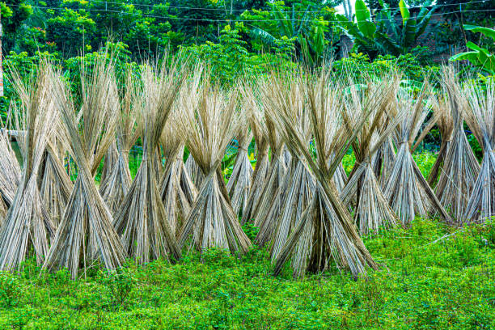
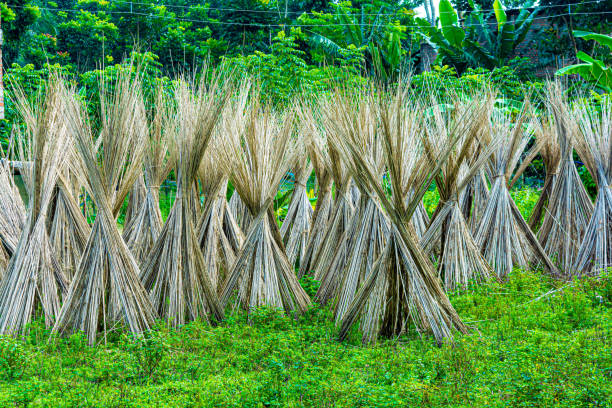
ENGLISH
Jute is a versatile fiber crop primarily grown for its long, strong fibers, which are used to make
burlap, sacks, and ropes. Here’s a detailed step-by-step mechanism for growing jute from seed selection
to harvesting:
1] Seed Selection and Sowing:
Choose high-quality, certified jute seeds suitable for the local climate. Seeds should be treated with
fungicides to prevent diseases. Jute is typically sown in the monsoon season (June to July) when there
is ample moisture. Seeds are sown about 2-3 cm deep in well-prepared, fertile, and well-drained soil,
with rows spaced 30-45 cm apart.
2] Germination:
After sowing, jute seeds absorb moisture and germinate within 7-14 days, depending on soil temperature
and moisture. The ideal soil temperature for germination is around 25°C to 30°C. The radicle emerges
first, followed by the cotyledons.
3] Vegetative Growth:
Once germinated, the jute plant enters the vegetative growth phase. The plant grows rapidly, developing
a deep taproot and erect stems. Jute can grow to heights of 2-4 meters. The plant has large, broad
leaves that help in photosynthesis, and adequate sunlight and moisture are crucial during this
phase.
4] Flowering:
Approximately 60-90 days after sowing, jute plants begin to flower. The flowers are small, yellow or
white, and appear in clusters. Flowering lasts about 2-3 weeks, and the plants are typically
self-pollinating.
5] Pod Formation:
After pollination, the flowers develop into pods that contain the seeds. This stage occurs around 90-120
days after sowing. Each pod typically contains 2-4 seeds. Adequate moisture and nutrition are essential
during pod formation to ensure healthy seed development.
6] Pest and Disease Management:
Jute can be affected by pests such as jute hairy caterpillars and aphids, as well as diseases like root
rot and jute leaf spot. Regular monitoring of the crop is essential for early detection. Integrated Pest
Management (IPM) strategies, including cultural practices and biological control, can effectively manage
pests and diseases.
7] Seed Development:
As the pods mature, the seeds grow and harden over a period of about 20-30 days. The plants begin to
yellow and dry out, indicating that the seeds are nearing maturity. Watering should be minimized to
promote proper drying.
8] Harvesting:
Jute is harvested when the pods are fully mature and dry, typically 120-150 days after sowing. The
plants are cut at the base, and the pods are left to dry in the field for a few days. Manual or
mechanical threshing is used to separate the seeds from the pods.
9] Post-Harvest Processing:
After threshing, the jute fibers are extracted by retting. This process involves soaking the harvested
plants in water to decompose the soft tissues, making it easier to separate the fibers. The fibers are
then washed, dried, and baled for storage.
10] Pest Control in Storage:
To protect stored jute seeds and fibers, maintain proper storage conditions, ensuring low humidity and
adequate ventilation. Use natural repellents or storage techniques like diatomaceous earth to deter
pests. Regular inspections are necessary to ensure the quality of the stored materials.
Throughout its growth, jute thrives in warm, humid climates with well-drained soils and benefits from
careful management at each stage to ensure a successful and high-yielding harvest.
ENGLISH
తెలుగు
జనపనార అనేది ఒక బహుముఖ ఫైబర్ పంట, ఇది ప్రధానంగా దాని పొడవాటి, బలమైన ఫైబర్ల కోసం పెరుగుతుంది, వీటిని
బుర్లాప్, బస్తాలు మరియు తాడులను తయారు చేయడానికి ఉపయోగిస్తారు. విత్తన ఎంపిక నుండి కోత వరకు జనపనారను
పెంచడానికి ఇక్కడ వివరణాత్మక దశల వారీ విధానం ఉంది:
1] విత్తన ఎంపిక మరియు విత్తడం:
స్థానిక వాతావరణానికి తగిన అధిక-నాణ్యత, ధృవీకరించబడిన
జనపనార విత్తనాలను ఎంచుకోండి. వ్యాధులను నివారించడానికి విత్తనాలను శిలీంద్రనాశకాలతో చికిత్స చేయాలి.
జనపనార సాధారణంగా వర్షాకాలంలో (జూన్ నుండి జూలై వరకు) పుష్కలంగా తేమ ఉన్నప్పుడు విత్తుతారు. విత్తనాలు
30-45 సెం.మీ.ల దూరంలో ఉన్న వరుసలు బాగా సిద్ధం చేయబడిన, సారవంతమైన మరియు బాగా ఎండిపోయిన నేలలో 2-3
సెం.మీ లోతులో నాటబడతాయి.
2] అంకురోత్పత్తి:
విత్తిన తర్వాత, జనపనార విత్తనాలు తేమను గ్రహించి నేల ఉష్ణోగ్రత మరియు
తేమను బట్టి 7-14 రోజులలోపు మొలకెత్తుతాయి. అంకురోత్పత్తికి అనువైన నేల ఉష్ణోగ్రత 25 ° C నుండి 30 ° C
వరకు ఉంటుంది. రేడికల్ మొదట ఉద్భవిస్తుంది, తరువాత కోటిలిడన్లు.
3] ఏపుగా పెరుగుదల:
ఒకసారి మొలకెత్తిన తర్వాత, జనపనార మొక్క ఏపుగా పెరిగే దశలోకి
ప్రవేశిస్తుంది. మొక్క వేగంగా అభివృద్ధి చెందుతుంది, లోతైన మూలాలను అభివృద్ధి చేస్తుంది మరియు నిటారుగా
ఉంటుంది. జనపనార 2-4 మీటర్ల ఎత్తు వరకు పెరుగుతుంది. మొక్క కిరణజన్య సంయోగక్రియలో సహాయపడే పెద్ద,
విశాలమైన ఆకులను కలిగి ఉంటుంది మరియు ఈ దశలో తగినంత సూర్యరశ్మి మరియు తేమ కీలకం.
4] పుష్పించేవి:
విత్తిన సుమారు 60-90 రోజుల తర్వాత, జనపనార మొక్కలు పుష్పించడం
ప్రారంభిస్తాయి. పువ్వులు చిన్నవి, పసుపు లేదా తెలుపు, మరియు సమూహాలలో కనిపిస్తాయి. పుష్పించేది దాదాపు
2-3 వారాలు ఉంటుంది మరియు మొక్కలు సాధారణంగా స్వీయ-పరాగసంపర్కం చేస్తాయి.
5] పాడ్ ఫార్మేషన్:
పరాగసంపర్కం తర్వాత, పువ్వులు గింజలను కలిగి ఉండే పాడ్లుగా అభివృద్ధి
చెందుతాయి. విత్తిన 90-120 రోజుల తర్వాత ఈ దశ వస్తుంది. ప్రతి పాడ్ సాధారణంగా 2-4 విత్తనాలను కలిగి
ఉంటుంది. ఆరోగ్యకరమైన విత్తనాల అభివృద్ధిని నిర్ధారించడానికి పాడ్ ఏర్పడే సమయంలో తగినంత తేమ మరియు
పోషకాహారం అవసరం.
6] పెస్ట్ అండ్ డిసీజ్ మేనేజ్మెంట్:
జ్యూట్ హెయిరీ గొంగళి పురుగులు మరియు అఫిడ్స్ వంటి
తెగుళ్లతో పాటు రూట్ రాట్ మరియు జ్యూట్ లీఫ్ స్పాట్ వంటి వ్యాధుల ద్వారా జనపనారను ప్రభావితం చేయవచ్చు.
ముందస్తుగా గుర్తించడానికి పంటను క్రమం తప్పకుండా పర్యవేక్షించడం అవసరం. సాంస్కృతిక పద్ధతులు మరియు జీవ
నియంత్రణతో సహా సమీకృత పెస్ట్ మేనేజ్మెంట్ (IPM) వ్యూహాలు తెగుళ్లు మరియు వ్యాధులను సమర్థవంతంగా
నిర్వహించగలవు.
7] విత్తనాభివృద్ది:
కాయలు పరిపక్వం చెందడంతో, గింజలు దాదాపు 20-30 రోజుల వ్యవధిలో
పెరుగుతాయి మరియు గట్టిపడతాయి. మొక్కలు పసుపు రంగులోకి మారడం మరియు ఎండిపోవడం ప్రారంభమవుతుంది, ఇది
విత్తనాలు పరిపక్వతకు దగ్గరగా ఉన్నాయని సూచిస్తుంది. సరైన ఎండబెట్టడాన్ని ప్రోత్సహించడానికి నీరు
త్రాగుట తగ్గించాలి.
8] కోత:
సాధారణంగా విత్తిన 120-150 రోజుల తర్వాత కాయలు పూర్తిగా పక్వానికి వచ్చి
ఎండిపోయినప్పుడు జనపనారను పండిస్తారు. మొక్కలను అడుగుభాగంలో కోసి, కాయలను కొన్ని రోజులు పొలంలో
ఆరబెట్టాలి. కాయల నుండి విత్తనాలను వేరు చేయడానికి మాన్యువల్ లేదా మెకానికల్ నూర్పిడిని
ఉపయోగిస్తారు.
9] పోస్ట్-హార్వెస్ట్ ప్రాసెసింగ్:
నూర్పిడి తర్వాత, జ్యూట్ ఫైబర్లు రెట్టింగ్ ద్వారా
తీయబడతాయి. ఈ ప్రక్రియలో పండించిన మొక్క7లను నీటిలో నానబెట్టి, మృదు కణజాలాలను కుళ్ళి, ఫైబర్లను వేరు
చేయడం సులభం అవుతుంది. ఫైబర్లను కడిగి, ఎండబెట్టి, నిల్వ చేయడానికి బేల్డ్ చేస్తారు.
10] నిల్వలో పెస్ట్ కంట్రోల్:
నిల్వ చేయబడిన జనపనార విత్తనాలు మరియు ఫైబర్లను
రక్షించడానికి, సరైన నిల్వ పరిస్థితులను నిర్వహించడం, తక్కువ తేమ మరియు తగినంత వెంటిలేషన్ ఉండేలా
చూసుకోవడం. తెగుళ్లను అరికట్టడానికి సహజ వికర్షకాలు లేదా డయాటోమాసియస్ ఎర్త్ వంటి నిల్వ పద్ధతులను
ఉపయోగించండి. నిల్వ చేయబడిన పదార్థాల నాణ్యతను నిర్ధారించడానికి రెగ్యులర్ తనిఖీలు అవసరం.
దాని పెరుగుదల అంతటా, జనపనార బాగా ఎండిపోయిన నేలలతో కూడిన వెచ్చని, తేమతో కూడిన వాతావరణంలో
వర్ధిల్లుతుంది మరియు విజయవంతమైన మరియు అధిక దిగుబడినిచ్చే పంటను నిర్ధారించడానికి ప్రతి దశలో
జాగ్రత్తగా నిర్వహించడం ద్వారా ప్రయోజనాలను పొందుతుంది.
తెలుగు
వినండి
7.RUBBER / 7.రబ్బరు
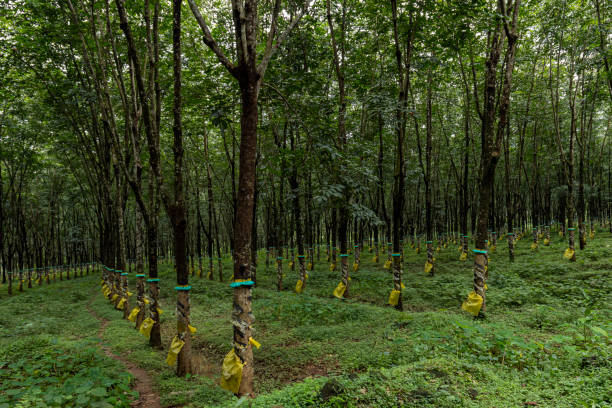

ENGLISH
Rubber trees are essential for natural rubber production and thrive in tropical climates, particularly
in regions like India. Here’s a detailed step-by-step growing mechanism from seed selection to
harvesting:
1] Seed Selection:
Rubber cultivation begins with selecting high-quality seeds from certified sources.
Seeds should be from high-yielding varieties known for their disease resistance and adaptability to
local conditions. Fresh seeds are preferred, as their viability decreases over time.
2] Seed Germination:
Rubber seeds require a germination period of about 2-3 weeks. Before planting, seeds
can be soaked in water for 24 hours to enhance germination. They should be sown in nursery beds or
containers filled with well-draining soil, maintaining a warm and humid environment.
3] Nursery Management:
Once seedlings emerge, they need adequate sunlight and moisture. The seedlings
should be watered regularly and protected from extreme weather conditions. After about 6-12 months, when
they reach about 1 meter in height, they can be transplanted to the field.
4] Soil Preparation:
Before planting in the field, the land should be cleared and tilled. Rubber trees
prefer deep, well-drained loamy soils with a pH between 4.5 and 6.5. Organic matter, such as compost,
should be added to enhance soil fertility.
5] Field Planting:
Rubber seedlings are typically planted during the rainy season to ensure sufficient
moisture. Spacing should be about 6-8 meters apart to allow for proper growth and canopy development. A
planting hole should be deep enough to accommodate the root system.
6] Initial Growth Phase:
After transplanting, the rubber trees enter an initial growth phase. They require
regular watering, especially during dry spells. Weeds should be controlled to reduce competition for
nutrients and water. Young trees may also require support against strong winds.
7] Vegetative Growth:
Rubber trees grow rapidly during the first few years, developing a thick trunk and a
canopy of leaves. Proper nutrient management, including nitrogen and potassium fertilizers, is essential
for robust growth. Mulching can help retain soil moisture and suppress weeds.
8] Tapping Preparation:
Rubber trees typically begin to be tapped for latex around 5-7 years after
planting. Before tapping, the trees need to reach a minimum diameter at breast height (DBH) of about 25
cm. Proper pruning and maintenance during the growth phase help ensure a healthy tree.
9] Tapping Process:
Tapping involves making precise cuts in the bark to collect latex. Taps are usually
done every other day to ensure sustainable latex production without harming the tree. Collection cups
are attached to catch the flowing latex, which is a milky fluid.
10] Latex Collection:
Latex flows from the cuts into the collection cups. The collection process typically
occurs in the early morning hours when temperatures are cooler. Collected latex should be processed
promptly to prevent spoilage.
11] Post-Collection Management:
After tapping, care should be taken to treat the tapped areas with
fungicides or protective agents to prevent infections. Regular monitoring of the trees for pests and
diseases is essential to maintain health and productivity.
12] Harvesting:
Rubber trees can continue to be tapped for latex for 20-30 years. The harvesting of latex
continues as long as the trees remain healthy. Eventually, trees may be felled for timber or replaced
with younger trees to maintain production levels.
13] Processing of Latex:
Collected latex can be processed into various rubber products. It’s coagulated
using acids or heat, then dried to produce sheets of rubber or processed into different forms, such as
blocks or granules, for industrial use.
Throughout the growing process, rubber trees require careful management of soil health, water, and pest
control to ensure a sustainable and productive yield of latex. Their cultivation not only provides
economic benefits but also contributes to environmental sustainability when managed responsibly.
ENGLISH
తెలుగు
సహజ రబ్బరు ఉత్పత్తికి రబ్బరు చెట్లు అవసరం మరియు ఉష్ణమండల వాతావరణంలో, ముఖ్యంగా భారతదేశం వంటి
ప్రాంతాలలో వృద్ధి చెందుతాయి. విత్తన ఎంపిక నుండి పంట కోత వరకు ఇక్కడ వివరణాత్మక దశల వారీ విధానం
ఉంది:
1] విత్తన ఎంపిక:
ధృవీకరించబడిన మూలాల నుండి అధిక-నాణ్యత గల విత్తనాలను ఎంచుకోవడంతో రబ్బరు
సాగు ప్రారంభమవుతుంది. విత్తనాలు వాటి వ్యాధి నిరోధకత మరియు స్థానిక పరిస్థితులకు అనుకూలతకు ప్రసిద్ధి
చెందిన అధిక-దిగుబడినిచ్చే రకాల నుండి ఉండాలి. తాజా విత్తనాలకు ప్రాధాన్యత ఇవ్వబడుతుంది, ఎందుకంటే వాటి
సాధ్యత కాలక్రమేణా తగ్గుతుంది.
2] విత్తన అంకురోత్పత్తి:
రబ్బరు విత్తనాలకు దాదాపు 2-3 వారాల అంకురోత్పత్తి కాలం అవసరం.
నాటడానికి ముందు, అంకురోత్పత్తిని పెంచడానికి విత్తనాలను 24 గంటలు నీటిలో నానబెట్టవచ్చు. వాటిని నర్సరీ
పడకలు లేదా బాగా ఎండిపోయే మట్టితో నింపిన కంటైనర్లలో విత్తాలి, వెచ్చని మరియు తేమతో కూడిన వాతావరణాన్ని
నిర్వహించాలి.
3] నర్సరీ నిర్వహణ:
మొలకలు ఉద్భవించిన తర్వాత, వాటికి తగినంత సూర్యరశ్మి మరియు తేమ అవసరం.
మొలకలకి క్రమం తప్పకుండా నీరు పెట్టాలి మరియు తీవ్రమైన వాతావరణ పరిస్థితుల నుండి రక్షించాలి. దాదాపు
6-12 నెలల తర్వాత, అవి 1 మీటరు ఎత్తుకు చేరుకున్నప్పుడు, వాటిని పొలంలో నాటవచ్చు.
4] నేల తయారీ:
పొలంలో నాటడానికి ముందు, భూమిని చదును చేసి దున్నాలి. రబ్బరు చెట్లు 4.5
మరియు 6.5 మధ్య pH ఉన్న లోతైన, బాగా ఎండిపోయిన లోమీ నేలలను ఇష్టపడతాయి. నేల సారాన్ని పెంపొందించడానికి
కంపోస్ట్ వంటి సేంద్రీయ పదార్థాన్ని జోడించాలి.
5] పొలంలో నాటడం:
తగినంత తేమ ఉండేలా రబ్బరు మొలకలని సాధారణంగా వర్షాకాలంలో నాటుతారు. సరైన
పెరుగుదల మరియు పందిరి అభివృద్ధికి వీలుగా 6-8 మీటర్ల దూరం ఉండాలి. నాటడం గుంట రూట్ వ్యవస్థకు సరిపోయేంత
లోతుగా ఉండాలి.
6] ప్రారంభ వృద్ధి దశ:
మార్పిడి తర్వాత, రబ్బరు చెట్లు ప్రారంభ వృద్ధి దశలోకి
ప్రవేశిస్తాయి. వారికి క్రమం తప్పకుండా నీరు త్రాగుట అవసరం, ముఖ్యంగా పొడి కాలాల్లో. పోషకాలు మరియు నీటి
కోసం పోటీని తగ్గించడానికి కలుపు మొక్కలను నియంత్రించాలి. బలమైన గాలులకు వ్యతిరేకంగా యువ చెట్లకు మద్దతు
అవసరం కావచ్చు.
7] ఏపుగా పెరుగుదల:
మొదటి కొన్ని సంవత్సరాలలో రబ్బరు చెట్లు వేగంగా పెరుగుతాయి, మందపాటి
ట్రంక్ మరియు ఆకుల పందిరిని అభివృద్ధి చేస్తాయి. దృఢమైన వృద్ధికి నత్రజని మరియు పొటాషియం ఎరువులతో సహా
సరైన పోషక నిర్వహణ అవసరం. మల్చింగ్ నేల తేమను నిలుపుకోవడంలో సహాయపడుతుంది మరియు కలుపు మొక్కలను
అణిచివేస్తుంది.
8] ట్యాపింగ్ తయారీ:
రబ్బరు చెట్లను నాటిన 5-7 సంవత్సరాల తర్వాత రబ్బరు చెట్లను సాధారణంగా
నొక్కడం ప్రారంభమవుతుంది. నొక్కే ముందు, చెట్లు కనీసం 25 సెం.మీ రొమ్ము ఎత్తు (DBH) వద్ద కనిష్ట
వ్యాసాన్ని చేరుకోవాలి. పెరుగుదల దశలో సరైన కత్తిరింపు మరియు నిర్వహణ ఆరోగ్యకరమైన చెట్టును
నిర్ధారించడంలో సహాయపడతాయి.
9] ట్యాపింగ్ ప్రక్రియ:
ట్యాపింగ్లో రబ్బరు పాలు సేకరించడానికి బెరడులో ఖచ్చితమైన కోతలు
చేయడం ఉంటుంది. చెట్టుకు హాని కలిగించకుండా స్థిరమైన రబ్బరు పాలు ఉత్పత్తిని నిర్ధారించడానికి సాధారణంగా
కుళాయిలు ప్రతి ఇతర రోజు చేయబడతాయి. ప్రవహించే రబ్బరు పాలును పట్టుకోవడానికి సేకరణ కప్పులు
జోడించబడ్డాయి, ఇది పాల ద్రవం.
10] లాటెక్స్ సేకరణ:
కట్ల నుండి లేటెక్స్ సేకరణ కప్పుల్లోకి ప్రవహిస్తుంది. సేకరణ ప్రక్రియ
సాధారణంగా ఉష్ణోగ్రతలు చల్లగా ఉన్నప్పుడు తెల్లవారుజామున జరుగుతుంది. సేకరించిన రబ్బరు పాలు చెడిపోకుండా
తక్షణమే ప్రాసెస్ చేయబడాలి.
11] పోస్ట్-కలెక్షన్ మేనేజ్మెంట్:
ట్యాప్ చేసిన తర్వాత, అంటువ్యాధులను నివారించడానికి
ట్యాప్ చేసిన ప్రదేశాలను శిలీంద్రనాశకాలు లేదా రక్షణ ఏజెంట్లతో చికిత్స చేయడానికి జాగ్రత్త తీసుకోవాలి.
ఆరోగ్యం మరియు ఉత్పాదకతను కాపాడుకోవడానికి తెగుళ్లు మరియు వ్యాధుల కోసం చెట్లను క్రమం తప్పకుండా
పర్యవేక్షించడం చాలా అవసరం.
12] కోత:
రబ్బరు చెట్లను 20-30 సంవత్సరాలు రబ్బరు పాలు కోసం నొక్కడం కొనసాగించవచ్చు. చెట్లు
ఆరోగ్యంగా ఉన్నంత వరకు రబ్బరు పాలు కోత కొనసాగుతుంది. చివరికి, కలప కోసం చెట్లను నరికివేయవచ్చు లేదా
ఉత్పత్తి స్థాయిలను కొనసాగించడానికి చిన్న చెట్లతో భర్తీ చేయవచ్చు.
13] లాటెక్స్ ప్రాసెసింగ్:
సేకరించిన రబ్బరు పాలు వివిధ రబ్బరు ఉత్పత్తులుగా ప్రాసెస్
చేయబడతాయి. ఇది ఆమ్లాలు లేదా వేడిని ఉపయోగించి గడ్డకట్టబడుతుంది, తర్వాత రబ్బరు షీట్లను ఉత్పత్తి
చేయడానికి ఎండబెట్టబడుతుంది లేదా పారిశ్రామిక ఉపయోగం కోసం బ్లాక్లు లేదా గ్రాన్యూల్స్ వంటి విభిన్న
రూపాల్లోకి ప్రాసెస్ చేయబడుతుంది.
పెరుగుతున్న ప్రక్రియ అంతటా, రబ్బరు చెట్లకు నేల ఆరోగ్యం, నీరు మరియు తెగులు నియంత్రణను జాగ్రత్తగా
నిర్వహించడం అవసరం. వాటి సాగు ఆర్థిక ప్రయోజనాలను అందించడమే కాకుండా బాధ్యతాయుతంగా నిర్వహించినప్పుడు
పర్యావరణ సుస్థిరతకు దోహదం చేస్తుంది.
తెలుగు
వినండి
8.SOYABEAN / 8.సోయాబీన్
 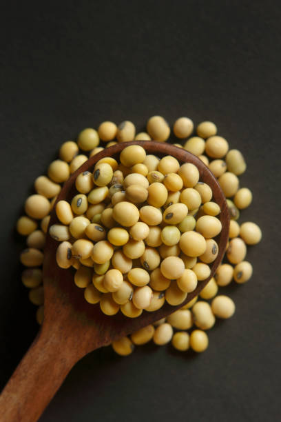
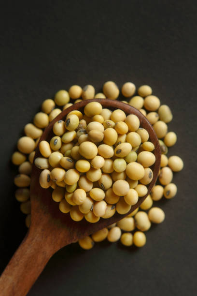
ENGLISH
Soybean is a vital legume crop in India, known for its high protein content and versatility in various
food products. Here’s a detailed step-by-step mechanism for growing soybean from seed selection to
harvesting:
1] Seed Selection and Sowing:
Select high-quality, certified soybean seeds that are disease-resistant and suitable for your region.
Soybeans are typically sown during the kharif season (June to July) after the last frost. Seeds should
be sown 1-2 inches deep in well-drained, fertile soil, with rows spaced 30-45 cm apart.
2] Germination:
After sowing, seeds absorb moisture and swell, leading to germination. The radicle (embryonic root)
emerges first, followed by the shoot. Germination generally occurs within 5-10 days, with optimal soil
temperatures between 20°C to 30°C.
3] Vegetative Growth:
Once germinated, the soybean plant enters a vegetative growth phase. The plant develops a sturdy stem
and compound leaves. During this stage, it is crucial to provide adequate sunlight and moisture to
support robust growth. Soybeans typically grow to a height of about 60-90 cm.
4] Flowering:
Around 40-60 days after sowing, soybean plants begin to flower. The flowers are small, typically white
or purple, and grow in clusters. This stage is essential for pod formation, and soybeans are
predominantly self-pollinating, though some cross-pollination can occur.
5] Pod Formation:
Following flowering, the pods develop, usually containing 2-4 seeds each. Pod formation occurs about
70-80 days after sowing. Proper moisture and nutrient levels during this period are crucial for seed
development and pod health.
6] Pest and Disease Management:
Soybeans can be affected by pests such as aphids, spider mites, and diseases like soybean rust and root
rot. Implement integrated pest management (IPM) strategies, including crop rotation, the use of
resistant varieties, and organic pesticides like neem oil to manage pest populations
effectively.
7] Seed Development:
As the pods mature, the seeds grow and harden. This maturation process lasts about 20-30 days, during
which the plants will begin to dry out. It's important to monitor moisture levels to avoid disease and
ensure uniform seed maturity.
8] Harvesting:
Soybeans are typically ready for harvest 100-150 days after sowing, indicated by brown, dry pods and
yellowing leaves. Harvesting can be done manually or with a combine harvester. Timely harvesting is
critical to prevent seed shattering and loss.
9] Post-Harvest Processing:
After harvesting, the plants should be laid out to dry in the sun for a few days. Threshing is performed
to separate the seeds from the pods. The seeds are cleaned and sorted to remove any debris or damaged
seeds.
10] Pest Control in Storage:
To protect stored soybean seeds from pests like weevils and grain borers, ensure they are stored in
airtight containers or bags in a cool, dry place. Using natural repellents such as dried neem leaves can
help deter pests in storage.
Throughout its growth cycle, soybean requires well-drained soil, adequate moisture, and effective pest
management to ensure a healthy and productive harvest.
ENGLISH
తెలుగు
సోయాబీన్ భారతదేశంలో ఒక ముఖ్యమైన పప్పుదినుసు పంట, ఇది అధిక ప్రోటీన్ కంటెంట్ మరియు వివిధ ఆహార
ఉత్పత్తులలో బహుముఖ ప్రజ్ఞకు ప్రసిద్ధి చెందింది. విత్తన ఎంపిక నుండి కోత వరకు సోయాబీన్ను పెంచడానికి
ఇక్కడ వివరణాత్మక దశల వారీ విధానం ఉంది:
1] విత్తన ఎంపిక మరియు విత్తడం:
వ్యాధి-నిరోధకత మరియు మీ ప్రాంతానికి అనువైన అధిక-నాణ్యత,
ధృవీకరించబడిన సోయాబీన్ విత్తనాలను ఎంచుకోండి. సోయాబీన్లను సాధారణంగా ఖరీఫ్ సీజన్లో (జూన్ నుండి జూలై
వరకు) చివరి మంచు తర్వాత విత్తుతారు. విత్తనాలను 1-2 అంగుళాల లోతులో బాగా ఎండిపోయిన, సారవంతమైన నేలలో,
వరుసలు 30-45 సెం.మీ.ల దూరంలో విత్తుకోవాలి.
2] అంకురోత్పత్తి:
విత్తిన తర్వాత, విత్తనాలు తేమను గ్రహించి ఉబ్బి, అంకురోత్పత్తికి
దారితీస్తాయి. రేడికల్ (పిండం మూలం) మొదట ఉద్భవిస్తుంది, తరువాత చిగురు వస్తుంది. అంకురోత్పత్తి
సాధారణంగా 5-10 రోజులలో జరుగుతుంది, సరైన నేల ఉష్ణోగ్రతలు 20°C నుండి 30°C మధ్య ఉంటాయి.
3] ఏపుగా పెరుగుదల:
ఒకసారి మొలకెత్తిన తర్వాత, సోయాబీన్ మొక్క ఏపుగా పెరిగే దశలోకి
ప్రవేశిస్తుంది. మొక్క దృఢమైన కాండం మరియు సమ్మేళనం ఆకులను అభివృద్ధి చేస్తుంది. ఈ దశలో, దృఢమైన
వృద్ధికి తోడ్పడటానికి తగినంత సూర్యరశ్మి మరియు తేమను అందించడం చాలా ముఖ్యం. సోయాబీన్స్ సాధారణంగా 60-90
సెం.మీ ఎత్తు వరకు పెరుగుతాయి.
4] పుష్పించేవి:
విత్తిన 40-60 రోజుల తర్వాత, సోయాబీన్ మొక్కలు పుష్పించడం ప్రారంభిస్తాయి.
పువ్వులు చిన్నవి, సాధారణంగా తెలుపు లేదా ఊదా రంగులో ఉంటాయి మరియు సమూహాలలో పెరుగుతాయి. పాడ్
ఏర్పడటానికి ఈ దశ చాలా అవసరం, మరియు సోయాబీన్స్ ప్రధానంగా స్వీయ-పరాగసంపర్కం, అయినప్పటికీ కొంత
క్రాస్-పరాగసంపర్కం సంభవించవచ్చు.
5] పాడ్ నిర్మాణం:
పుష్పించే తరువాత, కాయలు అభివృద్ధి చెందుతాయి, సాధారణంగా ఒక్కొక్కటి 2-4
గింజలు ఉంటాయి. విత్తిన 70-80 రోజుల తర్వాత పాడ్ ఏర్పడుతుంది. ఈ కాలంలో సరైన తేమ మరియు పోషక స్థాయిలు
విత్తనాల అభివృద్ధికి మరియు కాయ ఆరోగ్యానికి కీలకం.
6] తెగుళ్లు మరియు వ్యాధి నిర్వహణ:
అఫిడ్స్, స్పైడర్ పురుగులు మరియు సోయాబీన్ తుప్పు మరియు
రూట్ రాట్ వంటి వ్యాధుల ద్వారా సోయాబీన్లు ప్రభావితమవుతాయి. తెగుళ్ల జనాభాను సమర్థవంతంగా
నిర్వహించడానికి పంట భ్రమణ, నిరోధక రకాలు మరియు వేప నూనె వంటి సేంద్రీయ పురుగుమందులతో సహా సమీకృత పెస్ట్
మేనేజ్మెంట్ (IPM) వ్యూహాలను అమలు చేయండి.
7] విత్తనాభివృద్ది:
కాయలు పరిపక్వం చెందడంతో గింజలు పెరుగుతాయి మరియు గట్టిపడతాయి. ఈ
పరిపక్వత ప్రక్రియ సుమారు 20-30 రోజులు ఉంటుంది, ఈ సమయంలో మొక్కలు ఎండిపోవడం ప్రారంభమవుతుంది. వ్యాధిని
నివారించడానికి మరియు ఏకరీతి విత్తనాల పరిపక్వతను నిర్ధారించడానికి తేమ స్థాయిలను పర్యవేక్షించడం చాలా
ముఖ్యం.
8] కోత:
సోయాబీన్స్ సాధారణంగా విత్తిన 100-150 రోజుల తర్వాత కోతకు సిద్ధంగా ఉంటాయి,
గోధుమరంగు, పొడి కాయలు మరియు పసుపు రంగు ఆకులు సూచించబడతాయి. హార్వెస్టింగ్ మాన్యువల్గా లేదా కంబైన్
హార్వెస్టర్తో చేయవచ్చు. విత్తనం పగిలిపోవడం మరియు నష్టపోకుండా నిరోధించడానికి సకాలంలో కోయడం చాలా
అవసరం.
9] పోస్ట్-హార్వెస్ట్ ప్రాసెసింగ్:
పంట కోసిన తర్వాత, కొన్ని రోజులు ఎండలో ఎండబెట్టడానికి
మొక్కలను వేయాలి. కాయల నుండి విత్తనాలను వేరు చేయడానికి నూర్పిడి చేస్తారు. విత్తనాలు ఏదైనా చెత్తను
లేదా దెబ్బతిన్న విత్తనాలను తొలగించడానికి శుభ్రపరచబడి, క్రమబద్ధీకరించబడతాయి.
10] నిల్వలో పెస్ట్ కంట్రోల్:
నులిపురుగులు మరియు ధాన్యం తొలుచు పురుగులు వంటి తెగుళ్ల
నుండి నిల్వ చేసిన సోయాబీన్ గింజలను రక్షించడానికి, వాటిని గాలి చొరబడని డబ్బాల్లో లేదా సంచులలో చల్లని,
పొడి ప్రదేశంలో నిల్వ ఉంచారని నిర్ధారించుకోండి. ఎండిన వేప ఆకుల వంటి సహజ వికర్షకాలను ఉపయోగించడం వల్ల
నిల్వలో చీడపీడలను అరికట్టవచ్చు.
సోయాబీన్ దాని పెరుగుదల చక్రంలో, ఆరోగ్యకరమైన మరియు ఉత్పాదక పంటను నిర్ధారించడానికి బాగా ఎండిపోయిన నేల,
తగినంత తేమ మరియు సమర్థవంతమైన తెగులు నిర్వహణ అవసరం.
తెలుగు
వినండి
9.GROUNDNUT / 9.వేరుశనగ


ENGLISH
Groundnuts, commonly known as peanuts, are a leguminous crop that is widely cultivated in India. They
are valued for their edible seeds, oil, and protein content. Below is the step-by-step growing mechanism
for groundnuts from seed selection to harvesting:
1] Seed Selection:
Groundnut cultivation begins with the selection of high-quality seeds that are disease-free and have
high germination rates. Varieties should be chosen based on local conditions and desired yield.
Certified seeds from reputable sources are recommended.
2] Soil Preparation:
Groundnuts prefer well-drained, sandy loam to loamy soil. Before planting, the soil should be plowed and
leveled. Incorporating organic matter, such as compost, improves soil fertility and structure. Soil pH
should be maintained between 6.0 and 6.5 for optimal growth.
3] Sowing:
Groundnut seeds are typically sown at the beginning of the monsoon season, around June to July in India.
Seeds should be planted 1-2 inches deep, with a spacing of 20-30 cm between plants and rows. This
ensures adequate air circulation and sunlight.
4] Germination:
Germination occurs within 7-10 days after sowing, depending on soil moisture and
temperature. The seed absorbs water, swelling and eventually leading to the emergence of the shoot and
root. Adequate soil moisture is critical during this phase.
5] Vegetative Growth:
After germination, groundnut plants enter a rapid vegetative growth phase. They
develop a sprawling habit, producing numerous leaves that capture sunlight for photosynthesis. Root
development is crucial, as groundnuts are unique in that they form pegs that grow into the soil.
6] Flowering:
Groundnut plants typically flower about 30-40 days after sowing. The flowers are small,
yellow, and grow close to the ground. After pollination, the fertilized flowers develop into pegs, which
elongate and penetrate the soil to form pods.
7] Pod Formation:
The pegs that grow into the soil develop into pods, each containing 1-4 seeds. This
process occurs about 60-90 days after planting. The plant requires adequate moisture and nutrients
during this critical phase to support pod development.
8] Water and Nutrient Management:
Groundnuts require moderate irrigation, particularly during flowering and
pod development. Fertilization with balanced NPK (nitrogen, phosphorus, potassium) fertilizers is
essential to ensure healthy growth. Organic amendments can further enhance soil fertility.
9] Pest and Disease Management:
Common pests include leaf minor and thrips, while diseases like wilt and
rust can affect the crop. Regular monitoring is essential. Integrated Pest Management (IPM) strategies,
including crop rotation and biological control, can help manage pests effectively.
10] Maturation:
Groundnuts typically mature about 90-150 days after planting, depending on the variety. The
leaves begin to yellow, indicating that the pods are ready for harvest. Proper timing is crucial to
prevent over-maturation, which can lead to pod splitting.
11] Harvesting:
Harvesting is done manually or mechanically, depending on the scale of cultivation. The
plants are carefully uprooted to avoid damaging the pods. Harvesting should occur on a dry day to
minimize soil clinging to the pods.
12] Post-Harvest Processing:
After harvesting, groundnuts should be sun-dried to reduce moisture content.
This step is crucial for preventing spoilage and enhancing storage life. Once dried, the pods can be
stored in cool, dry conditions to protect against pests and moisture.
Throughout the growing process, groundnuts require careful management of soil moisture, nutrients, and
pest control to ensure a healthy and productive crop. Their unique growth habit, with pegs forming
underground pods, makes them an interesting and valuable crop.
ENGLISH
తెలుగు
వేరుశెనగ అని సాధారణంగా పిలవబడే వేరుశెనగ, భారతదేశంలో విస్తృతంగా సాగు చేయబడే పప్పుధాన్యాల పంట. అవి
తినదగిన విత్తనాలు, నూనె మరియు ప్రోటీన్ కంటెంట్ కోసం విలువైనవి. వేరుశెనగ కోసం విత్తన ఎంపిక నుండి కోత
వరకు దశల వారీగా పెరుగుతున్న విధానం క్రింద ఉంది:
1] విత్తన ఎంపిక:
వేరుశెనగ సాగు వ్యాధి రహిత మరియు అధిక అంకురోత్పత్తి రేటు కలిగిన
అధిక-నాణ్యత గల విత్తనాల ఎంపికతో ప్రారంభమవుతుంది. స్థానిక పరిస్థితులు మరియు కావలసిన దిగుబడిని బట్టి
రకాలను ఎంచుకోవాలి. ప్రసిద్ధ మూలాల నుండి ధృవీకరించబడిన విత్తనాలు సిఫార్సు చేయబడ్డాయి.
2] నేల తయారీ:
వేరుశెనగలు లోమీ నేల కంటే బాగా ఎండిపోయిన, ఇసుకతో కూడిన మట్టిని ఇష్టపడతాయి.
నాటడానికి ముందు, మట్టిని దున్నాలి మరియు చదును చేయాలి. కంపోస్ట్ వంటి సేంద్రియ పదార్ధాలను చేర్చడం, నేల
సంతానోత్పత్తి మరియు నిర్మాణాన్ని మెరుగుపరుస్తుంది. సరైన పెరుగుదల కోసం నేల pH 6.0 మరియు 6.5 మధ్య
నిర్వహించాలి.
3] విత్తడం:
వేరుశెనగ గింజలు సాధారణంగా వర్షాకాలం ప్రారంభంలో అంటే భారతదేశంలో జూన్ నుండి
జూలై వరకు విత్తుతారు. విత్తనాలను 1-2 అంగుళాల లోతులో నాటాలి, మొక్కలు మరియు వరుసల మధ్య 20-30 సెం.మీ.
ఇది తగినంత గాలి ప్రసరణ మరియు సూర్యరశ్మిని నిర్ధారిస్తుంది.
4] అంకురోత్పత్తి:
నేల తేమ మరియు ఉష్ణోగ్రతపై ఆధారపడి, విత్తిన 7-10 రోజులలోపు
అంకురోత్పత్తి జరుగుతుంది. విత్తనం నీటిని గ్రహిస్తుంది, వాపు మరియు చివరికి రెమ్మ మరియు రూట్ యొక్క
ఆవిర్భావానికి దారితీస్తుంది. ఈ దశలో తగినంత నేల తేమ చాలా కీలకం.
5] ఏపుగా పెరుగుదల:
అంకురోత్పత్తి తరువాత, వేరుశెనగ మొక్కలు వేగవంతమైన ఏపుగా ఎదుగుదల
దశలోకి ప్రవేశిస్తాయి. వారు కిరణజన్య సంయోగక్రియ కోసం సూర్యరశ్మిని సంగ్రహించే అనేక ఆకులను ఉత్పత్తి
చేస్తూ, విస్తృతమైన అలవాటును అభివృద్ధి చేస్తారు. వేరుశెనగలు నేలలో పెరిగే పెగ్లను ఏర్పరచడంలో
ప్రత్యేకత కలిగి ఉన్నందున, రూట్ అభివృద్ధి చాలా ముఖ్యమైనది.
6] పుష్పించేవి:
వేరుశెనగ మొక్కలు సాధారణంగా విత్తిన 30-40 రోజుల తర్వాత పుష్పిస్తాయి.
పువ్వులు చిన్నవి, పసుపు రంగులో ఉంటాయి మరియు భూమికి దగ్గరగా పెరుగుతాయి. పరాగసంపర్కం తర్వాత, ఫలదీకరణం
చేయబడిన పువ్వులు పెగ్లుగా అభివృద్ధి చెందుతాయి, ఇవి పొడుగుగా మరియు మట్టిలోకి చొచ్చుకుపోయి పాడ్లను
ఏర్పరుస్తాయి.
7] పాడ్ నిర్మాణం:
మట్టిలోకి పెరిగే పెగ్లు పాడ్లుగా అభివృద్ధి చెందుతాయి, ఒక్కొక్కటి
1-4 గింజలను కలిగి ఉంటాయి. నాటిన 60-90 రోజుల తర్వాత ఈ ప్రక్రియ జరుగుతుంది. పాడ్ అభివృద్ధికి
తోడ్పడటానికి ఈ క్లిష్టమైన దశలో మొక్కకు తగినంత తేమ మరియు పోషకాలు అవసరం.
8] నీరు మరియు పోషక నిర్వహణ:
వేరుశెనగకు మితమైన నీటిపారుదల అవసరం, ముఖ్యంగా పుష్పించే
మరియు కాయ అభివృద్ధి సమయంలో. సమతుల్య NPK (నత్రజని, భాస్వరం, పొటాషియం) ఎరువులతో ఫలదీకరణం ఆరోగ్యకరమైన
పెరుగుదలను నిర్ధారించడానికి అవసరం. సేంద్రీయ సవరణలు నేల సంతానోత్పత్తిని మరింత
మెరుగుపరుస్తాయి.
9] తెగులు మరియు వ్యాధి నిర్వహణ:
సాధారణ తెగుళ్లు ఆకు చిన్న మరియు త్రిప్స్ ఉన్నాయి,
అయితే విల్ట్ మరియు తుప్పు వంటి వ్యాధులు పంటను ప్రభావితం చేస్తాయి. క్రమమైన పర్యవేక్షణ అవసరం. పంట
భ్రమణ మరియు జీవ నియంత్రణతో సహా ఇంటిగ్రేటెడ్ పెస్ట్ మేనేజ్మెంట్ (IPM) వ్యూహాలు తెగుళ్లను సమర్థవంతంగా
నిర్వహించడంలో సహాయపడతాయి.
10] పరిపక్వత:
వేరుశెనగ సాధారణంగా రకాన్ని బట్టి నాటిన 90-150 రోజుల తర్వాత పరిపక్వం
చెందుతుంది. ఆకులు పసుపు రంగులోకి మారడం ప్రారంభిస్తాయి, కాయలు కోతకు సిద్ధంగా ఉన్నాయని సూచిస్తున్నాయి.
పాడ్ స్ప్లిటింగ్కు దారితీసే అధిక-పరిపక్వతను నివారించడానికి సరైన సమయం చాలా ముఖ్యం.
11] హార్వెస్టింగ్:
సాగు స్థాయిని బట్టి హార్వెస్టింగ్ మాన్యువల్గా లేదా యాంత్రికంగా
జరుగుతుంది. కాయలు దెబ్బతినకుండా మొక్కలను జాగ్రత్తగా వేరు చేస్తారు. కాయలకు అతుక్కొని మట్టిని
తగ్గించడానికి పొడి రోజున కోత చేయాలి.
12] హార్వెస్ట్ తర్వాత ప్రాసెసింగ్:
పంట కోసిన తర్వాత, తేమ శాతాన్ని తగ్గించడానికి
వేరుశెనగను ఎండలో ఎండబెట్టాలి. చెడిపోకుండా నిరోధించడానికి మరియు నిల్వ జీవితాన్ని పెంచడానికి ఈ దశ చాలా
కీలకం. ఎండబెట్టిన తర్వాత, తెగుళ్లు మరియు తేమ నుండి రక్షించడానికి పాడ్లను చల్లని, పొడి పరిస్థితులలో
నిల్వ చేయవచ్చు.
పెరుగుతున్న ప్రక్రియలో, వేరుశెనగలు ఆరోగ్యకరమైన మరియు ఉత్పాదక పంటను నిర్ధారించడానికి నేల తేమ, పోషకాలు
మరియు తెగులు నియంత్రణను జాగ్రత్తగా నిర్వహించడం అవసరం. వారి ప్రత్యేకమైన పెరుగుదల అలవాటు, పెగ్లు
భూగర్భ పాడ్లను ఏర్పరుస్తాయి, వాటిని ఆసక్తికరమైన మరియు విలువైన పంటగా చేస్తాయి.
తెలుగు
వినండి
10.MUSTARD / 10.ఆవాలు


ENGLISH
Mustard is a key oilseed crop in India, known for its nutritious seeds and oil. Here’s a detailed
step-by-step mechanism for growing mustard from seed selection to harvesting:
1] Seed Selection and Sowing:
Start by selecting high-quality mustard seeds that are certified and resistant to diseases. Mustard is
typically sown during the rabi season (October to November) in India. Seeds should be sown 1-2 inches
deep in well-drained, loamy soil, with rows spaced about 30-45 cm apart.
2] Germination:
Once sown, mustard seeds absorb moisture from the soil, triggering germination. The radicle (root)
emerges first, followed by the shoot. Germination usually occurs within 5-10 days, with optimal soil
temperatures around 15°C to 20°C.
3] Vegetative Growth:
After germination, the mustard plant enters a rapid vegetative growth phase. The plant develops a strong
stem and broad leaves. During this stage, adequate sunlight and water are crucial for healthy leaf
growth and overall plant development.
4] Flowering:
Approximately 40-50 days after sowing, mustard plants begin to flower. The flowers are typically yellow
and grow in clusters. This is an important phase for pollination, which primarily occurs through
insects. Mustard is mostly self-pollinated but also benefits from cross-pollination.
5] Pod Formation:
Following successful pollination, the flowers develop into pods, which contain seeds. Pod formation
starts about 60 days after sowing. Each pod can hold several seeds. Adequate moisture is essential
during this stage for proper seed development.
6] Pest and Disease Management:
Mustard can be affected by pests such as aphids, diamondback moths, and diseases like downy mildew and
white rust. Regular monitoring is essential. Integrated pest management strategies, including the use of
resistant varieties, crop rotation, and organic pesticides like neem oil, can help control these
issues.
7] Seed Development:
As the pods mature, the seeds grow and harden. This stage lasts about 20-30 days, during which the plant
begins to dry out. Reducing water supply at this stage is important to prevent disease and promote
uniform seed maturity.
8] Harvesting:
Mustard is ready for harvest 120-140 days after sowing, indicated by brown, dry pods. Harvesting can be
done manually or with a combine harvester. It’s crucial to harvest at the right time to avoid seed
shattering.
9] Post-Harvest Processing:
After harvesting, the plants are laid out to dry in the sun for a few days. Threshing is performed to
separate the seeds from the pods. The seeds are cleaned and sorted to remove any debris or damaged
seeds.
10] Pest Control in Storage:
To protect stored mustard seeds from pests like weevils, ensure they are stored in airtight containers
or bags in a cool, dry place. Using natural repellents such as dried neem leaves can help deter pests
during storage.
Throughout its growth cycle, mustard requires well-drained soil, moderate water, and effective pest
management to ensure a healthy and productive harvest.
ENGLISH
తెలుగు
ఆవాలు భారతదేశంలో ముఖ్యమైన నూనెగింజల పంట, దాని పోషక విత్తనాలు మరియు నూనెకు ప్రసిద్ధి. విత్తన ఎంపిక
నుండి కోత వరకు ఆవాలు పెరగడానికి వివరణాత్మక దశల వారీ విధానం ఇక్కడ ఉంది:
1] విత్తన ఎంపిక మరియు విత్తడం:
ధృవీకరించబడిన మరియు వ్యాధులకు నిరోధకత కలిగిన అధిక-నాణ్యత
గల ఆవపిండిని ఎంచుకోవడం ద్వారా ప్రారంభించండి. ఆవాలు సాధారణంగా భారతదేశంలో రబీ సీజన్లో (అక్టోబర్ నుండి
నవంబర్ వరకు) విత్తుతారు. విత్తనాలను 1-2 అంగుళాల లోతులో బాగా ఎండిపోయిన, లోమీ నేలలో, వరుసలు 30-45
సెం.మీ.ల దూరంలో విత్తుకోవాలి.
2] అంకురోత్పత్తి:
ఒకసారి నాటిన, ఆవాలు నేల నుండి తేమను గ్రహించి, అంకురోత్పత్తిని
ప్రేరేపిస్తాయి. రేడికల్ (రూట్) మొదట ఉద్భవిస్తుంది, తరువాత రెమ్మ. అంకురోత్పత్తి సాధారణంగా 5-10
రోజులలో జరుగుతుంది, సరైన నేల ఉష్ణోగ్రతలు 15°C నుండి 20°C వరకు ఉంటాయి.
3] ఏపుగా ఎదుగుదల:
అంకురోత్పత్తి తర్వాత, ఆవాలు మొక్క వేగవంతమైన ఏపుగా ఎదుగుదల దశలోకి
ప్రవేశిస్తుంది. మొక్క బలమైన కాండం మరియు విశాలమైన ఆకులను అభివృద్ధి చేస్తుంది. ఈ దశలో, ఆరోగ్యకరమైన ఆకు
పెరుగుదల మరియు మొత్తం మొక్కల అభివృద్ధికి తగినంత సూర్యరశ్మి మరియు నీరు కీలకం.
4] పూలు పూయడం:
విత్తిన సుమారు 40-50 రోజుల తర్వాత, ఆవాలు మొక్కలు పూయడం ప్రారంభిస్తాయి.
పువ్వులు సాధారణంగా పసుపు రంగులో ఉంటాయి మరియు గుత్తులుగా పెరుగుతాయి. పరాగసంపర్కానికి ఇది ఒక ముఖ్యమైన
దశ, ఇది ప్రధానంగా కీటకాల ద్వారా సంభవిస్తుంది. ఆవాలు ఎక్కువగా స్వీయ-పరాగసంపర్కం కానీ
క్రాస్-పరాగసంపర్కం నుండి కూడా ప్రయోజనం పొందుతాయి.
5] పాడ్ ఫార్మేషన్:
విజయవంతమైన పరాగసంపర్కం తరువాత, పువ్వులు గింజలను కలిగి ఉండే కాయలుగా
అభివృద్ధి చెందుతాయి. విత్తిన 60 రోజుల తర్వాత కాయల నిర్మాణం ప్రారంభమవుతుంది. ప్రతి పాడ్ అనేక
విత్తనాలను కలిగి ఉంటుంది. సరైన విత్తనాల అభివృద్ధికి ఈ దశలో తగినంత తేమ అవసరం.
6] పెస్ట్ అండ్ డిసీజ్ మేనేజ్మెంట్:
అఫిడ్స్, డైమండ్బ్యాక్ మాత్లు మరియు డౌనీ బూజు మరియు
తెల్ల తుప్పు వంటి వ్యాధుల ద్వారా ఆవాలు ప్రభావితమవుతాయి. క్రమమైన పర్యవేక్షణ అవసరం. నిరోధక రకాలు, పంట
మార్పిడి మరియు వేప నూనె వంటి సేంద్రీయ పురుగుమందుల వాడకంతో సహా సమీకృత తెగులు నిర్వహణ వ్యూహాలు ఈ
సమస్యలను నియంత్రించడంలో సహాయపడతాయి.
7] విత్తనాభివృద్ది:
కాయలు పరిపక్వం చెందడంతో గింజలు పెరుగుతాయి మరియు గట్టిపడతాయి. ఈ దశ
సుమారు 20-30 రోజులు ఉంటుంది, ఈ సమయంలో మొక్క ఎండిపోవడం ప్రారంభమవుతుంది. ఈ దశలో నీటి సరఫరాను తగ్గించడం
అనేది వ్యాధిని నివారించడానికి మరియు ఏకరీతి విత్తనాల పరిపక్వతను ప్రోత్సహించడానికి ముఖ్యమైనది.
8] కోత:
ఆవాలు విత్తిన 120-140 రోజుల తర్వాత కోతకు సిద్ధంగా ఉంటాయి, గోధుమరంగు, పొడి కాయలు
సూచించబడతాయి. హార్వెస్టింగ్ మాన్యువల్గా లేదా కంబైన్ హార్వెస్టర్తో చేయవచ్చు. విత్తనాలు పగిలిపోకుండా
ఉండాలంటే సరైన సమయంలో కోయడం చాలా ముఖ్యం.
9] పోస్ట్-హార్వెస్ట్ ప్రాసెసింగ్:
కోత తర్వాత, కొన్ని రోజులు ఎండలో ఎండబెట్టడానికి మొక్కలు
వేయబడతాయి. కాయల నుండి విత్తనాలను వేరు చేయడానికి నూర్పిడి చేస్తారు. విత్తనాలు ఏదైనా చెత్తను లేదా
దెబ్బతిన్న విత్తనాలను తొలగించడానికి శుభ్రపరచబడి, క్రమబద్ధీకరించబడతాయి.
10] నిల్వలో పెస్ట్ కంట్రోల్:
ఆవపిండిని వీవిల్స్ వంటి తెగుళ్ల నుండి రక్షించడానికి, వాటిని
గాలి చొరబడని కంటైనర్లలో లేదా బ్యాగ్లలో చల్లని, పొడి ప్రదేశంలో నిల్వ ఉంచారని నిర్ధారించుకోండి.
ఎండిన వేప ఆకులు వంటి సహజ వికర్షకాలను ఉపయోగించడం నిల్వ సమయంలో తెగుళ్లను అరికట్టడంలో
సహాయపడుతుంది.
దాని పెరుగుదల చక్రంలో, ఆవాలు ఆరోగ్యకరమైన మరియు ఉత్పాదక పంటను నిర్ధారించడానికి బాగా ఎండిపోయిన నేల,
మితమైన నీరు మరియు సమర్థవంతమైన తెగులు నిర్వహణ అవసరం.
తెలుగు
వినండి
11.CHICKPEAS / 11.చిక్పీస్

ENGLISH
Chickpeas, also known as gram or chana, are a vital legume crop in India, valued for their high protein
content and adaptability to arid conditions. Here’s a detailed step-by-step growing mechanism from seed
selection to harvesting:
1] Seed Selection and Preparation:
Choose high-quality, disease-resistant chickpea seeds. Varieties like "Kabuli" or "Desi" can be selected
based on local conditions.Treat seeds with fungicides to protect against soil-borne diseases before
sowing.
2] Soil Preparation:
Prepare well-drained, loamy soil with a pH of 6-7.Plow the field to a fine tilth and incorporate organic
matter like compost or well-rotted manure to enhance soil fertility.
3] Sowing:
Sow seeds in late October to early November.Plant seeds 1.5-2 inches deep and space them 30-35 cm apart
in rows.
4] Germination:
Germination occurs within 7-10 days under optimal soil moisture and temperature (10°C to 15°C).The
radicle (root) emerges first, followed by the shoot.
5] Vegetative Growth:
The chickpea plant grows rapidly, developing a strong root system and erect stem, reaching 30-60 cm in
height.Leaves are compound and help in photosynthesis, crucial for energy production.
6] Branching and Flowering:
Around 40-45 days after sowing, the plant starts branching, and flowers appear.Flowers are mostly
self-pollinated, which facilitates pod formation without external pollinators.
7] Pod Formation:
After successful pollination, pods develop, typically 1-2 seeds per pod.This stage lasts 60-70 days
after sowing, requiring careful water management.
8] Pest and Disease Management:
Monitor for pests like pod borers and diseases such as wilt or root rot.Implement integrated pest
management (IPM) strategies, including neem-based pesticides and crop rotation.
9] Seed Development:
Pods mature over 20-30 days, during which the seeds harden.The plant begins to dry, indicating that the
seeds are nearing maturity.
10] Harvesting:
Harvest when the pods are fully dry and brown, usually 100-110 days after sowing.Use manual or
mechanical methods to cut the plants and allow them to dry further.
11] Post-Harvest Processing:
After harvesting, thresh the plants to separate the seeds.Clean and dry the seeds before storing them in
a cool, dry place to prevent moisture absorption and pest infestations.
12] Pest Control in Storage:
Use proper storage techniques to protect seeds from pests like weevils.Inspect stored seeds regularly
and treat storage areas with appropriate pest control measures.
Chickpeas are resilient and require minimal irrigation, thriving well in well-managed fields. Proper
care throughout their growth cycle ensures a healthy and abundant yield.
ENGLISH
తెలుగు
చిక్పీస్, గ్రాము లేదా చనా అని కూడా పిలుస్తారు, భారతదేశంలో ఒక ముఖ్యమైన పప్పుదినుసు పంట, వాటి అధిక
ప్రోటీన్ కంటెంట్ మరియు శుష్క పరిస్థితులకు అనుకూలత కోసం విలువైనది. విత్తన ఎంపిక నుండి పంట కోత వరకు
ఇక్కడ వివరణాత్మక దశల వారీ విధానం ఉంది:
1] విత్తన ఎంపిక మరియు తయారీ:
అధిక-నాణ్యత, వ్యాధి-నిరోధక చిక్పీ విత్తనాలను ఎంచుకోండి.
స్థానిక పరిస్థితుల ఆధారంగా "కాబూలి" లేదా "దేశీ" వంటి రకాలను ఎంచుకోవచ్చు. విత్తనాలు విత్తడానికి ముందు
నేల ద్వారా వచ్చే వ్యాధుల నుండి రక్షించడానికి శిలీంద్రనాశకాలతో విత్తనాలను చికిత్స చేయండి.
2] నేల తయారీ:
6-7 pHతో బాగా ఎండిపోయిన, లోమీ మట్టిని సిద్ధం చేయండి. పొలాన్ని చక్కగా
దున్నండి మరియు మెరుగుపరచడానికి కంపోస్ట్ లేదా బాగా కుళ్ళిన ఎరువు వంటి సేంద్రియ పదార్థాలను కలపండి. నేల
సంతానోత్పత్తి.
3] విత్తడం:
అక్టోబరు చివరి నుండి నవంబర్ ప్రారంభంలో విత్తనాలను విత్తండి. విత్తనాలను 1.5-2
అంగుళాల లోతులో నాటండి మరియు వాటిని వరుసలలో 30-35 సెం.మీ దూరంలో ఉంచండి.
4] అంకురోత్పత్తి:
సరైన నేల తేమ మరియు ఉష్ణోగ్రత (10°C నుండి 15°C) కింద 7-10 రోజులలో
అంకురోత్పత్తి జరుగుతుంది.మొదట రేడికల్ (రూట్) ఉద్భవిస్తుంది, తరువాత చిగురు వస్తుంది.
5] ఏపుగా పెరగడం:
చిక్పీయా మొక్క వేగంగా పెరుగుతుంది, బలమైన రూట్ వ్యవస్థ మరియు నిటారుగా
ఉండే కాండం అభివృద్ధి చెందుతుంది, 30-60 సెం.మీ ఎత్తుకు చేరుకుంటుంది. ఆకులు సమ్మేళనం మరియు కిరణజన్య
సంయోగక్రియలో సహాయపడతాయి, శక్తి ఉత్పత్తికి కీలకం. .
6] కొమ్మలు మరియు పుష్పించడం:
విత్తిన 40-45 రోజుల తర్వాత, మొక్క కొమ్మలుగా ప్రారంభమవుతుంది
మరియు పువ్వులు కనిపిస్తాయి. పువ్వులు ఎక్కువగా స్వీయ-పరాగసంపర్కం, ఇది బాహ్య పరాగ సంపర్కాలు లేకుండా
పాడ్ ఏర్పడటానికి దోహదపడుతుంది.
7] పాడ్ ఏర్పడటం:
విజయవంతమైన పరాగసంపర్కం తర్వాత, కాయలు అభివృద్ధి చెందుతాయి, సాధారణంగా ఒక
పాడ్కు 1-2 గింజలు ఉంటాయి. ఈ దశ విత్తిన 60-70 రోజుల తర్వాత ఉంటుంది, జాగ్రత్తగా నీటి నిర్వహణ
అవసరం.
8] పెస్ట్ అండ్ డిసీజ్ మేనేజ్మెంట్:
కాయ తొలుచు పురుగులు మరియు విల్ట్ లేదా వేరు తెగులు
వంటి వ్యాధుల కోసం మానిటర్ చేయండి. వేప ఆధారిత పురుగుమందులు మరియు పంట భ్రమణంతో సహా సమీకృత తెగులు
నిర్వహణ (IPM) వ్యూహాలను అమలు చేయండి.
9] విత్తనాభివృద్ది:
కాయలు 20-30 రోజులలో పరిపక్వం చెందుతాయి, ఆ సమయంలో గింజలు గట్టిపడతాయి.
మొక్క ఎండిపోవడం ప్రారంభమవుతుంది, ఇది విత్తనాలు పరిపక్వ దశకు చేరుకున్నాయని సూచిస్తుంది.
10] కోత:
సాధారణంగా విత్తిన 100-110 రోజుల తర్వాత కాయలు పూర్తిగా ఎండిపోయి గోధుమ రంగులో
ఉన్నప్పుడు కోయండి. మొక్కలను కత్తిరించడానికి మాన్యువల్ లేదా మెకానికల్ పద్ధతులను ఉపయోగించండి మరియు
వాటిని మరింత పొడిగా చేయడానికి అనుమతించండి.
11] పోస్ట్-హార్వెస్ట్ ప్రాసెసింగ్:
కోత తర్వాత, విత్తనాలను వేరు చేయడానికి మొక్కలను
నూర్పిడి చేయండి. తేమ శోషణ మరియు తెగులు సోకకుండా నిరోధించడానికి విత్తనాలను చల్లని, పొడి ప్రదేశంలో
నిల్వ చేయడానికి ముందు వాటిని శుభ్రం చేసి ఆరబెట్టండి.
12] నిల్వలో పెస్ట్ కంట్రోల్:
వీవిల్స్ వంటి చీడపీడల నుండి విత్తనాలను రక్షించడానికి సరైన
నిల్వ పద్ధతులను ఉపయోగించండి. నిల్వ చేసిన విత్తనాలను క్రమం తప్పకుండా తనిఖీ చేయండి మరియు నిల్వ
ప్రాంతాలను తగిన తెగులు నియంత్రణ చర్యలతో చికిత్స చేయండి.
చిక్పీస్ స్థితిస్థాపకంగా ఉంటాయి మరియు తక్కువ నీటిపారుదల అవసరం, బాగా నిర్వహించబడే పొలాల్లో బాగా
వృద్ధి చెందుతాయి. వారి పెరుగుదల చక్రం అంతటా సరైన సంరక్షణ ఆరోగ్యకరమైన మరియు సమృద్ధిగా దిగుబడిని
నిర్ధారిస్తుంది.
తెలుగు
వినండి
12.LENTILS / 12.కాయధాన్యాలు
ENGLISH
Lentils, known as masoor in India, are an important legume crop valued for their high protein content
and ability to enrich soil. Here’s a detailed step-by-step growing mechanism from seed selection to
harvesting:
1] Seed Selection and Preparation:
Choose high-quality, disease-resistant lentil seeds suitable for the local climate, such as "Masoor"
varieties.Treat seeds with fungicides to prevent diseases like wilt and root rot.
2] Soil Preparation:
Prepare well-drained, loamy soil with a pH of 6-7.Plow the field to a fine tilth and incorporate organic
matter, such as compost or green manure, to improve fertility.
3] Sowing:
Sow lentil seeds in late October to early November, ideally just before the onset of the winter
rains.Plant seeds about 1-2 inches deep, with row spacing of 30-40 cm to allow for adequate air
circulation.
4] Germination:
Germination typically occurs within 7-14 days, depending on soil moisture and temperature (optimal range
is 15°C to 20°C).The radicle (embryonic root) emerges first, followed by the shoot.
5] Vegetative Growth:
After germination, the lentil plant develops a robust root system and erect stems, growing to about
30-60 cm in height.The plant produces compound leaves, which are crucial for photosynthesis.
6] Flowering:
Approximately 40-50 days after sowing, the plant begins to flower. Flowers are usually white or purple
and self-pollinating.This stage is critical for pod development, and the plants should be monitored for
water and nutrient availability.
7] Pod Formation:
After pollination, small pods begin to form, typically containing 1-2 lentil seeds each.Pod development
lasts about 20-30 days, during which the plant requires adequate moisture.
8] Pest and Disease Management:
Monitor for common pests such as aphids and diseases like fungal infections.Employ integrated pest
management (IPM) strategies, including crop rotation and the use of resistant varieties.
9] Seed Development:
As pods mature, the seeds grow and harden. This stage usually lasts 20-30 days.The plant begins to dry
out, indicating that the seeds are nearing maturity.
10] Harvesting:
Harvest lentils when the pods are fully dry and the plant turns brown, generally 90-120 days after
sowing.Use manual or mechanical methods to cut the plants and allow them to dry in the field for a few
days.
11] Post-Harvest Processing:
After harvesting, thresh the lentils to separate the seeds from the pods.Clean and dry the seeds
thoroughly before storing them in cool, dry conditions to prevent spoilage.
12] Pest Control in Storage:
Store lentils in airtight containers to protect against pests like weevils.Regularly inspect stored
lentils and apply pest control measures as necessary.
Lentils are hardy and require minimal irrigation, thriving best in well-managed fields. Proper care
throughout their growth cycle is essential for achieving a healthy and bountiful harvest.
ENGLISH
తెలుగు
భారతదేశంలో మసూర్ అని పిలువబడే కాయధాన్యాలు, అధిక ప్రోటీన్ కంటెంట్ మరియు మట్టిని సుసంపన్నం చేసే
సామర్థ్యం కోసం విలువైన ఒక ముఖ్యమైన పప్పుదినుసు పంట. విత్తన ఎంపిక నుండి పంట కోత వరకు ఇక్కడ వివరణాత్మక
దశల వారీ విధానం ఉంది:
1] విత్తన ఎంపిక మరియు తయారీ:
స్థానిక వాతావరణానికి తగిన "మసూర్" రకాలు వంటి అధిక-నాణ్యత,
వ్యాధి-నిరోధక పప్పు గింజలను ఎంచుకోండి. విల్ట్ మరియు వంటి వ్యాధులను నివారించడానికి విత్తనాలను
శిలీంద్రనాశకాలతో చికిత్స చేయండి. వేరు తెగులు.
2] నేల తయారీ:
6-7 pHతో బాగా ఎండిపోయిన, లోమీ మట్టిని సిద్ధం చేయండి. పొలాన్ని చక్కగా
దున్నండి మరియు కంపోస్ట్ లేదా పచ్చి ఎరువు వంటి సేంద్రియ పదార్థాలను కలపండి. సంతానోత్పత్తిని
మెరుగుపరుస్తుంది.
3] విత్తడం:
అక్టోబరు చివరి నుండి నవంబరు మొదట్లో కాయధాన్యాల విత్తనాలను విత్తండి,
శీతాకాలపు వర్షాలు ప్రారంభమయ్యే ముందు. విత్తనాలను 1-2 అంగుళాల లోతుతో, 30-40 వరుసల అంతరంతో నాటండి.
తగినంత గాలి ప్రసరణను అనుమతించడానికి సెం.మీ.
4] అంకురోత్పత్తి:
అంకురోత్పత్తి సాధారణంగా 7-14 రోజులలో జరుగుతుంది, నేల తేమ మరియు
ఉష్ణోగ్రతపై ఆధారపడి ఉంటుంది (సరైన పరిధి 15 ° C నుండి 20 ° C వరకు ఉంటుంది). రేడికల్ (పిండమూలం) మొదట
ఉద్భవిస్తుంది, తరువాత షూట్ అవుతుంది.
5] ఏపుగా ఎదుగుదల:
అంకురోత్పత్తి తర్వాత, కాయధాన్యం మొక్క దృఢమైన రూట్ వ్యవస్థను మరియు
నిటారుగా ఉండే కాండంను అభివృద్ధి చేస్తుంది, దాదాపు 30-60 సెం.మీ ఎత్తు వరకు పెరుగుతుంది. మొక్క సమ్మేళన
ఆకులను ఉత్పత్తి చేస్తుంది, ఇవి కీలకమైనవి. కిరణజన్య సంయోగక్రియ.
6] పూలు పూయడం:
విత్తిన సుమారు 40-50 రోజుల తర్వాత, మొక్క పుష్పించడం ప్రారంభమవుతుంది.
పువ్వులు సాధారణంగా తెలుపు లేదా ఊదా రంగులో ఉంటాయి మరియు స్వీయ-పరాగసంపర్కం కలిగి ఉంటాయి. ఈ దశ పాడ్
అభివృద్ధికి కీలకం, మరియు మొక్కలు నీరు మరియు పోషకాల లభ్యత కోసం పర్యవేక్షించబడాలి.
7] పాడ్ నిర్మాణం:
పరాగసంపర్కం తర్వాత, చిన్న కాయలు ఏర్పడటం ప్రారంభిస్తాయి, సాధారణంగా
ఒక్కొక్కటి 1-2 కాయధాన్యాలు ఉంటాయి. పాడ్ అభివృద్ధి 20-30 రోజులు ఉంటుంది, ఈ సమయంలో మొక్కకు తగినంత తేమ
అవసరం.
8] పెస్ట్ అండ్ డిసీజ్ మేనేజ్మెంట్:
అఫిడ్స్ వంటి సాధారణ తెగుళ్లు మరియు ఫంగల్
ఇన్ఫెక్షన్ల వంటి వ్యాధుల కోసం మానిటర్ చేయండి. పంట భ్రమణం మరియు నిరోధక రకాలను ఉపయోగించడంతో సహా
సమీకృత పెస్ట్ మేనేజ్మెంట్ (IPM) వ్యూహాలను అమలు చేయండి.
9] విత్తన అభివృద్ధి:
కాయలు పరిపక్వం చెందడంతో, గింజలు పెరుగుతాయి మరియు గట్టిపడతాయి. ఈ దశ
సాధారణంగా 20-30 రోజుల పాటు ఉంటుంది. మొక్క ఎండిపోవడం ప్రారంభమవుతుంది, ఇది విత్తనాలు పరిపక్వతకు
దగ్గరగా ఉన్నాయని సూచిస్తుంది.
10] కోత:
కాయలు పూర్తిగా ఎండిపోయి, మొక్క గోధుమ రంగులోకి మారినప్పుడు, సాధారణంగా విత్తిన
90-120 రోజుల తర్వాత కాయధాన్యాలను కోయండి. మొక్కలను కత్తిరించడానికి మాన్యువల్ లేదా మెకానికల్ పద్ధతులను
ఉపయోగించండి మరియు వాటిని ఎండబెట్టండి. కొన్ని రోజులు ఫీల్డ్లో ఉన్నారు.
11] పోస్ట్-హార్వెస్ట్ ప్రాసెసింగ్:
కోత తర్వాత, గింజలను గింజల నుండి వేరు చేయడానికి
కాయధాన్యాలను నూర్పిడి చేయండి. చెడిపోకుండా ఉండటానికి విత్తనాలను చల్లని, పొడి పరిస్థితులలో నిల్వ
చేయడానికి ముందు వాటిని పూర్తిగా శుభ్రం చేసి ఆరబెట్టండి.
12] నిల్వలో చీడపీడల నియంత్రణ:
వీవిల్స్ వంటి చీడపీడల నుండి రక్షించడానికి గాలి చొరబడని
కంటైనర్లలో కాయధాన్యాలను నిల్వ చేయండి. నిల్వ చేసిన కాయధాన్యాలను క్రమం తప్పకుండా తనిఖీ చేయండి మరియు
అవసరమైన విధంగా తెగులు నియంత్రణ చర్యలను వర్తింపజేయండి.
కాయధాన్యాలు దృఢంగా ఉంటాయి మరియు తక్కువ నీటిపారుదల అవసరం, బాగా నిర్వహించబడే పొలాల్లో బాగా వృద్ధి
చెందుతాయి. ఆరోగ్యకరమైన మరియు సమృద్ధిగా పంటను సాధించడానికి వారి పెరుగుదల చక్రం అంతటా సరైన సంరక్షణ
అవసరం
తెలుగు
వినండి
13.PIGEON PEA / 13.పావురం బఠానీ


ENGLISH
Pigeon pea, also known as "tur" or "arhar," is a significant pulse crop in India, valued for its
nutritious seeds and adaptability to various soil types. Below is the step-by-step growing mechanism for
pigeon pea from seed selection to harvesting:
1] Seed Selection:
Choose high-quality, disease-resistant seeds of
pigeon pea. Popular varieties include "Bahar," "Asha," and "UPAS 120." Seeds should be inspected for
size, color, and absence of damage.
2] Soil Preparation:
Pigeon pea thrives in well-drained, sandy loam to clayey soil with a pH of 6.0-7.5.
The land should be cleared of weeds and debris. Incorporate organic matter such as compost or
well-rotted manure into the soil to enhance fertility.
3] Sowing:
Pigeon pea is usually sown at the beginning of the monsoon season (June-July) in India. Seeds
are planted 2-4 inches deep in rows spaced 30-45 cm apart. A spacing of 10-15 cm between seeds within
the row is ideal for optimal growth.
4] Germination:
After sowing, seeds require adequate moisture for germination, which usually occurs within
7-10 days. Proper soil moisture is essential during this period to ensure good seedling
emergence.
5] Vegetative Growth:
Once germination occurs, the plant enters a vegetative growth phase. Pigeon pea
plants grow upright and can reach heights of 1-3 meters. Leaves are compound and alternate, providing a
good canopy for photosynthesis.
6] Flowering:
Pigeon pea typically begins flowering around 60-90 days after sowing. Flowers are usually
yellow or white and attract various pollinators. Adequate pollination is crucial for fruit set.
7] Pod Development:
After flowering, pods begin to form, usually containing 3-5 seeds each. This stage
lasts about 30-40 days. Proper moisture and nutrient management during pod development are critical for
maximizing yield.
8] Pest and Disease Management:
Pigeon pea can be affected by pests such as pod borers and diseases like
wilt and root rot. Regular monitoring is essential. Integrated pest management strategies, including
crop rotation, use of resistant varieties, and organic pesticides, help control these issues.
9] Seed Development:
As pods mature, the seeds inside grow and harden. The plant generally takes about
100-180 days from sowing to reach maturity, depending on the variety and growing conditions.
10] Harvesting:
Pigeon peas are harvested when the pods turn brown and dry, and the seeds rattle inside.
This usually occurs 4-6 months after sowing. Harvesting is done manually or with sickles, cutting the
plants at the base.
11] Post-Harvest Processing:
After harvesting, the plants should be dried in the sun for a few days to
reduce moisture content. Once dried, threshing is done to separate the seeds from the pods.
12] Storage:
Seeds should be cleaned and stored in a cool, dry place in airtight containers to prevent
moisture absorption and pest infestations. Proper storage ensures the seeds remain viable for future
planting.
Throughout the growth cycle, pigeon pea plants require well-drained soil, moderate watering, and careful
management to ensure a healthy and productive yield.
ENGLISH
తెలుగు
పావురం బఠానీ, "తుర్" లేదా "అర్హర్" అని కూడా పిలుస్తారు, ఇది భారతదేశంలో ఒక ముఖ్యమైన పప్పు పంట, దాని
పోషకమైన విత్తనాలు మరియు వివిధ నేల రకాలకు అనుకూలత కోసం విలువైనది. పావురం బఠానీ కోసం విత్తన ఎంపిక
నుండి హార్వెస్టింగ్ వరకు దశల వారీగా పెరుగుతున్న విధానం క్రింద ఉంది:
1] విత్తన ఎంపిక:
పావుర బఠానీ యొక్క అధిక-నాణ్యత, వ్యాధి-నిరోధక విత్తనాలను ఎంచుకోండి.
జనాదరణ పొందిన రకాలు "బహార్," "ఆషా," మరియు "UPAS 120." విత్తనాలు పరిమాణం, రంగు మరియు నష్టం లేకపోవడం
కోసం తనిఖీ చేయాలి.
2] నేల తయారీ:
పావురం బఠానీ 6.0-7.5 pHతో బాగా ఎండిపోయిన, ఇసుకతో కూడిన మట్టి నుండి
బంకమట్టి నేలలో వృద్ధి చెందుతుంది. భూమిని కలుపు మొక్కలు మరియు చెత్తను తొలగించాలి. సంతానోత్పత్తిని
పెంచడానికి కంపోస్ట్ లేదా బాగా కుళ్ళిన ఎరువు వంటి సేంద్రియ పదార్థాలను మట్టిలో చేర్చండి.
3] విత్తడం:
సాధారణంగా భారతదేశంలో వర్షాకాలం (జూన్-జూలై) ప్రారంభంలో పావురం బఠానీని
విత్తుతారు. విత్తనాలు 30-45 సెం.మీ దూరంలో ఉన్న వరుసలలో 2-4 అంగుళాల లోతులో నాటబడతాయి. వరుసలో విత్తనాల
మధ్య 10-15 సెం.మీ దూరం సరైన పెరుగుదలకు అనువైనది.
4] అంకురోత్పత్తి:
విత్తిన తర్వాత, విత్తనాలు అంకురోత్పత్తికి తగిన తేమ అవసరం, ఇది సాధారణంగా
7-10 రోజులలోపు జరుగుతుంది. మంచి మొలకల ఆవిర్భావానికి ఈ కాలంలో సరైన నేల తేమ అవసరం.
5] ఏపుగా పెరుగుదల:
ఒకసారి అంకురోత్పత్తి జరిగినప్పుడు, మొక్క ఏపుగా పెరిగే దశలోకి
ప్రవేశిస్తుంది. పావురం బఠానీ మొక్కలు నిటారుగా పెరుగుతాయి మరియు 1-3 మీటర్ల ఎత్తుకు చేరుకోగలవు. ఆకులు
సమ్మేళనం మరియు ప్రత్యామ్నాయంగా ఉంటాయి, కిరణజన్య సంయోగక్రియకు మంచి పందిరిని అందిస్తాయి.
6] పువ్వు:
పావురం బఠానీ సాధారణంగా విత్తిన 60-90 రోజుల తర్వాత పుష్పించడం ప్రారంభమవుతుంది.
పువ్వులు సాధారణంగా పసుపు లేదా తెలుపు రంగులో ఉంటాయి మరియు వివిధ పరాగ సంపర్కాలను ఆకర్షిస్తాయి. పండు
సెట్ కోసం తగినంత పరాగసంపర్కం కీలకం.
7] పాడ్ డెవలప్మెంట్:
పుష్పించే తర్వాత, కాయలు ఏర్పడటం ప్రారంభిస్తాయి, సాధారణంగా
ఒక్కొక్కటి 3-5 గింజలను కలిగి ఉంటాయి. ఈ దశ సుమారు 30-40 రోజులు ఉంటుంది. పాడ్ అభివృద్ధి సమయంలో సరైన
తేమ మరియు పోషక నిర్వహణ అనేది దిగుబడిని పెంచడానికి కీలకం.
8] తెగుళ్లు మరియు వ్యాధుల నిర్వహణ:
పావురం బఠానీని కాయ తొలుచు పురుగులు మరియు విల్ట్ మరియు
వేరుకుళ్లు వంటి వ్యాధుల ద్వారా ప్రభావితం చేయవచ్చు. క్రమమైన పర్యవేక్షణ అవసరం. పంట మార్పిడి, నిరోధక
రకాలు మరియు సేంద్రీయ పురుగుమందుల వాడకంతో సహా సమీకృత తెగులు నిర్వహణ వ్యూహాలు ఈ సమస్యలను
నియంత్రించడంలో సహాయపడతాయి.
9] విత్తన అభివృద్ధి:
కాయలు పరిపక్వం చెందడంతో, లోపల ఉన్న గింజలు పెరుగుతాయి మరియు
గట్టిపడతాయి. మొక్క సాధారణంగా విత్తినప్పటి నుండి పరిపక్వతకు చేరుకోవడానికి 100-180 రోజులు పడుతుంది,
ఇది వివిధ మరియు పెరుగుతున్న పరిస్థితులపై ఆధారపడి ఉంటుంది.
10] కోత:
పావురం బఠానీలు కాయలు గోధుమ రంగులోకి మరియు పొడిగా మారినప్పుడు మరియు గింజలు లోపల
గిలకొట్టినప్పుడు కోయబడతాయి. ఇది సాధారణంగా విత్తిన 4-6 నెలల తర్వాత జరుగుతుంది. హార్వెస్టింగ్
మాన్యువల్గా లేదా కొడవళ్లతో జరుగుతుంది, మొక్కలను అడుగుభాగంలో కత్తిరించడం.
11] పోస్ట్-హార్వెస్ట్ ప్రాసెసింగ్:
పంట కోసిన తర్వాత, తేమ శాతాన్ని తగ్గించడానికి మొక్కలను
కొన్ని రోజులు ఎండలో ఎండబెట్టాలి. ఎండిన తర్వాత, కాయల నుండి గింజలను వేరు చేయడానికి నూర్పిడి చేయడం
జరుగుతుంది.
12] నిల్వ:
తేమ శోషించబడకుండా మరియు చీడపీడల బారిన పడకుండా ఉండేందుకు విత్తనాలను శుభ్రం చేసి
గాలి చొరబడని డబ్బాల్లో చల్లని, పొడి ప్రదేశంలో నిల్వ చేయాలి. సరైన నిల్వ విత్తనాలు భవిష్యత్తులో
నాటడానికి ఆచరణీయంగా ఉండేలా చేస్తుంది.
పెరుగుదల చక్రంలో, పావురం బఠానీ మొక్కలు ఆరోగ్యకరమైన మరియు ఉత్పాదక దిగుబడిని నిర్ధారించడానికి బాగా
ఎండిపోయిన నేల, మితమైన నీరు త్రాగుట మరియు జాగ్రత్తగా నిర్వహణ అవసరం.
తెలుగు
వినండి
14.MAIZE(CORN) / 14.మొక్కజొన్న


ENGLISH
Maize, commonly known as corn, is a staple crop in India, known for its versatility and high yield. The
following are the key mechanisms involved in the growth of maize from seed selection to
harvesting:
1] Seed Selection and Sowing:
The process begins with selecting high-quality maize seeds
that are suitable for the local climate and soil conditions. Seeds should be treated with fungicides to
protect against diseases. Maize is typically sown in the kharif season (June to July) when the soil
temperature is around 10°C to 30°C. Seeds are planted 1-2 inches deep in well-drained, fertile soil,
with rows spaced 75-90 cm apart.
2] Germination:
After sowing, maize seeds absorb moisture from the soil, causing them to
swell and germinate. The radicle emerges first, followed by the shoot, typically within 5 to 10 days.
Optimal moisture and temperature conditions are crucial for successful germination.
3] Seedling Development:
Once germination occurs, the maize seedling develops rapidly. The
primary root grows deeper, while the stem elongates and begins to produce leaves. Maize plants can
produce several leaves, which play a vital role in photosynthesis, helping the plant gather energy for
growth.
4] Vegetative Growth:
During the vegetative stage, which lasts about 5 to 8 weeks, the maize
plant continues to grow taller and develop more leaves. Nutrient management is important at this stage;
applying nitrogen-rich fertilizers promotes robust growth. Adequate irrigation and weed control are also
essential to ensure optimal development.
5] Tasseling:
Around 8 to 10 weeks after planting, the maize plant begins to develop tassels
at the top of the stalk. The tassel is the male flower, producing pollen that is necessary for
fertilization. It’s crucial to monitor for pests, such as armyworms, during this phase.
6] Silking:
After tasseling, the female flowers, or silks, emerge from the ears (the part of
the plant that develops kernels). Silking occurs approximately 10-14 days after tasseling. Proper
pollination, which occurs when pollen from the tassel lands on the silks, is essential for kernel
formation.
7] Pollination:
Maize relies on wind for pollination. Each silk corresponds to a kernel, and successful pollination
results in kernel development. Environmental factors such as humidity and temperature can impact
pollination success, so proper care during this stage is critical.
8] Kernel Development:
After pollination, the kernels begin to develop and mature within the ears. This stage lasts around
20-30 days. The plant requires sufficient moisture and nutrients during this time to ensure healthy
kernel growth. The ears become plump and filled with kernels.
9] Maturation:
As the kernels mature, the plant begins to dry out, and the leaves turn yellow. This maturation period
typically lasts 25-30 days. It’s important to monitor the crop for signs of diseases and pests, such as
corn borers and fungal infections.
10] Harvesting:
Maize is ready for harvest when the kernels are hard, the husks are dry, and the moisture content is
around 20-25%. This usually occurs 90-120 days after sowing, depending on the variety. Harvesting can be
done manually or with a combine harvester.
11] Post-Harvest Processing:
After harvesting, maize should be dried to reduce moisture content further (ideally to around 15%).
Proper drying prevents spoilage and pest infestations. The grains can be cleaned and stored in cool, dry
conditions for future use.
12] Pest Control in Storage:
To prevent stored maize from pest damage, use airtight storage containers or silos. Regular inspection
and application of safe storage practices, such as the use of diatomaceous earth, help manage pests
effectively.
Throughout the growth process, maize requires adequate sunlight, moisture, and nutrient management to
achieve optimal yields, making careful monitoring essential at each stage.
ENGLISH
తెలుగు
మొక్కజొన్న, సాధారణంగా మొక్కజొన్న అని పిలుస్తారు, భారతదేశంలో ప్రధానమైన పంట, దాని బహుముఖ ప్రజ్ఞ మరియు
అధిక దిగుబడికి ప్రసిద్ధి. విత్తన ఎంపిక నుండి కోత వరకు మొక్కజొన్న పెరుగుదలలో కీలకమైన విధానాలు క్రింది
విధంగా ఉన్నాయి:
1] విత్తన ఎంపిక మరియు విత్తడం:
స్థానిక వాతావరణం మరియు నేల పరిస్థితులకు తగిన అధిక-నాణ్యత
గల మొక్కజొన్న విత్తనాలను ఎంచుకోవడంతో ప్రక్రియ ప్రారంభమవుతుంది. వ్యాధుల నుండి రక్షించడానికి
విత్తనాలను శిలీంద్రనాశకాలతో చికిత్స చేయాలి. మొక్కజొన్న సాధారణంగా ఖరీఫ్ సీజన్లో (జూన్ నుండి జూలై
వరకు) నేల ఉష్ణోగ్రత 10°C నుండి 30°C వరకు ఉంటుంది. విత్తనాలు 1-2 అంగుళాల లోతులో బాగా ఎండిపోయిన,
సారవంతమైన నేలలో నాటబడతాయి, వరుసలు 75-90 సెం.మీ.
2] అంకురోత్పత్తి:
విత్తిన తర్వాత, మొక్కజొన్న గింజలు నేల నుండి తేమను గ్రహించి, అవి ఉబ్బి
మొలకెత్తుతాయి. సాధారణంగా 5 నుండి 10 రోజులలోపు రేడికల్ మొదట ఉద్భవిస్తుంది, తరువాత షూట్ అవుతుంది.
విజయవంతమైన అంకురోత్పత్తికి సరైన తేమ మరియు ఉష్ణోగ్రత పరిస్థితులు కీలకం.
3] మొలకల అభివృద్ధి:
మొలకెత్తిన తర్వాత, మొక్కజొన్న మొలక వేగంగా అభివృద్ధి చెందుతుంది.
ప్రాధమిక మూలం లోతుగా పెరుగుతుంది, కాండం పొడిగించి ఆకులను ఉత్పత్తి చేయడం ప్రారంభిస్తుంది. మొక్కజొన్న
మొక్కలు అనేక ఆకులను ఉత్పత్తి చేయగలవు, ఇవి కిరణజన్య సంయోగక్రియలో కీలక పాత్ర పోషిస్తాయి, మొక్క
పెరుగుదలకు శక్తిని సేకరించడంలో సహాయపడతాయి.
4] వృక్షసంపద పెరుగుదల:
5 నుండి 8 వారాల వరకు ఉండే ఏపుగా ఉండే దశలో, మొక్కజొన్న మొక్క
పొడవుగా పెరుగుతుంది మరియు ఎక్కువ ఆకులను అభివృద్ధి చేస్తుంది. ఈ దశలో పోషకాల నిర్వహణ ముఖ్యం; నత్రజని
అధికంగా ఉండే ఎరువులను ఉపయోగించడం వల్ల దృఢమైన వృద్ధిని ప్రోత్సహిస్తుంది. సరైన అభివృద్ధిని
నిర్ధారించడానికి తగినంత నీటిపారుదల మరియు కలుపు నియంత్రణ కూడా అవసరం.
5] టాసెలింగ్:
నాటిన దాదాపు 8 నుండి 10 వారాల తరువాత, మొక్కజొన్న మొక్క కొమ్మ పైభాగంలో
పుంజుకోవడం ప్రారంభమవుతుంది. టాసెల్ మగ పువ్వు, ఫలదీకరణం కోసం అవసరమైన పుప్పొడిని ఉత్పత్తి చేస్తుంది. ఈ
దశలో ఆర్మీ వార్మ్ల వంటి తెగుళ్లను పర్యవేక్షించడం చాలా ముఖ్యం.
6] సిల్కింగ్:
టాసెల్లింగ్ తర్వాత, ఆడ పువ్వులు, లేదా సిల్క్స్, చెవుల నుండి (కెర్నలు
అభివృద్ధి చేసే మొక్క యొక్క భాగం) నుండి బయటపడతాయి. టాసెల్లింగ్ తర్వాత దాదాపు 10-14 రోజుల తర్వాత
సిల్కింగ్ జరుగుతుంది. పుప్పొడి నుండి పుప్పొడి పట్టుపైకి వచ్చినప్పుడు జరిగే సరైన పరాగసంపర్కం, కెర్నల్
ఏర్పడటానికి చాలా అవసరం.
7] పరాగసంపర్కం:
మొక్కజొన్న పరాగసంపర్కం కోసం గాలిపై ఆధారపడుతుంది. ప్రతి పట్టు కెర్నల్కు
అనుగుణంగా ఉంటుంది మరియు విజయవంతమైన పరాగసంపర్కం కెర్నల్ అభివృద్ధికి దారితీస్తుంది. తేమ మరియు
ఉష్ణోగ్రత వంటి పర్యావరణ కారకాలు పరాగసంపర్క విజయాన్ని ప్రభావితం చేస్తాయి, కాబట్టి ఈ దశలో సరైన
జాగ్రత్తలు చాలా అవసరం.
8] కెర్నల్ అభివృద్ధి:
పరాగసంపర్కం తర్వాత, కెర్నలు చెవులలో అభివృద్ధి చెందడం మరియు పరిపక్వం
చెందడం ప్రారంభిస్తాయి. ఈ దశ సుమారు 20-30 రోజులు ఉంటుంది. ఈ సమయంలో మొక్కకు తగినంత తేమ మరియు పోషకాలు
అవసరమవుతాయి. చెవులు బొద్దుగా మరియు గింజలతో నిండిపోతాయి.
9] పరిపక్వత:
గింజలు పరిపక్వం చెందుతున్నప్పుడు, మొక్క ఎండిపోవడం ప్రారంభమవుతుంది మరియు ఆకులు
పసుపు రంగులోకి మారుతాయి. ఈ పరిపక్వత కాలం సాధారణంగా 25-30 రోజులు ఉంటుంది. మొక్కజొన్న పురుగులు మరియు
ఫంగల్ ఇన్ఫెక్షన్లు వంటి వ్యాధులు మరియు తెగుళ్ళ సంకేతాల కోసం పంటను పర్యవేక్షించడం చాలా
ముఖ్యం.
10] కోత:
గింజలు గట్టిపడి, పొట్టు ఎండిపోయి, తేమ శాతం 20-25% ఉన్నప్పుడు మొక్కజొన్న కోతకు
సిద్ధంగా ఉంటుంది. ఇది సాధారణంగా రకాన్ని బట్టి విత్తిన 90-120 రోజుల తర్వాత జరుగుతుంది. హార్వెస్టింగ్
మాన్యువల్గా లేదా కంబైన్ హార్వెస్టర్తో చేయవచ్చు.
11] హార్వెస్ట్ తర్వాత ప్రాసెసింగ్:
పంట కోసిన తర్వాత, మొక్కజొన్న తేమను మరింత తగ్గించడానికి
ఎండబెట్టాలి (ఆదర్శంగా దాదాపు 15% వరకు). సరైన ఎండబెట్టడం వల్ల చెడిపోవడం మరియు తెగుళ్లు రాకుండా
ఉంటాయి. ధాన్యాలను శుభ్రపరచవచ్చు మరియు భవిష్యత్తులో ఉపయోగం కోసం చల్లని, పొడి పరిస్థితుల్లో నిల్వ
చేయవచ్చు.
12] నిల్వలో తెగులు నియంత్రణ:
నిల్వ చేసిన మొక్కజొన్నను తెగులు దెబ్బతినకుండా నిరోధించడానికి,
గాలి చొరబడని నిల్వ కంటైనర్లు లేదా గోతులు ఉపయోగించండి. డయాటోమాసియస్ ఎర్త్ వాడకం వంటి సురక్షితమైన
నిల్వ పద్ధతులను క్రమం తప్పకుండా తనిఖీ చేయడం మరియు ఉపయోగించడం వల్ల తెగుళ్లను సమర్థవంతంగా
నిర్వహించడంలో సహాయపడుతుంది.
ఎదుగుదల ప్రక్రియ అంతటా, మొక్కజొన్నకు సరైన దిగుబడిని సాధించడానికి తగిన సూర్యరశ్మి, తేమ మరియు పోషకాల
నిర్వహణ అవసరం, ప్రతి దశలో జాగ్రత్తగా పర్యవేక్షణ అవసరం.
తెలుగు
వినండి
15. SAFFLOWER / 15. కుసుమ పువ్వు
 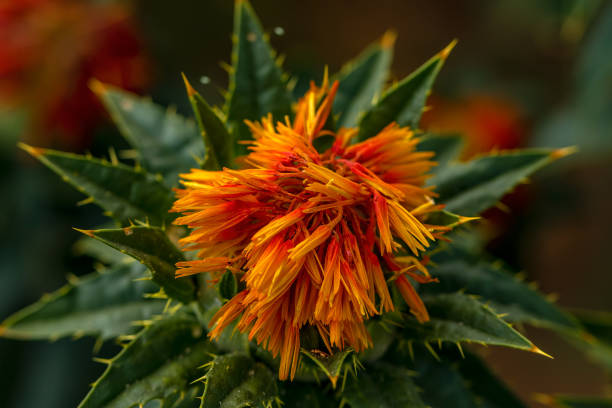
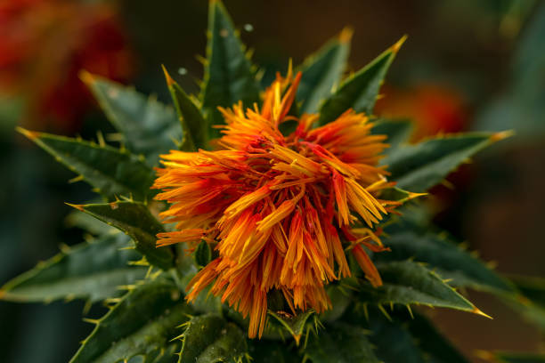
ENGLISH
Safflower (Carthamus tinctorius) is a drought-resistant oilseed crop known for its vibrant flowers and
oil-rich seeds. Here’s a step-by-step mechanism of safflower growth from seed selection to
harvesting:
1] Seed Selection and Sowing:
Start with high-quality, certified safflower seeds suitable for
the local climate and soil. Seeds should be treated with fungicides to prevent disease. Safflower is
typically sown in spring (March to April) when the soil temperature reaches around 10°C to 15°C. Seeds
are planted 1-2 inches deep in well-drained, fertile soil, with rows spaced 30-45 cm apart.
2] Germination:
After sowing, safflower seeds absorb moisture from the soil and swell,
leading to germination. The radicle (embryonic root) emerges first, followed by the shoot. Germination
usually occurs within 7-10 days, depending on soil temperature and moisture conditions.
3] Seedling Development:
Once germination occurs, seedlings develop quickly. The roots
establish deep in the soil, while the stem begins to grow and produce leaves. Safflower is known for its
deep taproot, which helps it access water and nutrients in arid conditions.
4] Vegetative Growth:
During the vegetative phase, which lasts about 4-6 weeks, the safflower
plant develops multiple leaves and increases in height. Nutrient management is critical during this
stage; applying nitrogen and phosphorus fertilizers can enhance growth. Adequate irrigation is also
necessary, especially in dry conditions.
5] Flowering:
Around 60-70 days after sowing, safflower begins to flower. The bright yellow
or orange flowers attract pollinators. Each plant can produce numerous flower heads, and flowering can
last for several weeks. Regular monitoring for pests, such as aphids and thrips, is essential during
this period.
6] Pollination:
Safflower is primarily self-pollinated, but cross-pollination can occur due
to insect activity. Successful pollination leads to the formation of seed heads, where seeds develop
within the flower heads.
7] Seed Development:
After pollination, seeds begin to form within the flower heads. This
stage lasts about 30-40 days. During this time, the plant requires adequate moisture and nutrients to
ensure healthy seed development.
8] Maturation:
As seeds mature, the flower heads dry out, and the leaves begin to yellow.
This maturation period typically lasts 20-30 days. It’s important to monitor for diseases such as downy
mildew and manage them accordingly.
9] Harvesting:
Safflower is ready for harvest when the seeds in the flower heads are firm and
the heads are dry. This usually occurs 100-120 days after sowing. Harvesting can be done manually or
mechanically, depending on the scale of production.
10] Post-Harvest Processing:
After harvesting, safflower seeds should be dried to reduce
moisture content (ideally to around 8-10%) to prevent spoilage. The seeds are then cleaned, and any
foreign materials are removed before storage.
11] Pest Control in Storage:
To protect stored safflower seeds from pests, use airtight
containers or silos. Regular inspection and application of safe pest control measures, such as
diatomaceous earth, can help maintain seed quality.
Throughout its growth cycle, safflower relies on sunlight, adequate moisture, and nutrient management to
achieve optimal yields, making careful attention to each stage vital for successful cultivation.
ENGLISH
తెలుగు
కుసుమ (కార్తామస్ టింక్టోరియస్) అనేది కరువు-నిరోధక నూనెగింజల పంట, దాని శక్తివంతమైన పువ్వులు మరియు
నూనె-సమృద్ధిగా ఉన్న విత్తనాలకు ప్రసిద్ధి చెందింది. విత్తనాల ఎంపిక నుండి కోత వరకు కుసుమ పెరుగుదల
యొక్క దశల వారీ విధానం ఇక్కడ ఉంది:
1] విత్తన ఎంపిక మరియు విత్తడం:
స్థానిక వాతావరణం మరియు నేలకి అనువైన అధిక-నాణ్యత,
ధృవీకరించబడిన కుసుమ విత్తనాలతో ప్రారంభించండి. వ్యాధిని నివారించడానికి విత్తనాలను శిలీంద్రనాశకాలతో
చికిత్స చేయాలి. నేల ఉష్ణోగ్రత 10°C నుండి 15°C వరకు ఉన్నప్పుడు కుసుమ సాధారణంగా వసంతకాలంలో (మార్చి
నుండి ఏప్రిల్ వరకు) విత్తుతారు. విత్తనాలు 1-2 అంగుళాల లోతులో బాగా ఎండిపోయిన, సారవంతమైన నేలలో
నాటబడతాయి, వరుసలు 30-45 సెం.మీ.
2] అంకురోత్పత్తి:
విత్తిన తరువాత, కుసుమ విత్తనాలు నేల నుండి తేమను గ్రహించి ఉబ్బి,
అంకురోత్పత్తికి దారితీస్తాయి. రేడికల్ (పిండం మూలం) మొదట ఉద్భవిస్తుంది, తరువాత షూట్ అవుతుంది. నేల
ఉష్ణోగ్రత మరియు తేమ పరిస్థితులపై ఆధారపడి అంకురోత్పత్తి సాధారణంగా 7-10 రోజులలో జరుగుతుంది.
3] మొలకల అభివృద్ధి:
మొలకెత్తిన తర్వాత, మొలకలు త్వరగా అభివృద్ధి చెందుతాయి. మూలాలు మట్టిలో
లోతుగా ఉంటాయి, కాండం పెరగడం మరియు ఆకులను ఉత్పత్తి చేయడం ప్రారంభమవుతుంది. కుసుమ దాని లోతైన
ట్యాప్రూట్కు ప్రసిద్ధి చెందింది, ఇది శుష్క పరిస్థితులలో నీరు మరియు పోషకాలను పొందడంలో
సహాయపడుతుంది.
4] ఏపుగా ఎదుగుదల:
దాదాపు 4-6 వారాల పాటు ఉండే ఏపుగా ఉండే దశలో, కుసుమ మొక్క బహుళ ఆకులను
అభివృద్ధి చేస్తుంది మరియు ఎత్తు పెరుగుతుంది. ఈ దశలో పోషకాల నిర్వహణ కీలకం; నత్రజని మరియు భాస్వరం
ఎరువులు వేయడం వల్ల పెరుగుదల పెరుగుతుంది. ముఖ్యంగా పొడి పరిస్థితుల్లో తగినంత నీటిపారుదల కూడా
అవసరం.
5] పుష్పించేది:
విత్తిన 60-70 రోజుల తర్వాత, కుసుమ పూయడం ప్రారంభమవుతుంది. ప్రకాశవంతమైన
పసుపు లేదా నారింజ పువ్వులు పరాగ సంపర్కాలను ఆకర్షిస్తాయి. ప్రతి మొక్క అనేక పూల తలలను ఉత్పత్తి చేయగలదు
మరియు పుష్పించేది చాలా వారాల పాటు ఉంటుంది. ఈ కాలంలో అఫిడ్స్ మరియు త్రిప్స్ వంటి తెగుళ్లను క్రమం
తప్పకుండా పర్యవేక్షించడం చాలా అవసరం.
6] పరాగసంపర్కం:
కుసుమ ప్రధానంగా స్వీయ-పరాగసంపర్కం, కానీ కీటకాల కార్యకలాపాల కారణంగా
క్రాస్-పరాగసంపర్కం సంభవించవచ్చు. విజయవంతమైన పరాగసంపర్కం విత్తన తలలు ఏర్పడటానికి దారితీస్తుంది, ఇక్కడ
విత్తనాలు పువ్వుల తలలలో అభివృద్ధి చెందుతాయి.
7] విత్తన అభివృద్ధి:
పరాగసంపర్కం తర్వాత, పుష్పగుచ్ఛాలలో విత్తనాలు ఏర్పడటం ప్రారంభిస్తాయి.
ఈ దశ సుమారు 30-40 రోజులు ఉంటుంది. ఈ సమయంలో, మొక్క ఆరోగ్యకరమైన విత్తన అభివృద్ధిని నిర్ధారించడానికి
తగినంత తేమ మరియు పోషకాలు అవసరం.
8] పరిపక్వత:
విత్తనాలు పరిపక్వం చెందుతున్నప్పుడు, పువ్వుల తలలు ఎండిపోతాయి మరియు ఆకులు
పసుపు రంగులోకి మారుతాయి. ఈ పరిపక్వత కాలం సాధారణంగా 20-30 రోజులు ఉంటుంది. బూజు తెగులు వంటి వ్యాధులను
పర్యవేక్షించడం మరియు తదనుగుణంగా వాటిని నిర్వహించడం చాలా ముఖ్యం.
9] హార్వెస్టింగ్:
కుసుమ పువ్వు తలల్లోని గింజలు గట్టిగా ఉండి, తలలు ఎండిపోయినప్పుడు కోతకు
సిద్ధంగా ఉంటుంది. ఇది సాధారణంగా విత్తిన 100-120 రోజుల తర్వాత జరుగుతుంది. ఉత్పత్తి స్థాయిని బట్టి
హార్వెస్టింగ్ మానవీయంగా లేదా యాంత్రికంగా చేయవచ్చు.
10] హార్వెస్ట్ తర్వాత ప్రాసెసింగ్:
కోత తర్వాత, కుసుమ విత్తనాలు చెడిపోకుండా ఉండటానికి తేమ
శాతాన్ని తగ్గించడానికి (సుమారుగా 8-10% వరకు) ఎండబెట్టాలి. అప్పుడు విత్తనాలు శుభ్రం చేయబడతాయి మరియు
నిల్వ చేయడానికి ముందు ఏదైనా విదేశీ పదార్థాలు తొలగించబడతాయి.
11] నిల్వలో తెగులు నియంత్రణ:
నిల్వ చేసిన కుసుమ విత్తనాలను తెగుళ్ల నుండి రక్షించడానికి,
గాలి చొరబడని కంటైనర్లు లేదా గోతులు ఉపయోగించండి. డయాటోమాసియస్ ఎర్త్ వంటి సురక్షితమైన తెగులు నియంత్రణ
చర్యలను క్రమం తప్పకుండా తనిఖీ చేయడం మరియు ఉపయోగించడం విత్తన నాణ్యతను నిర్వహించడానికి
సహాయపడుతుంది.
దాని ఎదుగుదల చక్రంలో, కుసుమ సూర్యరశ్మి, తగినంత తేమ మరియు పోషకాల నిర్వహణపై ఆధారపడి సరైన దిగుబడిని
పొందుతుంది, విజయవంతమైన సాగుకు కీలకమైన ప్రతి దశను జాగ్రత్తగా చూసుకుంటుంది.
తెలుగు
వినండి
16.COCONUT / 16.కొబ్బరి


ENGLISH
Coconuts are versatile palms widely cultivated in tropical regions, particularly in India. They thrive
in sandy, well-drained soils and are known for their numerous uses, including food, oil, and crafts.
Below is the step-by-step growing mechanism for coconuts from seed selection to harvesting:
1] Seed Selection:
Coconut cultivation begins with the selection of healthy, mature coconuts.
The best seeds are those that float in water, indicating they are fresh and viable. The seeds should
ideally be from hybrid or high-yielding varieties to ensure better productivity.
2] Pre-Germination Treatment:
Before planting, the selected coconuts can be soaked in water for 2-3 days to enhance germination. This
treatment helps soften the hard outer shell, making it easier for the seed to sprout.
3] Planting:
Coconuts can be planted directly in the soil or in nursery beds. When planting in the field, they should
be positioned upright in pits that are about 2-3 feet deep and spaced 7-10 meters apart. The ideal
planting time is at the beginning of the monsoon season.
4] Germination:
Germination typically occurs 3-6 months after planting. The seed absorbs moisture, and the embryo starts
to develop. The first visible sign is the emergence of a shoot, while the roots begin to grow downward.
Coconuts often take 6-12 months to fully sprout.
5] Initial Growth:
After germination, the coconut palm enters the vegetative phase. The shoot grows upward, and leaves
begin to emerge from the top. Young palms require protection from strong winds and direct sunlight.
During this phase, it's crucial to keep the soil moist and free from weeds.
6] Development of Leaves and Roots:
As the palm grows, it develops a fan-shaped crown of leaves. Coconuts can produce up to 30 leaves a
year. The root system expands horizontally and vertically, helping the palm anchor itself and access
nutrients and water.
7] Flowering:
Coconut palms begin to flower around 5-7 years after planting. They produce both male and female flowers
on the same inflorescence. Pollination occurs naturally through wind and insects. The flowers are
usually white or yellow, and successful pollination leads to fruit development.
8] Fruit Development:
Once pollinated, the female flowers develop into coconuts. The fruit takes about 11-12 months to mature.
Initially green, coconuts turn brown as they ripen. During this time, the palm continues to grow and may
produce multiple clusters of coconuts.
9] Water and Nutrient Management:
Coconut palms require regular watering, especially in dry periods. They benefit from balanced
fertilization with nitrogen, phosphorus, and potassium to enhance fruit production. Organic matter, such
as compost, can be added to improve soil fertility.
10] Pest and Disease Management:
Coconuts are susceptible to pests like the coconut mite and diseases such as bud rot. Regular monitoring
is essential. Integrated Pest Management (IPM) practices, including biological control and the use of
neem-based pesticides, can help manage infestations effectively.
11] Harvesting:
Coconuts are usually ready for harvest 6-12 months after flowering. Harvesting is done manually, using
long poles with hooks to pick mature coconuts from the palm. It is important to harvest at the right
time to ensure optimal quality and taste.
12] Post-Harvest Processing:
After harvesting, coconuts are processed based on their intended use. For example, they can be cracked
open for water and meat or dried for copra production. Proper handling and storage are crucial to
prevent spoilage.
Throughout the growing process, coconuts require adequate sunlight, water, and nutrient management to
thrive, ensuring a bountiful harvest for various uses.
ENGLISH
తెలుగు
కొబ్బరికాయలు ఉష్ణమండల ప్రాంతాలలో, ముఖ్యంగా భారతదేశంలో విస్తృతంగా సాగు చేయబడే బహుముఖ అరచేతులు. ఇవి
ఇసుక, బాగా ఎండిపోయిన నేలల్లో వృద్ధి చెందుతాయి మరియు ఆహారం, నూనె మరియు చేతిపనులతో సహా వాటి అనేక
ఉపయోగాలకు ప్రసిద్ధి చెందాయి. విత్తనాల ఎంపిక నుండి కోత వరకు కొబ్బరి కోసం దశల వారీగా పెంచే విధానం
క్రింద ఉంది:
1] విత్తన ఎంపిక:
కొబ్బరి సాగు ఆరోగ్యకరమైన, పరిపక్వమైన కొబ్బరికాయల ఎంపికతో
ప్రారంభమవుతుంది. ఉత్తమ విత్తనాలు నీటిలో తేలియాడేవి, అవి తాజావి మరియు ఆచరణీయమైనవి అని సూచిస్తాయి.
మెరుగైన ఉత్పాదకతను నిర్ధారించడానికి విత్తనాలు హైబ్రిడ్ లేదా అధిక దిగుబడినిచ్చే రకాల నుండి ఆదర్శంగా
ఉండాలి.
2] మొలకెత్తడానికి ముందు చికిత్స:
నాటడానికి ముందు, ఎంచుకున్న కొబ్బరికాయలను 2-3 రోజులు
నీటిలో నానబెట్టడం ద్వారా అంకురోత్పత్తి పెరుగుతుంది. ఈ చికిత్స గట్టి బయటి కవచాన్ని మృదువుగా చేయడంలో
సహాయపడుతుంది, విత్తనం మొలకెత్తడాన్ని సులభతరం చేస్తుంది.
3] నాటడం:
కొబ్బరిని నేరుగా నేలలో లేదా నర్సరీ బెడ్లలో నాటవచ్చు. పొలంలో నాటేటప్పుడు,
వాటిని 2-3 అడుగుల లోతు మరియు 7-10 మీటర్ల దూరంలో ఉన్న గుంతలలో నిటారుగా ఉంచాలి. వర్షాకాలం ప్రారంభంలో
మొక్కలు నాటడానికి అనువైన సమయం.
4] మొలకెత్తడం:
సాధారణంగా నాటిన 3-6 నెలల తర్వాత అంకురోత్పత్తి జరుగుతుంది. విత్తనం తేమను
గ్రహిస్తుంది మరియు పిండం అభివృద్ధి చెందడం ప్రారంభిస్తుంది. మొదటి కనిపించే సంకేతం ఒక షూట్ యొక్క
ఆవిర్భావం, అయితే మూలాలు క్రిందికి పెరగడం ప్రారంభిస్తాయి. కొబ్బరికాయలు పూర్తిగా మొలకెత్తడానికి తరచుగా
6-12 నెలలు పడుతుంది.
5] ప్రారంభ పెరుగుదల:
అంకురోత్పత్తి తర్వాత, కొబ్బరి పామ్ ఏపుగా ఉండే దశలోకి
ప్రవేశిస్తుంది. రెమ్మ పైకి పెరుగుతుంది, మరియు పై నుండి ఆకులు రావడం ప్రారంభమవుతుంది. యువ అరచేతులకు
బలమైన గాలులు మరియు ప్రత్యక్ష సూర్యకాంతి నుండి రక్షణ అవసరం. ఈ దశలో, మట్టిని తేమగా మరియు కలుపు మొక్కలు
లేకుండా ఉంచడం చాలా ముఖ్యం.
6] ఆకులు మరియు మూలాల అభివృద్ధి:
అరచేతి పెరిగేకొద్దీ, అది ఫ్యాన్ ఆకారపు ఆకుల కిరీటాన్ని
అభివృద్ధి చేస్తుంది. కొబ్బరికాయలు సంవత్సరానికి 30 ఆకులను ఉత్పత్తి చేయగలవు. మూల వ్యవస్థ క్షితిజ
సమాంతరంగా మరియు నిలువుగా విస్తరిస్తుంది, ఇది అరచేతి యాంకర్కు సహాయం చేస్తుంది మరియు పోషకాలు మరియు
నీటిని యాక్సెస్ చేస్తుంది.
7] పూలు పూయడం:
కొబ్బరి అరచేతులు నాటిన 5-7 సంవత్సరాల తర్వాత పుష్పించడం ప్రారంభిస్తాయి. అవి
ఒకే పుష్పగుచ్ఛముపై మగ మరియు ఆడ పుష్పాలను ఉత్పత్తి చేస్తాయి. పరాగసంపర్కం సహజంగా గాలి మరియు కీటకాల
ద్వారా జరుగుతుంది. పువ్వులు సాధారణంగా తెలుపు లేదా పసుపు రంగులో ఉంటాయి మరియు విజయవంతమైన పరాగసంపర్కం
పండ్ల అభివృద్ధికి దారితీస్తుంది.
8] పండ్ల అభివృద్ధి:
ఒకసారి పరాగసంపర్కం జరిగితే, ఆడ పువ్వులు కొబ్బరికాయలుగా అభివృద్ధి
చెందుతాయి. పండు పరిపక్వం చెందడానికి 11-12 నెలలు పడుతుంది. కొబ్బరికాయలు మొదట్లో పచ్చగా, పండినప్పుడు
గోధుమ రంగులోకి మారుతాయి. ఈ సమయంలో, అరచేతి పెరుగుతూనే ఉంటుంది మరియు కొబ్బరికాయల బహుళ సమూహాలను
ఉత్పత్తి చేయవచ్చు.
9] నీరు మరియు పోషకాల నిర్వహణ:
కొబ్బరి చెట్లకు క్రమం తప్పకుండా నీరు త్రాగుట అవసరం,
ముఖ్యంగా పొడి కాలంలో. పండ్ల ఉత్పత్తిని పెంచడానికి నత్రజని, భాస్వరం మరియు పొటాషియంతో సమతుల్య ఫలదీకరణం
నుండి వారు ప్రయోజనం పొందుతారు. నేల సారాన్ని మెరుగుపరచడానికి కంపోస్ట్ వంటి సేంద్రీయ పదార్థాన్ని
జోడించవచ్చు.
10] తెగుళ్లు మరియు వ్యాధుల నిర్వహణ:
కొబ్బరి పురుగు వంటి తెగుళ్లు మరియు మొగ్గ తెగులు వంటి
వ్యాధులకు కొబ్బరికాయలు ఆకర్షనీయంగా ఉంటాయి. క్రమమైన పర్యవేక్షణ అవసరం. జీవ నియంత్రణ మరియు వేప ఆధారిత
పురుగుమందుల వాడకంతో సహా ఇంటిగ్రేటెడ్ పెస్ట్ మేనేజ్మెంట్ (IPM) పద్ధతులు ముట్టడిని సమర్థవంతంగా
నిర్వహించడంలో సహాయపడతాయి.
11] కోత:
కొబ్బరికాయలు సాధారణంగా పుష్పించే 6-12 నెలల తర్వాత కోతకు సిద్ధంగా ఉంటాయి. అరచేతి
నుండి పండిన కొబ్బరికాయలను తీయడానికి హుక్స్తో పొడవాటి స్తంభాలను ఉపయోగించి మాన్యువల్గా హార్వెస్టింగ్
జరుగుతుంది. సరైన నాణ్యత మరియు రుచిని నిర్ధారించడానికి సరైన సమయంలో పండించడం ముఖ్యం.
12] పోస్ట్-హార్వెస్ట్ ప్రాసెసింగ్:
కోత తర్వాత, కొబ్బరికాయలు వాటి ఉద్దేశించిన ఉపయోగం
ఆధారంగా ప్రాసెస్ చేయబడతాయి. ఉదాహరణకు, వాటిని నీరు మరియు మాంసం కోసం తెరిచి ఉంచవచ్చు లేదా కొప్రా
ఉత్పత్తికి ఎండబెట్టవచ్చు. చెడిపోకుండా నిరోధించడానికి సరైన నిర్వహణ మరియు నిల్వ కీలకం.
పెరుగుతున్న ప్రక్రియ అంతటా, కొబ్బరికాయలు వృద్ధి చెందడానికి తగిన సూర్యరశ్మి, నీరు మరియు పోషకాల
నిర్వహణ అవసరం, వివిధ ఉపయోగాల కోసం సమృద్ధిగా పంటను అందిస్తాయి.
తెలుగు
వినండి
17.CASHEW / 17.జీడిపప్పు
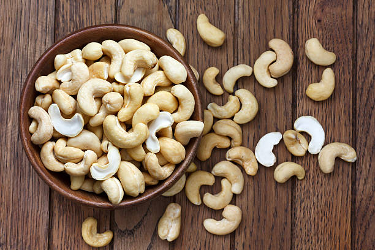
ENGLISH
Cashew trees are known for their unique, kidney-shaped nuts and cashew apples. They thrive in tropical
climates and are a valuable cash crop in India. Here’s a detailed step-by-step mechanism for growing
cashews from seed selection to harvesting:
1] Seed Selection and Preparation:
Start with high-quality cashew seeds or grafted seedlings
from a reliable source. Seeds should be fresh and preferably collected from mature, healthy trees. If
using seeds, they should be soaked in water for 24 hours to enhance germination. Grafted seedlings are
often preferred for consistent quality.
2] Site Selection and Soil Preparation:
Choose a well-drained, sandy loam soil with a pH of
5.5 to 7.0. Clear the planting area of weeds and debris. Incorporate organic matter or compost into the
soil to improve fertility. The ideal planting location should have full sunlight and protection from
strong winds.
3] Planting:
Cashew trees are typically planted during the monsoon season (June to July).
Space the plants 7-10 meters apart to allow for their large canopy. For seeds, plant them 2-3 inches
deep; for seedlings, dig a hole large enough to accommodate the root ball and plant them at the same
depth they were in the nursery.
4] Germination and Early Growth:
If planting seeds, germination usually occurs within 2-4
weeks. Young cashew plants require consistent moisture during this period. Water regularly, especially
during dry spells, to ensure strong root establishment.
5] Vegetative Growth:
During the vegetative phase, which lasts about 6-12 months, the tree
focuses on growing leaves and branches. Fertilize with nitrogen-rich fertilizers to promote healthy
growth. Pruning may be necessary to shape the tree and encourage a strong framework.
6] Flowering:
Cashew trees typically start flowering 2-3 years after planting. Flowering
occurs during the dry season (February to March in India), resulting in clusters of small white or pink
flowers. Proper nutrition and water management during this period are critical for healthy flower
development.
7] Pollination:
Pollination is primarily facilitated by insects, particularly bees.
Successful pollination leads to the development of cashew apples and nuts. The cashew nut forms beneath
the apple, making this unique in the fruit world.
8] Fruit and Nut Development:
After pollination, the cashew apple begins to develop along
with the nut. The apple matures and turns yellow or red, while the nut develops within a hard shell.
This stage takes about 3 months. Regular watering is essential for optimal fruit development.
9] Maturation:
The nuts and apples mature approximately 4-5 months after flowering. The
cashew apples become soft and edible, while the nuts reach maturity. Monitoring for pests, such as the
cashew fruit fly, is crucial during this phase.
10] Harvesting:
Cashews are typically harvested between June and August. The nuts are
harvested when the cashew apples start to drop or when they are fully mature. The apples are often
collected for processing, while the nuts are separated from the apples.
11] Post-Harvest Processing:
After harvesting, the cashew nuts must be sun-dried to reduce
moisture content (ideally to about 8%). The nuts are then shelled to remove the hard outer shell. Care
should be taken during shelling, as the shells contain urushiol, a toxic resin.
12] Pest Control in Storage:
To prevent spoilage and pest infestations in storage, keep
cashew nuts in airtight containers in a cool, dry place. Regularly inspect stored nuts for signs of mold
or pests, and use safe pest management practices as needed.
Throughout the growing process, cashew trees require adequate sunlight, moisture, and nutrient
management to thrive, making careful monitoring essential at each growth stage.
ENGLISH
తెలుగు
జీడిపప్పు చెట్లు వాటి ప్రత్యేకమైన, మూత్రపిండాల ఆకారంలో ఉండే గింజలు మరియు జీడిపప్పు ఆపిల్లకు
ప్రసిద్ధి చెందాయి. ఇవి ఉష్ణమండల వాతావరణంలో వృద్ధి చెందుతాయి మరియు భారతదేశంలో విలువైన నగదు పంట.
విత్తన ఎంపిక నుండి కోత వరకు జీడిపప్పును పెంచడానికి ఇక్కడ వివరణాత్మక దశల వారీ విధానం ఉంది:
1] విత్తన ఎంపిక మరియు తయారీ:
నమ్మదగిన మూలం నుండి అధిక-నాణ్యత గల జీడి గింజలు లేదా అంటు
వేసిన మొలకలతో ప్రారంభించండి. విత్తనాలు తాజాగా ఉండాలి మరియు పరిపక్వ, ఆరోగ్యకరమైన చెట్ల నుండి
సేకరించడం మంచిది. విత్తనాలను ఉపయోగిస్తుంటే, అంకురోత్పత్తిని పెంచడానికి వాటిని 24 గంటలు నీటిలో
నానబెట్టాలి. స్థిరమైన నాణ్యత కోసం తరచుగా అంటు వేసిన మొలకలకి ప్రాధాన్యత ఇవ్వబడుతుంది.
2] సైట్ ఎంపిక మరియు నేల తయారీ:
pH 5.5 నుండి 7.0 వరకు బాగా ఎండిపోయిన, ఇసుకతో కూడిన లోమ్
మట్టిని ఎంచుకోండి. కలుపు మొక్కలు మరియు చెత్త నుండి నాటడం ప్రాంతాన్ని క్లియర్ చేయండి. సంతానోత్పత్తిని
మెరుగుపరచడానికి సేంద్రీయ పదార్థం లేదా కంపోస్ట్ను మట్టిలో చేర్చండి. సరైన నాటడం ప్రదేశంలో పూర్తి
సూర్యకాంతి మరియు బలమైన గాలుల నుండి రక్షణ ఉండాలి.
3] నాటడం:
జీడి చెట్లను సాధారణంగా వర్షాకాలంలో (జూన్ నుండి జూలై వరకు) నాటుతారు. పెద్ద
పందిరి కోసం మొక్కలను 7-10 మీటర్ల దూరంలో ఉంచండి. విత్తనాల కోసం, వాటిని 2-3 అంగుళాల లోతులో నాటండి;
మొలకల కోసం, రూట్ బాల్కు సరిపోయేంత పెద్ద రంధ్రం త్రవ్వండి మరియు వాటిని నర్సరీలో ఉన్న అదే లోతులో
నాటండి.
4] అంకురోత్పత్తి మరియు ప్రారంభ పెరుగుదల:
విత్తనాలను నాటినట్లయితే, సాధారణంగా 2-4 వారాలలో
అంకురోత్పత్తి జరుగుతుంది. యువ జీడి మొక్కలకు ఈ కాలంలో స్థిరమైన తేమ అవసరం. బలమైన రూట్ స్థాపనను
నిర్ధారించడానికి, ముఖ్యంగా పొడిగా ఉండే సమయంలో క్రమం తప్పకుండా నీరు పెట్టండి.
5] వృక్షసంపద పెరుగుదల:
దాదాపు 6-12 నెలల పాటు ఉండే ఏపుగా ఉండే దశలో, చెట్టు పెరుగుతున్న
ఆకులు మరియు కొమ్మలపై దృష్టి పెడుతుంది. ఆరోగ్యకరమైన పెరుగుదలను ప్రోత్సహించడానికి నత్రజని అధికంగా ఉండే
ఎరువులతో ఫలదీకరణం చేయండి. చెట్టును ఆకృతి చేయడానికి మరియు బలమైన ఫ్రేమ్వర్క్ను ప్రోత్సహించడానికి
కత్తిరింపు అవసరం కావచ్చు.
6] పుష్పించేవి:
జీడి చెట్లు సాధారణంగా నాటిన 2-3 సంవత్సరాల తర్వాత పుష్పించడం
ప్రారంభిస్తాయి. పుష్పించేది పొడి కాలంలో (భారతదేశంలో ఫిబ్రవరి నుండి మార్చి వరకు), ఫలితంగా చిన్న
తెలుపు లేదా గులాబీ పువ్వుల సమూహాలు ఏర్పడతాయి. ఈ కాలంలో సరైన పోషకాహారం మరియు నీటి నిర్వహణ ఆరోగ్యకరమైన
పువ్వుల అభివృద్ధికి కీలకం.
7] పరాగసంపర్కం:
పరాగసంపర్కం ప్రధానంగా కీటకాలు, ముఖ్యంగా తేనెటీగల ద్వారా సులభతరం
చేయబడుతుంది. విజయవంతమైన పరాగసంపర్కం జీడి ఆపిల్ల మరియు గింజల అభివృద్ధికి దారితీస్తుంది. ఆపిల్ క్రింద
జీడిపప్పు ఏర్పడుతుంది, ఇది పండ్ల ప్రపంచంలో ప్రత్యేకమైనది.
8] పండ్లు మరియు గింజల అభివృద్ధి:
పరాగసంపర్కం తర్వాత, జీడిపప్పు గింజతో పాటు అభివృద్ధి
చెందడం ప్రారంభమవుతుంది. ఆపిల్ పరిపక్వం చెందుతుంది మరియు పసుపు లేదా ఎరుపు రంగులోకి మారుతుంది, అయితే
గింజ గట్టి షెల్లో అభివృద్ధి చెందుతుంది. ఈ దశ సుమారు 3 నెలలు పడుతుంది. సరైన పండ్ల అభివృద్ధికి క్రమం
తప్పకుండా నీరు త్రాగుట అవసరం.
9] పరిపక్వత:
కాయలు మరియు యాపిల్స్ పుష్పించే సుమారు 4-5 నెలల తర్వాత పరిపక్వం చెందుతాయి.
జీడిపప్పు యాపిల్స్ మృదువుగా మరియు తినదగినవిగా మారతాయి, అయితే గింజలు పరిపక్వతకు చేరుకుంటాయి. ఈ దశలో
జీడిపప్పు ఈగ వంటి తెగుళ్లను పర్యవేక్షించడం చాలా ముఖ్యం.
10] హార్వెస్టింగ్:
జీడిపప్పును సాధారణంగా జూన్ మరియు ఆగస్టు మధ్య పండిస్తారు. జీడి ఆపిల్ల
పడిపోవడం ప్రారంభించినప్పుడు లేదా అవి పూర్తిగా పక్వానికి వచ్చినప్పుడు కాయలు పండించబడతాయి. ఆపిల్లను
తరచుగా ప్రాసెసింగ్ కోసం సేకరిస్తారు, అయితే కాయలు ఆపిల్ నుండి వేరు చేయబడతాయి.
11] హార్వెస్ట్ తర్వాత ప్రాసెసింగ్:
కోత తర్వాత, జీడిపప్పు తేమ శాతాన్ని తగ్గించడానికి
తప్పనిసరిగా ఎండలో ఎండబెట్టాలి (ఆదర్శంగా దాదాపు 8% వరకు). గట్టి బయటి కవచాన్ని తొలగించడానికి గింజలు
షెల్ చేయబడతాయి. షెల్లింగ్ సమయంలో జాగ్రత్త వహించాలి, ఎందుకంటే షెల్లలో ఉరుషియోల్ అనే టాక్సిక్ రెసిన్
ఉంటుంది.
12] నిల్వలో చీడపీడల నియంత్రణ:
నిల్వలో చెడిపోకుండా మరియు చీడపీడల బారిన పడకుండా ఉండేందుకు,
జీడిపప్పును గాలి చొరబడని డబ్బాల్లో చల్లి, పొడి ప్రదేశంలో ఉంచండి. అచ్చు లేదా తెగుళ్ల సంకేతాల కోసం
నిల్వ చేసిన గింజలను క్రమం తప్పకుండా తనిఖీ చేయండి మరియు అవసరమైన విధంగా సురక్షితమైన పెస్ట్
మేనేజ్మెంట్ పద్ధతులను ఉపయోగించండి.
పెరుగుతున్న ప్రక్రియలో, జీడిపప్పు చెట్లు వృద్ధి చెందడానికి తగినంత సూర్యరశ్మి, తేమ మరియు పోషకాల
నిర్వహణ అవసరం, ప్రతి పెరుగుదల దశలో జాగ్రత్తగా పర్యవేక్షించడం అవసరం.
తెలుగు
వినండి
18.CASTOR / 18.ఆముదం


ENGLISH
Castor is an important oilseed crop known for its seeds, which are rich in castor oil. This versatile
plant is cultivated in various regions of India. Here’s a detailed step-by-step mechanism for growing
castor from seed selection to harvesting:
1] Seed Selection and Sowing:
Choose high-quality, disease-free castor seeds. It’s beneficial to treat the
seeds with fungicides to reduce the risk of soil-borne diseases. Castor is typically sown in the kharif
season (June to July) or in the rabi season (October to November), depending on the region. Seeds are
sown about 2-5 cm deep in well-drained soil, with rows spaced 90-120 cm apart.
2] Germination:
After sowing, castor seeds absorb moisture and begin to germinate, usually within 7-10
days. The optimum soil temperature for germination is between 20°C and 30°C. The radicle emerges first,
followed by the cotyledons.
3] Vegetative Growth:
Following germination, the castor plant enters the vegetative growth phase. The plant
develops a robust taproot and can grow to a height of 1-3 meters. Broad leaves emerge along the stem,
and the plant requires ample sunlight and moisture for healthy growth.
4] Flowering:
About 60-90 days after sowing, the castor plant begins to flower. The flowers are borne in
clusters and can be male or female, with male flowers forming first. Pollination occurs naturally
through wind and insects. This phase typically lasts for 4-6 weeks.
5] Fruit Formation:
After pollination, the female flowers develop into fruits, which are spiny capsules
containing the seeds. This stage occurs around 90-120 days after sowing. Each capsule usually contains 3
seeds. Adequate moisture is crucial during this period to ensure healthy fruit and seed
development.
6] Pest and Disease Management:
Castor plants can be affected by pests such as leaf beetles, aphids, and
diseases like bacterial blight and powdery mildew. Regular monitoring is essential for early detection.
Integrated Pest Management (IPM) strategies, including the use of neem oil and proper crop rotation, can
effectively control these issues.
7] Seed Development:
As the capsules mature, the seeds inside develop and harden. This maturation phase
lasts for about 30-40 days, during which the plants gradually start to yellow. Watering should be
minimized to promote proper drying and prepare for harvesting.
8] Harvesting:
Castor seeds are harvested when the capsules are dry and begin to split open, usually
120-150 days after sowing. The plants are cut at the base, and the capsules are allowed to dry further
in the field. Threshing can be done manually or mechanically to separate the seeds from the
capsules.
9] Post-Harvest Processing:
After threshing, the seeds are cleaned and dried to reduce moisture content.
Proper storage in cool, dry conditions is crucial to prevent spoilage and pest infestations. Airtight
containers are recommended to maintain seed quality.
10] Pest Control in Storage:
To protect stored castor seeds, consider using natural repellents or storage
techniques like diatomaceous earth to deter pests. Regular inspections of stored seeds are essential to
ensure they remain in good condition.
Throughout its growth, castor thrives in warm climates with well-drained soil and benefits from careful
management at each stage to ensure a successful and high-yielding harvest.
ENGLISH
తెలుగు
ఆముదం దాని విత్తనాలకు ప్రసిద్ధి చెందిన ముఖ్యమైన నూనెగింజల పంట, ఇందులో ఆముదం పుష్కలంగా ఉంటుంది. ఈ
బహుముఖ మొక్క భారతదేశంలోని వివిధ ప్రాంతాలలో సాగు చేయబడుతుంది. విత్తన ఎంపిక నుండి కోత వరకు ఆముదం
పెరగడానికి ఇక్కడ వివరణాత్మక దశల వారీ విధానం ఉంది:
1] విత్తన ఎంపిక మరియు విత్తడం:
అధిక-నాణ్యత, వ్యాధి-రహిత ఆముదం విత్తనాలను ఎంచుకోండి. నేల
ద్వారా సంక్రమించే వ్యాధుల ప్రమాదాన్ని తగ్గించడానికి విత్తనాలను శిలీంద్రనాశకాలతో చికిత్స చేయడం
ప్రయోజనకరం. ఆముదం సాధారణంగా ప్రాంతాన్ని బట్టి ఖరీఫ్ సీజన్లో (జూన్ నుండి జూలై వరకు) లేదా రబీ
సీజన్లో (అక్టోబర్ నుండి నవంబర్ వరకు) విత్తుతారు. గింజలు 90-120 సెం.మీ.ల దూరంలో ఉన్న, బాగా ఎండిపోయిన
మట్టిలో 2-5 సెం.మీ లోతులో విత్తుతారు.
2] మొలకెత్తడం:
విత్తిన తర్వాత, ఆముదం విత్తనాలు తేమను గ్రహించి మొలకెత్తడం ప్రారంభిస్తాయి,
సాధారణంగా 7-10 రోజులలో. అంకురోత్పత్తికి సరైన నేల ఉష్ణోగ్రత 20 ° C మరియు 30 ° C మధ్య ఉంటుంది. రేడికల్
మొదట ఉద్భవిస్తుంది, తరువాత కోటిలిడన్లు.
3] ఏపుగా పెరుగుదల:
అంకురోత్పత్తి తరువాత, ఆముదం మొక్క ఏపుగా పెరిగే దశలోకి ప్రవేశిస్తుంది.
మొక్క ఒక దృఢమైన వృక్షమూలాన్ని అభివృద్ధి చేస్తుంది మరియు 1-3 మీటర్ల ఎత్తు వరకు పెరుగుతుంది. కాండం
వెంబడి విశాలమైన ఆకులు ఉద్భవిస్తాయి మరియు మొక్క ఆరోగ్యంగా ఎదుగుదలకు తగినంత సూర్యరశ్మి మరియు తేమ
అవసరం.
4] పూలు పూయడం:
విత్తిన 60-90 రోజుల తర్వాత, ఆముదం మొక్క పుష్పించడం ప్రారంభమవుతుంది.
పువ్వులు గుత్తులుగా పుడతాయి మరియు మగ లేదా ఆడ కావచ్చు, మగ పువ్వులు ముందుగా ఏర్పడతాయి. పరాగసంపర్కం
సహజంగా గాలి మరియు కీటకాల ద్వారా జరుగుతుంది. ఈ దశ సాధారణంగా 4-6 వారాల పాటు కొనసాగుతుంది.
5] పండ్ల నిర్మాణం:
పరాగసంపర్కం తర్వాత, ఆడ పువ్వులు పండ్లుగా అభివృద్ధి చెందుతాయి, అవి
గింజలను కలిగి ఉండే స్పైనీ క్యాప్సూల్స్. విత్తిన 90-120 రోజుల తర్వాత ఈ దశ వస్తుంది. ప్రతి గుళిక
సాధారణంగా 3 విత్తనాలను కలిగి ఉంటుంది. ఆరోగ్యకరమైన పండ్లు మరియు విత్తనాల అభివృద్ధిని నిర్ధారించడానికి
ఈ కాలంలో తగినంత తేమ చాలా కీలకం.
6] పెస్ట్ అండ్ డిసీజ్ మేనేజ్మెంట్:
ఆముదం మొక్కలు ఆకు బీటిల్స్, అఫిడ్స్ మరియు
బాక్టీరియల్ బ్లైట్ మరియు బూజు తెగులు వంటి వ్యాధుల ద్వారా ప్రభావితమవుతాయి. ముందస్తుగా గుర్తించడానికి
రెగ్యులర్ పర్యవేక్షణ అవసరం. ఇంటిగ్రేటెడ్ పెస్ట్ మేనేజ్మెంట్ (IPM) వ్యూహాలు, వేపనూనె వాడకం మరియు
సరైన పంట మార్పిడితో సహా ఈ సమస్యలను సమర్థవంతంగా నియంత్రించవచ్చు.
7] విత్తన అభివృద్ధి:
గుళికలు పరిపక్వం చెందడంతో, లోపల విత్తనాలు అభివృద్ధి చెందుతాయి మరియు
గట్టిపడతాయి. ఈ పరిపక్వ దశ సుమారు 30-40 రోజులు ఉంటుంది, ఈ సమయంలో మొక్కలు క్రమంగా పసుపు రంగులోకి
మారుతాయి. సరైన ఎండబెట్టడాన్ని ప్రోత్సహించడానికి మరియు కోతకు సిద్ధం చేయడానికి నీరు త్రాగుట
తగ్గించాలి.
8] హార్వెస్టింగ్:
క్యాప్సూల్స్ ఎండిపోయి, సాధారణంగా విత్తిన 120-150 రోజుల తర్వాత విడదీయడం
ప్రారంభించినప్పుడు ఆముదం విత్తనాలు కోయబడతాయి. మొక్కలు బేస్ వద్ద కత్తిరించబడతాయి, మరియు గుళికలు
పొలంలో మరింత పొడిగా ఉండటానికి అనుమతించబడతాయి. క్యాప్సూల్స్ నుండి విత్తనాలను వేరు చేయడానికి నూర్చడం
మానవీయంగా లేదా యాంత్రికంగా చేయవచ్చు.
9] పోస్ట్-హార్వెస్ట్ ప్రాసెసింగ్:
నూర్పిడి తర్వాత, తేమ శాతాన్ని తగ్గించడానికి విత్తనాలను
శుభ్రం చేసి ఎండబెట్టాలి. చెడిపోవడం మరియు తెగుళ్లను నివారించడానికి చల్లని, పొడి పరిస్థితులలో సరైన
నిల్వ కీలకం. విత్తనాల నాణ్యతను నిర్వహించడానికి గాలి చొరబడని కంటైనర్లు సిఫార్సు చేయబడ్డాయి.
10] నిల్వలో పెస్ట్ కంట్రోల్:
నిల్వ చేసిన ఆముదం విత్తనాలను రక్షించడానికి, తెగుళ్లను
అరికట్టడానికి సహజ వికర్షకాలు లేదా డయాటోమాసియస్ ఎర్త్ వంటి నిల్వ పద్ధతులను ఉపయోగించడాన్ని
పరిగణించండి. నిల్వ చేసిన విత్తనాలు మంచి స్థితిలో ఉన్నాయని నిర్ధారించుకోవడానికి వాటిని క్రమం
తప్పకుండా తనిఖీ చేయడం చాలా అవసరం.
దాని పెరుగుదల అంతటా, ఆముదం బాగా ఎండిపోయిన నేలతో వెచ్చని వాతావరణంలో వర్ధిల్లుతుంది మరియు విజయవంతమైన
మరియు అధిక దిగుబడినిచ్చే పంటను నిర్ధారించడానికి ప్రతి దశలో జాగ్రత్తగా నిర్వహించడం ద్వారా ప్రయోజనాలను
పొందుతుంది.
తెలుగు
వినండి
19.SILK / 19.సిల్క్
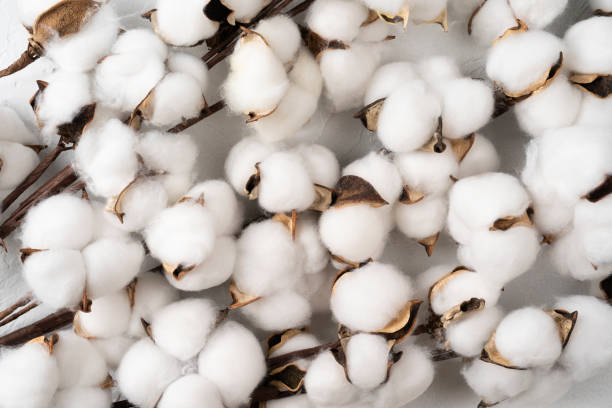
ENGLISH
Silk, known for its luxurious texture and luster, is primarily produced from the cocoons of silkworms,
specifically the Bombyx mori species. The following steps outline the growing mechanism of silk from
silkworm rearing to harvesting:
1] Silkworm Egg Selection:
The process begins with the selection of high-quality silkworm
eggs from healthy parent moths. These eggs should be disease-free and sourced from reputable breeders to
ensure strong larvae.
2] Hatching:
Silkworm eggs are kept in a controlled environment with optimal temperature
(around 25°C) and humidity (70-80%). After about 10-14 days, the eggs hatch into larvae, commonly known
as silkworms.
3] Larval Rearing:
Once hatched, the silkworms enter the larval stage. They are fed
exclusively on mulberry leaves, which provide the necessary nutrients for growth. This feeding phase
lasts about 25-30 days, during which the larvae molt several times and grow significantly.
4] Preparation for Cocooning:
As the silkworms reach maturity, they stop feeding and begin to
search for a suitable place to spin their cocoons. This process usually occurs around the 5th instar
stage. The larvae may require a quiet and undisturbed environment for cocooning.
5] Cocoon Formation:
Each mature silkworm spins a cocoon using a single continuous strand of
silk thread. The spinning process takes about 2-3 days, during which the silkworm secretes a
proteinaceous fluid that solidifies into silk upon exposure to air. The cocoon is typically about
1,000-3,000 meters long and forms a protective shell around the silkworm.
6] Harvesting Cocoons:
After the cocoon is fully formed, it is left undisturbed for about a
week to ensure the silk strands are well set. The harvesting of cocoons is done carefully to avoid
damaging them. This usually occurs around 6-8 days post-spinning.
7] Killing the Pupa:
To obtain silk, the pupae inside the cocoons must be killed to prevent
them from breaking the silk thread as they emerge as moths. This is typically done by steaming, boiling,
or using hot air.
8] Silk Reeling:
Once the pupae are killed, the cocoons are soaked in hot water to soften the
sericin (a protein that holds the silk strands together). The softened cocoons are then carefully
unraveled to extract the silk threads. This process is called reeling and can produce several hundred
meters of silk from a single cocoon.
9] Twisting and Spinning:
The raw silk threads are twisted together to form a stronger yarn.
This is an essential step for producing quality silk fabric. The yarn can then be dyed, if desired,
before weaving into fabric.
10] Weaving and Finishing:
The twisted silk yarn is woven into silk fabric using traditional
or modern weaving techniques. After weaving, the fabric may undergo finishing processes such as washing,
dyeing, and treatment to enhance its texture and durability.
Throughout the silk production process, careful attention is paid to the health of the silkworms, the
quality of the mulberry leaves, and the environmental conditions to ensure a successful yield of
high-quality silk.
ENGLISH
తెలుగు
సిల్క్, దాని విలాసవంతమైన ఆకృతి మరియు మెరుపుకు ప్రసిద్ధి చెందింది, ప్రధానంగా సిల్క్వార్మ్ల కోకోన్ల
నుండి, ప్రత్యేకంగా బాంబిక్స్ మోరి జాతుల నుండి ఉత్పత్తి చేయబడుతుంది. కింది దశలు పట్టు పురుగుల పెంపకం
నుండి పంట కోత వరకు పెరుగుతున్న పట్టు విధానాన్ని వివరిస్తాయి:
1] పట్టుపురుగు గుడ్డు ఎంపిక:
ఆరోగ్యకరమైన మాతృ చిమ్మటల నుండి అధిక-నాణ్యత గల పట్టుపురుగు
గుడ్ల ఎంపికతో ప్రక్రియ ప్రారంభమవుతుంది. ఈ గుడ్లు వ్యాధి-రహితంగా ఉండాలి మరియు బలమైన లార్వాలను
నిర్ధారించడానికి ప్రసిద్ధ పెంపకందారుల నుండి సేకరించబడతాయి.
2] హాచింగ్:
పట్టుపురుగు గుడ్లు సరైన ఉష్ణోగ్రత (సుమారు 25°C) మరియు తేమ (70-80%)తో
నియంత్రిత వాతావరణంలో ఉంచబడతాయి. దాదాపు 10-14 రోజుల తర్వాత, గుడ్లు లార్వాలోకి పొదుగుతాయి, వీటిని
సాధారణంగా పట్టు పురుగులు అంటారు.
3] లార్వా పెంపకం:
పొదిగిన తర్వాత, పట్టు పురుగులు లార్వా దశలోకి ప్రవేశిస్తాయి. అవి మల్బరీ
ఆకులపై ప్రత్యేకంగా తింటాయి, ఇవి పెరుగుదలకు అవసరమైన పోషకాలను అందిస్తాయి. ఈ దాణా దశ దాదాపు 25-30
రోజులు ఉంటుంది, ఈ సమయంలో లార్వా చాలా సార్లు కరిగిపోతుంది మరియు గణనీయంగా పెరుగుతుంది.
4] కోకోనింగ్ కోసం తయారీ:
పట్టుపురుగులు పరిపక్వతకు చేరుకున్నప్పుడు, అవి దాణాని ఆపివేసి,
వాటి కోకోన్లను తిప్పడానికి అనువైన ప్రదేశం కోసం వెతకడం ప్రారంభిస్తాయి. ఈ ప్రక్రియ సాధారణంగా 5వ
ఇన్స్టార్ దశలో జరుగుతుంది. లార్వా కోకోనింగ్ కోసం నిశ్శబ్ద మరియు కలవరపడని వాతావరణం అవసరం
కావచ్చు.
5] కోకన్ నిర్మాణం:
ప్రతి పరిపక్వ పట్టుపురుగు ఒక నిరంతర పట్టు దారాన్ని ఉపయోగించి ఒక కాయను
తిప్పుతుంది. స్పిన్నింగ్ ప్రక్రియ సుమారు 2-3 రోజులు పడుతుంది, ఈ సమయంలో పట్టు పురుగు ఒక ప్రొటీనేషియస్
ద్రవాన్ని స్రవిస్తుంది, అది గాలికి గురైనప్పుడు పట్టుగా మారుతుంది. కోకన్ సాధారణంగా 1,000-3,000 మీటర్ల
పొడవు ఉంటుంది మరియు పట్టుపురుగు చుట్టూ రక్షణ కవచాన్ని ఏర్పరుస్తుంది.
6] కోకోన్లను కోయడం:
కాయ పూర్తిగా ఏర్పడిన తర్వాత, పట్టు తంతువులు బాగా అమర్చబడి ఉన్నాయని
నిర్ధారించుకోవడానికి అది దాదాపు ఒక వారం పాటు ఇబ్బంది లేకుండా ఉంచబడుతుంది. కోకోన్లకు నష్టం జరగకుండా
జాగ్రత్తగా కోయడం జరుగుతుంది. ఇది సాధారణంగా స్పిన్నింగ్ తర్వాత 6-8 రోజుల తర్వాత సంభవిస్తుంది.
7] ప్యూపాను చంపడం:
పట్టును పొందేందుకు, అవి చిమ్మటలుగా ఉద్భవించినందున పట్టు దారం
విరిగిపోకుండా నిరోధించడానికి కోకోన్లలోని ప్యూపలను తప్పనిసరిగా చంపాలి. ఇది సాధారణంగా ఆవిరి,
ఉడకబెట్టడం లేదా వేడి గాలిని ఉపయోగించడం ద్వారా జరుగుతుంది.
8] సిల్క్ రీలింగ్:
ప్యూపను చంపిన తర్వాత, సెరిసిన్ (పట్టు తంతువులను కలిపి ఉంచే ప్రోటీన్)ను
మృదువుగా చేయడానికి కోకోన్లను వేడి నీటిలో నానబెట్టాలి. పట్టు దారాలను తీయడానికి మెత్తబడిన కోకోన్లను
జాగ్రత్తగా విప్పుతారు. ఈ ప్రక్రియను రీలింగ్ అంటారు మరియు ఒక కోకన్ నుండి అనేక వందల మీటర్ల పట్టును
ఉత్పత్తి చేయవచ్చు.
9] ట్విస్టింగ్ మరియు స్పిన్నింగ్:
ముడి సిల్క్ థ్రెడ్లు కలిసి మెలితిప్పి బలమైన నూలును
ఏర్పరుస్తాయి. నాణ్యమైన సిల్క్ ఫాబ్రిక్ను ఉత్పత్తి చేయడానికి ఇది ఒక ముఖ్యమైన దశ. ఫాబ్రిక్లో
నేయడానికి ముందు, కావాలనుకుంటే, నూలుకు రంగు వేయవచ్చు.
10] నేయడం మరియు పూర్తి చేయడం:
ట్విస్టెడ్ సిల్క్ నూలు సాంప్రదాయ లేదా ఆధునిక నేత పద్ధతులను
ఉపయోగించి సిల్క్ ఫాబ్రిక్లో అల్లబడుతుంది. నేయడం తర్వాత, ఫాబ్రిక్ దాని ఆకృతిని మరియు మన్నికను
మెరుగుపరచడానికి వాషింగ్, డైయింగ్ మరియు ట్రీట్మెంట్ వంటి ముగింపు ప్రక్రియలకు లోనవుతుంది.
పట్టు ఉత్పత్తి ప్రక్రియ అంతటా, పట్టుపురుగుల ఆరోగ్యం, మల్బరీ ఆకుల నాణ్యత మరియు అధిక-నాణ్యత కలిగిన
పట్టు యొక్క విజయవంతమైన దిగుబడిని నిర్ధారించడానికి పర్యావరణ పరిస్థితులపై జాగ్రత్తగా శ్రద్ధ వహిస్తారు.
తెలుగు
వినండి
20.ARECANUT(BETEL NUT) / 20.అరకనట్ (తాంబూల గింజ)
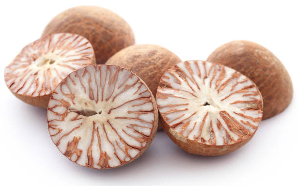


ENGLISH
Arecanut, commonly known as betel nut, is a significant cash crop in India, particularly in states like
Karnataka, Kerala, and Assam. It is cultivated for its seeds, which are widely used for chewing. Below
is the step-by-step growing mechanism for arecanut from seed selection to harvesting:
1] Seed Selection and Planting:
Arecanut is typically propagated through seeds or by planting seedlings. High-quality, disease-free
seeds are selected for planting. Seeds should be soaked in water for 24 hours before planting to enhance
germination. The planting season usually begins at the onset of the monsoon (June-July). Seeds are sown
in well-prepared soil, usually in pits or trenches, spaced 6-8 feet apart.
2] Germination:
After sowing, arecanut seeds take about 3 to 4 months to germinate, depending on soil conditions and
moisture levels. The germination process involves the seed absorbing moisture, swelling, and eventually
sprouting a seedling that pushes through the soil.
3] Seedling Development:
Once germinated, seedlings develop their first few leaves. Arecanut plants thrive in warm, humid
conditions with ample sunlight. During this stage, it is crucial to maintain moisture in the soil,
especially during dry spells.
4] Transplanting (if applicable):
If started in a nursery, seedlings can be transplanted to the main field when they reach about 6-12
months old. This is done carefully to avoid damaging the roots. The transplanting is typically done
during the rainy season to ensure adequate moisture.
5] Vegetative Growth:
After transplanting, the arecanut plant undergoes rapid vegetative growth. The plant grows tall,
producing large, feathery leaves that can reach up to 10 feet in height. Proper spacing and soil
management are essential during this stage to allow for good airflow and sunlight penetration.
6] Flowering:
Arecanut plants start to flower after about 4-5 years of growth. The flowers are small and grow in
clusters. Arecanut is dioecious, meaning there are male and female plants. Only the female plants
produce the fruit, so it is essential to have both male and female plants in proximity to ensure
pollination.
7] Pollination:
Pollination in arecanut occurs through wind and insects. The pollen from the male flowers fertilizes the
female flowers, leading to fruit development. Adequate planting of male plants is crucial for maximizing
fruit yield.
8] Fruit Development:
Once pollinated, the flowers develop into fruits, which are green drupes that turn yellowish-brown as
they mature. This stage typically lasts around 7-9 months. The fruits develop in clusters, and each
cluster can contain several nuts.
9] Pest and Disease Management:
Arecanut is susceptible to pests such as leafhoppers and diseases like bud rot. Regular monitoring and
the application of organic pesticides, such as neem oil, can help manage these issues. Implementing good
agricultural practices, such as crop rotation and maintaining plant health, also reduces the risk of
pest infestations.
10] Harvesting:
Arecanut is harvested when the fruits turn yellow-brown and begin to dry. This usually occurs about 6-8
months after pollination. Harvesting is done manually by cutting the fruit bunches from the plant. It is
essential to wear gloves during harvesting, as the fruit can be irritating to the skin.
11] Post-Harvest Processing:
After harvesting, the arecanuts are cleaned and dried in the sun for several days to reduce moisture
content. Proper drying is crucial to prevent mold and maintain quality. Dried arecanuts are sorted based
on size and quality before being packaged for sale.
12] Storage:
Arecanuts should be stored in a cool, dry place to prevent moisture absorption and pest attacks. Proper
storage conditions help maintain the nuts' quality for longer periods.
Throughout the growth process, arecanut plants require well-drained, fertile soil, adequate moisture,
and careful pest management to ensure a healthy yield.
ENGLISH
తెలుగు
అరెకనట్, సాధారణంగా తమలపాకు అని పిలుస్తారు, ఇది భారతదేశంలో, ముఖ్యంగా కర్ణాటక, కేరళ మరియు అస్సాం వంటి
రాష్ట్రాల్లో ముఖ్యమైన నగదు పంట. ఇది దాని విత్తనాల కోసం సాగు చేయబడుతుంది, వీటిని నమలడానికి విస్తృతంగా
ఉపయోగిస్తారు. విత్తన ఎంపిక నుండి కోత వరకు అరెకనట్ కోసం దశలవారీగా పెరుగుతున్న విధానం క్రింద
ఉంది:
1] విత్తన ఎంపిక మరియు నాటడం:
అరెకనట్ సాధారణంగా విత్తనాల ద్వారా లేదా మొలకలను నాటడం ద్వారా
ప్రచారం చేయబడుతుంది. నాణ్యమైన, వ్యాధి రహిత విత్తనాలను నాటడానికి ఎంపిక చేస్తారు. అంకురోత్పత్తిని
పెంచడానికి విత్తనాలను నాటడానికి ముందు 24 గంటలు నీటిలో నానబెట్టాలి. మొక్కలు నాటే కాలం సాధారణంగా
వర్షాకాలం (జూన్-జూలై) ప్రారంభంలో ప్రారంభమవుతుంది. సాధారణంగా 6-8 అడుగుల దూరంలో ఉన్న గుంతలు లేదా
కందకాలలో బాగా సిద్ధమైన నేలలో విత్తనాలు విత్తుతారు.
2] అంకురోత్పత్తి:
విత్తిన తర్వాత, నేల పరిస్థితులు మరియు తేమ స్థాయిలను బట్టి అరకనట్
విత్తనాలు మొలకెత్తడానికి సుమారు 3 నుండి 4 నెలల సమయం పడుతుంది. అంకురోత్పత్తి ప్రక్రియలో విత్తనం తేమను
గ్రహించి, వాపును కలిగి ఉంటుంది మరియు చివరికి నేల గుండా వెళ్లే ఒక మొలకను మొలకెత్తిస్తుంది.
3] మొలకల అభివృద్ధి:
మొలకెత్తిన తర్వాత, మొలకలు వాటి మొదటి కొన్ని ఆకులను అభివృద్ధి
చేస్తాయి. అరెకానట్ మొక్కలు తగినంత సూర్యకాంతితో వెచ్చని, తేమతో కూడిన పరిస్థితులలో వృద్ధి చెందుతాయి. ఈ
దశలో, ముఖ్యంగా పొడిగా ఉండే సమయంలో నేలలో తేమను నిర్వహించడం చాలా ముఖ్యం.
4] మార్పిడి (వర్తిస్తే):
నర్సరీలో ప్రారంభించినట్లయితే, మొలకల 6-12 నెలల వయస్సు
వచ్చినప్పుడు వాటిని ప్రధాన పొలంలోకి నాటవచ్చు. మూలాలు దెబ్బతినకుండా ఇది జాగ్రత్తగా చేయబడుతుంది. సరైన
తేమను నిర్ధారించడానికి సాధారణంగా వర్షాకాలంలో మార్పిడి జరుగుతుంది.
5] ఏపుగా ఎదుగుదల:
నాటు వేసిన తర్వాత, అరెకనట్ మొక్క వేగంగా ఏపుగా పెరుగుతుంది. మొక్క
పొడవుగా పెరుగుతుంది, 10 అడుగుల ఎత్తు వరకు చేరుకోగల పెద్ద, ఈకలతో కూడిన ఆకులను ఉత్పత్తి చేస్తుంది. ఈ
దశలో మంచి గాలి ప్రవాహాన్ని మరియు సూర్యకాంతి చొచ్చుకుపోవడానికి సరైన అంతరం మరియు నేల నిర్వహణ
అవసరం.
6] పుష్పించేవి:
అరెకానట్ మొక్కలు దాదాపు 4-5 సంవత్సరాల పెరుగుదల తర్వాత పుష్పించడం
ప్రారంభిస్తాయి. పువ్వులు చిన్నవి మరియు గుత్తులుగా పెరుగుతాయి. అరెకానట్ డైయోసియస్, అంటే మగ మరియు ఆడ
మొక్కలు ఉన్నాయి. ఆడ మొక్కలు మాత్రమే పండ్లను ఉత్పత్తి చేస్తాయి, కాబట్టి పరాగసంపర్కాన్ని
నిర్ధారించడానికి మగ మరియు ఆడ మొక్కలు రెండూ సమీపంలో ఉండటం చాలా అవసరం.
7] పరాగసంపర్కం:
అరెకనట్లో పరాగసంపర్కం గాలి మరియు కీటకాల ద్వారా జరుగుతుంది. మగ పువ్వుల
నుండి వచ్చే పుప్పొడి ఆడ పువ్వులను సారవంతం చేస్తుంది, ఇది పండ్ల అభివృద్ధికి దారితీస్తుంది. పండ్ల
దిగుబడిని పెంచడానికి మగ మొక్కలను తగినంతగా నాటడం చాలా ముఖ్యం.
8] పండ్ల అభివృద్ధి:
ఒకసారి పరాగసంపర్కం జరిగినప్పుడు, పువ్వులు పండ్లుగా అభివృద్ధి
చెందుతాయి, ఇవి ఆకుపచ్చని డ్రూప్లు, అవి పరిపక్వం చెందుతున్నప్పుడు పసుపు-గోధుమ రంగులోకి మారుతాయి. ఈ
దశ సాధారణంగా 7-9 నెలల వరకు ఉంటుంది. పండ్లు సమూహాలలో అభివృద్ధి చెందుతాయి మరియు ప్రతి క్లస్టర్ అనేక
కాయలను కలిగి ఉంటుంది.
9] తెగుళ్లు మరియు వ్యాధుల నిర్వహణ:
అరెకనట్ ఆకు పురుగులు మరియు మొగ్గ తెగులు వంటి
వ్యాధులకు లోనవుతుంది. రెగ్యులర్ పర్యవేక్షణ మరియు వేప నూనె వంటి సేంద్రీయ పురుగుమందుల వాడకం ఈ సమస్యలను
నిర్వహించడానికి సహాయపడుతుంది. పంట మార్పిడి మరియు మొక్కల ఆరోగ్యాన్ని కాపాడుకోవడం వంటి మంచి వ్యవసాయ
పద్ధతులను అమలు చేయడం వల్ల చీడపీడల ముప్పు కూడా తగ్గుతుంది.
10] కోత:
అరెకనట్ పండ్లు పసుపు-గోధుమ రంగులోకి మారినప్పుడు మరియు ఎండిపోవడం
ప్రారంభించినప్పుడు పండిస్తారు. ఇది సాధారణంగా పరాగసంపర్కం జరిగిన 6-8 నెలల తర్వాత సంభవిస్తుంది. మొక్క
నుండి పండ్ల గుత్తులను కత్తిరించడం ద్వారా మాన్యువల్గా హార్వెస్టింగ్ జరుగుతుంది. కోత సమయంలో చేతి
తొడుగులు ధరించడం చాలా అవసరం, ఎందుకంటే పండు చర్మానికి చికాకు కలిగిస్తుంది.
11] పోస్ట్-హార్వెస్ట్ ప్రాసెసింగ్:
కోత కోసిన తర్వాత, తేమ శాతాన్ని తగ్గించడానికి
అరకెన్లను చాలా రోజులు శుభ్రం చేసి ఎండలో ఎండబెట్టాలి. అచ్చును నివారించడానికి మరియు నాణ్యతను
నిర్వహించడానికి సరైన ఎండబెట్టడం చాలా ముఖ్యం. ఎండిన అరకెన్లు అమ్మకానికి ప్యాక్ చేయడానికి ముందు
పరిమాణం మరియు నాణ్యత ఆధారంగా క్రమబద్ధీకరించబడతాయి.
12] నిల్వ:
తేమ శోషణ మరియు చీడపీడల దాడులను నివారించడానికి అరెకనట్లను చల్లని, పొడి
ప్రదేశంలో నిల్వ చేయాలి. సరైన నిల్వ పరిస్థితులు ఎక్కువ కాలం గింజల నాణ్యతను కొనసాగించడంలో
సహాయపడతాయి.
ఎదుగుదల ప్రక్రియ అంతటా, అరెకానట్ మొక్కలు ఆరోగ్యకరమైన దిగుబడిని నిర్ధారించడానికి బాగా ఎండిపోయిన,
సారవంతమైన నేల, తగినంత తేమ మరియు జాగ్రత్తగా తెగులు నిర్వహణ అవసరం.
తెలుగు
వినండి
21.VANILLA / 21.వనిల్లా
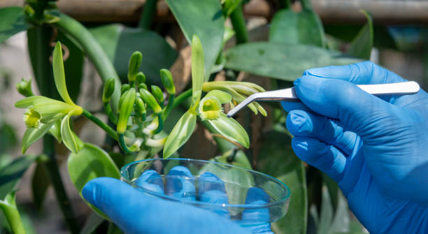
ENGLISH
Vanilla, known for its rich aroma and flavor, is derived from the pods of the vanilla orchid (Vanilla
planifolia). The cultivation of vanilla is a meticulous process that requires specific conditions and
techniques. Below are the key steps involved in the growth and harvesting of vanilla:
1] Site Selection and Preparation:
Vanilla thrives in warm, humid tropical climates. Ideal
locations should have well-drained soil rich in organic matter. The site is prepared by clearing weeds,
improving soil fertility with compost, and establishing a support structure (like trees or trellises)
for the climbing vines.
2] Propagation:
Vanilla orchids are propagated through cuttings, known as "slips," taken from
healthy parent plants. Each cutting should be about 1-2 feet long and should have a few nodes. These
cuttings are planted in prepared soil, usually during the rainy season, to ensure adequate
moisture.
3] Planting:
Cuttings are planted in shallow holes and covered with soil, ensuring that at
least one node is buried for optimal rooting. They should be spaced about 6-10 feet apart to allow for
growth. Watering is essential after planting to promote root establishment.
4] Trellising and Support:
As vanilla orchids grow, they require support to climb. A trellis
system is constructed using bamboo, wood, or other sturdy materials. This allows the vines to grow
upwards, maximizing sunlight exposure and air circulation.
5] Watering and Fertilization:
Vanilla requires consistent moisture but should not be
waterlogged. Regular watering is essential, especially during dry periods. Organic fertilizers, such as
compost or well-rotted manure, are applied every few months to nourish the plants.
6] Pollination:
Vanilla flowers are hermaphroditic but are typically self-sterile, requiring
hand pollination for pod development. This is done by gently lifting the flower’s anther and
transferring the pollen to the stigma. Pollination should occur in the early morning when flowers are
open.
7] Pod Development:
Once pollinated, vanilla flowers will develop into long, green pods. This
stage takes about 6-9 months, during which the pods grow in size and mature on the vine. Proper care and
watering are critical to prevent stress on the plants.
8] Harvesting:
Vanilla pods are harvested when they turn from green to yellowish, indicating
ripeness. This typically occurs around 8-9 months after pollination. Harvesting is done by carefully
cutting the pods from the vine, avoiding damage to the plant.
9] Curing Process:
Freshly harvested vanilla pods undergo a curing process to develop their
characteristic flavor and aroma. This involves blanching the pods in hot water, sweating them in a
controlled environment, and then drying them in the sun or shade. This curing process can take several
weeks.
10] Storage:
Once cured, vanilla pods should be stored in a cool, dark, and dry place to
maintain their quality. They can be kept in airtight containers to prevent moisture loss and protect
them from pests.
Throughout the cultivation of vanilla, attention to environmental conditions, pollination, and the
curing process is crucial to ensure high-quality vanilla beans that are sought after in the market.
ENGLISH
తెలుగు
వనిల్లా, దాని గొప్ప సువాసన మరియు రుచికి ప్రసిద్ధి చెందింది, వనిల్లా ఆర్చిడ్ (వనిల్లా ప్లానిఫోలియా)
యొక్క పాడ్ల నుండి తీసుకోబడింది. వనిల్లా సాగు అనేది ఒక ఖచ్చితమైన ప్రక్రియ, దీనికి నిర్దిష్ట
పరిస్థితులు మరియు సాంకేతికతలు అవసరం. వనిల్లా పెరుగుదల మరియు కోతకు సంబంధించిన కీలక దశలు క్రింద
ఉన్నాయి:
1] సైట్ ఎంపిక మరియు తయారీ:
వెనిలా వెచ్చని, తేమతో కూడిన ఉష్ణమండల వాతావరణంలో
వర్ధిల్లుతుంది. అనువైన ప్రదేశాలలో సేంద్రియ పదార్థాలు అధికంగా ఉండే బాగా ఎండిపోయిన నేల ఉండాలి. కలుపు
మొక్కలను క్లియర్ చేయడం, కంపోస్ట్తో నేల సంతానోత్పత్తిని మెరుగుపరచడం మరియు ఎక్కే తీగలకు సహాయక
నిర్మాణాన్ని (చెట్లు లేదా ట్రేల్లిస్ వంటివి) ఏర్పాటు చేయడం ద్వారా సైట్ తయారు చేయబడింది.
2] ప్రచారం:
వనిల్లా ఆర్కిడ్లు కోత ద్వారా ప్రచారం చేయబడతాయి, వీటిని "స్లిప్స్" అని
పిలుస్తారు, వీటిని ఆరోగ్యకరమైన మాతృ మొక్కల నుండి తీసుకుంటారు. ప్రతి కట్టింగ్ 1-2 అడుగుల పొడవు ఉండాలి
మరియు కొన్ని నోడ్లను కలిగి ఉండాలి. ఈ కోతలను సాధారణంగా వర్షాకాలంలో తగినంత తేమ ఉండేలా సిద్ధం చేసిన
మట్టిలో నాటుతారు.
3] నాటడం:
కోతలను నిస్సార రంధ్రాలలో నాటారు మరియు మట్టితో కప్పబడి, సరైన రూటింగ్ కోసం కనీసం
ఒక నోడ్ని పూడ్చిపెట్టినట్లు నిర్ధారిస్తుంది. అవి ఎదుగుదలకు వీలుగా 6-10 అడుగుల దూరంలో ఉండాలి. నాటిన
తర్వాత రూట్ స్థాపనను ప్రోత్సహించడానికి నీరు త్రాగుట అవసరం.
4] ట్రెల్లిసింగ్ మరియు సపోర్ట్:
వనిల్లా ఆర్కిడ్లు పెరిగేకొద్దీ, అవి ఎక్కడానికి మద్దతు
అవసరం. ట్రేల్లిస్ వ్యవస్థ వెదురు, కలప లేదా ఇతర ధృడమైన పదార్థాలను ఉపయోగించి నిర్మించబడింది. ఇది
తీగలను పైకి ఎదుగుతుంది, సూర్యరశ్మిని మరియు గాలి ప్రసరణను గరిష్టంగా పెంచుతుంది.
5] నీరు త్రాగుట మరియు ఫలదీకరణం:
వనిల్లాకు స్థిరమైన తేమ అవసరం కానీ నీటితో నిండి ఉండకూడదు.
క్రమం తప్పకుండా నీరు త్రాగుట అవసరం, ముఖ్యంగా పొడి కాలంలో. కంపోస్ట్ లేదా బాగా కుళ్ళిన ఎరువు వంటి
సేంద్రీయ ఎరువులు మొక్కలను పోషించడానికి ప్రతి కొన్ని నెలలకు ఒకసారి వేయబడతాయి.
6] పరాగసంపర్కం:
వనిల్లా పువ్వులు హెర్మాఫ్రోడిటిక్ కానీ సాధారణంగా స్వీయ-శుభ్రత కలిగి
ఉంటాయి, పాడ్ అభివృద్ధికి చేతి పరాగసంపర్కం అవసరం. పువ్వు యొక్క పుట్టను సున్నితంగా పైకి లేపడం మరియు
పుప్పొడిని కళంకంలోకి బదిలీ చేయడం ద్వారా ఇది జరుగుతుంది. పూలు తెరిచినప్పుడు ఉదయాన్నే పరాగసంపర్కం
జరగాలి.
7] పాడ్ డెవలప్మెంట్:
ఒకసారి పరాగసంపర్కం జరిగితే, వనిల్లా పువ్వులు పొడవాటి, ఆకుపచ్చ
పాడ్లుగా అభివృద్ధి చెందుతాయి. ఈ దశ సుమారు 6-9 నెలలు పడుతుంది, ఈ సమయంలో కాయలు పరిమాణంలో పెరుగుతాయి
మరియు తీగపై పరిపక్వం చెందుతాయి. మొక్కలపై ఒత్తిడిని నివారించడానికి సరైన సంరక్షణ మరియు నీరు త్రాగుట
కీలకం.
8] కోత:
వనిల్లా కాయలు ఆకుపచ్చ నుండి పసుపు రంగులోకి మారినప్పుడు పండించబడతాయి, ఇది పక్వతను
సూచిస్తుంది. ఇది సాధారణంగా పరాగసంపర్కం తర్వాత 8-9 నెలల తర్వాత సంభవిస్తుంది. తీగ నుండి కాయలను
జాగ్రత్తగా కోసి, మొక్కకు నష్టం జరగకుండా కోయడం జరుగుతుంది.
9] క్యూరింగ్ ప్రక్రియ:
తాజాగా పండించిన వనిల్లా పాడ్లు వాటి లక్షణమైన రుచి మరియు సువాసనను
అభివృద్ధి చేయడానికి క్యూరింగ్ ప్రక్రియకు లోనవుతాయి. ఇందులో పాడ్లను వేడి నీటిలో బ్లాంచింగ్ చేయడం,
నియంత్రిత వాతావరణంలో వాటిని చెమట పట్టడం, ఆపై వాటిని ఎండలో లేదా నీడలో ఎండబెట్టడం జరుగుతుంది. ఈ
క్యూరింగ్ ప్రక్రియకు చాలా వారాలు పట్టవచ్చు.
10] నిల్వ:
నయమైన తర్వాత, వనిల్లా పాడ్లను వాటి నాణ్యతను కాపాడుకోవడానికి చల్లని, చీకటి
మరియు పొడి ప్రదేశంలో నిల్వ చేయాలి. వాటిని గాలి చొరబడని డబ్బాల్లో ఉంచడం వల్ల తేమ నష్టాన్ని
అరికట్టవచ్చు మరియు తెగుళ్ల నుండి రక్షించవచ్చు.
వనిల్లా పెంపకం అంతటా, పర్యావరణ పరిస్థితులు, పరాగసంపర్కం మరియు క్యూరింగ్ ప్రక్రియపై దృష్టి పెట్టడం
మార్కెట్లో కోరుకునే అధిక-నాణ్యత వనిల్లా గింజలను నిర్ధారించడానికి కీలకం.
తెలుగు
వినండి
22.MESTA(KENAF) / 22.కెనాఫ్

ENGLISH
Kenaf, commonly known as mesta in India, is a versatile fiber plant valued for its strong, fibrous
stems. It is used in various applications, including textiles, paper, and building materials. Here’s a
detailed step-by-step guide to the growing mechanism of mesta:
1] Site Selection and Soil Preparation:
Kenaf thrives in well-drained, loamy to sandy soils
with a pH of 6.0 to 7.5. The site should receive full sunlight and have good drainage. Soil preparation
involves plowing and harrowing to create a fine seedbed. Organic matter, such as compost or manure, is
incorporated to enhance soil fertility.
2] Seed Selection and Sowing:
High-quality kenaf seeds are selected, preferably hybrid
varieties known for better fiber yield and disease resistance. Seeds are typically sown in rows during
the pre-monsoon season (April-May). Sowing depth should be about 1-2 inches, with seeds spaced 3-4
inches apart in rows 3-4 feet apart.
3] Germination:
Germination occurs within 5-10 days under optimal conditions. Kenaf seeds
require moisture for germination, so adequate watering is essential during this period. Proper moisture
levels help ensure a uniform stand.
4] Vegetative Growth:
After germination, kenaf enters a vigorous vegetative growth phase,
characterized by rapid leaf development and stem elongation. The plant can grow up to 10 feet tall in a
single season. During this phase, regular watering and nutrient application (nitrogen-rich fertilizers)
support healthy growth.
5] Weed and Pest Control:
Weed management is crucial in the early stages to prevent
competition for nutrients and water. Mechanical weeding and mulching are effective strategies. Regular
monitoring for pests like aphids and beetles is essential, and organic or chemical pesticides may be
used if infestations occur.
6] Flowering:
Kenaf plants typically start flowering about 60-90 days after sowing. The
flowers are small and appear in clusters. Successful flowering indicates the plant's readiness for fiber
production, as the best fiber is obtained just before the flowers fully mature.
7] Fiber Development:
As the flowers mature, the plant’s energy shifts towards fiber
production. The stems accumulate cellulose, making them stronger. Proper water and nutrient management
during this phase ensure optimal fiber quality.
8] Harvesting:
Kenaf is harvested when the lower leaves start yellowing and the seeds begin
to mature, usually 100-120 days after sowing. The stems are cut close to the ground using a sickle or
machete. Timing is critical to maximize fiber quality and yield.
9] Post-Harvest Processing:
After harvesting, kenaf stems are bundled and allowed to wilt for
a few days. This drying process is crucial for fiber extraction. Once wilted, the stems can be processed
for fiber by retting, which involves soaking them in water to separate the fibers from the woody
core.
10] Fiber Extraction and Storage:
Following retting, the fibers are extracted, washed, and
dried. The dried fibers are then sorted based on quality and length. Proper storage in a cool, dry place
prevents moisture absorption and preserves fiber quality for further processing into textiles or other
products.
Throughout the growing cycle, maintaining soil health, managing pests, and timing the harvest correctly
are vital for achieving high yields and quality fiber from mesta (kenaf).
ENGLISH
తెలుగు
కెనాఫ్, సాధారణంగా భారతదేశంలో మెస్టా అని పిలుస్తారు, దాని బలమైన, పీచు కాండం కోసం విలువైన ఒక బహుముఖ
ఫైబర్ మొక్క. ఇది వస్త్రాలు, కాగితం మరియు నిర్మాణ సామగ్రితో సహా వివిధ అనువర్తనాల్లో ఉపయోగించబడుతుంది.
మెస్టా యొక్క పెరుగుతున్న మెకానిజమ్కు ఇక్కడ వివరణాత్మక దశల వారీ గైడ్ ఉంది:
1] స్థల ఎంపిక మరియు నేల తయారీ:
కెనాఫ్ 6.0 నుండి 7.5 pHతో బాగా ఎండిపోయిన, లోమీ నుండి ఇసుక
నేలల్లో వృద్ధి చెందుతుంది. సైట్ పూర్తి సూర్యకాంతిని పొందాలి మరియు మంచి పారుదలని కలిగి ఉండాలి. నేల
తయారీలో చక్కటి సీడ్బెడ్ను రూపొందించడానికి దున్నడం మరియు దున్నడం వంటివి ఉంటాయి. కంపోస్ట్ లేదా పేడ
వంటి సేంద్రీయ పదార్థం నేల సారాన్ని మెరుగుపరచడానికి చేర్చబడుతుంది.
2] విత్తన ఎంపిక మరియు విత్తడం:
అధిక-నాణ్యత గల కెనాఫ్ విత్తనాలను ఎంపిక చేస్తారు, మెరుగైన
ఫైబర్ దిగుబడి మరియు వ్యాధి నిరోధకతకు ప్రసిద్ధి చెందిన హైబ్రిడ్ రకాలు. వర్షాకాలం ముందు (ఏప్రిల్-మే)లో
విత్తనాలు సాధారణంగా వరుసలలో విత్తుతారు. విత్తే లోతు 1-2 అంగుళాలు ఉండాలి, విత్తనాలు 3-4 అంగుళాల
దూరంలో 3-4 అడుగుల దూరంలో ఉండాలి.
3] మొలకెత్తడం:
అంకురోత్పత్తి సరైన పరిస్థితుల్లో 5-10 రోజులలో జరుగుతుంది. కెనాఫ్ విత్తనాలు
అంకురోత్పత్తికి తేమ అవసరం, కాబట్టి ఈ కాలంలో తగినంత నీరు త్రాగుట అవసరం. సరైన తేమ స్థాయిలు ఏకరీతి
స్టాండ్ను నిర్ధారించడంలో సహాయపడతాయి.
4] ఏపుగా పెరగడం:
అంకురోత్పత్తి తర్వాత, కెనాఫ్ వేగంగా ఆకు అభివృద్ధి మరియు కాండం పొడిగించడం
ద్వారా వర్ణించబడిన ఒక శక్తివంతమైన వృక్ష వృద్ధి దశలోకి ప్రవేశిస్తుంది. ఈ మొక్క ఒక్క సీజన్లో 10
అడుగుల ఎత్తు వరకు పెరుగుతుంది. ఈ దశలో, క్రమం తప్పకుండా నీరు త్రాగుట మరియు పోషకాలు (నత్రజని అధికంగా
ఉండే ఎరువులు) ఆరోగ్యకరమైన పెరుగుదలకు తోడ్పడతాయి.
5] కలుపు మొక్కలు మరియు తెగులు నియంత్రణ:
పోషకాలు మరియు నీటి కోసం పోటీని నివారించడానికి
ప్రారంభ దశలో కలుపు నిర్వహణ చాలా కీలకం. మెకానికల్ కలుపు తీయుట మరియు మల్చింగ్ సమర్థవంతమైన వ్యూహాలు.
అఫిడ్స్ మరియు బీటిల్స్ వంటి తెగుళ్లను క్రమం తప్పకుండా పర్యవేక్షించడం చాలా అవసరం, మరియు తెగుళ్లు
సంభవించినట్లయితే సేంద్రీయ లేదా రసాయన పురుగుమందులను ఉపయోగించవచ్చు.
6] పుష్పించేవి:
కెనాఫ్ మొక్కలు సాధారణంగా విత్తిన 60-90 రోజుల తర్వాత పుష్పించడం
ప్రారంభిస్తాయి. పువ్వులు చిన్నవి మరియు గుత్తులుగా కనిపిస్తాయి. విజయవంతమైన పుష్పించేది ఫైబర్
ఉత్పత్తికి మొక్క యొక్క సంసిద్ధతను సూచిస్తుంది, ఎందుకంటే పువ్వులు పూర్తిగా పరిపక్వం చెందకముందే
ఉత్తమమైన ఫైబర్ లభిస్తుంది.
7] ఫైబర్ డెవలప్మెంట్:
పువ్వులు పరిపక్వం చెందుతున్నప్పుడు, మొక్క యొక్క శక్తి ఫైబర్
ఉత్పత్తి వైపు మళ్లుతుంది. కాండం సెల్యులోజ్ను కూడబెట్టి, వాటిని బలంగా చేస్తుంది. ఈ దశలో సరైన నీరు
మరియు పోషకాల నిర్వహణ సరైన ఫైబర్ నాణ్యతను నిర్ధారిస్తుంది.
8] కోత:
కింది ఆకులు పసుపు రంగులోకి మారడం ప్రారంభించినప్పుడు మరియు విత్తనాలు పరిపక్వం
చెందడం ప్రారంభించినప్పుడు, సాధారణంగా విత్తిన 100-120 రోజుల తర్వాత కెనాఫ్ పండించబడుతుంది. కొడవలి లేదా
కొడవలిని ఉపయోగించి కాండం నేలకి దగ్గరగా కత్తిరించబడుతుంది. ఫైబర్ నాణ్యత మరియు దిగుబడిని పెంచడానికి
సమయం చాలా కీలకం.
9] పోస్ట్-హార్వెస్ట్ ప్రాసెసింగ్:
పంట కోసిన తర్వాత, కెనాఫ్ కాండాలను కట్టలుగా చేసి కొన్ని
రోజుల వరకు వాడిపోయేలా అనుమతిస్తారు. ఫైబర్ వెలికితీత కోసం ఈ ఎండబెట్టడం ప్రక్రియ కీలకం. వాడిపోయిన
తర్వాత, కాడలను రెట్టింగ్ ద్వారా ఫైబర్ కోసం ప్రాసెస్ చేయవచ్చు, ఇందులో వుడీ కోర్ నుండి ఫైబర్లను వేరు
చేయడానికి నీటిలో వాటిని నానబెట్టడం జరుగుతుంది.
10] ఫైబర్ వెలికితీత మరియు నిల్వ:
రెట్టింగ్ తరువాత, ఫైబర్లు సంగ్రహించబడతాయి, కడుగుతారు
మరియు ఎండబెట్టబడతాయి. ఎండిన నారలు నాణ్యత మరియు పొడవు ఆధారంగా క్రమబద్ధీకరించబడతాయి. చల్లని, పొడి
ప్రదేశంలో సరైన నిల్వ తేమ శోషణను నిరోధిస్తుంది మరియు వస్త్రాలు లేదా ఇతర ఉత్పత్తులకు తదుపరి
ప్రాసెసింగ్ కోసం ఫైబర్ నాణ్యతను సంరక్షిస్తుంది.
మెస్టా (కెనాఫ్) నుండి అధిక దిగుబడులు మరియు నాణ్యమైన ఫైబర్ను సాధించడానికి పెరుగుతున్న చక్రంలో, నేల
ఆరోగ్యాన్ని కాపాడుకోవడం, తెగుళ్లను నిర్వహించడం మరియు పంటను సరిగ్గా నిర్వహించడం చాలా ముఖ్యమైనవి.
తెలుగు
వినండి
23.FLAXSEED(LINSEED) / 23.అవిసె గింజలు

ENGLISH
Flaxseed, also known as linseed, is cultivated for its seeds, which are rich in omega-3 fatty acids and
fiber. The plant is also valued for its fibers, which are used to make linen. Here’s a detailed
step-by-step guide to the growing mechanism of flaxseed:
1] Site Selection and Soil Preparation:
Flax thrives in well-drained, loamy soils with a pH
of 6.0 to 7.5. Ideal conditions include full sunlight and moderate moisture. The site is prepared by
plowing and harrowing to create a fine seedbed. Adding organic matter, such as compost, can enhance soil
fertility.
2] Seed Selection and Sowing:
High-quality flax seeds are selected for planting. Sowing
typically occurs in early spring, as flax prefers cooler temperatures. Seeds are sown about 1 inch deep
in rows spaced 12-24 inches apart. A seeding rate of about 30-40 pounds per acre is recommended for
optimal growth.
3] Germination:
Flax seeds germinate within 7-14 days, depending on soil temperature and
moisture levels. Consistent moisture is crucial during this period to promote healthy seedling
development. Flax seeds prefer temperatures between 10°C to 20°C for optimal germination.
4] Vegetative Growth:
After germination, flax enters a vegetative growth phase characterized
by rapid leaf development. The plant grows erect, producing numerous leaves along the stem. Adequate
watering and nutrient management, particularly nitrogen, support healthy growth during this
stage.
5] Weed and Pest Control:
Weed management is essential during the early growth stages to
minimize competition. Mechanical weeding or mulching can be effective. Regular monitoring for pests,
such as aphids and cutworms, is important. If necessary, organic or chemical pesticides may be applied
to control infestations.
6] Flowering:
Flax plants typically begin flowering about 30-45 days after sowing. The
flowers are small, usually blue or white, and bloom for only a short time. Flowering indicates the plant
is transitioning from vegetative growth to seed production.
7] Seed Development:
After flowering, the flowers give way to seed pods. Flax seeds develop
in these pods, which mature over the next few weeks. Proper watering during this period is crucial to
ensure healthy seed formation. The seeds are typically ready for harvest about 90-110 days after
planting.
8] Harvesting:
Flax is harvested when the seed pods turn brown and the seeds inside rattle,
indicating maturity. This usually occurs in late summer or early fall. The plants are cut at the base
using a sickle or a combine harvester, ensuring minimal seed loss.
9] Post-Harvest Processing:
After harvesting, the flax plants are bundled and allowed to dry
in the field for a few days. Once dried, the seed can be separated from the pods through threshing,
which can be done manually or with a machine.
10] Storage:
Once the seeds are cleaned and dried, they should be stored in a cool, dark, and
dry environment to maintain their quality. Proper storage prevents moisture absorption and protects
against pests.
Throughout the growing process, careful attention to soil health, pest management, and the timing of
harvest is vital to ensure high-quality flaxseed production.
ENGLISH
తెలుగు
లిన్సీడ్ అని కూడా పిలువబడే ఫ్లాక్స్ సీడ్, ఒమేగా-3 ఫ్యాటీ యాసిడ్స్ మరియు పీచుతో సమృద్ధిగా ఉండే దాని
విత్తనాల కోసం పండిస్తారు. నారను తయారు చేయడానికి ఉపయోగించే నారలకు కూడా మొక్క విలువైనది. ఫ్లాక్స్ సీడ్
యొక్క పెరుగుతున్న మెకానిజం గురించి వివరణాత్మక దశల వారీ మార్గదర్శిని ఇక్కడ ఉంది:
1] స్థల ఎంపిక మరియు నేల తయారీ:
ఫ్లాక్స్ 6.0 నుండి 7.5 pHతో బాగా ఎండిపోయిన, లోమీ నేలల్లో
వృద్ధి చెందుతుంది. సరైన పరిస్థితులు పూర్తి సూర్యకాంతి మరియు మితమైన తేమను కలిగి ఉంటాయి. చక్కటి
సీడ్బెడ్ను రూపొందించడానికి దున్నడం మరియు దున్నడం ద్వారా సైట్ తయారు చేయబడింది. కంపోస్ట్ వంటి
సేంద్రియ పదార్థాన్ని జోడించడం వల్ల నేల సారవంతం పెరుగుతుంది.
2] విత్తన ఎంపిక మరియు విత్తడం:
అధిక-నాణ్యత గల అవిసె గింజలను నాటడానికి ఎంపిక చేస్తారు.
విత్తడం సాధారణంగా వసంత ఋతువు ప్రారంభంలో జరుగుతుంది, ఎందుకంటే అవిసె చల్లటి ఉష్ణోగ్రతలను ఇష్టపడుతుంది.
విత్తనాలు 12-24 అంగుళాల దూరంలో ఉన్న వరుసలలో 1 అంగుళం లోతులో నాటబడతాయి. సరైన ఎదుగుదల కోసం ఎకరానికి
సుమారు 30-40 పౌండ్ల విత్తనాల రేటు సిఫార్సు చేయబడింది.
3] మొలకెత్తడం:
నేల ఉష్ణోగ్రత మరియు తేమ స్థాయిలను బట్టి అవిసె గింజలు 7-14 రోజులలోపు
మొలకెత్తుతాయి. ఆరోగ్యకరమైన మొలకల అభివృద్ధిని ప్రోత్సహించడానికి ఈ కాలంలో స్థిరమైన తేమ కీలకం. అవిసె
గింజలు సరైన అంకురోత్పత్తి కోసం 10°C నుండి 20°C మధ్య ఉష్ణోగ్రతలను ఇష్టపడతాయి.
4] ఏపుగా పెరుగుదల:
అంకురోత్పత్తి తర్వాత, అవిసె వేగంగా ఆకు అభివృద్ధిని కలిగి ఉండే ఏపుగా
పెరిగే దశలోకి ప్రవేశిస్తుంది. మొక్క నిటారుగా పెరుగుతుంది, కాండం వెంట అనేక ఆకులను ఉత్పత్తి చేస్తుంది.
తగినంత నీరు త్రాగుట మరియు పోషకాల నిర్వహణ, ముఖ్యంగా నత్రజని, ఈ దశలో ఆరోగ్యకరమైన పెరుగుదలకు
తోడ్పడుతుంది.
5] కలుపు మొక్కలు మరియు తెగులు నియంత్రణ:
పోటీని తగ్గించడానికి ప్రారంభ వృద్ధి దశలలో కలుపు
నిర్వహణ అవసరం. మెకానికల్ కలుపు తీయుట లేదా కప్పడం ప్రభావవంతంగా ఉంటుంది. అఫిడ్స్ మరియు కట్వార్మ్ల
వంటి తెగుళ్లను క్రమం తప్పకుండా పర్యవేక్షించడం ముఖ్యం. అవసరమైతే, పురుగులను నియంత్రించడానికి సేంద్రీయ
లేదా రసాయన పురుగుమందులు వేయవచ్చు.
6] పుష్పించేవి:
అవిసె మొక్కలు సాధారణంగా విత్తిన 30-45 రోజుల తర్వాత పుష్పించడం
ప్రారంభిస్తాయి. పువ్వులు చిన్నవి, సాధారణంగా నీలం లేదా తెలుపు, మరియు కొద్దిసేపు మాత్రమే వికసిస్తాయి.
పుష్పించేది మొక్క వృక్షసంపద నుండి విత్తనోత్పత్తికి మారుతున్నట్లు సూచిస్తుంది.
7] విత్తన అభివృద్ధి:
పుష్పించే తర్వాత, పువ్వులు విత్తన కాయలకు దారి తీస్తాయి. అవిసె గింజలు
ఈ పాడ్లలో అభివృద్ధి చెందుతాయి, ఇవి కొన్ని వారాలలో పరిపక్వం చెందుతాయి. ఈ కాలంలో సరైన నీరు త్రాగుట
అనేది ఆరోగ్యకరమైన విత్తన నిర్మాణాన్ని నిర్ధారించడానికి కీలకం. విత్తనాలు సాధారణంగా నాటిన 90-110 రోజుల
తర్వాత కోతకు సిద్ధంగా ఉంటాయి.
8] హార్వెస్టింగ్:
విత్తన కాయలు గోధుమ రంగులోకి మారినప్పుడు మరియు లోపల గింజలు
గిలక్కొట్టినప్పుడు అవిసె పండించడం పరిపక్వతను సూచిస్తుంది. ఇది సాధారణంగా వేసవి చివరిలో లేదా పతనం
ప్రారంభంలో జరుగుతుంది. మొక్కలను కొడవలి లేదా కంబైన్ హార్వెస్టర్ని ఉపయోగించి బేస్లో కట్ చేస్తారు,
ఇది తక్కువ విత్తన నష్టాన్ని నిర్ధారిస్తుంది.
9] పోస్ట్-హార్వెస్ట్ ప్రాసెసింగ్:
పంట కోసిన తర్వాత, అవిసె మొక్కలను కట్టలుగా చేసి కొన్ని
రోజుల పాటు పొలంలో ఆరబెట్టడానికి అనుమతిస్తారు. ఎండబెట్టిన తర్వాత, గింజలను నూర్పిడి ద్వారా వేరు
చేయవచ్చు, దీనిని మానవీయంగా లేదా యంత్రంతో చేయవచ్చు.
10] నిల్వ:
విత్తనాలను శుభ్రం చేసి ఎండబెట్టిన తర్వాత, వాటి నాణ్యతను కాపాడుకోవడానికి వాటిని
చల్లని, చీకటి మరియు పొడి వాతావరణంలో నిల్వ చేయాలి. సరైన నిల్వ తేమ శోషణను నిరోధిస్తుంది మరియు తెగుళ్ళ
నుండి రక్షిస్తుంది.
పెరుగుతున్న ప్రక్రియ అంతటా, అధిక-నాణ్యత కలిగిన అవిసె గింజల ఉత్పత్తిని నిర్ధారించడానికి నేల ఆరోగ్యం,
చీడపీడల నిర్వహణ మరియు పంట సమయంపై జాగ్రత్తగా శ్రద్ధ వహించడం చాలా అవసరం.
తెలుగు
వినండి
24.TAPIOCA / 24.సగ్గుబియ్యం
ENGLISH
Tapioca, derived from the cassava plant (Manihot esculenta), is a popular root vegetable known for its
starchy tubers. It is widely cultivated in tropical and subtropical regions. Here’s a detailed
step-by-step guide to the growing mechanism of tapioca:
1] Site Selection and Soil Preparation:
Tapioca thrives in well-drained, sandy loam or loamy
soils with a pH of 5.5 to 7.0. It prefers full sunlight and warm temperatures. The land should be
cleared of weeds and debris. Soil preparation involves plowing and harrowing to create a fine seedbed,
along with the incorporation of organic matter to enhance fertility.
2] Seed Selection and Planting:
Tapioca is propagated using stem cuttings, known as “setts,”
taken from healthy cassava plants. Each cutting should be about 6-8 inches long with 2-3 nodes. Planting
typically occurs at the onset of the rainy season. The cuttings are planted vertically or at a slight
angle in furrows, spaced 3-4 feet apart.
3] Germination:
After planting, the cuttings require moisture for successful rooting and
sprouting. Germination usually occurs within 2-3 weeks, depending on soil moisture and temperature.
Adequate watering during this period is essential to promote healthy shoot development.
4] Vegetative Growth:
Once germinated, cassava enters a rapid vegetative growth phase. The
plant produces large, lobed leaves and stems that can grow up to 10 feet tall. During this stage,
regular watering and nutrient management (especially nitrogen, phosphorus, and potassium) are critical
for optimal growth.
5] Weed and Pest Control:
Weed management is crucial, especially during the early stages.
Mechanical weeding or mulching helps suppress weed growth. Regular monitoring for pests, such as cassava
whiteflies and mealybugs, is essential. If infestations occur, organic or chemical pesticides may be
applied as needed.
6] Root Development:
As the plant matures, roots begin to develop underground. This process
generally takes about 6-12 months, depending on the variety and growing conditions. Proper water and
nutrient management during this time support healthy root formation.
7] Flowering:
While cassava is primarily grown for its roots, it may flower. Flowering
usually occurs about 6-8 months after planting. However, flowering is not necessary for root
development, and many farmers prefer to harvest before flowering occurs.
8] Harvesting:
Tapioca roots are ready for harvest when the leaves begin to yellow,
indicating maturity, typically between 8 to 24 months after planting. The roots are harvested by
carefully digging around the plant to avoid damaging them. A fork or spade is often used to lift the
roots from the soil.
9] Post-Harvest Processing:
After harvesting, the roots should be processed quickly to
prevent spoilage. Fresh cassava is toxic when raw due to the presence of cyanogenic glycosides. The
roots must be peeled, soaked, and cooked to remove toxins. They can also be dried to make tapioca flour
or pearls.
10] Storage:
Processed tapioca products, such as flour or pearls, should be stored in
airtight containers in a cool, dry place to maintain freshness. Fresh cassava roots should be consumed
or processed within a few days of harvesting to prevent deterioration.
Throughout the growing process, careful management of soil health, pest control, and timely harvesting
is crucial to ensure high yields and quality tapioca production.
ENGLISH
తెలుగు
టాపియోకా, కాసావా మొక్క (మనిహోట్ ఎస్కులెంటా) నుండి తీసుకోబడింది, ఇది పిండి దుంపలకు ప్రసిద్ధి చెందిన
ఒక ప్రసిద్ధ రూట్ వెజిటేబుల్. ఇది ఉష్ణమండల మరియు ఉపఉష్ణమండల ప్రాంతాలలో విస్తృతంగా సాగు చేయబడుతుంది.
టాపియోకా యొక్క పెరుగుతున్న మెకానిజం గురించి ఇక్కడ వివరణాత్మక దశల వారీ గైడ్ ఉంది:
1] స్థల ఎంపిక మరియు నేల తయారీ:
5.5 నుండి 7.0 pHతో బాగా ఎండిపోయిన, ఇసుకతో కూడిన లోమ్ లేదా
లోమీ నేలల్లో టాపియోకా వృద్ధి చెందుతుంది. ఇది పూర్తి సూర్యకాంతి మరియు వెచ్చని ఉష్ణోగ్రతలను
ఇష్టపడుతుంది. భూమిని కలుపు మొక్కలు మరియు చెత్తను తొలగించాలి. నేల తయారీలో సంతానోత్పత్తిని
పెంపొందించడానికి సేంద్రీయ పదార్థాన్ని చేర్చడంతో పాటు, చక్కటి విత్తన గడ్డను రూపొందించడానికి దున్నడం
మరియు దున్నడం వంటివి ఉంటాయి.
2] విత్తన ఎంపిక మరియు నాటడం:
టాపియోకా ఆరోగ్యకరమైన కాసావా మొక్కల నుండి తీసిన "సెట్స్" అని
పిలువబడే కాండం కోతలను ఉపయోగించి ప్రచారం చేయబడుతుంది. ప్రతి కట్టింగ్ 2-3 నోడ్లతో 6-8 అంగుళాల పొడవు
ఉండాలి. నాటడం సాధారణంగా వర్షాకాలం ప్రారంభంలో జరుగుతుంది. కోతలను నిలువుగా లేదా కొంచెం కోణంలో 3-4
అడుగుల దూరంలో, సాళ్లలో నాటారు.
3] అంకురోత్పత్తి:
నాటిన తర్వాత, కోత విజయవంతంగా వేళ్ళు పెరిగేందుకు మరియు మొలకెత్తడానికి
తేమ అవసరం. నేల తేమ మరియు ఉష్ణోగ్రతపై ఆధారపడి అంకురోత్పత్తి సాధారణంగా 2-3 వారాలలో జరుగుతుంది.
ఆరోగ్యకరమైన రెమ్మల అభివృద్ధిని ప్రోత్సహించడానికి ఈ కాలంలో తగినంత నీరు త్రాగుట అవసరం.
4] ఏపుగా పెరుగుదల:
ఒకసారి మొలకెత్తిన తర్వాత, సరుగుడు వేగంగా ఏపుగా పెరిగే దశలోకి
ప్రవేశిస్తుంది. మొక్క 10 అడుగుల పొడవు వరకు పెరిగే పెద్ద, లోబ్డ్ ఆకులు మరియు కాండం ఉత్పత్తి
చేస్తుంది. ఈ దశలో, క్రమం తప్పకుండా నీరు త్రాగుట మరియు పోషకాల నిర్వహణ (ముఖ్యంగా నత్రజని, భాస్వరం
మరియు పొటాషియం) సరైన పెరుగుదలకు కీలకం.
5] కలుపు మొక్కలు మరియు తెగుళ్ల నియంత్రణ:
కలుపు మొక్కల నిర్వహణ చాలా ముఖ్యం, ముఖ్యంగా
ప్రారంభ దశలో. యాంత్రిక కలుపు తీయుట లేదా కప్పడం కలుపు పెరుగుదలను అణిచివేసేందుకు సహాయపడుతుంది. కాసావా
వైట్ఫ్లైస్ మరియు మీలీబగ్స్ వంటి తెగుళ్లను క్రమం తప్పకుండా పర్యవేక్షించడం చాలా అవసరం. తెగుళ్లు
సంభవించినట్లయితే, సేంద్రీయ లేదా రసాయనిక పురుగుమందులు అవసరమైన విధంగా వర్తించవచ్చు.
6] మూల అభివృద్ధి:
మొక్క పరిపక్వం చెందడంతో, వేర్లు భూగర్భంలో అభివృద్ధి చెందడం
ప్రారంభిస్తాయి. ఈ ప్రక్రియ సాధారణంగా 6-12 నెలలు పడుతుంది, ఇది వివిధ మరియు పెరుగుతున్న పరిస్థితులపై
ఆధారపడి ఉంటుంది. ఈ సమయంలో సరైన నీరు మరియు పోషకాల నిర్వహణ ఆరోగ్యకరమైన రూట్ ఏర్పడటానికి
తోడ్పడుతుంది.
7] పుష్పించేవి:
సరుగుడు ప్రధానంగా దాని మూలాల కోసం పండించినప్పుడు, అది పుష్పించవచ్చు.
సాధారణంగా నాటిన 6-8 నెలల తర్వాత పుష్పించేది. అయినప్పటికీ, వేరు అభివృద్ధికి పుష్పించే అవసరం లేదు,
మరియు చాలా మంది రైతులు పుష్పించే ముందు కోయడానికి ఇష్టపడతారు.
8] కోత:
టాపియోకా వేర్లు ఆకులు పసుపు రంగులోకి మారడం ప్రారంభించినప్పుడు కోతకు సిద్ధంగా
ఉంటాయి, ఇది సాధారణంగా నాటిన 8 నుండి 24 నెలల మధ్య పరిపక్వతను సూచిస్తుంది. మొక్కకు నష్టం జరగకుండా
జాగ్రత్తగా త్రవ్వడం ద్వారా మూలాలను పండిస్తారు. నేల నుండి మూలాలను పైకి లేపడానికి తరచుగా ఫోర్క్ లేదా
స్పేడ్ ఉపయోగించబడుతుంది.
9] పోస్ట్-హార్వెస్ట్ ప్రాసెసింగ్:
పంట కోసిన తర్వాత, చెడిపోకుండా ఉండేందుకు వేర్లు త్వరగా
ప్రాసెస్ చేయాలి. సైనోజెనిక్ గ్లైకోసైడ్ల ఉనికి కారణంగా పచ్చిగా ఉన్నప్పుడు తాజా కాసావా విషపూరితమైనది.
టాక్సిన్స్ తొలగించడానికి మూలాలను ఒలిచి, నానబెట్టి, ఉడికించాలి. వాటిని ఎండబెట్టి టేపియోకా పిండి లేదా
ముత్యాలు తయారు చేయవచ్చు.
10] నిల్వ:
పిండి లేదా ముత్యాలు వంటి ప్రాసెస్ చేసిన టాపియోకా ఉత్పత్తులను తాజాదనాన్ని
కాపాడుకోవడానికి గాలి చొరబడని కంటైనర్లలో చల్లని, పొడి ప్రదేశంలో నిల్వ చేయాలి. చెడిపోకుండా ఉండేందుకు
తాజా సరుగుడు వేరులను కోసిన కొద్ది రోజుల్లోనే తినాలి లేదా ప్రాసెస్ చేయాలి.
పెరుగుతున్న ప్రక్రియ అంతటా, అధిక దిగుబడి మరియు నాణ్యమైన టాపియోకా ఉత్పత్తిని నిర్ధారించడానికి నేల
ఆరోగ్యం, తెగులు నియంత్రణ మరియు సకాలంలో కోయడం వంటి వాటిని జాగ్రత్తగా నిర్వహించడం చాలా ముఖ్యం.
తెలుగు
వినండి
25.COCOA / 25.కోకో

ENGLISH
Cocoa, derived from the cacao tree (Theobroma cacao), is the source of chocolate and other cocoa
products. It thrives in humid tropical climates. Here’s a detailed step-by-step guide to the growing
mechanism of cocoa:
1] Site Selection and Soil Preparation:
Cocoa trees prefer well-drained, fertile soils with a
pH of 5.5 to 7.0. They thrive in shaded environments, often grown under the canopy of taller trees. The
site should be cleared of weeds and debris. Soil preparation involves plowing and adding organic matter,
such as compost, to enhance soil fertility.
2] Seed Selection and Propagation:
Cocoa can be propagated through seeds or grafting.
High-quality seeds are selected from healthy, disease-resistant parent trees. If using seeds, they
should be planted within a few days of extraction to ensure viability. Seeds are sown in nurseries, in
well-drained soil, and watered regularly.
3] Germination:
Cocoa seeds typically germinate within 5-10 days under optimal conditions,
which include warm temperatures (20-30°C) and high humidity. Seedlings should be shaded from direct
sunlight during this period to prevent stress.
4] Transplanting:
Once seedlings are about 6 months old and have developed 4-6 true leaves,
they can be transplanted to the field. This is usually done during the rainy season to ensure adequate
moisture. Seedlings are spaced about 3-10 feet apart to allow for growth and airflow.
5] Vegetative Growth:
After transplanting, cocoa trees enter a vegetative growth phase. They
can grow up to 15-25 feet tall and develop broad, glossy leaves. Regular watering, especially during dry
periods, and fertilization (using a balanced fertilizer) support healthy growth.
6] Weed and Pest Control:
Weed management is essential to prevent competition for nutrients
and water. Mulching and manual weeding are effective methods. Regular monitoring for pests, such as
cocoa pod borers and mealybugs, is crucial. If necessary, organic or chemical pesticides may be
applied.
7] Flowering:
Cocoa trees begin to flower about 3-5 years after planting. The flowers, which
are small and white to pink, bloom directly on the trunk and older branches. Successful pollination is
essential for fruit development, and this is primarily done by tiny midges.
8] Fruit Development:
Once pollinated, flowers develop into pods, which take about 5-6 months
to mature. Each pod contains 20-50 cocoa beans surrounded by a sweet pulp. Proper care during this
period ensures healthy pod development and prevents diseases.
9] Harvesting:
Cocoa pods are harvested when they change color (usually from green to yellow
or orange), indicating ripeness. This typically occurs 5-6 months after pollination. Pods are cut from
the tree using machetes, being careful not to damage the branches.
10] Post-Harvest Processing:
After harvesting, pods are split open to extract the beans and
pulp. The beans are then fermented for 5-7 days, which develops their flavor. After fermentation, the
beans are dried in the sun for several days, reducing moisture content for storage.
11] Storage:
Dried cocoa beans should be stored in a cool, dry place to prevent spoilage and
pest infestation. Proper storage conditions help maintain the quality and flavor of the beans until they
are processed into cocoa products.
Throughout the growing process, maintaining proper soil health, managing pests, and timely harvesting
are crucial for successful cocoa production and high-quality bean yield.
ENGLISH
తెలుగు
కోకో, కోకో చెట్టు (థియోబ్రోమా కాకో) నుండి తీసుకోబడింది, చాక్లెట్ మరియు ఇతర కోకో ఉత్పత్తులకు మూలం.
ఇది తేమతో కూడిన ఉష్ణమండల వాతావరణంలో వృద్ధి చెందుతుంది. కోకో యొక్క పెరుగుతున్న మెకానిజం గురించి
వివరణాత్మక దశల వారీ గైడ్ ఇక్కడ ఉంది:
1] స్థల ఎంపిక మరియు నేల తయారీ:
కోకో చెట్లు 5.5 నుండి 7.0 pH వరకు బాగా ఎండిపోయిన,
సారవంతమైన నేలలను ఇష్టపడతాయి. ఇవి షేడెడ్ వాతావరణంలో వృద్ధి చెందుతాయి, తరచుగా పొడవైన చెట్ల పందిరి
క్రింద పెరుగుతాయి. సైట్ కలుపు మొక్కలు మరియు చెత్త నుండి క్లియర్ చేయాలి. నేల తయారీలో నేల సారం
పెంచడానికి దున్నడం మరియు కంపోస్ట్ వంటి సేంద్రియ పదార్థాలను జోడించడం జరుగుతుంది.
2] విత్తన ఎంపిక మరియు ప్రచారం:
కోకోను విత్తనాలు లేదా అంటుకట్టుట ద్వారా ప్రచారం చేయవచ్చు.
ఆరోగ్యకరమైన, వ్యాధి-నిరోధక మాతృ చెట్ల నుండి అధిక-నాణ్యత గల విత్తనాలను ఎంపిక చేస్తారు. విత్తనాలను
ఉపయోగిస్తుంటే, వాటిని వెలికితీసిన కొద్ది రోజుల్లోనే నాటాలి. విత్తనాలను నర్సరీలలో, బాగా ఎండిపోయిన
నేలలో విత్తుతారు మరియు క్రమం తప్పకుండా నీరు పోస్తారు.
3] అంకురోత్పత్తి:
కోకో గింజలు సాధారణంగా 5-10 రోజులలోపు సరైన పరిస్థితులలో మొలకెత్తుతాయి,
వీటిలో వెచ్చని ఉష్ణోగ్రతలు (20-30°C) మరియు అధిక తేమ ఉంటాయి. ఒత్తిడిని నివారించడానికి ఈ కాలంలో
మొలకలను నేరుగా సూర్యకాంతి నుండి నీడలో ఉంచాలి.
4] మార్పిడి:
మొలకల 6 నెలల వయస్సు మరియు 4-6 నిజమైన ఆకులు అభివృద్ధి చెందిన తర్వాత, వాటిని
పొలంలోకి నాటవచ్చు. ఇది సాధారణంగా తగినంత తేమను నిర్ధారించడానికి వర్షాకాలంలో జరుగుతుంది. మొలకల
పెరుగుదల మరియు గాలి ప్రవాహానికి వీలుగా 3-10 అడుగుల దూరంలో ఉంటాయి.
5] ఏపుగా పెరుగుదల:
మార్పిడి తర్వాత, కోకో చెట్లు ఏపుగా పెరిగే దశలోకి ప్రవేశిస్తాయి. ఇవి
15-25 అడుగుల ఎత్తు వరకు పెరుగుతాయి మరియు విశాలమైన, నిగనిగలాడే ఆకులను అభివృద్ధి చేస్తాయి. క్రమం
తప్పకుండా నీరు త్రాగుట, ముఖ్యంగా పొడి కాలంలో, మరియు ఫలదీకరణం (సమతుల్య ఎరువులు ఉపయోగించడం)
ఆరోగ్యకరమైన పెరుగుదలకు తోడ్పడుతుంది.
6] కలుపు మొక్కలు మరియు తెగులు నియంత్రణ:
పోషకాలు మరియు నీటి కోసం పోటీని నివారించడానికి
కలుపు నిర్వహణ అవసరం. మల్చింగ్ మరియు మాన్యువల్ కలుపు తీయుట ప్రభావవంతమైన పద్ధతులు. కోకో పాడ్ బోర్లు
మరియు మీలీబగ్స్ వంటి తెగుళ్లను క్రమం తప్పకుండా పర్యవేక్షించడం చాలా ముఖ్యం. అవసరమైతే, సేంద్రీయ లేదా
రసాయన పురుగుమందులు వేయవచ్చు.
7] పుష్పించేవి:
కోకో చెట్లు నాటిన 3-5 సంవత్సరాల తర్వాత పుష్పించడం ప్రారంభిస్తాయి. చిన్న
మరియు తెలుపు నుండి గులాబీ వరకు ఉండే పువ్వులు నేరుగా ట్రంక్ మరియు పాత కొమ్మలపై వికసిస్తాయి. పండ్ల
అభివృద్ధికి విజయవంతమైన పరాగసంపర్కం చాలా అవసరం, మరియు ఇది ప్రధానంగా చిన్న మిడ్జెస్ ద్వారా
జరుగుతుంది.
8] పండ్ల అభివృద్ధి:
ఒకసారి పరాగసంపర్కం జరిగితే, పువ్వులు కాయలుగా అభివృద్ధి చెందుతాయి, ఇవి
పరిపక్వం చెందడానికి 5-6 నెలలు పడుతుంది. ప్రతి పాడ్లో 20-50 కోకో గింజలు ఉంటాయి, దాని చుట్టూ తీపి
గుజ్జు ఉంటుంది. ఈ కాలంలో సరైన సంరక్షణ ఆరోగ్యకరమైన పాడ్ అభివృద్ధిని నిర్ధారిస్తుంది మరియు వ్యాధులను
నివారిస్తుంది.
9] హార్వెస్టింగ్:
కోకో పాడ్లు రంగు మారినప్పుడు పండించబడతాయి (సాధారణంగా ఆకుపచ్చ నుండి
పసుపు లేదా నారింజ వరకు), ఇది పక్వతను సూచిస్తుంది. ఇది సాధారణంగా పరాగసంపర్కం తర్వాత 5-6 నెలల తర్వాత
జరుగుతుంది. కొమ్మలు దెబ్బతినకుండా జాగ్రత్తపడుతూ, కొమ్మలను ఉపయోగించి చెట్టు నుండి కాయలను
కోస్తారు.
10] పోస్ట్-హార్వెస్ట్ ప్రాసెసింగ్:
కోత తర్వాత, గింజలు మరియు గుజ్జును తీయడానికి కాయలు
విడదీయబడతాయి. బీన్స్ తరువాత 5-7 రోజులు పులియబెట్టబడతాయి, ఇది వాటి రుచిని అభివృద్ధి చేస్తుంది. కిణ్వ
ప్రక్రియ తర్వాత, బీన్స్ను చాలా రోజులు ఎండలో ఎండబెట్టి, నిల్వ చేయడానికి తేమను తగ్గిస్తుంది.
11] నిల్వ:
ఎండిన కోకో గింజలు చెడిపోవడం మరియు చీడపీడల బారిన పడకుండా ఉండేందుకు చల్లని, పొడి
ప్రదేశంలో నిల్వ చేయాలి. సరైన నిల్వ పరిస్థితులు బీన్స్ కోకో ఉత్పత్తులలో ప్రాసెస్ చేయబడే వరకు వాటి
నాణ్యత మరియు రుచిని నిర్వహించడానికి సహాయపడతాయి.
పెరుగుతున్న ప్రక్రియ అంతటా, సరైన నేల ఆరోగ్యాన్ని కాపాడుకోవడం, తెగుళ్లను నిర్వహించడం మరియు సకాలంలో
కోయడం విజయవంతమైన కోకో ఉత్పత్తి మరియు అధిక-నాణ్యత బీన్ దిగుబడికి కీలకం.
తెలుగు
వినండి
26.BETEL LEAVES / 26.తమలపాకులు


ENGLISH
Betel leaves, known as "paan" in India, are the leaves of the Piper betle plant. They are widely used in
traditional practices and cuisine. Below is the step-by-step growing mechanism for betel leaves from
seed selection to harvesting:
1] Seed Selection and Preparation:
Betel leaves are typically propagated from cuttings rather than seeds. Healthy, disease-free cuttings of
mature Piper betle plants are selected. The cuttings should be about 6-8 inches long and include a few
nodes.
2] Soil Preparation:
The soil should be well-drained, rich in organic matter, and slightly acidic to neutral (pH 6-7). A
mixture of compost, well-rotted manure, and sand is ideal. The planting area should be cleared of weeds
and debris.
3] Planting:
Cuttings are planted in moist soil during the monsoon season (June-July) for optimal growth. They should
be inserted into the soil at an angle, with at least one node buried to promote root development.
Spacing between cuttings should be about 1-2 feet apart.
4] Watering:
After planting, the cuttings require consistent moisture. Regular watering is essential, especially
during dry spells, to encourage root establishment and prevent wilting. However, overwatering should be
avoided to prevent root rot.
5] Germination and Root Development:
Cuttings typically take about 3-4 weeks to develop roots. During this period, they may require shade to
protect them from direct sunlight. Once roots are established, the plants can tolerate more
sunlight.
6] Vegetative Growth:
As the betel plant grows, it produces heart-shaped leaves on long, climbing stems. The plant requires
support, such as trellises or stakes, to climb effectively. Pruning may be necessary to promote bushier
growth and enhance leaf production.
7] Pest and Disease Management:
Common pests include aphids and spider mites, while diseases like leaf spot and powdery mildew may
occur. Regular monitoring and the application of organic pesticides (e.g., neem oil) can help manage
these issues. Maintaining good hygiene and airflow around plants is also important.
8] Leaf Development:
Betel leaves grow continuously, and the plant can produce leaves year-round under ideal conditions.
Leaves are usually ready for harvesting when they reach a size of about 4-6 inches. It’s important to
harvest mature leaves regularly to encourage new growth.
9] Harvesting:
Betel leaves are typically harvested by hand, cutting the leaf stems close to the base. Leaves should be
harvested in the early morning for maximum freshness and flavor. Care should be taken to avoid damaging
the plant during harvesting.
10] Post-Harvest Processing:
After harvesting, the leaves should be washed gently to remove dirt and impurities. They are typically
packed in bundles and stored in a cool place to maintain freshness. Refrigeration may be used to extend
shelf life.
11] Storage:
Betel leaves are sensitive to wilting, so they should be stored in airtight containers or wrapped in
moist cloth to retain moisture. Proper storage conditions help prevent spoilage and maintain
quality.
Throughout the growth process, betel leaves require a warm, humid climate, well-drained soil, and proper
management to ensure healthy and abundant leaf production.
ENGLISH
తెలుగు
భారతదేశంలో "పాన్" అని పిలువబడే తమలపాకులు పైపర్ బెటిల్ మొక్క యొక్క ఆకులు. వారు సాంప్రదాయ పద్ధతులు
మరియు వంటకాలలో విస్తృతంగా ఉపయోగిస్తారు. విత్తన ఎంపిక నుండి కోత వరకు తమలపాకులను దశల వారీగా పెంచే
విధానం క్రింద ఉంది:
1] విత్తన ఎంపిక మరియు తయారీ:
తమలపాకులను సాధారణంగా విత్తనాల కంటే కోత నుండి ప్రచారం
చేస్తారు. పరిపక్వమైన పైపర్ బెటిల్ మొక్కల ఆరోగ్యకరమైన, వ్యాధి రహిత కోతలను ఎంపిక చేస్తారు. కోతలు 6-8
అంగుళాల పొడవు ఉండాలి మరియు కొన్ని నోడ్లను కలిగి ఉండాలి.
2] నేల తయారీ:
నేల బాగా ఎండిపోయి, సేంద్రియ పదార్థంతో సమృద్ధిగా ఉండాలి మరియు కొద్దిగా
ఆమ్లంగా తటస్థంగా ఉండాలి (pH 6-7). కంపోస్ట్, బాగా కుళ్ళిన ఎరువు మరియు ఇసుక మిశ్రమం అనువైనది. నాటిన
ప్రదేశంలో కలుపు మొక్కలు మరియు చెత్తను తొలగించాలి.
3] నాటడం:
సరైన ఎదుగుదల కోసం కోతలను వర్షాకాలంలో (జూన్-జూలై) తేమతో కూడిన నేలలో నాటారు.
వాటిని ఒక కోణంలో మట్టిలోకి చొప్పించాలి, రూట్ అభివృద్ధిని ప్రోత్సహించడానికి కనీసం ఒక నోడ్ ఖననం
చేయాలి. కోత మధ్య దూరం 1-2 అడుగుల దూరంలో ఉండాలి.
4] నీరు త్రాగుట:
నాటిన తర్వాత, కోతలకు స్థిరమైన తేమ అవసరం. క్రమం తప్పకుండా నీరు త్రాగుట
అవసరం, ముఖ్యంగా పొడి కాలాల్లో, రూట్ స్థాపనను ప్రోత్సహించడానికి మరియు విల్టింగ్ నిరోధించడానికి.
అయితే, రూట్ తెగులును నివారించడానికి అధిక నీరు త్రాగుట నివారించాలి.
5] అంకురోత్పత్తి మరియు రూట్ అభివృద్ధి:
కోతలు సాధారణంగా మూలాలను అభివృద్ధి చేయడానికి 3-4
వారాలు పడుతుంది. ఈ కాలంలో, ప్రత్యక్ష సూర్యకాంతి నుండి రక్షించడానికి వారికి నీడ అవసరం కావచ్చు. వేర్లు
స్థాపించబడిన తర్వాత, మొక్కలు ఎక్కువ సూర్యరశ్మిని తట్టుకోగలవు.
6] ఏపుగా పెరగడం:
తమలపాకు మొక్క పెరిగేకొద్దీ, పొడవాటి, ఎక్కే కాండం మీద గుండె ఆకారంలో ఉండే
ఆకులను ఉత్పత్తి చేస్తుంది. మొక్క ప్రభావవంతంగా ఎక్కడానికి ట్రేల్లిస్ లేదా స్టేక్స్ వంటి మద్దతు అవసరం.
బుషియర్ పెరుగుదలను ప్రోత్సహించడానికి మరియు ఆకు ఉత్పత్తిని పెంచడానికి కత్తిరింపు అవసరం
కావచ్చు.
7] పెస్ట్ మరియు డిసీజ్ మేనేజ్మెంట్:
సాధారణ తెగుళ్లలో అఫిడ్స్ మరియు స్పైడర్ పురుగులు
ఉంటాయి, అయితే ఆకు మచ్చ మరియు బూజు తెగులు వంటి వ్యాధులు సంభవించవచ్చు. క్రమం తప్పకుండా పర్యవేక్షించడం
మరియు సేంద్రీయ పురుగుమందుల (ఉదా., వేపనూనె) యొక్క దరఖాస్తు ఈ సమస్యలను నిర్వహించడానికి సహాయపడుతుంది.
మొక్కల చుట్టూ మంచి పరిశుభ్రత మరియు గాలి ప్రవాహాన్ని నిర్వహించడం కూడా ముఖ్యం.
8] ఆకు అభివృద్ధి:
తమలపాకు ఆకులు నిరంతరం పెరుగుతాయి, మరియు మొక్క ఆదర్శ పరిస్థితుల్లో
ఏడాది పొడవునా ఆకులను ఉత్పత్తి చేస్తుంది. ఆకులు సాధారణంగా 4-6 అంగుళాల పరిమాణానికి చేరుకున్నప్పుడు
కోతకు సిద్ధంగా ఉంటాయి. కొత్త పెరుగుదలను ప్రోత్సహించడానికి పరిపక్వ ఆకులను క్రమం తప్పకుండా కోయడం
ముఖ్యం.
9] కోత:
తమలపాకులను సాధారణంగా చేతితో పండిస్తారు, ఆకు కాండాలను ఆధారానికి దగ్గరగా కోస్తారు.
గరిష్ట తాజాదనం మరియు రుచి కోసం ఆకులను ఉదయాన్నే కోయాలి. కోత సమయంలో మొక్కకు నష్టం జరగకుండా జాగ్రత్తలు
తీసుకోవాలి.
10] పోస్ట్-హార్వెస్ట్ ప్రాసెసింగ్:
కోత తర్వాత, మురికి మరియు మలినాలను తొలగించడానికి
ఆకులను సున్నితంగా కడగాలి. అవి సాధారణంగా బండిల్స్లో ప్యాక్ చేయబడతాయి మరియు తాజాదనాన్ని
కాపాడుకోవడానికి చల్లని ప్రదేశంలో నిల్వ చేయబడతాయి. షెల్ఫ్ జీవితాన్ని పొడిగించడానికి శీతలీకరణను
ఉపయోగించవచ్చు.
11] నిల్వ:
తమలపాకు ఆకులు వడలిపోయే అవకాశం ఉంది, కాబట్టి వాటిని గాలి చొరబడని డబ్బాల్లో
నిల్వ చేయాలి లేదా తేమను నిలుపుకోవడానికి తడిగా ఉండే గుడ్డలో చుట్టాలి. సరైన నిల్వ పరిస్థితులు
చెడిపోకుండా మరియు నాణ్యతను నిర్వహించడానికి సహాయపడతాయి.
పెరుగుదల ప్రక్రియలో, తమలపాకులకు వెచ్చని, తేమతో కూడిన వాతావరణం, బాగా ఎండిపోయిన నేల మరియు ఆరోగ్యకరమైన
మరియు సమృద్ధిగా ఆకు ఉత్పత్తిని నిర్ధారించడానికి సరైన నిర్వహణ అవసరం.
తెలుగు
వినండి
27.GUAR(CLUSTER BEANS) / 27.గోరుచిక్కుడు
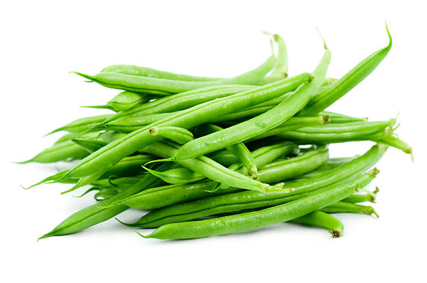


ENGLISH
Cluster beans, commonly known as guar, are a drought-resistant legume widely cultivated in India. They
are primarily grown for their tender pods and seeds, which are rich in dietary fiber and used in various
culinary applications. Here’s a step-by-step guide on their growing mechanism from seed selection to
harvesting:
1] Seed Selection and Sowing:
Begin with high-quality guar seeds that are disease-free and
well-adapted to the local climate. The seeds are typically sown in well-prepared, sandy loam soil with
good drainage. Sowing usually occurs from June to July, coinciding with the onset of the monsoon. The
seeds are planted about 2-3 cm deep, in rows spaced 30-45 cm apart.
2] Germination:
After sowing, the seeds absorb moisture from the soil, initiating the
germination process. Germination occurs when the soil temperature is between 20°C to 30°C. Within 7-10
days, the radicle emerges first, followed by the shoot.
3] Vegetative Growth:
As the seedlings develop, the plant enters a vigorous vegetative growth
phase. The roots penetrate deep into the soil, allowing the plant to access moisture. The stem grows
erect, and trifoliate leaves emerge, contributing to photosynthesis. Adequate sunlight and moderate
rainfall are crucial during this stage.
4] Flowering:
Cluster beans start flowering about 40-60 days after sowing. The flowers are
small and typically yellow or white, emerging in clusters along the stem. This stage is vital for
pollination, which occurs primarily through self-pollination and sometimes with the help of
insects.
5] Pod Formation:
Following successful pollination, the flowers develop into pods. Each pod
contains 5-10 seeds and is typically 5-10 cm long. Pod formation begins approximately 60-75 days after
sowing. Proper watering during this period is essential to ensure healthy pod development.
6] Pest and Disease Management:
Cluster beans may face issues with pests like aphids,
jassids, and caterpillars, as well as diseases such as leaf spot and blight. Regular monitoring and the
application of neem oil or other organic pesticides can help manage pest populations. Crop rotation and
maintaining healthy soil can minimize disease incidence.
7] Seed Development:
As the pods mature, they turn from green to brown, and the seeds inside
develop and harden. This stage lasts about 20-30 days. The plants require minimal water as they approach
maturity, allowing them to withstand drought conditions.
8] Harvesting:
Cluster beans are typically harvested 90-100 days after sowing, once the pods
have dried and turned brown. Harvesting is done by hand, with careful cutting or plucking of the pods to
avoid damage to the plant.
9] Post-Harvest Processing:
After harvesting, the pods are sun-dried for a few days to
reduce moisture content. The seeds are then separated from the pods through threshing. Cleaned seeds are
stored in dry, airtight containers to prevent pest infestations and moisture absorption.
10] Pest Control in Storage:
To protect stored seeds from pests like weevils, it is
important to maintain a dry storage environment. The use of natural repellents, such as dried neem
leaves or pesticide treatments, can help safeguard the seeds during storage.
Throughout the growth cycle, cluster beans thrive in well-drained soil and require careful management of
water and pests to ensure a successful harvest. Their resilience to drought makes them a valuable crop
in arid regions of India.
ENGLISH
తెలుగు
క్లస్టర్ బీన్స్, సాధారణంగా గ్వార్ అని పిలుస్తారు, భారతదేశంలో విస్తృతంగా సాగు చేయబడిన కరువు-నిరోధక
పప్పుదినుసు. వీటిని ప్రధానంగా వాటి లేత కాయలు మరియు విత్తనాల కోసం పెంచుతారు, ఇవి డైటరీ ఫైబర్తో
సమృద్ధిగా ఉంటాయి మరియు వివిధ పాక అనువర్తనాల్లో ఉపయోగించబడతాయి. విత్తన ఎంపిక నుండి కోత వరకు వారి
పెరుగుతున్న విధానంపై దశల వారీ గైడ్ ఇక్కడ ఉంది:
1] విత్తన ఎంపిక మరియు విత్తడం:
వ్యాధి-రహిత మరియు స్థానిక వాతావరణానికి బాగా అనుకూలమైన
అధిక-నాణ్యత గ్వార్ విత్తనాలతో ప్రారంభించండి. విత్తనాలు సాధారణంగా బాగా సిద్ధం చేయబడిన, మంచి పారుదల
ఉన్న ఇసుక లోమ్ నేలలో నాటబడతాయి. విత్తడం సాధారణంగా జూన్ నుండి జూలై వరకు జరుగుతుంది, రుతుపవనాల
ప్రారంభంతో సమానంగా ఉంటుంది. విత్తనాలు 30-45 సెం.మీ దూరంలో ఉన్న వరుసలలో 2-3 సెం.మీ లోతులో
నాటబడతాయి.
2] మొలకెత్తడం:
విత్తిన తర్వాత, విత్తనాలు నేల నుండి తేమను గ్రహించి, అంకురోత్పత్తి
ప్రక్రియను ప్రారంభిస్తాయి. నేల ఉష్ణోగ్రత 20°C నుండి 30°C మధ్య ఉన్నప్పుడు అంకురోత్పత్తి జరుగుతుంది.
7-10 రోజులలో, రేడికల్ మొదట ఉద్భవిస్తుంది, ఆ తర్వాత చిగురు వస్తుంది.
3] ఏపుగా పెరుగుదల:
మొలకలు అభివృద్ధి చెందుతున్నప్పుడు, మొక్క శక్తివంతమైన ఏపుగా ఎదుగుదల
దశలోకి ప్రవేశిస్తుంది. మూలాలు మట్టిలోకి లోతుగా చొచ్చుకుపోతాయి, మొక్క తేమను యాక్సెస్ చేయడానికి
అనుమతిస్తుంది. కాండం నిటారుగా పెరుగుతుంది మరియు ట్రిఫోలియేట్ ఆకులు ఉద్భవించి, కిరణజన్య సంయోగక్రియకు
దోహదం చేస్తాయి. ఈ దశలో తగినంత సూర్యకాంతి మరియు మోస్తరు వర్షపాతం కీలకం.
4] పుష్పించేవి:
క్లస్టర్ బీన్స్ విత్తిన 40-60 రోజుల తర్వాత పుష్పించడం ప్రారంభమవుతుంది.
పువ్వులు చిన్నవి మరియు సాధారణంగా పసుపు లేదా తెలుపు, కాండం వెంట సమూహాలలో ఉద్భవించాయి. ఈ దశ
పరాగసంపర్కానికి చాలా ముఖ్యమైనది, ఇది ప్రధానంగా స్వీయ-పరాగసంపర్కం ద్వారా మరియు కొన్నిసార్లు కీటకాల
సహాయంతో జరుగుతుంది.
5] పాడ్ నిర్మాణం:
విజయవంతమైన పరాగసంపర్కం తరువాత, పువ్వులు కాయలుగా అభివృద్ధి చెందుతాయి.
ప్రతి పాడ్లో 5-10 గింజలు ఉంటాయి మరియు సాధారణంగా 5-10 సెం.మీ పొడవు ఉంటుంది. విత్తిన 60-75 రోజుల
తర్వాత పాడ్ ఏర్పడటం ప్రారంభమవుతుంది. ఈ కాలంలో సరైన నీరు త్రాగుట అనేది ఆరోగ్యకరమైన కాయ అభివృద్ధిని
నిర్ధారించడానికి అవసరం.
6] తెగులు మరియు వ్యాధి నిర్వహణ:
క్లస్టర్ బీన్స్ అఫిడ్స్, జాసిడ్లు మరియు గొంగళి పురుగుల
వంటి తెగుళ్లతో పాటు ఆకు మచ్చ మరియు ముడత వంటి వ్యాధులతో సమస్యలను ఎదుర్కోవచ్చు. క్రమం తప్పకుండా
పర్యవేక్షించడం మరియు వేప నూనె లేదా ఇతర సేంద్రీయ పురుగుమందుల వాడకం పెస్ట్ జనాభాను నిర్వహించడంలో
సహాయపడుతుంది. పంట భ్రమణం మరియు ఆరోగ్యకరమైన నేలను నిర్వహించడం వలన వ్యాధి సంభవనీయతను
తగ్గించవచ్చు.
7] విత్తనాల అభివృద్ధి:
కాయలు పరిపక్వం చెందుతున్నప్పుడు, అవి ఆకుపచ్చ నుండి గోధుమ రంగులోకి
మారుతాయి మరియు లోపల ఉన్న గింజలు అభివృద్ధి చెందుతాయి మరియు గట్టిపడతాయి. ఈ దశ సుమారు 20-30 రోజులు
ఉంటుంది. కరువు పరిస్థితులను తట్టుకోగలిగేలా మొక్కలు పరిపక్వతకు చేరుకున్నప్పుడు వాటికి తక్కువ నీరు
అవసరమవుతుంది.
8] హార్వెస్టింగ్:
క్లస్టర్ బీన్స్ సాధారణంగా విత్తిన 90-100 రోజుల తర్వాత, కాయలు ఎండిపోయి
గోధుమ రంగులోకి మారిన తర్వాత కోయబడతాయి. మొక్కకు నష్టం జరగకుండా కాయలను జాగ్రత్తగా కోయడం లేదా తీయడం
ద్వారా చేతితో కోయడం జరుగుతుంది.
9] పంటకోత తర్వాత ప్రాసెసింగ్:
పంట కోసిన తర్వాత, తేమ శాతాన్ని తగ్గించడానికి కాయలను కొన్ని
రోజులు ఎండలో ఎండబెట్టాలి. అప్పుడు గింజలు నూర్పిడి ద్వారా కాయల నుండి వేరు చేయబడతాయి. శుద్ధి చేసిన
విత్తనాలను పొడి, గాలి చొరబడని కంటైనర్లలో నిల్వ చేసి, చీడపీడల బారిన పడకుండా మరియు తేమను గ్రహించకుండా
ఉంచుతారు.
10] నిల్వలో పెస్ట్ కంట్రోల్:
వీవిల్స్ వంటి తెగుళ్ల నుండి నిల్వ చేసిన విత్తనాలను
రక్షించడానికి, పొడి నిల్వ వాతావరణాన్ని నిర్వహించడం చాలా ముఖ్యం. ఎండిన వేప ఆకులు లేదా పురుగుమందుల
చికిత్సలు వంటి సహజ వికర్షకాలను ఉపయోగించడం, నిల్వ సమయంలో విత్తనాలను రక్షించడంలో సహాయపడుతుంది.
పెరుగుదల చక్రంలో, క్లస్టర్ బీన్స్ బాగా ఎండిపోయిన నేలలో వృద్ధి చెందుతాయి మరియు విజయవంతమైన పంటను
నిర్ధారించడానికి నీరు మరియు తెగుళ్ళను జాగ్రత్తగా నిర్వహించడం అవసరం. కరువును తట్టుకునే వారి సామర్థ్యం
భారతదేశంలోని శుష్క ప్రాంతాలలో వాటిని విలువైన పంటగా చేస్తుంది.
తెలుగు
వినండి
28.SESAME / 28.నువ్వులు


ENGLISH
Sesame, also known as til, is an ancient oilseed crop celebrated for its seeds, which are rich in oil
and nutrients. Here’s a detailed step-by-step mechanism for growing sesame from seed selection to
harvesting:
1] Seed Selection and Sowing:
Start with high-quality, disease-free sesame seeds suited for your local climate. The seeds should be
treated with fungicides to prevent fungal diseases. Sesame is typically sown in the kharif season (June
to August) when soil temperatures are warm. Seeds are planted about 1-2 cm deep in well-drained soil,
with rows spaced 30-45 cm apart.
2] Germination:
Once sown, sesame seeds absorb moisture and begin to germinate, which usually occurs within 7-10 days
under optimal conditions. Soil temperatures around 25°C to 30°C favor good germination. The radicle
emerges first, followed by the shoot.
3] Vegetative Growth:
After germination, sesame plants enter the vegetative phase. The plants develop a deep taproot and erect
stems, with broad leaves emerging along the stem. During this phase, the plants require adequate
sunlight and moisture for healthy growth, typically reaching a height of 50-150 cm.
4] Flowering:
Around 40-60 days after sowing, sesame plants begin to flower. The flowers are white, pink, or purple,
and they are borne in clusters along the stem. Sesame is mostly self-pollinating, but bees and other
insects can also assist in pollination. Flowering lasts for about 2-3 weeks.
5] Pod Formation:
After successful pollination, the flowers develop into elongated pods that contain the seeds. This stage
usually occurs 70-90 days after sowing. Each pod can contain 50-80 seeds. Adequate moisture during this
phase is crucial for good seed development, but excessive rainfall can lead to disease.
6] Pest and Disease Management:
Sesame can be affected by pests such as leaf beetles, aphids, and diseases like wilt and downy mildew.
Regular monitoring of the crop is essential. Integrated Pest Management (IPM) strategies, including neem
oil and biological control methods, can effectively manage these issues.
7] Seed Development:
As the pods mature, the seeds develop and harden. This process takes about 20-30 days, during which the
plants begin to yellow. Watering should be reduced to promote drying of the plants, preparing them for
harvest.
8] Harvesting:
Sesame is harvested when the pods are fully mature and dry, usually 90-120 days after sowing. The plants
are cut at the base and left to dry in the field for a few days. Threshing is then done to separate the
seeds from the pods, which can be done manually or mechanically.
9] Post-Harvest Processing:
After threshing, sesame seeds are cleaned and dried to reduce moisture content. Proper storage in cool,
dry conditions is essential to prevent spoilage and pest infestations. Airtight containers are
recommended to maintain seed quality.
10] Pest Control in Storage:
To protect stored sesame seeds, use natural repellents or storage techniques such as diatomaceous earth
to deter pests. Regular inspections are necessary to ensure the seeds remain in good condition.
Throughout its growth, sesame thrives in warm climates with well-drained soil and benefits from careful
management at each stage to ensure a successful and high-yielding harvest.
ENGLISH
తెలుగు
నువ్వులు, టిల్ అని కూడా పిలుస్తారు, ఇది నూనె మరియు పోషకాలతో సమృద్ధిగా ఉన్న దాని విత్తనాల కోసం
జరుపుకునే పురాతన నూనెగింజల పంట. విత్తనాల ఎంపిక నుండి కోత వరకు నువ్వులను పెంచడానికి ఇక్కడ వివరణాత్మక
దశల వారీ విధానం ఉంది:
1] విత్తన ఎంపిక మరియు విత్తడం:
మీ స్థానిక వాతావరణానికి సరిపోయే అధిక-నాణ్యత, వ్యాధి-రహిత
నువ్వుల గింజలతో ప్రారంభించండి. శిలీంధ్ర వ్యాధులను నివారించడానికి విత్తనాలను శిలీంద్రనాశకాలతో చికిత్స
చేయాలి. నువ్వులు సాధారణంగా ఖరీఫ్ సీజన్లో (జూన్ నుండి ఆగస్టు వరకు) నేల ఉష్ణోగ్రతలు వెచ్చగా
ఉన్నప్పుడు విత్తుతారు. విత్తనాలు 30-45 సెం.మీ.ల దూరంలో ఉన్న, బాగా ఎండిపోయిన నేలలో 1-2 సెం.మీ లోతులో
నాటబడతాయి.
2] అంకురోత్పత్తి:
ఒకసారి విత్తిన, నువ్వులు తేమను గ్రహించి మొలకెత్తడం ప్రారంభిస్తాయి, ఇది
సాధారణంగా సరైన పరిస్థితుల్లో 7-10 రోజులలోపు జరుగుతుంది. 25°C నుండి 30°C వరకు నేల ఉష్ణోగ్రతలు మంచి
అంకురోత్పత్తికి అనుకూలంగా ఉంటాయి. రేడికల్ మొదట ఉద్భవిస్తుంది, తరువాత షూట్ అవుతుంది.
3] ఏపుగా పెరుగుదల:
అంకురోత్పత్తి తరువాత, నువ్వులు మొక్కలు ఏపుగా ఉండే దశలోకి
ప్రవేశిస్తాయి. మొక్కలు లోతైన వృక్షమూలాన్ని మరియు నిటారుగా ఉండే కాండంను అభివృద్ధి చేస్తాయి, కాండం
వెంట విశాలమైన ఆకులు వెలువడతాయి. ఈ దశలో, మొక్కలు ఆరోగ్యకరమైన ఎదుగుదలకు తగినంత సూర్యరశ్మి మరియు తేమ
అవసరం, సాధారణంగా 50-150 సెం.మీ ఎత్తుకు చేరుకుంటాయి.
4] పూలు పూయడం:
విత్తిన 40-60 రోజుల తర్వాత నువ్వుల మొక్కలు పుష్పించడం ప్రారంభిస్తాయి.
పువ్వులు తెలుపు, గులాబీ లేదా ఊదా రంగులో ఉంటాయి మరియు అవి కాండం వెంట గుత్తులుగా ఉంటాయి. నువ్వులు
ఎక్కువగా స్వీయ-పరాగసంపర్కం, కానీ తేనెటీగలు మరియు ఇతర కీటకాలు కూడా పరాగసంపర్కంలో సహాయపడతాయి.
పుష్పించేది దాదాపు 2-3 వారాల పాటు ఉంటుంది.
5] పాడ్ ఫార్మేషన్:
విజయవంతమైన పరాగసంపర్కం తర్వాత, పువ్వులు విత్తనాలను కలిగి ఉన్న
పొడుగుచేసిన పాడ్లుగా అభివృద్ధి చెందుతాయి. ఈ దశ సాధారణంగా విత్తిన 70-90 రోజుల తర్వాత వస్తుంది. ప్రతి
పాడ్ 50-80 విత్తనాలను కలిగి ఉంటుంది. ఈ దశలో తగినంత తేమ మంచి విత్తనాల అభివృద్ధికి కీలకం, కానీ అధిక
వర్షపాతం వ్యాధికి దారి తీస్తుంది.
6] తెగుళ్లు మరియు వ్యాధి నిర్వహణ:
నువ్వులు ఆకు బీటిల్స్, అఫిడ్స్ మరియు విల్ట్ మరియు డౌనీ
బూజు వంటి వ్యాధుల ద్వారా ప్రభావితమవుతాయి. పంటను క్రమం తప్పకుండా పర్యవేక్షించడం అవసరం. వేపనూనె మరియు
జీవ నియంత్రణ పద్ధతులతో సహా ఇంటిగ్రేటెడ్ పెస్ట్ మేనేజ్మెంట్ (IPM) వ్యూహాలు ఈ సమస్యలను సమర్థవంతంగా
నిర్వహించగలవు.
7] విత్తన అభివృద్ధి:
కాయలు పరిపక్వం చెందడంతో, గింజలు అభివృద్ధి చెందుతాయి మరియు
గట్టిపడతాయి. ఈ ప్రక్రియ 20-30 రోజులు పడుతుంది, ఈ సమయంలో మొక్కలు పసుపు రంగులోకి మారుతాయి. మొక్కలు
ఎండబెట్టడాన్ని ప్రోత్సహించడానికి, వాటిని కోతకు సిద్ధం చేయడానికి నీరు త్రాగుట తగ్గించాలి.
8] కోత:
నువ్వులు పూర్తిగా పక్వానికి వచ్చి ఎండిపోయినప్పుడు, సాధారణంగా విత్తిన 90-120
రోజుల తర్వాత నువ్వులు పండించబడతాయి. మొక్కలను అడుగుభాగంలో కోసి కొన్ని రోజులు పొలంలో ఆరబెట్టాలి. కాయల
నుండి విత్తనాలను వేరు చేయడానికి నూర్పిడి చేయడం జరుగుతుంది, ఇది మానవీయంగా లేదా యాంత్రికంగా
చేయవచ్చు.
9] పోస్ట్-హార్వెస్ట్ ప్రాసెసింగ్:
నూర్పిడి చేసిన తర్వాత, తేమ శాతాన్ని తగ్గించడానికి
నువ్వులను శుభ్రం చేసి ఎండబెట్టాలి. చెడిపోవడం మరియు తెగుళ్ల బారిన పడకుండా ఉండటానికి చల్లని, పొడి
పరిస్థితులలో సరైన నిల్వ అవసరం. విత్తనాల నాణ్యతను నిర్వహించడానికి గాలి చొరబడని కంటైనర్లు సిఫార్సు
చేయబడ్డాయి.
10] నిల్వలో పెస్ట్ కంట్రోల్:
నిల్వ చేసిన నువ్వుల గింజలను రక్షించడానికి, తెగుళ్లను
అరికట్టడానికి సహజ వికర్షకాలు లేదా డయాటోమాసియస్ ఎర్త్ వంటి నిల్వ పద్ధతులను ఉపయోగించండి. విత్తనాలు
మంచి స్థితిలో ఉన్నాయని నిర్ధారించుకోవడానికి రెగ్యులర్ తనిఖీలు అవసరం.
దాని ఎదుగుదల అంతటా, నువ్వులు బాగా ఎండిపోయిన నేలతో వెచ్చని వాతావరణంలో వర్ధిల్లుతాయి మరియు విజయవంతమైన
మరియు అధిక-దిగుబడినిచ్చే పంటను నిర్ధారించడానికి ప్రతి దశలో జాగ్రత్తగా నిర్వహించడం ద్వారా ప్రయోజనాలు
పొందుతాయి.
తెలుగు
వినండి
29.MUNG BEAN(GREEN GRAM) / 29.పెసర


ENGLISH
Mung beans, known as green gram, are a popular legume in India, prized for their nutritional value and
versatility in various dishes. They are fast-growing and well-suited to warm climates. Here’s a
step-by-step guide on the growing mechanism of mung beans from seed selection to harvesting:
1] Seed Selection and Sowing:
Choose high-quality, certified mung bean seeds that are free
from diseases. Mung beans thrive in well-drained, sandy loam or loamy soil. Sowing typically occurs in
the pre-monsoon season (March-April) or post-monsoon season (August-September). Seeds are planted about
2-3 cm deep in rows spaced 30-45 cm apart.
2] Germination:
After sowing, mung bean seeds absorb moisture and begin the germination
process. Optimal soil temperatures for germination range from 20°C to 35°C. Within 4-7 days, the radicle
emerges, followed by the shoot, signaling the start of seedling development.
3] Vegetative Growth:
The seedlings enter a vigorous vegetative growth phase. The plant
develops a strong root system, with leaves emerging in pairs along the stem. Mung beans typically reach
a height of 30-60 cm. This phase lasts about 15-25 days, during which adequate sunlight and moisture are
essential.
4] Flowering:
Mung bean plants begin to flower approximately 30-40 days after sowing. The
flowers are small, typically yellow or white, and appear in clusters. Mung beans are primarily
self-pollinating, though they can also attract pollinators like bees.
5] Pod Formation:
Following successful pollination, flowers develop into pods. Each pod
usually contains 5-7 seeds. Pod formation occurs around 40-50 days after sowing. The plants require
sufficient water and nutrients during this period to support healthy pod development.
6] Pest and Disease Management:
Mung beans can be affected by pests such as aphids, thrips,
and pod borers, as well as diseases like powdery mildew and root rot. Regular monitoring is important.
Organic pesticides, such as neem oil, can effectively control pests, while crop rotation and resistant
varieties can help manage diseases.
7] Seed Development:
As the pods mature, they change color from green to brown, and the seeds
inside harden. This stage lasts about 15-20 days. The plants require minimal water as they approach
maturity, which helps improve seed quality.
8] Harvesting:
Mung beans are typically harvested 70-90 days after sowing, once the pods have
dried and turned brown. Harvesting is done manually by cutting the plants at the base or plucking the
pods to avoid damaging the seeds.
9] Post-Harvest Processing:
After harvesting, the plants are allowed to dry in the sun for a
few days to reduce moisture content. The seeds are separated from the pods through threshing. Cleaned
seeds should be dried further if necessary and stored in a cool, dry place to prevent spoilage.
10] Pest Control in Storage:
To protect stored mung beans from pests like weevils, ensure
that storage containers are airtight and kept in a cool environment. Natural repellents, such as dried
neem leaves or diatomaceous earth, can help prevent infestations.
Throughout the growing cycle, mung beans are relatively easy to cultivate, requiring well-drained soil
and careful management of water and pests to ensure a successful yield. Their short growth duration
makes them a valuable crop for rotation and sustainable agriculture.
ENGLISH
తెలుగు
ముంగ్ బీన్స్, గ్రీన్ గ్రామ్ అని పిలుస్తారు, భారతదేశంలో ప్రసిద్ధ పప్పుదినుసులు, వాటి పోషక విలువలు
మరియు వివిధ వంటలలో బహుముఖ ప్రజ్ఞకు విలువైనవి. ఇవి వేగంగా పెరుగుతాయి మరియు వెచ్చని వాతావరణాలకు బాగా
సరిపోతాయి. విత్తన ఎంపిక నుండి కోత వరకు ముంగ్ బీన్స్ పెరుగుతున్న విధానంపై ఇక్కడ దశల వారీ గైడ్
ఉంది:
1] విత్తన ఎంపిక మరియు విత్తడం:
వ్యాధులు లేని అధిక-నాణ్యత, ధృవీకరించబడిన ముంగ్ బీన్
విత్తనాలను ఎంచుకోండి. ముంగ్ బీన్స్ బాగా ఎండిపోయిన, ఇసుక లోమ్ లేదా లోమీ నేలలో వృద్ధి చెందుతాయి.
విత్తడం సాధారణంగా రుతుపవనాల ముందు (మార్చి-ఏప్రిల్) లేదా రుతుపవనాల అనంతర కాలంలో (ఆగస్టు-సెప్టెంబర్)
జరుగుతుంది. విత్తనాలు 30-45 సెం.మీ దూరంలో ఉన్న వరుసలలో 2-3 సెం.మీ లోతులో నాటబడతాయి.
2] మొలకెత్తడం:
విత్తిన తర్వాత, ముంగ్ బీన్ గింజలు తేమను గ్రహించి, అంకురోత్పత్తి ప్రక్రియను
ప్రారంభిస్తాయి. అంకురోత్పత్తికి సరైన నేల ఉష్ణోగ్రతలు 20°C నుండి 35°C వరకు ఉంటాయి. 4-7 రోజులలో,
రేడికల్ ఉద్భవిస్తుంది, దాని తర్వాత రెమ్మ, మొలకల అభివృద్ధి ప్రారంభాన్ని సూచిస్తుంది.
3] ఏపుగా పెరుగుదల:
మొలకలు శక్తివంతమైన ఏపుగా ఎదుగుదల దశలోకి ప్రవేశిస్తాయి. మొక్క బలమైన
రూట్ వ్యవస్థను అభివృద్ధి చేస్తుంది, కాండం వెంట ఆకులు జంటగా ఉద్భవించాయి. ముంగ్ బీన్స్ సాధారణంగా 30-60
సెం.మీ ఎత్తుకు చేరుకుంటాయి. ఈ దశ సుమారు 15-25 రోజులు ఉంటుంది, ఈ సమయంలో తగినంత సూర్యకాంతి మరియు తేమ
అవసరం.
4] పుష్పించేవి:
ముంగ్ బీన్ మొక్కలు విత్తిన సుమారు 30-40 రోజుల తర్వాత పుష్పించడం
ప్రారంభిస్తాయి. పువ్వులు చిన్నవి, సాధారణంగా పసుపు లేదా తెలుపు, మరియు గుత్తులుగా కనిపిస్తాయి. ముంగ్
బీన్స్ ప్రధానంగా స్వీయ-పరాగసంపర్కం, అయినప్పటికీ అవి తేనెటీగలు వంటి పరాగ సంపర్కాలను కూడా
ఆకర్షించగలవు.
5] పాడ్ నిర్మాణం:
విజయవంతమైన పరాగసంపర్కం తరువాత, పువ్వులు కాయలుగా అభివృద్ధి చెందుతాయి.
ప్రతి పాడ్ సాధారణంగా 5-7 విత్తనాలను కలిగి ఉంటుంది. విత్తిన 40-50 రోజుల తర్వాత పాడ్ ఏర్పడుతుంది. ఈ
కాలంలో మొక్కలు ఆరోగ్యకరమైన కాయ అభివృద్ధికి తోడ్పడేందుకు తగినన్ని నీరు మరియు పోషకాలు
అవసరమవుతాయి.
6] తెగుళ్లు మరియు వ్యాధి నిర్వహణ:
ముంగ్ బీన్స్ను అఫిడ్స్, త్రిప్స్ మరియు పాడ్ బోర్స్
వంటి తెగుళ్లు, అలాగే బూజు తెగులు మరియు వేరుకుళ్లు వంటి వ్యాధులు ప్రభావితం చేయవచ్చు. రెగ్యులర్
పర్యవేక్షణ ముఖ్యం. వేప నూనె వంటి సేంద్రీయ పురుగుమందులు తెగుళ్లను సమర్థవంతంగా నియంత్రించగలవు, అయితే
పంట మార్పిడి మరియు నిరోధక రకాలు వ్యాధులను నియంత్రించడంలో సహాయపడతాయి.
7] విత్తన అభివృద్ధి:
కాయలు పరిపక్వం చెందడంతో, అవి ఆకుపచ్చ నుండి గోధుమ రంగులోకి మారుతాయి
మరియు లోపల గింజలు గట్టిపడతాయి. ఈ దశ సుమారు 15-20 రోజులు ఉంటుంది. మొక్కలు పరిపక్వ దశకు
చేరుకున్నప్పుడు వాటికి కొద్దిపాటి నీరు అవసరమవుతుంది, ఇది విత్తనాల నాణ్యతను మెరుగుపరచడంలో
సహాయపడుతుంది.
8] కోత:
ముంగ్ బీన్స్ సాధారణంగా విత్తిన 70-90 రోజుల తర్వాత, కాయలు ఎండిపోయి గోధుమ రంగులోకి
మారిన తర్వాత కోయబడతాయి. విత్తనాలు దెబ్బతినకుండా ఉండేందుకు మొక్కలను బేస్ వద్ద కత్తిరించడం లేదా కాయలను
తీయడం ద్వారా మాన్యువల్గా కోత జరుగుతుంది.
9] పోస్ట్-హార్వెస్ట్ ప్రాసెసింగ్:
పంట కోసిన తర్వాత, తేమ శాతాన్ని తగ్గించడానికి మొక్కలు
కొన్ని రోజుల పాటు ఎండలో ఆరనివ్వాలి. గింజలు నూర్పిడి ద్వారా కాయల నుండి వేరు చేయబడతాయి. శుభ్రం చేసిన
విత్తనాలను అవసరమైతే మరింత ఎండబెట్టాలి మరియు చెడిపోకుండా ఉండటానికి చల్లని, పొడి ప్రదేశంలో నిల్వ
చేయాలి.
10] నిల్వలో పెస్ట్ కంట్రోల్:
నిల్వ ఉంచిన ముంగ్ బీన్లను వీవిల్స్ వంటి తెగుళ్ల నుండి
రక్షించడానికి, నిల్వ కంటైనర్లు గాలి చొరబడనివి మరియు చల్లని వాతావరణంలో ఉండేలా చూసుకోండి. ఎండిన వేప
ఆకులు లేదా డయాటోమాసియస్ ఎర్త్ వంటి సహజ వికర్షకాలు ముట్టడిని నిరోధించడంలో సహాయపడతాయి.
పెరుగుతున్న చక్రంలో, ముంగ్ బీన్స్ సాగు చేయడం చాలా సులభం, విజయవంతమైన దిగుబడిని నిర్ధారించడానికి బాగా
ఎండిపోయిన నేల మరియు నీరు మరియు తెగుళ్ళను జాగ్రత్తగా నిర్వహించడం అవసరం. వారి స్వల్ప పెరుగుదల వ్యవధి
వాటిని భ్రమణ మరియు స్థిరమైన వ్యవసాయానికి విలువైన పంటగా చేస్తుంది.
తెలుగు
వినండి
30.URAD BEAN(BLACK GRAM) / 30.మినుములు


ENGLISH
Urad beans, also known as black gram, are a significant pulse crop in India, valued for their high
protein content and culinary versatility. They are well-suited for warm climates and can be grown in
various soil types. Here’s a step-by-step guide on their growing mechanism from seed selection to
harvesting:
1] Seed Selection and Sowing:
Start with high-quality, certified urad bean seeds that are
resistant to common diseases. The seeds should be sown in well-drained soil that is rich in organic
matter. Sowing typically occurs in the kharif season (June to July) after the onset of monsoon rains.
Seeds are planted about 2-5 cm deep in rows spaced 30-40 cm apart.
2] Germination:
After sowing, urad bean seeds absorb moisture and begin to germinate. Optimal
soil temperatures for germination range from 20°C to 35°C. Germination occurs within 5-10 days, with the
radicle emerging first, followed by the shoot.
3] Vegetative Growth:
The seedlings enter a vigorous vegetative phase, developing a deep root
system and erect stems. Leaves are trifoliate and grow in pairs along the stem. This phase lasts about
20-30 days, during which adequate sunlight and moderate rainfall are essential for healthy
growth.
4] Flowering:
Urad bean plants start flowering approximately 30-40 days after sowing. The
flowers are small, typically white or purple, and are borne in clusters. The plant is primarily
self-pollinating, although insects can aid in pollination.
5] Pod Formation:
Following successful pollination, the flowers develop into pods. Each pod
usually contains 2-4 seeds. Pod formation occurs around 40-60 days after sowing. Sufficient moisture and
nutrients are crucial during this stage to ensure healthy pod and seed development.
6] Pest and Disease Management:
Urad beans can be susceptible to pests like aphids, thrips,
and beetles, as well as diseases such as wilt and root rot. Regular monitoring is essential. Organic
pest control methods, such as neem oil or insecticidal soaps, can effectively manage pests, while crop
rotation helps prevent disease buildup in the soil.
7] Seed Development:
As the pods mature, they change color from green to brown, and the
seeds inside harden. This stage lasts about 15-20 days. Watering should be minimized to enhance seed
quality as the plants approach maturity.
8] Harvesting:
Urad beans are typically harvested 90-120 days after sowing, once the pods
have dried and turned brown. Harvesting is done manually by cutting the plants at the base or pulling
them out to prevent seed loss.
9] Post-Harvest Processing:
After harvesting, the plants are sun-dried for a few days to
reduce moisture content. The seeds are separated from the pods through threshing. Cleaned seeds should
be dried further if needed and stored in a cool, dry place to prevent spoilage.
10] Pest Control in Storage:
To protect stored urad beans from pests like weevils, ensure
that storage containers are airtight and kept in a cool, dry environment. The use of natural repellents,
such as dried neem leaves or diatomaceous earth, can help deter pests during storage.
Throughout the growth cycle, urad beans are relatively easy to cultivate, requiring well-drained soil
and proper management of water and pests to ensure a successful yield. Their nutritional benefits and
adaptability make them an important crop in sustainable agriculture.
ENGLISH
తెలుగు
ఉరాడ్ బీన్స్, నల్ల ద్రాక్ష అని కూడా పిలుస్తారు, భారతదేశంలో ఒక ముఖ్యమైన పప్పు పంట, వాటి అధిక ప్రోటీన్
కంటెంట్ మరియు పాక వైవిధ్యతకు విలువైనది. ఇవి వెచ్చని వాతావరణాలకు బాగా సరిపోతాయి మరియు వివిధ రకాల
నేలల్లో పెంచవచ్చు. విత్తన ఎంపిక నుండి కోత వరకు వారి పెరుగుతున్న విధానంపై దశల వారీ గైడ్ ఇక్కడ
ఉంది:
1] విత్తన ఎంపిక మరియు విత్తడం:
సాధారణ వ్యాధులకు నిరోధకత కలిగిన అధిక-నాణ్యత, ధృవీకరించబడిన
ఉరద్ గింజలతో ప్రారంభించండి. సేంద్రియ పదార్ధాలు అధికంగా ఉండే బాగా ఎండిపోయిన నేలలో విత్తనాలను నాటాలి.
రుతుపవన వర్షాల ప్రారంభమైన తర్వాత ఖరీఫ్ సీజన్లో (జూన్ నుండి జూలై వరకు) విత్తడం సాధారణంగా జరుగుతుంది.
విత్తనాలు 30-40 సెం.మీ దూరంలో ఉన్న వరుసలలో 2-5 సెం.మీ లోతులో నాటబడతాయి.
2] అంకురోత్పత్తి:
విత్తిన తర్వాత, ఉరడ్ గింజలు తేమను గ్రహించి మొలకెత్తడం ప్రారంభిస్తాయి.
అంకురోత్పత్తికి సరైన నేల ఉష్ణోగ్రతలు 20°C నుండి 35°C వరకు ఉంటాయి. అంకురోత్పత్తి 5-10 రోజులలో
సంభవిస్తుంది, మొదట రేడికల్ ఉద్భవిస్తుంది, తరువాత చిగురు వస్తుంది.
3] ఏపుగా పెరగడం:
మొలకల లోతైన రూట్ వ్యవస్థ మరియు నిటారుగా ఉండే కాండం అభివృద్ధి చెందడం
ద్వారా శక్తివంతమైన ఏపుగా ఉండే దశలోకి ప్రవేశిస్తాయి. ఆకులు ట్రైఫోలియేట్గా ఉంటాయి మరియు కాండం వెంట
జంటగా పెరుగుతాయి. ఈ దశ సుమారు 20-30 రోజులు ఉంటుంది, ఈ సమయంలో తగినంత సూర్యకాంతి మరియు మితమైన వర్షపాతం
ఆరోగ్యకరమైన పెరుగుదలకు అవసరం.
4] పుష్పించేవి:
ఉరద్ బీన్ మొక్కలు విత్తిన సుమారు 30-40 రోజుల తర్వాత పుష్పించడం
ప్రారంభిస్తాయి. పువ్వులు చిన్నవి, సాధారణంగా తెలుపు లేదా ఊదా రంగులో ఉంటాయి మరియు సమూహాలలో పుడతాయి.
మొక్క ప్రధానంగా స్వీయ-పరాగసంపర్కం, అయినప్పటికీ కీటకాలు పరాగసంపర్కంలో సహాయపడతాయి.
5] పాడ్ నిర్మాణం:
విజయవంతమైన పరాగసంపర్కం తరువాత, పువ్వులు కాయలుగా అభివృద్ధి చెందుతాయి.
ప్రతి పాడ్ సాధారణంగా 2-4 విత్తనాలను కలిగి ఉంటుంది. విత్తిన 40-60 రోజుల తర్వాత పాడ్ ఏర్పడుతుంది.
ఆరోగ్యకరమైన కాయ మరియు విత్తనాల అభివృద్ధిని నిర్ధారించడానికి ఈ దశలో తగినంత తేమ మరియు పోషకాలు
కీలకం.
6] పెస్ట్ అండ్ డిసీజ్ మేనేజ్మెంట్:
ఉరాడ్ బీన్స్ అఫిడ్స్, త్రిప్స్ మరియు బీటిల్స్ వంటి
తెగుళ్లకు, అలాగే విల్ట్ మరియు రూట్ రాట్ వంటి వ్యాధులకు లోనవుతుంది. క్రమమైన పర్యవేక్షణ అవసరం. వేపనూనె
లేదా క్రిమిసంహారక సబ్బులు వంటి సేంద్రీయ తెగులు నియంత్రణ పద్ధతులు, తెగుళ్లను సమర్థవంతంగా
నిర్వహించగలవు, అయితే పంట భ్రమణ మట్టిలో వ్యాధిని నిరోధించడంలో సహాయపడుతుంది.
7] విత్తన అభివృద్ధి:
కాయలు పరిపక్వం చెందడంతో, అవి ఆకుపచ్చ నుండి గోధుమ రంగులోకి మారుతాయి
మరియు లోపల గింజలు గట్టిపడతాయి. ఈ దశ సుమారు 15-20 రోజులు ఉంటుంది. మొక్కలు పరిపక్వ దశకు
చేరుకున్నప్పుడు విత్తనాల నాణ్యతను పెంచడానికి నీరు త్రాగుట తగ్గించాలి.
8] కోత:
ఉరాడ్ బీన్స్ సాధారణంగా విత్తిన 90-120 రోజుల తర్వాత, కాయలు ఎండిపోయి గోధుమ
రంగులోకి మారిన తర్వాత కోయబడతాయి. విత్తన నష్టాన్ని నివారించడానికి మొక్కలను అడుగుభాగంలో కత్తిరించడం
లేదా వాటిని బయటకు తీయడం ద్వారా మాన్యువల్గా హార్వెస్టింగ్ జరుగుతుంది.
9] పోస్ట్-హార్వెస్ట్ ప్రాసెసింగ్:
పంట కోసిన తర్వాత, తేమ శాతాన్ని తగ్గించడానికి మొక్కలను
కొన్ని రోజుల పాటు ఎండలో ఎండబెట్టాలి. గింజలు నూర్పిడి ద్వారా కాయల నుండి వేరు చేయబడతాయి. శుభ్రం చేసిన
విత్తనాలను అవసరమైతే మరింత ఎండబెట్టి, చెడిపోకుండా ఉండటానికి చల్లని, పొడి ప్రదేశంలో నిల్వ
చేయాలి.
10] నిల్వలో చీడపీడల నియంత్రణ:
నులిపురుగుల వంటి చీడపీడల నుండి నిల్వ ఉంచిన ఉరద్ గింజలను
రక్షించడానికి, నిల్వ కంటైనర్లు గాలి చొరబడనివి మరియు చల్లని, పొడి వాతావరణంలో ఉండేలా చూసుకోండి. ఎండిన
వేప ఆకులు లేదా డయాటోమాసియస్ ఎర్త్ వంటి సహజ వికర్షకాలను ఉపయోగించడం నిల్వ సమయంలో తెగుళ్లను
నిరోధించడంలో సహాయపడుతుంది.
పెరుగుదల చక్రంలో, ఉరడ్ బీన్స్ సాగు చేయడం చాలా సులభం, విజయవంతమైన దిగుబడిని నిర్ధారించడానికి బాగా
ఎండిపోయిన నేల మరియు నీరు మరియు తెగుళ్ళ యొక్క సరైన నిర్వహణ అవసరం. వాటి పోషక ప్రయోజనాలు మరియు అనుకూలత
వాటిని స్థిరమైన వ్యవసాయంలో ముఖ్యమైన పంటగా చేస్తాయి.
తెలుగు
వినండి
31.PEANUTS(MOONGPHALI) / 31.వేరుశెనగ


ENGLISH
Peanuts, commonly known as moongphali in India, are a popular legume valued for their nutritional
content and culinary uses. They thrive in warm climates and well-drained sandy loam soils. Here’s a
step-by-step guide on their growing mechanism from seed selection to harvesting:
1] Seed selection and Sowing:
Select high-quality, disease-free peanut seeds, preferably
certified varieties suited to the local climate. Sowing typically occurs in the pre-monsoon season
(April to May) or post-monsoon season (August to September). Seeds are planted about 5 cm deep in
well-prepared rows spaced 30-45 cm apart.
2] Germination:
After sowing, peanut seeds absorb moisture from the soil, initiating the
germination process. Optimal soil temperatures for germination range from 20°C to 30°C. Germination
occurs within 7-10 days, with the emergence of the radicle followed by the shoot.
3] Vegetative Growth:
Peanut plants enter a vigorous vegetative growth phase after
germination. The plants develop a strong root system, and the stem grows upright with compound leaves.
This phase lasts about 30-40 days, during which adequate sunlight and moisture are essential for healthy
growth.
4] Flowering:
Peanuts begin to flower approximately 30-45 days after sowing. The flowers are
yellow and typically bloom in clusters. After pollination, the flower stalks elongate and bend downward,
allowing the fertilized ovary to penetrate the soil, forming the peanut pods.
5] Pod Formation:
As the flower stalks penetrate the soil, pods develop underground. Each
pod typically contains 1-3 seeds. Pod formation occurs around 60-90 days after sowing. It’s crucial to
maintain adequate soil moisture during this period to support healthy pod development.
6] Pest and Disease Management:
Peanuts can be affected by pests such as leaf-eating
caterpillars, aphids, and root-knot nematodes, as well as diseases like rust and fungal infections.
Regular monitoring is important. Organic pesticides, such as neem oil, can effectively control pests,
while crop rotation and resistant varieties help manage diseases.
7] Seed Development:
As the pods mature, they change color, and the seeds inside develop and
harden. This stage lasts about 30-40 days. Watering should be reduced as the plants approach maturity to
enhance seed quality.
8] Harvesting:
Peanuts are typically harvested 120-150 days after sowing, once the leaves
start to yellow and the pods are fully developed. Harvesting is done manually by pulling the plants from
the ground to avoid damaging the pods.
9] Post-Harvest Processing:
After harvesting, the plants are sun-dried for a few days to
reduce moisture content. The pods are separated from the plants through threshing. Cleaned peanuts
should be dried further if necessary and stored in a cool, dry place to prevent spoilage.
10] Pest Control in Storage:
To protect stored peanuts from pests like weevils, ensure that
storage containers are airtight and kept in a cool environment. Natural repellents, such as dried neem
leaves or diatomaceous earth, can help deter infestations during storage.
Throughout the growing cycle, peanuts are relatively easy to cultivate, requiring well-drained soil and
careful management of water and pests to ensure a successful yield. Their nutritional benefits and
versatility make them a valuable crop in sustainable agriculture.
ENGLISH
తెలుగు
భారతదేశంలో సాధారణంగా మూంగ్ఫాలి అని పిలువబడే వేరుశెనగలు, వాటి పోషక పదార్ధాలు మరియు పాక ఉపయోగాలకు
విలువైన ఒక ప్రసిద్ధ పప్పుదినుసు. ఇవి వెచ్చని వాతావరణంలో మరియు బాగా ఎండిపోయిన ఇసుక లోమ్ నేలల్లో
వృద్ధి చెందుతాయి. విత్తన ఎంపిక నుండి కోత వరకు వారి పెరుగుతున్న విధానంపై దశల వారీ గైడ్ ఇక్కడ
ఉంది:
1] విత్తన ఎంపిక మరియు విత్తడం:
అధిక-నాణ్యత, వ్యాధి-రహిత వేరుశెనగ గింజలు, స్థానిక
వాతావరణానికి తగినట్లుగా ధృవీకరించబడిన రకాలను ఎంచుకోండి. విత్తడం సాధారణంగా రుతుపవనాల ముందు (ఏప్రిల్
నుండి మే) లేదా రుతుపవనాల అనంతర కాలంలో (ఆగస్టు నుండి సెప్టెంబర్ వరకు) జరుగుతుంది. విత్తనాలు 30-45
సెం.మీ దూరంలో ఉన్న బాగా సిద్ధం చేయబడిన వరుసలలో 5 సెం.మీ లోతులో నాటబడతాయి.
2] అంకురోత్పత్తి:
విత్తిన తర్వాత, వేరుశెనగ గింజలు నేల నుండి తేమను గ్రహించి,
అంకురోత్పత్తి ప్రక్రియను ప్రారంభిస్తాయి. అంకురోత్పత్తికి సరైన నేల ఉష్ణోగ్రతలు 20°C నుండి 30°C వరకు
ఉంటాయి. అంకురోత్పత్తి 7-10 రోజులలో సంభవిస్తుంది, రెడికల్ యొక్క ఆవిర్భావం తర్వాత చిగురు
వస్తుంది.
3] ఏపుగా పెరుగుదల:
వేరుశెనగ మొక్కలు అంకురోత్పత్తి తర్వాత శక్తివంతమైన ఏపుగా ఎదుగుదల
దశలోకి ప్రవేశిస్తాయి. మొక్కలు బలమైన రూట్ వ్యవస్థను అభివృద్ధి చేస్తాయి మరియు కాండం సమ్మేళనం ఆకులతో
నిటారుగా పెరుగుతుంది. ఈ దశ సుమారు 30-40 రోజులు ఉంటుంది, ఈ సమయంలో తగినంత సూర్యరశ్మి మరియు తేమ
ఆరోగ్యకరమైన పెరుగుదలకు అవసరం.
4] పుష్పించేది:
వేరుశెనగలు విత్తిన సుమారు 30-45 రోజుల తర్వాత పుష్పించడం ప్రారంభిస్తాయి.
పువ్వులు పసుపు రంగులో ఉంటాయి మరియు సాధారణంగా గుత్తులుగా వికసిస్తాయి. పరాగసంపర్కం తర్వాత, పూల కాండాలు
పొడుగుగా మరియు క్రిందికి వంగి, ఫలదీకరణ అండాశయం నేలలోకి చొచ్చుకుపోయేలా చేస్తుంది, వేరుశెనగ కాయలను
ఏర్పరుస్తుంది.
5] పాడ్ నిర్మాణం:
పూల కాండాలు నేలలోకి చొచ్చుకుపోవడంతో, కాయలు భూగర్భంలో అభివృద్ధి
చెందుతాయి. ప్రతి పాడ్ సాధారణంగా 1-3 విత్తనాలను కలిగి ఉంటుంది. విత్తిన 60-90 రోజుల తర్వాత పాడ్
ఏర్పడుతుంది. ఆరోగ్యకరమైన పాడ్ అభివృద్ధికి తోడ్పడటానికి ఈ కాలంలో తగినంత నేల తేమను నిర్వహించడం చాలా
కీలకం.
6] పెస్ట్ మరియు డిసీజ్ మేనేజ్మెంట్:
వేరుశెనగ ఆకు తినే గొంగళి పురుగులు, అఫిడ్స్ మరియు
వేరు-నాట్ నెమటోడ్లు, అలాగే తుప్పు మరియు ఫంగల్ ఇన్ఫెక్షన్ వంటి వ్యాధుల ద్వారా ప్రభావితమవుతుంది.
రెగ్యులర్ పర్యవేక్షణ ముఖ్యం. వేప నూనె వంటి సేంద్రీయ పురుగుమందులు తెగుళ్లను సమర్థవంతంగా
నియంత్రించగలవు, అయితే పంట మార్పిడి మరియు నిరోధక రకాలు వ్యాధులను నిర్వహించడంలో సహాయపడతాయి.
7] విత్తన అభివృద్ధి:
కాయలు పరిపక్వం చెందుతున్నప్పుడు, అవి రంగు మారుతాయి మరియు లోపల ఉన్న
గింజలు అభివృద్ధి చెందుతాయి మరియు గట్టిపడతాయి. ఈ దశ సుమారు 30-40 రోజులు ఉంటుంది. విత్తనాల నాణ్యతను
పెంచేందుకు మొక్కలు పరిపక్వ దశకు చేరుకున్నప్పుడు నీరు త్రాగుట తగ్గించాలి.
8] కోత:
వేరుశెనగను సాధారణంగా విత్తిన 120-150 రోజుల తర్వాత పండిస్తారు, ఆకులు పసుపు
రంగులోకి మారడం మరియు కాయలు పూర్తిగా అభివృద్ధి చెందిన తర్వాత. కాయలు దెబ్బతినకుండా ఉండటానికి మొక్కలను
నేల నుండి లాగడం ద్వారా మాన్యువల్గా కోత జరుగుతుంది.
9] పోస్ట్-హార్వెస్ట్ ప్రాసెసింగ్:
పంట కోసిన తర్వాత, తేమ శాతాన్ని తగ్గించడానికి మొక్కలను
కొన్ని రోజుల పాటు ఎండలో ఎండబెట్టాలి. నూర్పిడి ద్వారా కాయలను మొక్కల నుండి వేరు చేస్తారు. శుభ్రం చేసిన
వేరుశెనగలు అవసరమైతే మరింత ఎండబెట్టి, చెడిపోకుండా ఉండటానికి చల్లని, పొడి ప్రదేశంలో నిల్వ
చేయాలి.
10] నిల్వలో పెస్ట్ కంట్రోల్:
నిల్వ చేసిన వేరుశెనగను వీవిల్స్ వంటి తెగుళ్ల నుండి
రక్షించడానికి, నిల్వ కంటైనర్లు గాలి చొరబడకుండా మరియు చల్లని వాతావరణంలో ఉండేలా చూసుకోండి. ఎండిన వేప
ఆకులు లేదా డయాటోమాసియస్ ఎర్త్ వంటి సహజ వికర్షకాలు నిల్వ సమయంలో ముట్టడిని నిరోధించడంలో
సహాయపడతాయి.
పెరుగుతున్న చక్రంలో, వేరుశెనగ సాగు చేయడం చాలా సులభం, విజయవంతమైన దిగుబడిని నిర్ధారించడానికి బాగా
ఎండిపోయిన నేల మరియు నీరు మరియు తెగుళ్ళను జాగ్రత్తగా నిర్వహించడం అవసరం. వారి పోషక ప్రయోజనాలు మరియు
బహుముఖ ప్రజ్ఞ వాటిని స్థిరమైన వ్యవసాయంలో విలువైన పంటగా మారుస్తుంది.
తెలుగు
వినండి
32.RAGI(FINGER MILLET) / 32.రాగి


ENGLISH
Ragi, also known as finger millet, is a highly nutritious cereal grain popular in India, especially in
dry regions. It is known for its drought resistance and rich nutritional profile. Here’s a step-by-step
guide on the growing mechanism of ragi from seed selection to harvesting:
1] Seed Selection and Sowing:
Choose high-quality ragi seeds that are well-adapted to the
local climate and free from diseases. Ragi is typically sown in the kharif season (June to August) or
rabi season (September to November). Seeds are planted about 1-2 cm deep in well-prepared, well-drained
soil, with rows spaced 20-30 cm apart.
2] Germination:
After sowing, ragi seeds absorb moisture from the soil, initiating
germination. Optimal soil temperatures for germination range from 20°C to 30°C. Germination occurs
within 3-7 days, with the emergence of the radicle followed by the shoot.
3] Vegetative Growth:
The seedlings enter a vigorous vegetative growth phase, developing a
deep root system and erect stems. Ragi plants typically grow to a height of 60-120 cm, with broad, green
leaves that contribute to photosynthesis. This phase lasts about 30-50 days, during which adequate
sunlight and moisture are essential.
4] Tillering:
Ragi plants start tillering (producing side shoots) approximately 40-50 days
after sowing. This process increases the number of productive stems and contributes to overall yield.
Proper nutrient management during this stage is crucial for healthy tiller development.
5] Flowering:
Ragi begins to flower about 60-70 days after sowing. The flowers are small and
arranged in dense clusters called panicles. This stage is vital for pollination, which occurs primarily
through wind.
6] Seed Development:
After pollination, the flowers develop into seeds within the grain
heads. Seed development occurs around 70-100 days after sowing. Adequate moisture and nutrients are
crucial during this period to ensure healthy seed formation.
7] Pest and Disease Management:
Ragi can be affected by pests such as shoot flies, aphids,
and various insects, as well as diseases like blast and downy mildew. Regular monitoring is essential.
Integrated pest management (IPM) practices, including the use of resistant varieties and organic
pesticides, can effectively control pests and diseases.
8] Ripening:
As the seeds mature, the grain heads change color, typically turning from green
to a reddish-brown hue. This ripening stage lasts about 15-20 days. Reduced watering is recommended to
enhance seed quality as the plants approach harvest.
9] Harvesting:
Ragi is typically harvested 90-120 days after sowing, once the grains have
fully matured and dried. Harvesting is done by cutting the grain heads with a sickle or by pulling up
the entire plant. Care should be taken to minimize seed loss.
10] Post-Harvest Processing:
After harvesting, the ragi plants are sun-dried to reduce
moisture content. The grains are separated from the straw through threshing. Cleaned ragi grains should
be stored in a cool, dry place to prevent spoilage and pest infestations.
11] Pest Control in Storage:
To protect stored ragi grains from pests like weevils, ensure
that storage containers are airtight and stored in a dry environment. Using natural repellents, such as
neem leaves or traditional storage methods, can help deter infestations.
Throughout the growing cycle, ragi is a hardy crop that requires well-drained soil and careful
management of moisture and pests to ensure a successful yield. Its nutritional benefits and resilience
make it an important staple in sustainable agriculture.
ENGLISH
తెలుగు
రాగి, ఫింగర్ మిల్లెట్ అని కూడా పిలుస్తారు, ఇది భారతదేశంలో, ముఖ్యంగా పొడి ప్రాంతాలలో ప్రసిద్ధి చెందిన
అత్యంత పోషకమైన తృణధాన్యం. ఇది కరువు నిరోధకత మరియు గొప్ప పోషకాహార ప్రొఫైల్కు ప్రసిద్ధి చెందింది.
విత్తన ఎంపిక నుండి పంట కోత వరకు రాగు సాగు విధానంపై దశల వారీ గైడ్ ఇక్కడ ఉంది:
1] విత్తన ఎంపిక మరియు విత్తడం:
స్థానిక వాతావరణానికి బాగా అనుకూలమైన మరియు వ్యాధులు లేని
అధిక-నాణ్యత గల రాగి విత్తనాలను ఎంచుకోండి. రాగులను సాధారణంగా ఖరీఫ్ సీజన్ (జూన్ నుండి ఆగస్టు) లేదా రబీ
సీజన్ (సెప్టెంబర్ నుండి నవంబర్)లో విత్తుతారు. విత్తనాలు 20-30 సెం.మీ.ల దూరంలో ఉన్న వరుసలతో బాగా
సిద్ధం చేయబడిన, బాగా ఎండిపోయిన నేలలో 1-2 సెం.మీ లోతులో నాటబడతాయి.
2] మొలకెత్తడం:
విత్తిన తర్వాత, రాగి గింజలు నేల నుండి తేమను గ్రహించి, అంకురోత్పత్తిని
ప్రారంభిస్తాయి. అంకురోత్పత్తికి సరైన నేల ఉష్ణోగ్రతలు 20°C నుండి 30°C వరకు ఉంటాయి. అంకురోత్పత్తి 3-7
రోజులలో సంభవిస్తుంది, రేడికల్ యొక్క ఆవిర్భావం తర్వాత చిగురు వస్తుంది.
3] ఏపుగా పెరుగుదల:
మొలకల లోతైన రూట్ వ్యవస్థ మరియు నిటారుగా ఉండే కాండం అభివృద్ధి చెందడం
ద్వారా శక్తివంతమైన ఏపుగా ఎదుగుదల దశలోకి ప్రవేశిస్తుంది. రాగి మొక్కలు సాధారణంగా కిరణజన్య సంయోగక్రియకు
దోహదపడే విశాలమైన, ఆకుపచ్చ ఆకులతో 60-120 సెం.మీ ఎత్తు వరకు పెరుగుతాయి. ఈ దశ సుమారు 30-50 రోజులు
ఉంటుంది, ఈ సమయంలో తగినంత సూర్యరశ్మి మరియు తేమ అవసరం.
4] టిల్లరింగ్:
రాగి మొక్కలు విత్తిన సుమారు 40-50 రోజుల తర్వాత పైరు వేయడం (సైడ్ రెమ్మలను
ఉత్పత్తి చేయడం) ప్రారంభిస్తాయి. ఈ ప్రక్రియ ఉత్పాదక కాండం సంఖ్యను పెంచుతుంది మరియు మొత్తం దిగుబడికి
దోహదం చేస్తుంది. ఈ దశలో సరైన పోషక నిర్వహణ ఆరోగ్యకరమైన పైరు అభివృద్ధికి కీలకం.
5] పూలు పూయడం:
రాగి విత్తిన 60-70 రోజుల తర్వాత పుష్పించడం ప్రారంభమవుతుంది. పువ్వులు
చిన్నవి మరియు పానికిల్స్ అని పిలువబడే దట్టమైన సమూహాలలో అమర్చబడి ఉంటాయి. పరాగసంపర్కానికి ఈ దశ చాలా
ముఖ్యమైనది, ఇది ప్రధానంగా గాలి ద్వారా జరుగుతుంది.
6] విత్తన అభివృద్ధి:
పరాగసంపర్కం తర్వాత, పువ్వులు ధాన్యం తలల్లో విత్తనాలుగా అభివృద్ధి
చెందుతాయి. విత్తిన 70-100 రోజుల తర్వాత విత్తనం అభివృద్ధి చెందుతుంది. ఆరోగ్యకరమైన విత్తనం ఏర్పడటానికి
ఈ కాలంలో తగినంత తేమ మరియు పోషకాలు కీలకం.
7] తెగుళ్లు మరియు వ్యాధి నిర్వహణ:
రాగిని చిగురు ఈగలు, అఫిడ్స్ మరియు వివిధ కీటకాలు, అలాగే
పేలుడు మరియు డౌనీ బూజు వంటి వ్యాధుల ద్వారా ప్రభావితం చేయవచ్చు. క్రమమైన పర్యవేక్షణ అవసరం. నిరోధక
రకాలు మరియు సేంద్రీయ పురుగుమందుల వాడకంతో సహా ఇంటిగ్రేటెడ్ పెస్ట్ మేనేజ్మెంట్ (IPM) పద్ధతులు
తెగుళ్లు మరియు వ్యాధులను సమర్థవంతంగా నియంత్రించగలవు.
8] పండినవి:
విత్తనాలు పరిపక్వం చెందుతున్నప్పుడు, ధాన్యం తలలు రంగు మారుతాయి, సాధారణంగా
ఆకుపచ్చ నుండి ఎరుపు-గోధుమ రంగులోకి మారుతాయి. ఈ పండిన దశ సుమారు 15-20 రోజులు ఉంటుంది. మొక్కలు కోతకు
సమీపిస్తున్నందున విత్తన నాణ్యతను మెరుగుపరచడానికి తగ్గించిన నీరు త్రాగుట సిఫార్సు చేయబడింది.
9] కోత:
రాగి సాధారణంగా విత్తిన 90-120 రోజుల తర్వాత, గింజలు పూర్తిగా పరిపక్వం చెంది ఎండిన
తర్వాత కోతకు వస్తాయి. ధాన్యాన్ని కొడవలితో కోయడం లేదా మొత్తం మొక్కను పైకి లాగడం ద్వారా కోత
జరుగుతుంది. విత్తన నష్టాన్ని తగ్గించడానికి జాగ్రత్త తీసుకోవాలి.
10] పోస్ట్-హార్వెస్ట్ ప్రాసెసింగ్:
పంట కోసిన తర్వాత, తేమ శాతాన్ని తగ్గించడానికి రాగి
మొక్కలను ఎండలో ఎండబెట్టాలి. ధాన్యాలు నూర్పిడి ద్వారా గడ్డి నుండి వేరు చేయబడతాయి. శుభ్రం చేసిన రాగి
గింజలు చెడిపోకుండా మరియు చీడపీడల బారిన పడకుండా చల్లని, పొడి ప్రదేశంలో నిల్వ చేయాలి.
11] నిల్వలో చీడపీడల నియంత్రణ:
నిల్వ ఉంచిన రాగి గింజలను నులిపురుగుల వంటి తెగుళ్ల నుండి
రక్షించడానికి, నిల్వ కంటైనర్లు గాలి చొరబడనివి మరియు పొడి వాతావరణంలో నిల్వ ఉండేలా చూసుకోండి. వేప
ఆకులు లేదా సాంప్రదాయ నిల్వ పద్ధతులు వంటి సహజ వికర్షకాలను ఉపయోగించడం వల్ల ముట్టడిని
అరికట్టవచ్చు.
పెరుగుతున్న చక్రంలో, రాగి ఒక గట్టి పంట, దీనికి బాగా ఎండిపోయిన నేల మరియు తేమ మరియు తెగుళ్లను
జాగ్రత్తగా నిర్వహించడం ద్వారా విజయవంతమైన దిగుబడిని పొందడం అవసరం. దాని పోషక ప్రయోజనాలు మరియు
స్థితిస్థాపకత సుస్థిర వ్యవసాయంలో ఇది ముఖ్యమైన ప్రధానమైనది.
తెలుగు
వినండి
33.BAJRA(PEARL MILLET) / 33.సజ్జలు


ENGLISH
Bajra, commonly known as pearl millet, is a drought-resistant cereal grain widely grown in arid and
semi-arid regions of India. It is known for its high nutritional value and adaptability to harsh
climates. Here’s a step-by-step guide on the growing mechanism of bajra from seed selection to
harvesting:
1] Seed Selection and Sowing:
Select high-quality bajra seeds that are well-suited to local
conditions and resistant to common diseases. Bajra is typically sown during the kharif season (June to
August) after the onset of monsoon rains. Seeds are planted about 2-5 cm deep in well-prepared,
well-drained soil, with rows spaced 30-45 cm apart.
2] Germination:
After sowing, bajra seeds absorb moisture from the soil, initiating
germination. Optimal soil temperatures for germination range from 20°C to 30°C. Germination occurs
within 5-10 days, with the emergence of the radicle followed by the shoot.
3] Vegetative Growth:
Once germination occurs, the seedlings enter a vigorous vegetative
growth phase. Bajra plants develop a strong root system and erect stems, reaching heights of 1-2 meters.
This phase lasts about 30-45 days, during which adequate sunlight and moisture are essential.
4] Leaf Development:
During the vegetative phase, bajra plants produce broad, green leaves
that are essential for photosynthesis. Leaf development continues throughout the growth period, with
each plant capable of producing multiple leaves.
5] Flowering:
Bajra begins to flower approximately 50-60 days after sowing. The flowering
occurs in dense spikelets that form at the top of the plant. This stage is crucial for pollination,
which primarily occurs through wind.
6] Seed Formation:
After successful pollination, the flowers develop into seeds within the
spikelets. Seed formation occurs around 70-90 days after sowing. Adequate moisture and nutrients are
crucial during this stage to ensure healthy seed development.
7] Pest and Disease Management:
Bajra can be affected by pests such as stem borers, locusts,
and aphids, as well as diseases like downy mildew and ergot. Regular monitoring is essential. Integrated
pest management (IPM) practices, including crop rotation, resistant varieties, and organic pesticides,
can effectively control pests and diseases.
8] Ripening:
As the seeds mature, the grain heads change color, indicating ripening. This
stage lasts about 15-20 days, and watering should be minimized to enhance seed quality as the plants
approach maturity.
9] Harvesting:
Bajra is typically harvested 90-120 days after sowing, once the grains are
fully matured and dried. Harvesting is done by cutting the grain heads with a sickle or pulling the
plants out of the ground. Care should be taken to minimize seed loss.
10] Post-Harvest Processing:
After harvesting, the bajra plants are sun-dried to reduce
moisture content. The grains are separated from the straw through threshing. Cleaned bajra grains should
be stored in a cool, dry place to prevent spoilage and pest infestations.
11] Pest Control in Storage:
To protect stored bajra grains from pests like weevils, ensure
that storage containers are airtight and kept in a dry environment. Natural repellents, such as neem
leaves or traditional methods, can help deter infestations.
Throughout the growing cycle, bajra is a resilient crop that requires well-drained soil and careful
management of moisture and pests to ensure a successful yield. Its nutritional benefits and ability to
thrive in challenging conditions make it an important crop for sustainable agriculture.
ENGLISH
తెలుగు
బజ్రా, సాధారణంగా పెర్ల్ మిల్లెట్ అని పిలుస్తారు, ఇది భారతదేశంలోని శుష్క మరియు పాక్షిక శుష్క
ప్రాంతాలలో విస్తృతంగా పండించే కరువు-నిరోధక తృణధాన్యం. ఇది అధిక పోషక విలువలకు మరియు కఠినమైన
వాతావరణాలకు అనుకూలతకు ప్రసిద్ధి చెందింది. విత్తన ఎంపిక నుండి కోత వరకు బజ్రా యొక్క పెరుగుతున్న
విధానంపై దశల వారీ గైడ్ ఇక్కడ ఉంది:
1] విత్తన ఎంపిక మరియు విత్తడం:
స్థానిక పరిస్థితులకు బాగా సరిపోయే మరియు సాధారణ వ్యాధులకు
నిరోధకత కలిగిన అధిక-నాణ్యత గల బజ్రా విత్తనాలను ఎంచుకోండి. బజ్రా సాధారణంగా ఖరీఫ్ సీజన్లో (జూన్ నుండి
ఆగస్టు వరకు) రుతుపవన వర్షాలు ప్రారంభమైన తర్వాత విత్తుతారు. విత్తనాలు 30-45 సెం.మీ.ల దూరంలో ఉన్న
వరుసలతో బాగా సిద్ధం చేయబడిన, బాగా ఎండిపోయిన నేలలో 2-5 సెం.మీ లోతులో నాటబడతాయి.
2] అంకురోత్పత్తి:
విత్తిన తర్వాత, బజ్రా విత్తనాలు నేల నుండి తేమను గ్రహించి,
అంకురోత్పత్తిని ప్రారంభిస్తాయి. అంకురోత్పత్తికి సరైన నేల ఉష్ణోగ్రతలు 20°C నుండి 30°C వరకు ఉంటాయి.
అంకురోత్పత్తి 5-10 రోజులలో సంభవిస్తుంది, రెడికల్ యొక్క ఆవిర్భావం తర్వాత చిగురు వస్తుంది.
3] ఏపుగా పెరుగుదల:
అంకురోత్పత్తి జరిగిన తర్వాత, మొలకలు శక్తివంతమైన ఏపుగా ఎదుగుదల దశలోకి
ప్రవేశిస్తాయి. బజ్రా మొక్కలు బలమైన రూట్ వ్యవస్థను అభివృద్ధి చేస్తాయి మరియు నిటారుగా ఉండే కాండం, 1-2
మీటర్ల ఎత్తుకు చేరుకుంటాయి. ఈ దశ సుమారు 30-45 రోజులు ఉంటుంది, ఈ సమయంలో తగినంత సూర్యరశ్మి మరియు తేమ
అవసరం.
4] ఆకు అభివృద్ధి:
ఏపుగా ఉండే దశలో, బజ్రా మొక్కలు కిరణజన్య సంయోగక్రియకు అవసరమైన విశాలమైన,
ఆకుపచ్చ ఆకులను ఉత్పత్తి చేస్తాయి. ప్రతి మొక్క బహుళ ఆకులను ఉత్పత్తి చేయగల సామర్థ్యాన్ని కలిగి
ఉండటంతో, ఆకుల అభివృద్ధి పెరుగుదల కాలం అంతా కొనసాగుతుంది.
5] పుష్పించేది:
బజ్రా విత్తిన 50-60 రోజుల తర్వాత పుష్పించడం ప్రారంభమవుతుంది.
పుష్పించేది మొక్క పైభాగంలో ఏర్పడే దట్టమైన స్పైక్లెట్లలో సంభవిస్తుంది. పరాగసంపర్కానికి ఈ దశ చాలా
కీలకం, ఇది ప్రధానంగా గాలి ద్వారా జరుగుతుంది.
6] విత్తన నిర్మాణం:
విజయవంతమైన పరాగసంపర్కం తర్వాత, పువ్వులు స్పైక్లెట్లలో విత్తనాలుగా
అభివృద్ధి చెందుతాయి. విత్తిన 70-90 రోజుల తర్వాత విత్తనం ఏర్పడుతుంది. ఆరోగ్యకరమైన విత్తన అభివృద్ధిని
నిర్ధారించడానికి ఈ దశలో తగినంత తేమ మరియు పోషకాలు కీలకం.
7] పెస్ట్ మరియు డిసీజ్ మేనేజ్మెంట్:
బజ్రా కాండం తొలుచు పురుగులు, మిడతలు మరియు అఫిడ్స్
వంటి తెగుళ్లతో పాటు డౌనీ బూజు మరియు ఎర్గోట్ వంటి వ్యాధుల ద్వారా ప్రభావితమవుతుంది. క్రమమైన పర్యవేక్షణ
అవసరం. పంట మార్పిడి, నిరోధక రకాలు మరియు సేంద్రీయ పురుగుమందులతో సహా సమీకృత తెగులు నిర్వహణ (IPM)
పద్ధతులు తెగుళ్లు మరియు వ్యాధులను సమర్థవంతంగా నియంత్రించగలవు.
8] పండినవి:
గింజలు పరిపక్వం చెందుతున్నప్పుడు, ధాన్యం తలలు రంగు మారుతాయి, ఇది పండినట్లు
సూచిస్తుంది. ఈ దశ దాదాపు 15-20 రోజులు ఉంటుంది మరియు మొక్కలు పరిపక్వతకు చేరుకున్నప్పుడు విత్తనాల
నాణ్యతను పెంచడానికి నీరు త్రాగుట తగ్గించాలి.
9] కోత:
బజ్రా సాధారణంగా విత్తిన 90-120 రోజుల తర్వాత, గింజలు పూర్తిగా పరిపక్వం చెంది
ఎండిన తర్వాత కోయబడతాయి. ధాన్యాన్ని కొడవలితో కోయడం లేదా నేల నుండి మొక్కలను బయటకు తీయడం ద్వారా
హార్వెస్టింగ్ జరుగుతుంది. విత్తన నష్టాన్ని తగ్గించడానికి జాగ్రత్త తీసుకోవాలి.
10] పోస్ట్-హార్వెస్ట్ ప్రాసెసింగ్:
కోత తర్వాత, తేమ శాతాన్ని తగ్గించడానికి బజ్రా మొక్కలను
ఎండలో ఎండబెట్టాలి. ధాన్యాలు నూర్పిడి ద్వారా గడ్డి నుండి వేరు చేయబడతాయి. క్లీన్ చేసిన బజ్రా గింజలు
చెడిపోకుండా మరియు చీడపీడల బారిన పడకుండా చల్లని, పొడి ప్రదేశంలో నిల్వ చేయాలి.
11] నిల్వలో పెస్ట్ కంట్రోల్:
నిల్వ చేసిన బజ్రా గింజలను వీవిల్స్ వంటి తెగుళ్ల నుండి
రక్షించడానికి, నిల్వ కంటైనర్లు గాలి చొరబడనివి మరియు పొడి వాతావరణంలో ఉండేలా చూసుకోండి. వేప ఆకులు
లేదా సాంప్రదాయ పద్ధతులు వంటి సహజ వికర్షకాలు ముట్టడిని అరికట్టడంలో సహాయపడతాయి.
పెరుగుతున్న చక్రంలో, బజ్రా అనేది ఒక స్థితిస్థాపకమైన పంట, ఇది విజయవంతమైన దిగుబడిని నిర్ధారించడానికి
బాగా ఎండిపోయిన నేల మరియు తేమ మరియు తెగుళ్ళను జాగ్రత్తగా నిర్వహించడం అవసరం. దాని పోషక ప్రయోజనాలు
మరియు సవాలు పరిస్థితులలో వృద్ధి చెందగల సామర్థ్యం దీనిని స్థిరమైన వ్యవసాయానికి ముఖ్యమైన పంటగా
మారుస్తుంది.
తెలుగు
వినండి
34.BARLEY / 34.బార్లీ
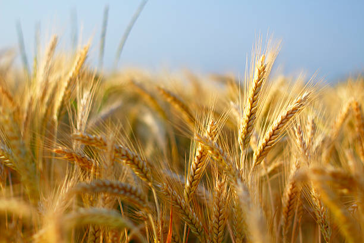
ENGLISH
Barley is a versatile cereal grain widely cultivated for food, animal feed, and brewing. It thrives in a
variety of climates and is particularly well-suited for cooler regions. Here’s a step-by-step guide on
the growing mechanism of barley from seed selection to harvesting:
1] Seed Selection and Sowing:
Choose high-quality, certified barley seeds that are
disease-resistant and suitable for local conditions. Barley can be sown in both the rabi (winter) and
kharif (summer) seasons, depending on the region. The seeds are typically planted 2-5 cm deep in
well-drained, loamy soil, with rows spaced 15-30 cm apart.
2] Germination:
After sowing, barley seeds absorb moisture from the soil, triggering the
germination process. Optimal soil temperatures for germination range from 10°C to 20°C. Germination
usually occurs within 7-10 days, with the radicle emerging first, followed by the shoot.
3] Seedling Development:
Once germination occurs, seedlings enter a phase of rapid growth.
The root system develops, anchoring the plant, while the shoot grows upward. The first true leaves
emerge within a couple of weeks, and proper moisture and sunlight are crucial during this phase.
4] Tillering:
Barley plants start tillering (producing side shoots) about 3-4 weeks after
sowing. This process increases the number of productive stems, contributing to overall yield. Adequate
nutrients and water are important during this period for healthy tiller development.
5] Jointing:
Following tillering, barley enters the jointing stage, where internodes
elongate, raising the plant height. This stage typically occurs about 6-8 weeks after sowing. Proper
management of moisture is essential to support healthy growth.
6] Flowering:
Barley begins to flower approximately 8-10 weeks after sowing. The flowers are
borne in spikelets on the heads. Pollination occurs primarily through wind, and it is vital for seed
development.
7] Seed Development:
After successful pollination, the flowers develop into seeds. Seed
development occurs around 10-12 weeks after sowing. Adequate moisture and nutrients are crucial during
this stage to ensure healthy seed formation.
8] Pest and Disease Management:
Barley can be affected by pests such as aphids, leafhoppers,
and various insects, as well as diseases like powdery mildew, rust, and barley yellow dwarf virus.
Regular monitoring is essential. Integrated pest management (IPM) practices, including resistant
varieties and organic pesticides, can help control pests and diseases effectively.
9] Ripening:
As the seeds mature, the grain heads turn from green to a golden color. This
ripening stage lasts about 2-3 weeks. Watering should be reduced as the plants approach maturity to
enhance seed quality.
10] Harvesting:
Barley is typically harvested 120-150 days after sowing, once the grains
have fully matured and dried. Harvesting is done using a combine harvester or manually with sickles,
ensuring minimal seed loss.
11] Post-Harvest Processing:
After harvesting, the barley plants are allowed to dry further.
The grains are separated from the straw through threshing. Cleaned barley grains should be stored in a
cool, dry place to prevent spoilage and pest infestations.
12] Pest Control in Storage:
To protect stored barley grains from pests like weevils, ensure
that storage containers are airtight and kept in a dry environment. Natural repellents, such as
diatomaceous earth or dried neem leaves, can help deter infestations during storage.
Throughout the growing cycle, barley is a resilient crop that requires well-drained soil and careful
management of moisture and pests to ensure a successful yield. Its nutritional benefits and versatility
make it an important staple in sustainable agriculture.
ENGLISH
తెలుగు
బార్లీ అనేది ఆహారం, పశుగ్రాసం మరియు బ్రూయింగ్ కోసం విస్తృతంగా పండించే బహుముఖ తృణధాన్యం. ఇది వివిధ
వాతావరణాలలో వృద్ధి చెందుతుంది మరియు ముఖ్యంగా చల్లని ప్రాంతాలకు బాగా సరిపోతుంది. విత్తన ఎంపిక నుండి
కోత వరకు బార్లీ యొక్క పెరుగుతున్న విధానంపై దశల వారీ గైడ్ ఇక్కడ ఉంది:
1] విత్తన ఎంపిక మరియు విత్తడం:
వ్యాధి-నిరోధకత మరియు స్థానిక పరిస్థితులకు అనువైన
అధిక-నాణ్యత, ధృవీకరించబడిన బార్లీ విత్తనాలను ఎంచుకోండి. బార్లీని ప్రాంతాన్ని బట్టి రబీ (శీతాకాలం)
మరియు ఖరీఫ్ (వేసవి) సీజన్లలో విత్తుకోవచ్చు. విత్తనాలు సాధారణంగా 2-5 సెం.మీ లోతులో బాగా ఎండిపోయిన,
లోమీ మట్టిలో, వరుసలు 15-30 సెం.మీ.ల దూరంలో ఉంటాయి.
2] అంకురోత్పత్తి:
విత్తిన తర్వాత, బార్లీ గింజలు నేల నుండి తేమను గ్రహించి, అంకురోత్పత్తి
ప్రక్రియను ప్రేరేపిస్తాయి. అంకురోత్పత్తికి సరైన నేల ఉష్ణోగ్రతలు 10°C నుండి 20°C వరకు ఉంటాయి.
అంకురోత్పత్తి సాధారణంగా 7-10 రోజులలో సంభవిస్తుంది, మొదట రేడికల్ ఉద్భవిస్తుంది, తరువాత షూట్
అవుతుంది.
3] మొలకల అభివృద్ధి:
ఒకసారి అంకురోత్పత్తి జరిగినప్పుడు, మొలకలు వేగవంతమైన పెరుగుదల దశలోకి
ప్రవేశిస్తాయి. రూట్ వ్యవస్థ అభివృద్ధి చెందుతుంది, మొక్కను ఎంకరేజ్ చేస్తుంది, అయితే షూట్ పైకి
పెరుగుతుంది. మొదటి నిజమైన ఆకులు రెండు వారాల్లోనే ఉద్భవిస్తాయి మరియు ఈ దశలో సరైన తేమ మరియు సూర్యకాంతి
కీలకం.
4] టిల్లరింగ్:
బార్లీ మొక్కలు విత్తిన 3-4 వారాల తర్వాత పైరు వేయడం (సైడ్ రెమ్మలను
ఉత్పత్తి చేయడం) ప్రారంభిస్తాయి. ఈ ప్రక్రియ ఉత్పాదక కాండం సంఖ్యను పెంచుతుంది, మొత్తం దిగుబడికి దోహదం
చేస్తుంది. ఆరోగ్యకరమైన పైరు అభివృద్ధికి ఈ కాలంలో తగినంత పోషకాలు మరియు నీరు ముఖ్యమైనవి.
5] జాయింట్ చేయడం:
దున్నడాన్ని అనుసరించి, బార్లీ జాయింటింగ్ దశలోకి ప్రవేశిస్తుంది, ఇక్కడ
ఇంటర్నోడ్లు పొడుగుగా ఉండి, మొక్క ఎత్తును పెంచుతాయి. ఈ దశ సాధారణంగా విత్తిన 6-8 వారాల తర్వాత
వస్తుంది. ఆరోగ్యకరమైన ఎదుగుదలకు తోడ్పడటానికి తేమ యొక్క సరైన నిర్వహణ అవసరం.
6] పుష్పించేది:
బార్లీ విత్తిన సుమారు 8-10 వారాల తర్వాత పుష్పించడం ప్రారంభమవుతుంది.
పువ్వులు తలపై స్పైక్లెట్స్లో ఉంటాయి. పరాగసంపర్కం ప్రధానంగా గాలి ద్వారా జరుగుతుంది మరియు ఇది విత్తన
అభివృద్ధికి చాలా ముఖ్యమైనది.
7] విత్తన అభివృద్ధి:
విజయవంతమైన పరాగసంపర్కం తర్వాత, పువ్వులు విత్తనాలుగా అభివృద్ధి
చెందుతాయి. విత్తిన 10-12 వారాల తర్వాత విత్తనం అభివృద్ధి చెందుతుంది. ఆరోగ్యకరమైన విత్తనం ఏర్పడటానికి
ఈ దశలో తగినంత తేమ మరియు పోషకాలు కీలకం.
8] పెస్ట్ అండ్ డిసీజ్ మేనేజ్మెంట్:
అఫిడ్స్, లెఫ్హాపర్స్ మరియు వివిధ కీటకాలు, అలాగే
బూజు తెగులు, తుప్పు మరియు బార్లీ పసుపు మరగుజ్జు వైరస్ వంటి వ్యాధుల ద్వారా బార్లీని ప్రభావితం
చేయవచ్చు. క్రమమైన పర్యవేక్షణ అవసరం. నిరోధక రకాలు మరియు సేంద్రీయ పురుగుమందులతో సహా ఇంటిగ్రేటెడ్
పెస్ట్ మేనేజ్మెంట్ (IPM) పద్ధతులు తెగుళ్లు మరియు వ్యాధులను సమర్థవంతంగా నియంత్రించడంలో
సహాయపడతాయి.
9] పండినవి:
గింజలు పరిపక్వం చెందుతున్నప్పుడు, ధాన్యం తలలు ఆకుపచ్చ నుండి బంగారు రంగులోకి
మారుతాయి. ఈ పండిన దశ సుమారు 2-3 వారాలు ఉంటుంది. విత్తనాల నాణ్యతను పెంచేందుకు మొక్కలు పరిపక్వ దశకు
చేరుకున్నప్పుడు నీరు త్రాగుట తగ్గించాలి.
10] కోత:
బార్లీని సాధారణంగా విత్తిన 120-150 రోజుల తర్వాత, గింజలు పూర్తిగా పరిపక్వం చెంది
ఎండిన తర్వాత పండిస్తారు. హార్వెస్టింగ్ కంబైన్ హార్వెస్టర్ని ఉపయోగించి లేదా కొడవలితో మాన్యువల్గా
జరుగుతుంది, ఇది కనిష్ట విత్తన నష్టాన్ని నిర్ధారిస్తుంది.
11] పోస్ట్-హార్వెస్ట్ ప్రాసెసింగ్:
కోత తర్వాత, బార్లీ మొక్కలు మరింత పొడిగా ఉండటానికి
అనుమతించబడతాయి. ధాన్యాలు నూర్పిడి ద్వారా గడ్డి నుండి వేరు చేయబడతాయి. క్లీన్ చేసిన బార్లీ గింజలు
చెడిపోకుండా మరియు చీడపీడల బారిన పడకుండా చల్లని, పొడి ప్రదేశంలో నిల్వ చేయాలి.
12] నిల్వలో పెస్ట్ కంట్రోల్:
నిల్వ చేసిన బార్లీ గింజలను వీవిల్స్ వంటి తెగుళ్ల నుండి
రక్షించడానికి, నిల్వ కంటైనర్లు గాలి చొరబడనివి మరియు పొడి వాతావరణంలో ఉండేలా చూసుకోండి. డయాటోమాసియస్
ఎర్త్ లేదా ఎండిన వేప ఆకులు వంటి సహజ వికర్షకాలు నిల్వ సమయంలో ముట్టడిని నిరోధించడంలో
సహాయపడతాయి.
పెరుగుతున్న చక్రంలో, బార్లీ ఒక స్థితిస్థాపకమైన పంట, ఇది విజయవంతమైన దిగుబడిని నిర్ధారించడానికి బాగా
ఎండిపోయిన నేల మరియు తేమ మరియు తెగుళ్ళను జాగ్రత్తగా నిర్వహించడం అవసరం. దాని పోషక ప్రయోజనాలు మరియు
పాండిత్యము సుస్థిర వ్యవసాయంలో ఇది ముఖ్యమైన ప్రధానమైనది.
తెలుగు
వినండి
35.SAFFRON /35.కుంకుమపువ్వు

ENGLISH
Saffron, derived from the flower of Crocus sativus, is one of the most expensive spices in the world,
known for its distinct flavor, aroma, and vibrant color. It thrives in specific climates and requires
careful cultivation. Here’s a step-by-step guide on the growing mechanism of saffron from bulb selection
to harvesting:
1] Bulb Selection:
Choose high-quality saffron corms (bulbs) that are healthy and
disease-free. The best time for planting is in late summer to early autumn (August to September),
ensuring that the bulbs have sufficient time to establish roots before flowering.
2] Soil Preparation:
Saffron requires well-drained, sandy-loam soil rich in organic matter.
Prepare the soil by tilling and adding compost or well-rotted manure to improve fertility. The pH level
should ideally be between 6 and 8.
3] Planting:
Plant the saffron corms about 10 cm deep and 15 cm apart in rows spaced 30-40
cm apart. Ensure that the pointed end of the corm is facing upwards. Water lightly after planting to
help settle the soil around the corms.
4] Germination:
Once planted, saffron corms will start to establish roots. Germination
begins when temperatures drop, typically in October. Leaves will start to emerge from the soil after a
few weeks.
5] Vegetative Growth:
During the vegetative phase, which lasts from late autumn to early
spring, saffron plants develop long, narrow leaves. This phase is crucial for the establishment of the
plant and the energy accumulation necessary for flowering.
6] Flowering:
Saffron flowers typically bloom in late autumn (October to November). The
flowers are delicate and can be purple or lilac in color, with three bright red stigmas that are
harvested as saffron. The flowering process lasts about 2-3 weeks.
7] Pollination:
While saffron is primarily self-pollinating, cross-pollination can occur
through insects. However, the stigmas are harvested regardless of pollination since they are the part
used for spice production.
8] Harvesting:
Saffron stigmas are harvested by hand, usually in the early morning when
flowers are fully open. It is essential to carefully pluck the stigmas without damaging the flower. This
process should be done quickly to ensure freshness, as saffron degrades rapidly.
9] Post-Harvest Processing:
After harvesting, the stigmas should be dried to preserve their
flavor and aroma. This is typically done by placing them on a clean, dry surface in a shaded area or
using a dehydrator. Proper drying reduces moisture content, which is crucial for maintaining
quality.
10] Storage:
Once dried, saffron should be stored in an airtight container in a cool, dark
place to preserve its potency. Avoid exposure to light, heat, and moisture to prevent
degradation.
11] Pest and Disease Management:
Saffron can be susceptible to pests like aphids and
diseases such as corm rot. Regular monitoring and the use of organic pesticides or neem oil can help
manage these issues effectively. Crop rotation and proper sanitation practices can also reduce disease
incidence.
12] Crop Rotation and Care:
After a few years of cultivation, it’s beneficial to rotate
saffron with other crops to maintain soil health and reduce pest and disease pressure. Corms may need to
be dug up and divided every 3-4 years to ensure healthy growth.
Throughout the growing cycle, saffron requires careful attention to detail, particularly during
flowering and harvesting. Its unique growing requirements and labor-intensive harvesting process
contribute to its high value and significance in culinary and medicinal uses.
ENGLISH
తెలుగు
కుంకుమ పువ్వు, క్రోకస్ సాటివస్ పుష్పం నుండి తీసుకోబడింది, ఇది ప్రపంచంలోని అత్యంత ఖరీదైన సుగంధ
ద్రవ్యాలలో ఒకటి, దాని ప్రత్యేక రుచి, సువాసన మరియు శక్తివంతమైన రంగుకు పేరుగాంచింది. ఇది నిర్దిష్ట
వాతావరణాలలో వృద్ధి చెందుతుంది మరియు జాగ్రత్తగా సాగు అవసరం. బల్బ్ ఎంపిక నుండి కోత వరకు కుంకుమపువ్వు
పెరుగుతున్న విధానంపై ఇక్కడ దశల వారీ గైడ్ ఉంది:
1] బల్బ్ ఎంపిక:
ఆరోగ్యకరమైన మరియు వ్యాధి రహితమైన అధిక-నాణ్యత కుంకుమ పువ్వు (బల్బులు)
ఎంచుకోండి. నాటడానికి ఉత్తమ సమయం వేసవి చివరి నుండి శరదృతువు ప్రారంభంలో (ఆగస్టు నుండి సెప్టెంబరు
వరకు), గడ్డలు పుష్పించే ముందు మూలాలను స్థాపించడానికి తగిన సమయాన్ని కలిగి ఉండేలా చూసుకోవాలి.
2] నేల తయారీ:
కుంకుమపువ్వు బాగా ఎండిపోయిన, సేంద్రీయ పదార్థంతో కూడిన ఇసుక-లోమ్ నేల అవసరం.
సంతానోత్పత్తిని మెరుగుపరచడానికి కంపోస్ట్ లేదా బాగా కుళ్ళిన ఎరువును తీయడం మరియు జోడించడం ద్వారా నేలను
సిద్ధం చేయండి. pH స్థాయి ఆదర్శంగా 6 మరియు 8 మధ్య ఉండాలి.
3] నాటడం:
కుంకుమపువ్వు 10 సెం.మీ లోతు మరియు 15 సెం.మీ దూరంలో 30-40 సెం.మీ దూరంలో ఉన్న
వరుసలలో నాటండి. కార్మ్ యొక్క కోణాల చివర పైకి ఎదురుగా ఉందని నిర్ధారించుకోండి. మొక్కజొన్నల చుట్టూ
మట్టిని స్థిరపరచడంలో సహాయపడటానికి నాటిన తర్వాత తేలికగా నీరు పెట్టండి.
4] అంకురోత్పత్తి:
ఒకసారి నాటిన తర్వాత, కుంకుమపువ్వు పూత పూయడం ప్రారంభమవుతుంది.
ఉష్ణోగ్రతలు తగ్గినప్పుడు అంకురోత్పత్తి ప్రారంభమవుతుంది, సాధారణంగా అక్టోబర్లో. కొన్ని వారాల తర్వాత
నేల నుండి ఆకులు రావడం ప్రారంభమవుతుంది.
5] ఏపుగా పెరుగుదల:
శరదృతువు చివరి నుండి వసంతకాలం ప్రారంభం వరకు ఉండే ఏపుగా ఉండే దశలో,
కుంకుమపువ్వు మొక్కలు పొడవైన, ఇరుకైన ఆకులను అభివృద్ధి చేస్తాయి. ఈ దశ మొక్క స్థాపనకు మరియు
పుష్పించడానికి అవసరమైన శక్తి సంచితానికి కీలకమైనది.
6] పుష్పించేవి:
కుంకుమ పువ్వులు సాధారణంగా శరదృతువు చివరిలో (అక్టోబర్ నుండి నవంబర్ వరకు)
వికసిస్తాయి. పువ్వులు సున్నితమైనవి మరియు ఊదారంగు లేదా లిలక్ రంగులో ఉంటాయి, మూడు ప్రకాశవంతమైన ఎరుపు
రంగు స్టిగ్మాలను కుంకుమ పువ్వుగా పండిస్తారు. పుష్పించే ప్రక్రియ దాదాపు 2-3 వారాలు ఉంటుంది.
7] పరాగసంపర్కం:
కుంకుమపువ్వు ప్రధానంగా స్వీయ-పరాగసంపర్కం అయితే, కీటకాల ద్వారా
క్రాస్-పరాగసంపర్కం సంభవించవచ్చు. ఏది ఏమైనప్పటికీ, అవి సుగంధ ద్రవ్యాల ఉత్పత్తికి ఉపయోగించే భాగం కనుక
పరాగసంపర్కంతో సంబంధం లేకుండా స్టిగ్మాస్ కోయబడతాయి.
8] కోత:
కుంకుమపువ్వు కళంకాలను చేతితో కోస్తారు, సాధారణంగా తెల్లవారుజామున పూలు పూర్తిగా
తెరిచినప్పుడు. పువ్వుకు హాని కలగకుండా కళంకాలను జాగ్రత్తగా తీయడం చాలా అవసరం. కుంకుమపువ్వు వేగంగా
క్షీణిస్తుంది కాబట్టి తాజాదనాన్ని నిర్ధారించడానికి ఈ ప్రక్రియ త్వరగా చేయాలి.
9] పోస్ట్-హార్వెస్ట్ ప్రాసెసింగ్:
పంట కోసిన తర్వాత, కళంకాలను వాటి రుచి మరియు వాసనను
కాపాడుకోవడానికి ఎండబెట్టాలి. ఇది సాధారణంగా వాటిని శుభ్రమైన, పొడి ఉపరితలంపై నీడ ఉన్న ప్రదేశంలో ఉంచడం
ద్వారా లేదా డీహైడ్రేటర్ని ఉపయోగించడం ద్వారా జరుగుతుంది. సరైన ఎండబెట్టడం తేమ శాతాన్ని తగ్గిస్తుంది,
ఇది నాణ్యతను నిర్వహించడానికి కీలకం.
10] నిల్వ:
ఎండబెట్టిన తర్వాత, కుంకుమపువ్వు దాని శక్తిని కాపాడుకోవడానికి గాలి చొరబడని
కంటైనర్లో చల్లని, చీకటి ప్రదేశంలో నిల్వ చేయాలి. క్షీణతను నివారించడానికి కాంతి, వేడి మరియు తేమకు
గురికాకుండా ఉండండి.
11] పెస్ట్ అండ్ డిసీజ్ మేనేజ్మెంట్:
కుంకుమపువ్వు అఫిడ్స్ వంటి తెగుళ్లకు మరియు
మొక్కజొన్న తెగులు వంటి వ్యాధులకు లోనవుతుంది. క్రమం తప్పకుండా పర్యవేక్షించడం మరియు సేంద్రీయ
పురుగుమందులు లేదా వేప నూనె వాడకం ఈ సమస్యలను సమర్థవంతంగా నిర్వహించడంలో సహాయపడుతుంది. పంట భ్రమణం మరియు
సరైన పారిశుధ్య పద్ధతులు కూడా వ్యాధి సంభవనీయతను తగ్గించగలవు.
12] పంట భ్రమణం మరియు సంరక్షణ:
కొన్ని సంవత్సరాల సాగు తర్వాత, నేల ఆరోగ్యాన్ని
కాపాడుకోవడానికి మరియు తెగుళ్లు మరియు వ్యాధుల ఒత్తిడిని తగ్గించడానికి ఇతర పంటలతో కుంకుమ పువ్వును
తిప్పడం ప్రయోజనకరంగా ఉంటుంది. ఆరోగ్యకరమైన పెరుగుదలను నిర్ధారించడానికి ప్రతి 3-4 సంవత్సరాలకు ఒకసారి
దోసకాయలను త్రవ్వి విభజించాల్సి ఉంటుంది.
పెరుగుతున్న చక్రంలో, కుంకుమపువ్వు ప్రత్యేకించి పుష్పించే మరియు కోత సమయంలో, వివరాలపై జాగ్రత్తగా
శ్రద్ధ వహించాలి. దాని ప్రత్యేకమైన పెరుగుతున్న అవసరాలు మరియు శ్రమతో కూడిన పంటకోత ప్రక్రియ పాక మరియు
ఔషధ ఉపయోగాలలో దాని అధిక విలువ మరియు ప్రాముఖ్యతకు దోహదపడుతుంది.
తెలుగు
వినండి
36.BAMBOO /36.వెదురు


ENGLISH
Bamboo is a versatile and fast-growing plant known for its strength and flexibility. It is used in
various applications, from construction to crafts. Here’s a step-by-step guide on the growing mechanism
of bamboo from selection to harvesting:
1] Species Selection:
Choose the right species of bamboo based on local climate and intended
use. Common species include Bambusa vulgaris, Dendrocalamus giganteus, and Phyllostachys spp. Selecting
a species that thrives in your region is crucial for successful growth.
2] Site Preparation:
Select a site with well-drained soil and adequate sunlight. Bamboo
prefers slightly acidic to neutral pH (around 6 to 7). Clear the area of weeds and debris, and till the
soil to improve aeration and drainage.
3] Planting:
Bamboo can be propagated from seeds, rhizomes, or culms. For rhizome planting,
dig holes about 30-50 cm deep and place the rhizomes horizontally. Space them 1-3 meters apart,
depending on the species. If planting seedlings or culms, plant them upright and ensure they are
well-watered.
4] Watering:
After planting, water the bamboo thoroughly to help settle the soil around the
roots. Bamboo requires consistent moisture, especially during the first year. Regular watering is
essential, particularly in dry periods.
5] Establishment:
Bamboo will focus on establishing its root system during the first growing
season. This period can last from 6 months to 2 years, depending on the species and environmental
conditions. During this time, limit disturbances around the plants.
6] Growth Phase:
Once established, bamboo can grow rapidly, with some species reaching
heights of up to 1 meter per day. Growth occurs mainly during the warm months, and bamboo will produce
new shoots from the rhizome network. Nutrient management is crucial; applying balanced fertilizers can
promote healthy growth.
7] Leaf Development:
Bamboo leaves play a vital role in photosynthesis, providing energy for
growth. Healthy leaves should be lush and green. Pruning dead or damaged leaves can help improve air
circulation and light penetration.
8] Pest and Disease Management:
Bamboo can be affected by pests like aphids, mealybugs, and
borers, as well as diseases such as fungal infections. Regular monitoring is essential. Organic pest
control methods, such as neem oil or insecticidal soaps, can effectively manage infestations.
9] Maturity:
Bamboo typically reaches maturity within 3-5 years, depending on the species.
Mature bamboo can withstand harsher conditions and may produce larger culms. During this phase, focus on
maintaining healthy growth through proper watering and fertilization.
10] Harvesting:
Bamboo is harvested for various uses, including construction, furniture, and
crafts. Harvesting is usually done when the culms are 3-5 years old for optimal strength. Cut the culms
at ground level, ensuring not to damage surrounding plants.
11] Post-Harvest Processing:
After harvesting, bamboo should be treated to prevent pests and
decay. Common methods include air-drying, boiling in water, or using preservatives like borax. Proper
treatment extends the lifespan of bamboo products.
12] Regeneration and Maintenance:
Bamboo is a renewable resource, and with proper care, it
can regrow after harvesting. Monitor the growth of new shoots and manage the density of the bamboo grove
to prevent overcrowding. Regularly removing weak or damaged culms can promote overall health.
Throughout the growing cycle, bamboo is a resilient plant that requires proper care and management to
ensure successful growth and sustainable harvesting. Its rapid growth and versatility make it an
important resource in various industries.
ENGLISH
తెలుగు
వెదురు దాని బలం మరియు వశ్యతకు ప్రసిద్ధి చెందిన బహుముఖ మరియు వేగంగా పెరుగుతున్న మొక్క. ఇది నిర్మాణం
నుండి చేతిపనుల వరకు వివిధ అనువర్తనాల్లో ఉపయోగించబడుతుంది. ఎంపిక నుండి కోత వరకు వెదురును పెంచే
విధానంపై దశల వారీ గైడ్ ఇక్కడ ఉంది:
1] జాతుల ఎంపిక:
స్థానిక వాతావరణం మరియు ఉద్దేశించిన ఉపయోగం ఆధారంగా సరైన వెదురు జాతులను
ఎంచుకోండి. సాధారణ జాతులలో బాంబుసా వల్గారిస్, డెండ్రోకాలామస్ గిగాంటియస్ మరియు ఫిలోస్టాచిస్ spp
ఉన్నాయి. మీ ప్రాంతంలో వృద్ధి చెందే జాతులను ఎంచుకోవడం విజయవంతమైన వృద్ధికి కీలకం.
2] సైట్ తయారీ:
బాగా ఎండిపోయిన నేల మరియు తగినంత సూర్యకాంతి ఉన్న సైట్ను ఎంచుకోండి. వెదురు
తటస్థ pH (సుమారు 6 నుండి 7) కంటే కొంచెం ఆమ్లాన్ని ఇష్టపడుతుంది. కలుపు మొక్కలు మరియు శిధిలాల
ప్రాంతాన్ని క్లియర్ చేయండి మరియు గాలిని మరియు పారుదలని మెరుగుపరచడానికి మట్టిని తీయండి.
3] నాటడం:
వెదురును విత్తనాలు, రైజోమ్లు లేదా కల్మ్స్ నుండి ప్రచారం చేయవచ్చు. రైజోమ్
నాటడం కోసం, 30-50 సెంటీమీటర్ల లోతులో రంధ్రాలు త్రవ్వి, రైజోమ్లను అడ్డంగా ఉంచండి. జాతులను బట్టి
వాటిని 1-3 మీటర్ల దూరంలో ఉంచండి. మొక్కలు లేదా కాయలను నాటినట్లయితే, వాటిని నిటారుగా నాటండి మరియు అవి
బాగా నీరు ఉండేలా చూసుకోండి.
4] నీరు పోయడం:
నాటిన తర్వాత, వెదురుకు బాగా నీళ్ళు పోయడం ద్వారా మూలాల చుట్టూ మట్టిని
స్థిరపరచడంలో సహాయపడుతుంది. వెదురుకు స్థిరమైన తేమ అవసరం, ముఖ్యంగా మొదటి సంవత్సరంలో. క్రమం తప్పకుండా
నీరు త్రాగుట అవసరం, ముఖ్యంగా పొడి కాలంలో.
5] స్థాపన:
మొదటి పెరుగుతున్న కాలంలో వెదురు దాని మూల వ్యవస్థను ఏర్పాటు చేయడంపై దృష్టి
పెడుతుంది. ఈ కాలం జాతులు మరియు పర్యావరణ పరిస్థితులపై ఆధారపడి 6 నెలల నుండి 2 సంవత్సరాల వరకు ఉంటుంది.
ఈ సమయంలో, మొక్కల చుట్టూ ఉన్న అవాంతరాలను పరిమితం చేయండి.
6] ఎదుగుదల దశ:
ఒకసారి స్థాపించబడిన తర్వాత, వెదురు వేగంగా పెరుగుతుంది, కొన్ని జాతులు
రోజుకు 1 మీటర్ వరకు ఎత్తుకు చేరుకుంటాయి. పెరుగుదల ప్రధానంగా వెచ్చని నెలల్లో సంభవిస్తుంది మరియు
వెదురు బెండు నెట్వర్క్ నుండి కొత్త రెమ్మలను ఉత్పత్తి చేస్తుంది. పోషకాల నిర్వహణ కీలకం; సమతుల్య
ఎరువులను వర్తింపజేయడం ఆరోగ్యకరమైన పెరుగుదలను ప్రోత్సహిస్తుంది.
7] ఆకు అభివృద్ధి:
వెదురు ఆకులు కిరణజన్య సంయోగక్రియలో కీలక పాత్ర పోషిస్తాయి, పెరుగుదలకు
శక్తిని అందిస్తాయి. ఆరోగ్యకరమైన ఆకులు పచ్చగా మరియు పచ్చగా ఉండాలి. చనిపోయిన లేదా దెబ్బతిన్న ఆకులను
కత్తిరించడం గాలి ప్రసరణ మరియు కాంతి వ్యాప్తిని మెరుగుపరచడంలో సహాయపడుతుంది.
8] పెస్ట్ అండ్ డిసీజ్ మేనేజ్మెంట్:
అఫిడ్స్, మీలీబగ్స్ మరియు బోర్లు వంటి తెగుళ్లు, అలాగే
ఫంగల్ ఇన్ఫెక్షన్లు వంటి వ్యాధుల ద్వారా వెదురు ప్రభావితమవుతుంది. క్రమమైన పర్యవేక్షణ అవసరం. వేపనూనె
లేదా క్రిమిసంహారక సబ్బులు వంటి సేంద్రీయ తెగులు నియంత్రణ పద్ధతులు ముట్టడిని సమర్థవంతంగా
నిర్వహించగలవు.
9] పరిపక్వత:
వెదురు సాధారణంగా జాతులపై ఆధారపడి 3-5 సంవత్సరాలలో పరిపక్వతకు చేరుకుంటుంది.
పరిపక్వ వెదురు కఠినమైన పరిస్థితులను తట్టుకోగలదు మరియు పెద్ద కల్మ్లను ఉత్పత్తి చేస్తుంది. ఈ దశలో,
సరైన నీరు త్రాగుట మరియు ఫలదీకరణం ద్వారా ఆరోగ్యకరమైన పెరుగుదలను కొనసాగించడంపై దృష్టి
పెట్టండి.
10] కోత:
వెదురు నిర్మాణం, ఫర్నిచర్ మరియు చేతిపనులతో సహా వివిధ ఉపయోగాల కోసం పండిస్తారు.
కాయలు సరైన బలం కోసం 3-5 సంవత్సరాల వయస్సులో ఉన్నప్పుడు కోత సాధారణంగా జరుగుతుంది. చుట్టుపక్కల ఉన్న
మొక్కలకు నష్టం జరగకుండా చూసేందుకు, నేల స్థాయిలో కాయలను కత్తిరించండి.
11] పోస్ట్-హార్వెస్ట్ ప్రాసెసింగ్:
కోత తర్వాత, వెదురు తెగుళ్లు మరియు కుళ్ళిపోకుండా
నిరోధించడానికి చికిత్స చేయాలి. గాలిలో ఎండబెట్టడం, నీటిలో ఉడకబెట్టడం లేదా బోరాక్స్ వంటి
సంరక్షణకారులను ఉపయోగించడం వంటివి సాధారణ పద్ధతుల్లో ఉంటాయి. సరైన చికిత్స వెదురు ఉత్పత్తుల
జీవితకాలాన్ని పొడిగిస్తుంది.
12] పునరుత్పత్తి మరియు నిర్వహణ:
వెదురు ఒక పునరుత్పాదక వనరు, మరియు సరైన సంరక్షణతో, కోత
తర్వాత అది తిరిగి పెరుగుతుంది. కొత్త రెమ్మల పెరుగుదలను పర్యవేక్షించండి మరియు రద్దీని నివారించడానికి
వెదురు తోపు సాంద్రతను నిర్వహించండి. బలహీనమైన లేదా దెబ్బతిన్న కల్మ్లను క్రమం తప్పకుండా తొలగించడం
వల్ల మొత్తం ఆరోగ్యాన్ని మెరుగుపరుస్తుంది.
పెరుగుతున్న చక్రంలో, వెదురు ఒక స్థితిస్థాపకమైన మొక్క, ఇది విజయవంతమైన పెరుగుదల మరియు స్థిరమైన పంటను
నిర్ధారించడానికి సరైన సంరక్షణ మరియు నిర్వహణ అవసరం. దీని వేగవంతమైన వృద్ధి మరియు బహుముఖ ప్రజ్ఞ దీనిని
వివిధ పరిశ్రమలలో ముఖ్యమైన వనరుగా మార్చింది.
తెలుగు
వినండి
37.WHEAT /37.గోధుమ


ENGLISH
Wheat is one of the most widely cultivated cereal grains, serving as a staple food for millions around
the world. Its growth cycle involves specific agronomic practices to ensure a successful yield. Here’s a
step-by-step guide on the growing mechanism of wheat from seed selection to harvesting:
1] Seed Selection:
Choose high-quality, certified wheat seeds that are well-suited to local
conditions and resistant to diseases. The selection should consider the desired end-use (e.g., bread,
pasta) and local climate.
2] Soil Preparation:
Wheat thrives in well-drained, fertile soil with a pH range of 6.0 to
7.5. Prepare the soil by plowing and harrowing to create a fine seedbed. Adding organic matter, like
compost, can enhance soil fertility.
3] Sowing:
Wheat can be sown in the rabi (winter) season or kharif (summer) season,
depending on the variety. Sow seeds about 2-5 cm deep, with rows spaced 15-25 cm apart. The ideal time
for sowing in India is typically between October and November for rabi and June to July for
kharif.
4] Germination:
After sowing, seeds absorb moisture and begin to germinate. This process
usually takes 7-14 days, depending on soil temperature and moisture. Optimal germination occurs at
temperatures between 10°C and 25°C.
5] Seedling Development:
Once germination occurs, seedlings emerge and develop a strong root
system. During this phase, it’s crucial to provide adequate moisture and minimize weed
competition.
6] Tillering:
Wheat plants enter the tillering stage approximately 3-5 weeks after
germination. During this phase, the main stem produces side shoots (tillers), which contribute to
overall yield. Adequate nutrients, especially nitrogen, are essential for healthy tiller
development.
7] Jointing:
As the plants grow, they enter the jointing stage, where the internodes begin
to elongate. This stage usually occurs 6-8 weeks after sowing. Proper irrigation and nutrient management
are vital to support healthy growth.
8] Flowering:
Wheat begins to flower around 8-10 weeks after sowing. The flowering stage is
critical for pollination, which primarily occurs through wind. Adequate moisture during this period is
essential to ensure proper seed formation.
9] Grain Development:
After pollination, the flowers develop into grain heads. This stage
lasts about 2-3 weeks, during which the grains fill with starch. Consistent moisture is necessary to
support grain development.
10] Maturity:
As the grains mature, the plants turn golden brown, and the moisture content
decreases. This ripening stage typically lasts about 2-4 weeks. Watering should be reduced to enhance
grain quality as the plants approach harvest.
11] Harvesting:
Wheat is usually harvested 100-150 days after sowing, once the grains are
fully matured and dried. Harvesting is typically done using a combine harvester or manually with
sickles. Care should be taken to avoid damage to the grains.
12] Post-Harvest Processing:
After harvesting, wheat should be dried further to reduce
moisture content to around 12-14%. The grains are then separated from the chaff through threshing.
Cleaned wheat grains should be stored in a cool, dry place to prevent spoilage and pest
infestations.
13] Pest and Disease Management:
Wheat can be affected by pests such as aphids, armyworms,
and diseases like rust and fusarium head blight. Regular monitoring and integrated pest management (IPM)
practices, including crop rotation and resistant varieties, can effectively control these
issues.
Throughout the growing cycle, wheat requires careful management of water, nutrients, and pests to ensure
a successful yield. Its importance as a staple food makes it a vital crop in sustainable agriculture.
ENGLISH
తెలుగు
ప్రపంచవ్యాప్తంగా మిలియన్ల మందికి ప్రధాన ఆహారంగా ఉపయోగపడుతున్న గోధుమలు అత్యంత విస్తృతంగా పండించే
తృణధాన్యాలలో ఒకటి. దాని వృద్ధి చక్రం విజయవంతమైన దిగుబడిని నిర్ధారించడానికి నిర్దిష్ట వ్యవసాయ
పద్ధతులను కలిగి ఉంటుంది. విత్తన ఎంపిక నుండి కోత వరకు గోధుమలను పెంచే విధానంపై దశల వారీ గైడ్ ఇక్కడ
ఉంది:
1] విత్తన ఎంపిక:
స్థానిక పరిస్థితులకు బాగా సరిపోయే మరియు వ్యాధులకు నిరోధకత కలిగిన
అధిక-నాణ్యత, ధృవీకరించబడిన గోధుమ విత్తనాలను ఎంచుకోండి. ఎంపిక కావలసిన తుది వినియోగాన్ని (ఉదా.,
బ్రెడ్, పాస్తా) మరియు స్థానిక వాతావరణాన్ని పరిగణనలోకి తీసుకోవాలి.
2] నేల తయారీ:
గోధుమలు 6.0 నుండి 7.5 pH పరిధితో బాగా ఎండిపోయిన, సారవంతమైన నేలలో వృద్ధి
చెందుతాయి. చక్కటి సీడ్బెడ్ను రూపొందించడానికి దున్నడం మరియు దున్నడం ద్వారా మట్టిని సిద్ధం చేయండి.
కంపోస్ట్ వంటి సేంద్రియ పదార్థాన్ని జోడించడం వల్ల నేల సారవంతం పెరుగుతుంది.
3] విత్తడం:
రబీ (శీతాకాలం) సీజన్ లేదా ఖరీఫ్ (వేసవి) సీజన్లో గోధుమలను రకాన్ని బట్టి
విత్తుకోవచ్చు. 15-25 సెంటీమీటర్ల దూరంలో వరుసలతో 2-5 సెంటీమీటర్ల లోతులో విత్తనాలను విత్తండి.
భారతదేశంలో విత్తడానికి అనువైన సమయం రబీకి అక్టోబర్ మరియు నవంబర్ మధ్య మరియు ఖరీఫ్ కోసం జూన్ నుండి జూలై
వరకు ఉంటుంది.
4] మొలకెత్తడం:
విత్తిన తర్వాత, విత్తనాలు తేమను గ్రహించి మొలకెత్తడం ప్రారంభిస్తాయి. నేల
ఉష్ణోగ్రత మరియు తేమను బట్టి ఈ ప్రక్రియ సాధారణంగా 7-14 రోజులు పడుతుంది. 10°C మరియు 25°C మధ్య
ఉష్ణోగ్రతల వద్ద సరైన అంకురోత్పత్తి జరుగుతుంది.
5] మొలక అభివృద్ధి:
ఒకసారి అంకురోత్పత్తి జరిగినప్పుడు, మొలకలు ఉద్భవించి బలమైన రూట్
వ్యవస్థను అభివృద్ధి చేస్తాయి. ఈ దశలో, తగినంత తేమను అందించడం మరియు కలుపు మొక్కల పోటీని తగ్గించడం చాలా
కీలకం.
6] టిల్లరింగ్:
గోధుమ మొక్కలు మొలకెత్తిన సుమారు 3-5 వారాల తర్వాత మొలకెత్తే దశలోకి
ప్రవేశిస్తాయి. ఈ దశలో, ప్రధాన కాండం సైడ్ రెమ్మలను (టిల్లర్లు) ఉత్పత్తి చేస్తుంది, ఇది మొత్తం
దిగుబడికి దోహదం చేస్తుంది. ఆరోగ్యకరమైన పైరు అభివృద్ధికి తగినంత పోషకాలు, ముఖ్యంగా నత్రజని
అవసరం.
7] జాయింటింగ్:
మొక్కలు పెరిగేకొద్దీ, అవి జాయింటింగ్ దశలోకి ప్రవేశిస్తాయి, అక్కడ
ఇంటర్నోడ్లు పొడుగుగా మారడం ప్రారంభిస్తాయి. ఈ దశ సాధారణంగా విత్తిన 6-8 వారాల తర్వాత వస్తుంది. సరైన
నీటిపారుదల మరియు పోషకాల నిర్వహణ ఆరోగ్యకరమైన వృద్ధికి తోడ్పడటానికి చాలా ముఖ్యమైనవి.
8] పుష్పించేవి:
విత్తిన 8-10 వారాల తర్వాత గోధుమలు పూయడం ప్రారంభిస్తాయి. పుష్పించే దశ
పరాగసంపర్కానికి కీలకం, ఇది ప్రధానంగా గాలి ద్వారా సంభవిస్తుంది. సరైన విత్తనం ఏర్పడటానికి ఈ కాలంలో
తగినంత తేమ అవసరం.
9] ధాన్యం అభివృద్ధి:
పరాగసంపర్కం తర్వాత, పువ్వులు ధాన్యపు తలలుగా అభివృద్ధి చెందుతాయి. ఈ
దశ సుమారు 2-3 వారాలు ఉంటుంది, ఈ సమయంలో ధాన్యాలు పిండి పదార్ధంతో నింపుతాయి. ధాన్యం అభివృద్ధికి మద్దతు
ఇవ్వడానికి స్థిరమైన తేమ అవసరం.
10] పక్వత:
గింజలు పరిపక్వం చెందడంతో, మొక్కలు బంగారు గోధుమ రంగులోకి మారుతాయి మరియు తేమ
శాతం తగ్గుతుంది. ఈ పండిన దశ సాధారణంగా 2-4 వారాలు ఉంటుంది. మొక్కలు కోతకు సమీపిస్తున్నప్పుడు ధాన్యం
నాణ్యతను పెంచడానికి నీరు త్రాగుట తగ్గించాలి.
11] కోత:
గోధుమలు సాధారణంగా విత్తిన 100-150 రోజుల తర్వాత, గింజలు పూర్తిగా పరిపక్వం చెంది
ఎండిన తర్వాత కోతకు వస్తాయి. హార్వెస్టింగ్ సాధారణంగా కంబైన్ హార్వెస్టర్ లేదా మాన్యువల్గా కొడవళ్లతో
జరుగుతుంది. గింజలకు నష్టం జరగకుండా జాగ్రత్తలు తీసుకోవాలి.
12] పోస్ట్-హార్వెస్ట్ ప్రాసెసింగ్:
కోత తర్వాత, గోధుమ తేమను 12-14% వరకు తగ్గించడానికి
మరింత ఎండబెట్టాలి. ధాన్యాలు నూర్పిడి ద్వారా గడ్డి నుండి వేరు చేయబడతాయి. శుభ్రం చేసిన గోధుమ గింజలు
చెడిపోకుండా మరియు చీడపీడల బారిన పడకుండా చల్లని, పొడి ప్రదేశంలో నిల్వ చేయాలి.
13] పెస్ట్ అండ్ డిసీజ్ మేనేజ్మెంట్:
అఫిడ్స్, ఆర్మీవార్మ్లు మరియు తుప్పు మరియు
ఫ్యూసేరియం హెడ్బ్లైట్ వంటి వ్యాధుల ద్వారా గోధుమలు ప్రభావితమవుతాయి. పంట భ్రమణం మరియు నిరోధక రకాలు
సహా రెగ్యులర్ పర్యవేక్షణ మరియు సమీకృత తెగులు నిర్వహణ (IPM) పద్ధతులు ఈ సమస్యలను సమర్థవంతంగా
నియంత్రించగలవు.
పెరుగుతున్న చక్రంలో, గోధుమలు విజయవంతమైన దిగుబడిని నిర్ధారించడానికి నీరు, పోషకాలు మరియు తెగుళ్ళను
జాగ్రత్తగా నిర్వహించడం అవసరం. ప్రధాన ఆహారంగా దాని ప్రాముఖ్యత సుస్థిర వ్యవసాయంలో కీలకమైన పంటగా
చేస్తుంది.
తెలుగు
వినండి
38.JOWAR(SORGHUM) /38.జొన్నలు


ENGLISH
Jowar, also known as sorghum, is a drought-resistant cereal grain widely cultivated in arid and
semi-arid regions. It serves as a staple food and is used for livestock feed and biofuel. Here’s a
step-by-step guide on the growing mechanism of jowar from seed selection to harvesting:
1] Seed Selection:
Choose high-quality, certified jowar seeds that are well-suited to local
conditions and resistant to common pests and diseases. Different varieties may be chosen based on the
intended use (food, fodder, or grain).
2] Soil Preparation:
Jowar grows best in well-drained, sandy loam or clay loam soils with a
pH of 6.0 to 7.5. Prepare the soil by plowing and harrowing to create a fine seedbed. Adding organic
matter, such as compost, can improve soil fertility and structure.
3] Sowing:
Jowar is typically sown at the beginning of the rainy season (June to July) in
most regions. Seeds should be planted about 2-5 cm deep, with rows spaced 30-45 cm apart. Ensure
adequate soil moisture before sowing.
4] Germination:
After sowing, jowar seeds absorb moisture and begin to germinate, usually
within 5-10 days. Optimal soil temperatures for germination range from 20°C to 30°C. Good soil moisture
is crucial during this phase.
5] Seedling Development:
Once germination occurs, seedlings emerge and develop a robust root
system. During this early growth phase, maintaining consistent moisture is essential to support healthy
development.
6] Vegetative Growth:
Jowar plants enter the vegetative growth stage, which typically lasts
about 4-6 weeks. During this phase, the plants develop numerous leaves and stems. Adequate sunlight and
nutrients are vital for vigorous growth.
7] Tillering:
About 4-6 weeks after sowing, jowar starts to tiller, producing side shoots
that enhance yield potential. Proper nutrient management, especially nitrogen, is crucial during this
stage to promote healthy tiller development.
8] Jointing:
The jointing phase occurs approximately 6-8 weeks after sowing, when the
plant’s internodes begin to elongate. This stage is essential for height development and grain
formation. Adequate water and nutrients support this process.
9] Flowering:
Jowar typically flowers around 70-90 days after sowing. The flowering stage is
crucial for pollination, which occurs primarily through wind. Adequate moisture during this period is
essential for proper seed development.
10] Seed Development:
After pollination, the flowers develop into grain heads. This seed
development phase lasts about 2-3 weeks. Consistent moisture and nutrients are crucial during this stage
to ensure healthy grain formation.
11] Maturity:
As the grains mature, the plants change color, and the heads become heavy.
This ripening stage lasts about 2-3 weeks. Watering should be reduced to enhance seed quality as the
plants approach harvest.
12] Harvesting:
Jowar is typically harvested 100-120 days after sowing, once the grains are
fully matured and dried. Harvesting is done manually with sickles or mechanically using a combine
harvester. Care should be taken to minimize seed loss during harvesting.
13] Post-Harvest Processing:
After harvesting, jowar plants should be dried further to
reduce moisture content. The grains are separated from the straw through threshing. Cleaned jowar grains
should be stored in a cool, dry place to prevent spoilage and pest infestations.
14] Pest and Disease Management:
Jowar can be affected by pests such as aphids, stem borers,
and diseases like downy mildew and anthracnose. Regular monitoring is essential, and integrated pest
management (IPM) practices, including crop rotation and resistant varieties, can effectively control
these issues.
Throughout the growing cycle, jowar is a resilient crop that requires careful management of water,
nutrients, and pests to ensure a successful yield. Its adaptability to dry conditions and nutritional
benefits make it an important staple in sustainable agriculture.
ENGLISH
తెలుగు
జొన్న అని కూడా పిలువబడే జోవర్, శుష్క మరియు పాక్షిక శుష్క ప్రాంతాలలో విస్తృతంగా సాగు చేయబడే
కరువు-నిరోధక తృణధాన్యం. ఇది ప్రధాన ఆహారంగా ఉపయోగపడుతుంది మరియు పశువుల మేత మరియు జీవ ఇంధనం కోసం
ఉపయోగించబడుతుంది. విత్తన ఎంపిక నుండి కోత వరకు జోవర్ యొక్క పెరుగుతున్న విధానంపై దశల వారీ గైడ్ ఇక్కడ
ఉంది:
1] విత్తన ఎంపిక:
స్థానిక పరిస్థితులకు బాగా సరిపోయే మరియు సాధారణ తెగుళ్లు మరియు వ్యాధులకు
నిరోధకత కలిగిన అధిక-నాణ్యత, ధృవీకరించబడిన జొన్న విత్తనాలను ఎంచుకోండి. ఉద్దేశించిన ఉపయోగం (ఆహారం, మేత
లేదా ధాన్యం) ఆధారంగా వివిధ రకాలను ఎంచుకోవచ్చు.
2] నేల తయారీ:
జొన్నలు 6.0 నుండి 7.5 pHతో బాగా ఎండిపోయిన, ఇసుకతో కూడిన లోమ్ లేదా బంకమట్టి
లోమ్ నేలల్లో బాగా పెరుగుతాయి. చక్కటి సీడ్బెడ్ను రూపొందించడానికి దున్నడం మరియు దున్నడం ద్వారా
మట్టిని సిద్ధం చేయండి. కంపోస్ట్ వంటి సేంద్రియ పదార్థాన్ని జోడించడం వల్ల నేల సంతానోత్పత్తి మరియు
నిర్మాణాన్ని మెరుగుపరచవచ్చు.
3] విత్తడం:
జొన్నను సాధారణంగా చాలా ప్రాంతాలలో వర్షాకాలం ప్రారంభంలో (జూన్ నుండి జూలై
వరకు) విత్తుతారు. విత్తనాలను 2-5 సెం.మీ లోతులో నాటాలి, వరుసలు 30-45 సెం.మీ. విత్తే ముందు నేలలో
తగినంత తేమ ఉండేలా చూసుకోండి.
4] మొలకెత్తడం:
విత్తిన తర్వాత, జొన్న గింజలు తేమను గ్రహించి మొలకెత్తడం ప్రారంభిస్తాయి,
సాధారణంగా 5-10 రోజులలో. అంకురోత్పత్తికి సరైన నేల ఉష్ణోగ్రతలు 20°C నుండి 30°C వరకు ఉంటాయి. ఈ దశలో
మంచి నేల తేమ కీలకం.
5] మొలక అభివృద్ధి:
ఒకసారి అంకురోత్పత్తి జరిగినప్పుడు, మొలకలు ఉద్భవించి, బలమైన రూట్
వ్యవస్థను అభివృద్ధి చేస్తాయి. ఈ ప్రారంభ వృద్ధి దశలో, ఆరోగ్యకరమైన అభివృద్ధికి తోడ్పడేందుకు స్థిరమైన
తేమను నిర్వహించడం చాలా అవసరం.
6] ఏపుగా పెరుగుదల:
జొన్న మొక్కలు ఏపుగా పెరిగే దశలోకి ప్రవేశిస్తాయి, ఇది సాధారణంగా 4-6
వారాలు ఉంటుంది. ఈ దశలో, మొక్కలు అనేక ఆకులు మరియు కాండాలను అభివృద్ధి చేస్తాయి. శక్తివంతమైన ఎదుగుదలకు
తగినంత సూర్యరశ్మి మరియు పోషకాలు ముఖ్యమైనవి.
7] టల్లరింగ్:
విత్తిన 4-6 వారాల తర్వాత, జోవర్ పైరు వేయడం ప్రారంభిస్తుంది, దిగుబడి
సామర్థ్యాన్ని పెంచే సైడ్ రెమ్మలను ఉత్పత్తి చేస్తుంది. సరైన పోషక నిర్వహణ, ముఖ్యంగా నత్రజని, ఈ దశలో
ఆరోగ్యకరమైన పైరు అభివృద్ధిని ప్రోత్సహించడానికి కీలకం.
8] జాయింటింగ్:
విత్తిన 6-8 వారాల తర్వాత, మొక్క యొక్క ఇంటర్నోడ్లు పొడిగించడం
ప్రారంభించినప్పుడు జాయింటింగ్ దశ ఏర్పడుతుంది. ఎత్తు అభివృద్ధి మరియు ధాన్యం ఏర్పడటానికి ఈ దశ అవసరం.
తగినంత నీరు మరియు పోషకాలు ఈ ప్రక్రియకు మద్దతు ఇస్తాయి.
9] పుష్పించేవి:
జొన్నలు సాధారణంగా విత్తిన 70-90 రోజుల తర్వాత పూస్తాయి. పుష్పించే దశ
పరాగసంపర్కానికి కీలకమైనది, ఇది ప్రధానంగా గాలి ద్వారా జరుగుతుంది. సరైన విత్తన అభివృద్ధికి ఈ కాలంలో
తగినంత తేమ అవసరం.
10] విత్తన అభివృద్ధి:
పరాగసంపర్కం తర్వాత, పువ్వులు ధాన్యపు తలలుగా అభివృద్ధి చెందుతాయి. ఈ
విత్తన అభివృద్ధి దశ సుమారు 2-3 వారాలు ఉంటుంది. ఆరోగ్యకరమైన ధాన్యం ఏర్పడటానికి ఈ దశలో స్థిరమైన తేమ
మరియు పోషకాలు కీలకం.
11] పక్వత:
గింజలు పరిపక్వం చెందడంతో, మొక్కలు రంగు మారుతాయి మరియు తలలు బరువుగా మారుతాయి.
ఈ పండిన దశ సుమారు 2-3 వారాలు ఉంటుంది. మొక్కలు కోతకు సమీపిస్తున్నందున విత్తన నాణ్యతను మెరుగుపరచడానికి
నీరు త్రాగుట తగ్గించాలి.
12] కోత:
జొన్నలు సాధారణంగా విత్తిన 100-120 రోజుల తర్వాత, గింజలు పూర్తిగా పరిపక్వం చెంది
ఎండిన తర్వాత కోయబడతాయి. హార్వెస్టింగ్ కొడవలితో మాన్యువల్గా లేదా కంబైన్ హార్వెస్టర్ని ఉపయోగించి
యాంత్రికంగా జరుగుతుంది. కోత సమయంలో విత్తన నష్టాన్ని తగ్గించడానికి జాగ్రత్త తీసుకోవాలి.
13] పోస్ట్-హార్వెస్ట్ ప్రాసెసింగ్:
కోత తర్వాత, తేమ శాతాన్ని తగ్గించడానికి జొన్న మొక్కలను
మరింత ఎండబెట్టాలి. ధాన్యాలు నూర్పిడి ద్వారా గడ్డి నుండి వేరు చేయబడతాయి. శుభ్రం చేసిన జొన్న గింజలు
చెడిపోకుండా మరియు తెగుళ్ల బారిన పడకుండా చల్లని, పొడి ప్రదేశంలో నిల్వ చేయాలి.
14] తెగుళ్లు మరియు వ్యాధి నిర్వహణ:
అఫిడ్స్, కాండం తొలుచు పురుగులు మరియు డౌనీ బూజు మరియు
ఆంత్రాక్నోస్ వంటి వ్యాధుల ద్వారా జొన్నలు ప్రభావితమవుతాయి. క్రమమైన పర్యవేక్షణ అవసరం, మరియు పంట భ్రమణ
మరియు నిరోధక రకాలు సహా సమీకృత పెస్ట్ మేనేజ్మెంట్ (IPM) పద్ధతులు ఈ సమస్యలను సమర్థవంతంగా
నియంత్రించగలవు.
పెరుగుతున్న చక్రంలో, జొన్న అనేది ఒక స్థితిస్థాపక పంట, ఇది విజయవంతమైన దిగుబడిని నిర్ధారించడానికి
నీరు, పోషకాలు మరియు తెగుళ్ళను జాగ్రత్తగా నిర్వహించడం అవసరం. పొడి పరిస్థితులు మరియు పోషక ప్రయోజనాలకు
దాని అనుకూలత సుస్థిర వ్యవసాయంలో ఇది ముఖ్యమైన ప్రధానమైనది.
తెలుగు
వినండి
39.OATS /39.ఓట్స్
ENGLISH
Oats are a nutritious cereal grain known for their health benefits and versatility in food products.
They are primarily grown in temperate regions and require specific conditions for optimal growth. Here’s
a step-by-step guide on the growing mechanism of oats from seed selection to harvesting:
1] Seed Selection:
Choose high-quality, certified oat seeds suited to local
climate conditions and resistant to common diseases. Different varieties may be selected based on
desired end uses (e.g., food, animal feed).
2] Soil Preparation:
Oats thrive in well-drained, fertile soils with a pH
range of 6.0 to 7.5. Prepare the soil by plowing and harrowing to create a fine seedbed. Incorporating
organic matter, such as compost, can enhance soil fertility.
3] Sowing:
Oats are typically sown in early spring (March to April) in most
regions. Seeds should be planted about 2-4 cm deep, with rows spaced 15-30 cm apart. Ensure soil
moisture is adequate at the time of sowing.
4] Germination:
After sowing, oat seeds absorb moisture and begin to germinate,
usually within 7-14 days. Optimal soil temperatures for germination range from 5°C to 20°C. Good
moisture is crucial during this phase to promote quick germination.
5] Seedling Development:
Once germination occurs, seedlings emerge and
develop a robust root system. Proper watering and weed control are essential during this early growth
stage to support healthy seedling development.
6] Vegetative Growth:
Oats enter the vegetative growth phase, lasting about 4-6
weeks. During this time, the plants develop long leaves and a strong stem. Adequate sunlight and
nutrients are vital for vigorous growth.
7] Tillering:
About 4-6 weeks after sowing, oats begin to tiller, producing
side shoots that enhance yield potential. Proper nitrogen fertilization is essential to promote healthy
tiller development.
8] Jointing:
The jointing phase occurs approximately 6-8 weeks after sowing,
when internodes begin to elongate. This stage is critical for height development and the formation of
grain heads. Adequate water and nutrients support this process.
9] Flowering:
Oats typically flower around 8-10 weeks after sowing.
The flowering stage is crucial for pollination, which primarily occurs through wind. Adequate moisture
during this period is essential for successful seed development.
10] Grain Development:
After pollination, the flowers develop into grain heads.
This phase lasts about 2-3 weeks. Consistent moisture and nutrients are crucial during this period to
ensure healthy grain formation.
11] Maturity:
As the grains mature, the plants change color,
and the heads become heavier. This ripening stage typically lasts about 2-3 weeks. Watering should be
reduced as the plants approach harvest to improve grain quality.
12] Harvesting:
Oats are typically harvested 90-120 days after
sowing, once the grains are fully matured and dried. Harvesting is usually done with a combine harvester
or manually with sickles. Care should be taken to minimize seed loss during harvesting.
13] Post-Harvest Processing:
After harvesting, oats should be dried further to reduce
moisture content to around 12-14%. The grains are separated from the chaff through threshing. Cleaned
oats should be stored in a cool, dry place to prevent spoilage and pest infestations.
14] Pest and Disease Management:
Oats can be affected by pests such as aphids and cutworms,
as well as diseases like crown rust and smut. Regular monitoring is essential, and integrated pest
management (IPM) practices, including crop rotation and resistant varieties, can effectively control
these issues.
Throughout the growing cycle, oats require careful management of water, nutrients, and pests to ensure a
successful yield. Their health benefits and versatility make them an important crop in sustainable
agriculture.
ENGLISH
తెలుగు
వోట్స్ ఒక పోషకమైన తృణధాన్యం, వాటి ఆరోగ్య ప్రయోజనాలు మరియు ఆహార ఉత్పత్తులలో బహుముఖ ప్రజ్ఞకు
ప్రసిద్ధి. ఇవి ప్రధానంగా సమశీతోష్ణ ప్రాంతాలలో పెరుగుతాయి మరియు సరైన పెరుగుదలకు నిర్దిష్ట పరిస్థితులు
అవసరం. విత్తన ఎంపిక నుండి కోత వరకు వోట్స్ యొక్క పెరుగుతున్న విధానంపై దశల వారీ గైడ్ ఇక్కడ
ఉంది:
1] విత్తనాల ఎంపిక:
స్థానిక వాతావరణ పరిస్థితులకు సరిపోయే మరియు సాధారణ
వ్యాధులకు నిరోధకత కలిగిన అధిక-నాణ్యత, ధృవీకరించబడిన వోట్ విత్తనాలను ఎంచుకోండి. కావలసిన తుది ఉపయోగాలు
(ఉదా., ఆహారం, పశుగ్రాసం) ఆధారంగా వివిధ రకాలను ఎంచుకోవచ్చు.
2] నేల తయారీ:
6.0 నుండి 7.5 pH పరిధితో బాగా ఎండిపోయిన, సారవంతమైన నేలల్లో
వోట్స్ వృద్ధి చెందుతాయి. చక్కటి సీడ్బెడ్ను రూపొందించడానికి దున్నడం మరియు దున్నడం ద్వారా మట్టిని
సిద్ధం చేయండి. కంపోస్ట్ వంటి సేంద్రియ పదార్థాలను చేర్చడం వల్ల నేల సారవంతం పెరుగుతుంది.
3] విత్తడం:
ఓట్స్ సాధారణంగా చాలా ప్రాంతాలలో వసంత ఋతువు ప్రారంభంలో (మార్చి నుండి
ఏప్రిల్ వరకు) విత్తుతారు. విత్తనాలను 2-4 సెం.మీ లోతులో నాటాలి, వరుసలు 15-30 సెం.మీ. విత్తే సమయంలో
నేల తేమ తగినంతగా ఉండేలా చూసుకోండి.
4] అంకురోత్పత్తి:
విత్తిన తర్వాత, వోట్ గింజలు తేమను గ్రహించి మొలకెత్తడం
ప్రారంభిస్తాయి, సాధారణంగా 7-14 రోజులలోపు. అంకురోత్పత్తికి సరైన నేల ఉష్ణోగ్రతలు 5 ° C నుండి 20 ° C
వరకు ఉంటాయి. త్వరగా అంకురోత్పత్తిని ప్రోత్సహించడానికి ఈ దశలో మంచి తేమ కీలకం.
5] మొలకల అభివృద్ధి:
ఒకసారి అంకురోత్పత్తి జరిగినప్పుడు, మొలకలు ఉద్భవించి,
బలమైన రూట్ వ్యవస్థను అభివృద్ధి చేస్తాయి. ఆరోగ్యకరమైన మొలకల అభివృద్ధికి తోడ్పడటానికి ఈ ప్రారంభ
ఎదుగుదల దశలో సరైన నీరు త్రాగుట మరియు కలుపు నియంత్రణ అవసరం.
6] వృక్షసంపద పెరుగుదల:
ఓట్స్ ఏపుగా ఎదుగుదల దశలోకి ప్రవేశిస్తాయి, దాదాపు 4-6
వారాలు ఉంటాయి. ఈ సమయంలో, మొక్కలు పొడవైన ఆకులు మరియు బలమైన కాండం అభివృద్ధి చెందుతాయి. శక్తివంతమైన
ఎదుగుదలకు తగినంత సూర్యరశ్మి మరియు పోషకాలు ముఖ్యమైనవి.
7] టిల్లరింగ్:
విత్తిన 4-6 వారాల తర్వాత, వోట్స్ పైరు వేయడం ప్రారంభిస్తుంది,
ఇది దిగుబడి సామర్థ్యాన్ని పెంచే సైడ్ రెమ్మలను ఉత్పత్తి చేస్తుంది. ఆరోగ్యకరమైన పైరు అభివృద్ధిని
ప్రోత్సహించడానికి సరైన నత్రజని ఫలదీకరణం అవసరం.
8] జాయింటింగ్:
విత్తిన సుమారు 6-8 వారాల తర్వాత, ఇంటర్నోడ్లు పొడిగించడం
ప్రారంభించినప్పుడు కీళ్ల దశ ఏర్పడుతుంది. ఈ దశ ఎత్తు అభివృద్ధికి మరియు ధాన్యం తలలు ఏర్పడటానికి కీలకం.
తగినంత నీరు మరియు పోషకాలు ఈ ప్రక్రియకు మద్దతు ఇస్తాయి.
9] పుష్పించేది:
వోట్స్ సాధారణంగా విత్తిన 8-10 వారాల
తర్వాత పుష్పిస్తాయి. పుష్పించే దశ పరాగసంపర్కానికి కీలకమైనది, ఇది ప్రధానంగా గాలి ద్వారా సంభవిస్తుంది.
విజయవంతమైన విత్తన అభివృద్ధికి ఈ కాలంలో తగినంత తేమ అవసరం.
10] ధాన్యం అభివృద్ధి:
పరాగసంపర్కం తర్వాత, పువ్వులు ధాన్యపు తలలుగా అభివృద్ధి
చెందుతాయి. ఈ దశ సుమారు 2-3 వారాలు ఉంటుంది. ఆరోగ్యకరమైన ధాన్యం ఏర్పడటానికి ఈ కాలంలో స్థిరమైన తేమ
మరియు పోషకాలు కీలకం.
11] పరిపక్వత:
గింజలు పరిపక్వం చెందడంతో, మొక్కలు రంగు
మారుతాయి మరియు తలలు బరువుగా మారతాయి. ఈ పండిన దశ సాధారణంగా 2-3 వారాలు ఉంటుంది. ధాన్యం నాణ్యతను
మెరుగుపరచడానికి మొక్కలు కోతకు సమీపిస్తున్నప్పుడు నీరు త్రాగుట తగ్గించాలి.
12] హార్వెస్టింగ్:
ఓట్స్ సాధారణంగా విత్తిన 90-120 రోజుల తర్వాత, గింజలు పూర్తిగా
పక్వానికి వచ్చి ఎండిన తర్వాత కోయబడతాయి. హార్వెస్టింగ్ సాధారణంగా కంబైన్
హార్వెస్టర్తో లేదా మానవీయంగా కొడవళ్లతో జరుగుతుంది. కోత సమయంలో విత్తన నష్టాన్ని తగ్గించడానికి
జాగ్రత్త తీసుకోవాలి.
13] హార్వెస్ట్ తర్వాత ప్రాసెసింగ్:
కోత తర్వాత, వోట్స్ తేమను 12-14% వరకు తగ్గించడానికి
మరింత ఎండబెట్టాలి. నూర్పిడి ద్వారా ధాన్యాలు పొట్టు నుండి వేరు చేయబడతాయి. క్లీన్ చేసిన ఓట్స్
చెడిపోకుండా మరియు చీడపీడల బారిన పడకుండా చల్లని, పొడి ప్రదేశంలో నిల్వ చేయాలి.
14] తెగులు మరియు వ్యాధి నిర్వహణ:
అఫిడ్స్ మరియు కట్వార్మ్లు, అలాగే కిరీటం తుప్పు మరియు
స్మట్ వంటి వ్యాధుల ద్వారా వోట్స్ ప్రభావితం కావచ్చు. క్రమమైన పర్యవేక్షణ అవసరం, మరియు పంట భ్రమణ మరియు
నిరోధక రకాలు సహా సమీకృత తెగులు నిర్వహణ (IPM) పద్ధతులు ఈ సమస్యలను సమర్థవంతంగా నియంత్రించగలవు.
పెరుగుతున్న చక్రంలో, వోట్స్ విజయవంతమైన దిగుబడిని నిర్ధారించడానికి నీరు, పోషకాలు మరియు తెగుళ్ళను
జాగ్రత్తగా నిర్వహించడం అవసరం. వారి ఆరోగ్య ప్రయోజనాలు మరియు పాండిత్యము వాటిని స్థిరమైన వ్యవసాయంలో
ముఖ్యమైన పంటగా చేస్తాయి.
తెలుగు
వినండి
40.QUINOA /40.క్వినోవా

ENGLISH
Quinoa is a highly nutritious grain known for its adaptability and health benefits. Originally from the
Andean region of South America, quinoa is becoming increasingly popular in various climates. Here’s a
step-by-step guide on the growing mechanism of quinoa from seed selection to harvesting:
1] Seed Selection:
Choose high-quality, certified quinoa seeds that are well-suited to your
local climate and resistant to pests and diseases. Various varieties are available, such as white, red,
and black quinoa.
2] Soil Preparation:
Quinoa prefers well-drained, sandy loam or clay loam soils with a pH of
6.0 to 7.0. Prepare the soil by tilling and removing weeds. Incorporate organic matter, like compost, to
enhance soil fertility and structure.
3] Sowing:
Quinoa is typically sown in late spring after the last frost (April to June).
Plant seeds about 1-2 cm deep, with rows spaced 30-45 cm apart. Ensure adequate soil moisture before
planting.
4] Germination:
After sowing, quinoa seeds absorb moisture and begin to germinate, usually
within 7-14 days. Optimal soil temperatures for germination range from 15°C to 30°C. Consistent moisture
is essential during this phase.
5] Seedling Development:
Once germination occurs, seedlings emerge and establish a robust
root system. Proper watering and weed management are critical during this early growth stage to support
healthy seedling development.
6] Vegetative Growth:
Quinoa enters the vegetative growth phase, lasting about 4-6 weeks.
During this period, the plants develop leaves and stems. Adequate sunlight and nutrients are vital for
strong growth.
7] Flowering:
Quinoa typically begins to flower 8-12 weeks after sowing. The flowering stage
is crucial for seed formation, and pollination occurs mainly through wind and insects. Adequate moisture
is important during this time to support successful pollination.
8] Seed Development:
After flowering, the plants develop seeds, which mature over the
following 4-6 weeks. Consistent moisture and nutrient supply are essential during this stage to ensure
healthy seed formation.
9] Maturity:
As the seeds mature, the plants change color, and the leaves may start to
yellow and drop. This ripening stage usually lasts about 2-3 weeks. Watering should be reduced to
enhance seed quality as the plants approach harvest.
10] Harvesting:
Quinoa is typically harvested 90-120 days after sowing, once the seeds are
fully matured and the plants have dried. Harvesting is usually done using a combine harvester or
manually by cutting the seed heads. Care should be taken to avoid seed loss.
11] Post-Harvest Processing:
After harvesting, quinoa seeds need to be cleaned to remove
saponins, a natural coating that can impart a bitter taste. This can be done by rinsing the seeds
thoroughly in water. Proper drying is essential to reduce moisture content to around 12-14% for
storage.
12] Storage:
Store cleaned quinoa seeds in a cool, dry place in airtight containers to
prevent spoilage and pest infestations. Proper storage can extend the shelf life of quinoa.
13] Pest and Disease Management:
Quinoa can be affected by pests such as aphids and diseases
like downy mildew. Regular monitoring is essential. Implement integrated pest management (IPM)
practices, including crop rotation and using resistant varieties, to effectively manage these
issues.
Throughout the growing cycle, quinoa requires careful management of water, nutrients, and pests to
ensure a successful yield. Its nutritional profile and versatility make it an important crop in
sustainable agriculture.
ENGLISH
తెలుగు
క్వినోవా దాని అనుకూలత మరియు ఆరోగ్య ప్రయోజనాలకు ప్రసిద్ధి చెందిన అత్యంత పోషకమైన ధాన్యం. వాస్తవానికి
దక్షిణ అమెరికాలోని ఆండియన్ ప్రాంతం నుండి, క్వినోవా వివిధ వాతావరణాలలో బాగా ప్రాచుర్యం పొందింది.
విత్తన ఎంపిక నుండి కోత వరకు క్వినోవా పెరుగుతున్న విధానంపై దశల వారీ గైడ్ ఇక్కడ ఉంది:
1] విత్తన ఎంపిక:
మీ స్థానిక వాతావరణానికి బాగా సరిపోయే మరియు తెగుళ్లు మరియు వ్యాధులకు
నిరోధకత కలిగిన అధిక-నాణ్యత, ధృవీకరించబడిన క్వినోవా విత్తనాలను ఎంచుకోండి. తెలుపు, ఎరుపు మరియు నలుపు
క్వినోవా వంటి వివిధ రకాలు అందుబాటులో ఉన్నాయి.
2] నేల తయారీ:
క్వినోవా పిహెచ్ 6.0 నుండి 7.0 వరకు బాగా ఎండిపోయిన, ఇసుకతో కూడిన లోమ్ లేదా
క్లే లోమ్ నేలలను ఇష్టపడుతుంది. కలుపు మొక్కలను తీయడం మరియు తొలగించడం ద్వారా మట్టిని సిద్ధం చేయండి.
నేల సంతానోత్పత్తి మరియు నిర్మాణాన్ని మెరుగుపరచడానికి కంపోస్ట్ వంటి సేంద్రీయ పదార్థాన్ని
చేర్చండి.
3] విత్తడం:
క్వినోవా సాధారణంగా చివరి మంచు (ఏప్రిల్ నుండి జూన్) తర్వాత వసంత ఋతువు చివరిలో
విత్తుతారు. 30-45 సెంటీమీటర్ల దూరంలో ఉన్న వరుసలతో 1-2 సెంటీమీటర్ల లోతులో విత్తనాలను నాటండి.
నాటడానికి ముందు నేలలో తగినంత తేమ ఉండేలా చూసుకోండి.
4] మొలకెత్తడం:
విత్తిన తర్వాత, క్వినోవా విత్తనాలు తేమను గ్రహించి, సాధారణంగా 7-14
రోజులలోపు మొలకెత్తడం ప్రారంభిస్తాయి. అంకురోత్పత్తికి సరైన నేల ఉష్ణోగ్రతలు 15 ° C నుండి 30 ° C వరకు
ఉంటాయి. ఈ దశలో స్థిరమైన తేమ అవసరం.
5] మొలకల అభివృద్ధి:
అంకురోత్పత్తి జరిగిన తర్వాత, మొలకలు ఉద్భవించి, బలమైన రూట్ వ్యవస్థను
ఏర్పాటు చేస్తాయి. ఆరోగ్యకరమైన మొలకల అభివృద్ధికి తోడ్పడటానికి ఈ ప్రారంభ ఎదుగుదల దశలో సరైన నీరు
త్రాగుట మరియు కలుపు నిర్వహణ చాలా కీలకం.
6] ఏపుగా పెరుగుదల:
క్వినోవా 4-6 వారాల పాటు ఏపుగా పెరిగే దశలోకి ప్రవేశిస్తుంది. ఈ కాలంలో,
మొక్కలు ఆకులు మరియు కాండం అభివృద్ధి చెందుతాయి. బలమైన పెరుగుదలకు తగినంత సూర్యరశ్మి మరియు పోషకాలు
ముఖ్యమైనవి.
7] పుష్పించేవి:
క్వినోవా సాధారణంగా విత్తిన 8-12 వారాల తర్వాత పుష్పించడం ప్రారంభమవుతుంది.
విత్తనం ఏర్పడటానికి పుష్పించే దశ చాలా ముఖ్యమైనది, మరియు పరాగసంపర్కం ప్రధానంగా గాలి మరియు కీటకాల
ద్వారా జరుగుతుంది. విజయవంతమైన పరాగసంపర్కానికి మద్దతు ఇవ్వడానికి ఈ సమయంలో తగినంత తేమ ముఖ్యం.
8] విత్తన అభివృద్ధి:
పుష్పించే తర్వాత, మొక్కలు విత్తనాలను అభివృద్ధి చేస్తాయి, ఇవి
తరువాతి 4-6 వారాలలో పరిపక్వం చెందుతాయి. ఆరోగ్యకరమైన విత్తనం ఏర్పడటానికి ఈ దశలో స్థిరమైన తేమ మరియు
పోషకాల సరఫరా అవసరం.
9] పరిపక్వత:
విత్తనాలు పరిపక్వం చెందుతున్నప్పుడు, మొక్కలు రంగు మారుతాయి మరియు ఆకులు
పసుపు రంగులోకి మరియు రాలడం ప్రారంభించవచ్చు. ఈ పండిన దశ సాధారణంగా 2-3 వారాలు ఉంటుంది. మొక్కలు కోతకు
సమీపిస్తున్నందున విత్తన నాణ్యతను మెరుగుపరచడానికి నీరు త్రాగుట తగ్గించాలి.
10] కోత:
క్వినోవా సాధారణంగా విత్తిన 90-120 రోజుల తర్వాత, విత్తనాలు పూర్తిగా పక్వానికి
వచ్చిన తర్వాత మరియు మొక్కలు ఎండిపోయిన తర్వాత పండించడం జరుగుతుంది. హార్వెస్టింగ్ సాధారణంగా కంబైన్
హార్వెస్టర్ని ఉపయోగించి లేదా మాన్యువల్గా విత్తన తలలను కత్తిరించడం ద్వారా జరుగుతుంది. విత్తనం
నష్టపోకుండా జాగ్రత్తలు తీసుకోవాలి.
11] పోస్ట్-హార్వెస్ట్ ప్రాసెసింగ్:
కోత తర్వాత, క్వినోవా గింజలు చేదు రుచిని అందించే సహజ
పూత అయిన సపోనిన్లను తొలగించడానికి శుభ్రం చేయాలి. విత్తనాలను నీటిలో బాగా కడగడం ద్వారా ఇది చేయవచ్చు.
నిల్వ కోసం తేమను 12-14%కి తగ్గించడానికి సరైన ఎండబెట్టడం అవసరం.
12] నిల్వ:
క్లీన్ చేసిన క్వినోవా గింజలు చెడిపోవడం మరియు తెగుళ్ల బారిన పడకుండా ఉండేందుకు
గాలి చొరబడని కంటైనర్లలో చల్లని, పొడి ప్రదేశంలో నిల్వ చేయండి. సరైన నిల్వ క్వినోవా యొక్క షెల్ఫ్
జీవితాన్ని పొడిగించవచ్చు.
13] పెస్ట్ అండ్ డిసీజ్ మేనేజ్మెంట్:
అఫిడ్స్ వంటి తెగుళ్లు మరియు డౌనీ బూజు వంటి వ్యాధుల
ద్వారా క్వినోవా ప్రభావితమవుతుంది. క్రమమైన పర్యవేక్షణ అవసరం. ఈ సమస్యలను సమర్థవంతంగా నిర్వహించడానికి
పంట మార్పిడి మరియు నిరోధక రకాలను ఉపయోగించడంతో సహా సమీకృత పెస్ట్ మేనేజ్మెంట్ (IPM) పద్ధతులను అమలు
చేయండి.
పెరుగుతున్న చక్రంలో, క్వినోవా విజయవంతమైన దిగుబడిని నిర్ధారించడానికి నీరు, పోషకాలు మరియు తెగుళ్లను
జాగ్రత్తగా నిర్వహించడం అవసరం. దాని పోషక విలువలు మరియు బహుముఖ ప్రజ్ఞ దీనిని స్థిరమైన వ్యవసాయంలో ఒక
ముఖ్యమైన పంటగా మార్చింది.
తెలుగు
వినండి
41.FOXTAIL MILLET /41.కొర్రలు


ENGLISH
Foxtail millet, known for its resilience and nutritional benefits, is a drought-tolerant grain cultivated primarily in Asia and Africa. Here’s a step-by-step guide on the growing mechanism of foxtail millet from seed selection to harvesting:
1] Seed Selection:
Choose high-quality, certified foxtail millet seeds suited to local conditions. Select varieties that are disease-resistant and suitable for the intended climate and soil type.
2] Soil Preparation:
Foxtail millet prefers well-drained, sandy or loamy soils with a pH of 6.0 to 7.5. Prepare the soil by plowing and harrowing to create a fine seedbed. Incorporate organic matter, such as compost, to improve soil fertility.
3] Sowing:
Sow foxtail millet seeds at the beginning of the rainy season (June to July in most regions). Plant seeds about 2-3 cm deep, with rows spaced 20-30 cm apart. Ensure adequate soil moisture before sowing.
4] Germination:
After sowing, seeds absorb moisture and begin to germinate, usually within 3-7 days. Optimal soil temperatures for germination range from 20°C to 30°C. Consistent moisture is crucial during this phase.
5] Seedling Development:
Once germination occurs, seedlings emerge and develop a strong root system. Proper watering and weed control are essential during this early growth stage to support healthy seedling development.
6] Vegetative Growth:
Foxtail millet enters the vegetative growth phase, lasting about 4-6 weeks. During this time, the plants develop numerous leaves and stems. Adequate sunlight and nutrients are vital for vigorous growth.
7] Tillering:
About 4-6 weeks after sowing, foxtail millet begins to tiller, producing side shoots that enhance yield potential. Proper nitrogen fertilization can promote healthy tiller development.
8] Flowering:
Foxtail millet typically flowers around 60-75 days after sowing. The flowering stage is crucial for seed formation, and pollination occurs mainly through wind. Adequate moisture during this period is essential for successful pollination.
9] Seed Development:
After pollination, the flowers develop into grain heads. This phase lasts about 2-3 weeks. Consistent moisture and nutrient supply are crucial during this stage to ensure healthy seed formation.
10] Maturity:
As the seeds mature, the plants change color, and the heads become heavier. This ripening stage usually lasts about 2-3 weeks. Watering should be reduced as the plants approach harvest to improve grain quality.
11] Harvesting:
Foxtail millet is typically harvested 90-120 days after sowing, once the seeds are fully matured and dried. Harvesting can be done manually with sickles or mechanically with a combine harvester. Care should be taken to minimize seed loss during harvesting.
12] Post-Harvest Processing:
After harvesting, foxtail millet grains should be dried further to reduce moisture content. The grains are separated from the chaff through threshing. Cleaned millet should be stored in a cool, dry place to prevent spoilage and pest infestations.
13] Pest and Disease Management:
Foxtail millet can be affected by pests such as aphids and diseases like downy mildew and smut. Regular monitoring is essential. Implement integrated pest management (IPM) practices, including crop rotation and resistant varieties, to effectively control these issues.
Throughout the growing cycle, foxtail millet requires careful management of water, nutrients, and pests to ensure a successful yield. Its resilience and nutritional value make it an important crop in sustainable agriculture.
ENGLISH
తెలుగు
ఫాక్స్టైల్ మిల్లెట్, దాని స్థితిస్థాపకత మరియు పోషక ప్రయోజనాలకు ప్రసిద్ధి చెందింది, ఇది కరువును తట్టుకునే ధాన్యం, దీనిని ప్రధానంగా ఆసియా మరియు ఆఫ్రికాలో సాగు చేస్తారు. విత్తన ఎంపిక నుండి పంట కోత వరకు ఫాక్స్టైల్ మిల్లెట్ పెరుగుతున్న విధానంపై ఇక్కడ దశల వారీ గైడ్ ఉంది:
1] విత్తన ఎంపిక:
స్థానిక పరిస్థితులకు సరిపోయే అధిక-నాణ్యత, ధృవీకరించబడిన ఫాక్స్టైల్ మిల్లెట్ విత్తనాలను ఎంచుకోండి. వ్యాధి-నిరోధకత మరియు ఉద్దేశించిన వాతావరణం మరియు నేల రకానికి తగిన రకాలను ఎంచుకోండి.
2] నేల తయారీ:
ఫాక్స్టైల్ మిల్లెట్ 6.0 నుండి 7.5 pH వరకు బాగా ఎండిపోయిన, ఇసుక లేదా లోమీ నేలలను ఇష్టపడుతుంది. చక్కటి సీడ్బెడ్ను రూపొందించడానికి దున్నడం మరియు దున్నడం ద్వారా మట్టిని సిద్ధం చేయండి. నేల సంతానోత్పత్తిని మెరుగుపరచడానికి కంపోస్ట్ వంటి సేంద్రియ పదార్థాలను చేర్చండి.
3] విత్తడం:
ఫాక్స్టైల్ మిల్లెట్ విత్తనాలను వర్షాకాలం ప్రారంభంలో విత్తండి (చాలా ప్రాంతాలలో జూన్ నుండి జూలై వరకు). 20-30 సెంటీమీటర్ల దూరంలో ఉన్న వరుసలతో 2-3 సెంటీమీటర్ల లోతులో విత్తనాలను నాటండి. విత్తే ముందు నేలలో తగినంత తేమ ఉండేలా చూసుకోండి.
4] మొలకెత్తడం:
విత్తిన తర్వాత, విత్తనాలు తేమను గ్రహించి, సాధారణంగా 3-7 రోజులలో మొలకెత్తడం ప్రారంభిస్తాయి. అంకురోత్పత్తికి సరైన నేల ఉష్ణోగ్రతలు 20°C నుండి 30°C వరకు ఉంటాయి. ఈ దశలో స్థిరమైన తేమ కీలకం.
5] మొలక అభివృద్ధి:
ఒకసారి అంకురోత్పత్తి జరిగినప్పుడు, మొలకలు ఉద్భవించి బలమైన రూట్ వ్యవస్థను అభివృద్ధి చేస్తాయి. ఆరోగ్యకరమైన మొలకల అభివృద్ధికి తోడ్పడటానికి ఈ ప్రారంభ ఎదుగుదల దశలో సరైన నీరు త్రాగుట మరియు కలుపు నియంత్రణ అవసరం.
6] ఏపుగా పెరుగుదల:
ఫాక్స్టైల్ మిల్లెట్ 4-6 వారాల పాటు ఏపుగా పెరిగే దశలోకి ప్రవేశిస్తుంది. ఈ సమయంలో, మొక్కలు అనేక ఆకులు మరియు కాండం అభివృద్ధి. శక్తివంతమైన ఎదుగుదలకు తగినంత సూర్యరశ్మి మరియు పోషకాలు ముఖ్యమైనవి.
7] టల్లరింగ్:
విత్తిన 4-6 వారాల తర్వాత, ఫాక్స్టైల్ మిల్లెట్ పైరు వేయడం ప్రారంభించి, దిగుబడి సామర్థ్యాన్ని పెంచే సైడ్ రెమ్మలను ఉత్పత్తి చేస్తుంది. సరైన నత్రజని ఫలదీకరణం ఆరోగ్యకరమైన టిల్లర్ అభివృద్ధిని ప్రోత్సహిస్తుంది.
8] పువ్వు:
ఫాక్స్టైల్ మిల్లెట్ సాధారణంగా విత్తిన 60-75 రోజుల తర్వాత పూస్తుంది. విత్తనం ఏర్పడటానికి పుష్పించే దశ చాలా ముఖ్యమైనది, మరియు పరాగసంపర్కం ప్రధానంగా గాలి ద్వారా జరుగుతుంది. విజయవంతమైన పరాగసంపర్కానికి ఈ కాలంలో తగినంత తేమ అవసరం.
9] విత్తన అభివృద్ధి:
పరాగసంపర్కం తర్వాత, పువ్వులు ధాన్యపు తలలుగా అభివృద్ధి చెందుతాయి. ఈ దశ సుమారు 2-3 వారాలు ఉంటుంది. ఈ దశలో నిలకడగా ఉండే తేమ మరియు పోషకాల సరఫరా చాలా ముఖ్యమైనవి.
10] పరిపక్వత:
విత్తనాలు పరిపక్వం చెందడంతో, మొక్కలు రంగు మారుతాయి మరియు తలలు బరువెక్కుతాయి. ఈ పండిన దశ సాధారణంగా 2-3 వారాలు ఉంటుంది. ధాన్యం నాణ్యతను మెరుగుపరచడానికి మొక్కలు కోతకు సమీపిస్తున్నప్పుడు నీరు త్రాగుట తగ్గించాలి.
11] కోత:
ఫాక్స్టైల్ మిల్లెట్ సాధారణంగా విత్తిన 90-120 రోజుల తర్వాత, విత్తనాలు పూర్తిగా పరిపక్వం చెంది ఎండిన తర్వాత పండించబడతాయి. హార్వెస్టింగ్ కొడవలితో మాన్యువల్గా లేదా కంబైన్ హార్వెస్టర్తో యాంత్రికంగా చేయవచ్చు. కోత సమయంలో విత్తన నష్టాన్ని తగ్గించడానికి జాగ్రత్త తీసుకోవాలి.
12] పోస్ట్-హార్వెస్ట్ ప్రాసెసింగ్:
పంట కోసిన తర్వాత, తేమ శాతాన్ని తగ్గించడానికి ఫాక్స్టైల్ మిల్లెట్ గింజలను మరింత ఎండబెట్టాలి. నూర్పిడి ద్వారా ధాన్యాలు పొట్టు నుండి వేరు చేయబడతాయి. శుభ్రం చేసిన మినుము చెడిపోకుండా మరియు తెగుళ్ళ బారిన పడకుండా ఉండటానికి చల్లని, పొడి ప్రదేశంలో నిల్వ చేయాలి.
13] పెస్ట్ అండ్ డిసీజ్ మేనేజ్మెంట్:
ఫాక్స్టైల్ మిల్లెట్ అఫిడ్స్ వంటి తెగుళ్లు మరియు డౌనీ బూజు మరియు స్మట్ వంటి వ్యాధుల ద్వారా ప్రభావితమవుతుంది. క్రమమైన పర్యవేక్షణ అవసరం. ఈ సమస్యలను సమర్థవంతంగా నియంత్రించడానికి పంట భ్రమణ మరియు నిరోధక రకాలు సహా సమీకృత పెస్ట్ మేనేజ్మెంట్ (IPM) పద్ధతులను అమలు చేయండి.
పెరుగుతున్న చక్రంలో, ఫాక్స్టైల్ మిల్లెట్ విజయవంతమైన దిగుబడిని నిర్ధారించడానికి నీరు, పోషకాలు మరియు తెగుళ్ళను జాగ్రత్తగా నిర్వహించడం అవసరం. దాని స్థితిస్థాపకత మరియు పోషక విలువలు దీనిని స్థిరమైన వ్యవసాయంలో ముఖ్యమైన పంటగా చేస్తాయి.
తెలుగు
వినండి
42.KODO MILLET /42.ఆరిక బియ్యం


ENGLISH
Kodo millet, also known as Paspalum scrobiculatum, is a hardy, drought-resistant grain that thrives in arid regions of India. It is rich in nutrients and well-suited for low-input farming systems. Below is the step-by-step growing mechanism for kodo millet from seed selection to harvesting:
1] Seed Selection and Sowing:
The cultivation begins with selecting high-quality, disease-free seeds. Kodo millet seeds should be treated with fungicides to prevent seed-borne diseases. Sowing typically occurs at the onset of the monsoon season (June-July). Seeds are planted 1-2 inches deep in well-prepared, loose, well-drained soil. Row spacing of 30-40 cm is recommended for optimal growth.
2] Germination:
After sowing, the seeds absorb moisture from the soil and begin to germinate. This process usually takes about 4-7 days, depending on soil temperature and moisture levels. The radicle emerges first, followed by the shoot, which starts to grow upward.
3] Vegetative Growth:
Following germination, the kodo millet plant enters the vegetative growth phase. During this stage, the roots develop deeply to access moisture and nutrients, while the stem and leaves grow. The plant typically reaches a height of about 60-120 cm. Adequate sunlight and well-drained soil conditions are crucial for robust vegetative growth.
4] Tillering:
Kodo millet exhibits a tillering stage, where multiple shoots (tillers) develop from the base of the plant. This stage usually occurs 3-4 weeks after sowing and is vital for increasing the number of productive stems. Proper spacing and nutrient availability promote better tillering.
5] Flowering:
The flowering stage occurs about 60-75 days after sowing. Kodo millet produces small, spike-like inflorescences at the top of the plant. Pollination is typically self-pollinated, and favorable weather conditions (adequate rainfall and sunlight) during this time are crucial for successful flowering.
6] Grain Development:
After pollination, the flowers develop into grains. The grains start to fill and mature within the pods. This process takes approximately 20-30 days. Proper moisture levels during this phase are essential for good grain quality.
7] Pest and Disease Management:
Kodo millet is generally resistant to pests and diseases, but monitoring is still important. Common pests include shoot flies and armyworms. Integrated pest management (IPM) strategies, such as using neem-based insecticides or introducing natural predators, can help manage pest populations. Crop rotation can also reduce disease risk.
8] Maturity:
The plants begin to mature around 100-120 days after sowing. Leaves turn yellow, and the grains harden. This is a critical stage to assess for water stress, as prolonged drought can affect yield.
9] Harvesting:
Kodo millet is harvested when the grains are fully mature and the plants turn brown. This usually occurs about 100-130 days after sowing. Harvesting can be done manually with sickles or using a mechanized harvester. The plants should be cut close to the ground to ensure maximum grain recovery.
10] Post-Harvest Processing:
After harvesting, the millet is dried in the sun for a few days to reduce moisture content. Once dried, the grains are threshed to separate them from the chaff. Cleaning and grading the grains are essential before storage.
11] Storage and Pest Control:
To prevent pest infestation during storage, millet should be stored in cool, dry places. Use airtight containers or bags to minimize exposure to pests. Regularly inspect the stored grains for any signs of infestation and use natural repellents, such as dried neem leaves, if necessary.
Kodo millet is a resilient crop that thrives in low-input conditions, making it an excellent choice for sustainable agriculture. Proper management throughout its growth cycle ensures good yield and quality.
ENGLISH
తెలుగు
కోడో మిల్లెట్, పాస్పలమ్ స్క్రోబిక్యులాటమ్ అని కూడా పిలుస్తారు, ఇది భారతదేశంలోని శుష్క ప్రాంతాలలో వర్ధిల్లుతున్న హార్డీ, కరువు-నిరోధక ధాన్యం. ఇది పోషకాలతో సమృద్ధిగా ఉంటుంది మరియు తక్కువ ఇన్పుట్ వ్యవసాయ వ్యవస్థలకు బాగా సరిపోతుంది. విత్తన ఎంపిక నుండి కోత వరకు కోడో మిల్లెట్ కోసం దశల వారీగా పెరుగుతున్న విధానం క్రింద ఉంది:
1] విత్తన ఎంపిక మరియు విత్తడం:
అధిక-నాణ్యత, వ్యాధి-రహిత విత్తనాలను ఎంచుకోవడంతో సాగు ప్రారంభమవుతుంది. కోడో మిల్లెట్ విత్తనాలను విత్తనం ద్వారా సంక్రమించే వ్యాధులను నివారించడానికి శిలీంద్రనాశకాలతో చికిత్స చేయాలి. విత్తడం సాధారణంగా వర్షాకాలం (జూన్-జూలై) ప్రారంభంలో జరుగుతుంది. విత్తనాలు 1-2 అంగుళాల లోతులో బాగా సిద్ధం చేయబడిన, వదులుగా, బాగా ఎండిపోయిన నేలలో నాటబడతాయి. సరైన ఎదుగుదల కోసం 30-40 సెం.మీ వరుస అంతరం సిఫార్సు చేయబడింది.
2] మొలకెత్తడం:
విత్తిన తర్వాత, విత్తనాలు నేల నుండి తేమను గ్రహించి మొలకెత్తడం ప్రారంభిస్తాయి. నేల ఉష్ణోగ్రత మరియు తేమ స్థాయిలను బట్టి ఈ ప్రక్రియ సాధారణంగా 4-7 రోజులు పడుతుంది. రేడికల్ మొదట ఉద్భవిస్తుంది, తరువాత రెమ్మ, పైకి పెరగడం ప్రారంభమవుతుంది.
3] ఏపుగా పెరుగుదల:
అంకురోత్పత్తి తరువాత, కోడో మిల్లెట్ మొక్క ఏపుగా పెరిగే దశలోకి ప్రవేశిస్తుంది. ఈ దశలో, మూలాలు తేమ మరియు పోషకాలను పొందేందుకు లోతుగా అభివృద్ధి చెందుతాయి, కాండం మరియు ఆకులు పెరుగుతాయి. మొక్క సాధారణంగా 60-120 సెం.మీ ఎత్తుకు చేరుకుంటుంది. తగినంత సూర్యరశ్మి మరియు బాగా ఎండిపోయిన నేల పరిస్థితులు దృఢమైన వృక్ష వృద్ధికి కీలకం.
4] టల్లరింగ్:
కోడో మిల్లెట్ ఒక పైరు దశను ప్రదర్శిస్తుంది, ఇక్కడ మొక్క యొక్క పునాది నుండి బహుళ రెమ్మలు (టిల్లర్లు) అభివృద్ధి చెందుతాయి. ఈ దశ సాధారణంగా విత్తిన 3-4 వారాల తర్వాత సంభవిస్తుంది మరియు ఉత్పాదక కాండం సంఖ్యను పెంచడానికి ఇది చాలా ముఖ్యమైనది. సరైన అంతరం మరియు పోషకాల లభ్యత మెరుగ్గా పైరు వేయడాన్ని ప్రోత్సహిస్తుంది.
5] పుష్పించేది:
విత్తిన 60-75 రోజుల తర్వాత పుష్పించే దశ వస్తుంది. కోడో మిల్లెట్ మొక్క పైభాగంలో చిన్న, స్పైక్ లాంటి పుష్పగుచ్ఛాలను ఉత్పత్తి చేస్తుంది. పరాగసంపర్కం సాధారణంగా స్వీయ-పరాగసంపర్కం, మరియు ఈ సమయంలో అనుకూలమైన వాతావరణ పరిస్థితులు (తగినంత వర్షపాతం మరియు సూర్యకాంతి) విజయవంతంగా పుష్పించడానికి కీలకం.
6] ధాన్యం అభివృద్ధి:
పరాగసంపర్కం తర్వాత, పువ్వులు ధాన్యాలుగా అభివృద్ధి చెందుతాయి. గింజలు పూరించడానికి ప్రారంభమవుతాయి మరియు పాడ్లలో పరిపక్వం చెందుతాయి. ఈ ప్రక్రియ సుమారు 20-30 రోజులు పడుతుంది. ఈ దశలో సరైన తేమ స్థాయిలు మంచి ధాన్యం నాణ్యతకు అవసరం.
7] పెస్ట్ అండ్ డిసీజ్ మేనేజ్మెంట్:
కోడో మిల్లెట్ సాధారణంగా తెగుళ్లు మరియు వ్యాధులకు నిరోధకతను కలిగి ఉంటుంది, అయితే పర్యవేక్షణ ఇంకా ముఖ్యం. సాధారణ తెగుళ్లలో షూట్ ఫ్లైస్ మరియు ఆర్మీవార్మ్లు ఉన్నాయి. ఇంటిగ్రేటెడ్ పెస్ట్ మేనేజ్మెంట్ (IPM) వ్యూహాలు, వేప-ఆధారిత పురుగుమందులను ఉపయోగించడం లేదా సహజ వేటగాళ్ళను పరిచయం చేయడం వంటివి, తెగులు జనాభాను నిర్వహించడంలో సహాయపడతాయి. పంట భ్రమణం కూడా వ్యాధి ప్రమాదాన్ని తగ్గిస్తుంది.
8] పక్వత:
మొక్కలు విత్తిన 100-120 రోజుల తర్వాత పరిపక్వం చెందుతాయి. ఆకులు పసుపు రంగులోకి మారుతాయి మరియు గింజలు గట్టిపడతాయి. నీటి ఒత్తిడిని అంచనా వేయడానికి ఇది ఒక క్లిష్టమైన దశ, ఎందుకంటే దీర్ఘకాలిక కరువు దిగుబడిపై ప్రభావం చూపుతుంది.
9] కోత:
ధాన్యాలు పూర్తిగా పరిపక్వం చెంది మొక్కలు గోధుమ రంగులోకి మారినప్పుడు కోడో మిల్లెట్ కోయబడుతుంది. ఇది సాధారణంగా విత్తిన 100-130 రోజుల తర్వాత జరుగుతుంది. హార్వెస్టింగ్ కొడవలితో లేదా యాంత్రిక హార్వెస్టర్ని ఉపయోగించి మానవీయంగా చేయవచ్చు. ధాన్యం గరిష్టంగా రికవరీ అయ్యేలా మొక్కలను నేలకు దగ్గరగా కత్తిరించాలి.
10] పోస్ట్-హార్వెస్ట్ ప్రాసెసింగ్:
కోత తర్వాత, తేమ శాతాన్ని తగ్గించడానికి మినుముని కొన్ని రోజులు ఎండలో ఎండబెట్టాలి. ఎండిన తర్వాత, ధాన్యాలు వాటిని గడ్డి నుండి వేరు చేయడానికి నూర్పిడి చేయబడతాయి. నిల్వ చేయడానికి ముందు గింజలను శుభ్రపరచడం మరియు గ్రేడింగ్ చేయడం చాలా అవసరం.
11] నిల్వ మరియు తెగులు నియంత్రణ:
నిల్వ సమయంలో చీడపీడల బారిన పడకుండా ఉండేందుకు, మిల్లెట్ను చల్లని, పొడి ప్రదేశాలలో నిల్వ చేయాలి. తెగుళ్ళకు గురికావడాన్ని తగ్గించడానికి గాలి చొరబడని కంటైనర్లు లేదా సంచులను ఉపయోగించండి. నిల్వ ఉంచిన గింజలను ఏదైనా ముట్టడి సంకేతాల కోసం క్రమం తప్పకుండా తనిఖీ చేయండి మరియు అవసరమైతే ఎండిన వేప ఆకుల వంటి సహజ వికర్షకాలను ఉపయోగించండి.
కోడో మిల్లెట్ ఒక స్థితిస్థాపక పంట, ఇది తక్కువ-ఇన్పుట్ పరిస్థితులలో వృద్ధి చెందుతుంది, ఇది స్థిరమైన వ్యవసాయానికి అద్భుతమైన ఎంపిక. దాని పెరుగుదల చక్రం అంతటా సరైన నిర్వహణ మంచి దిగుబడి మరియు నాణ్యతను నిర్ధారిస్తుంది.
తెలుగు
వినండి
43.LITTLE MILLET /43.సామలు


ENGLISH
Little millet, scientifically known as Panicum sumatrense, is a small-grained cereal that is highly nutritious and well-suited for dryland farming. It is resilient to drought and can grow in poor soils, making it a valuable crop in many regions of India. Below is the step-by-step growing mechanism for little millet from seed selection to harvesting:
1] Seed Selection and Sowing:
Start with high-quality, certified seeds that are disease-free. Seeds should be treated with fungicides to reduce the risk of soil-borne diseases. Little millet is typically sown at the onset of the monsoon (June-July). Seeds are planted 1-2 inches deep in well-prepared, well-drained soil, with row spacing of about 25-30 cm for optimal growth.
2] Germination:
After sowing, the seeds absorb moisture from the soil and begin to germinate within 4-7 days. The radicle (embryonic root) emerges first, followed by the shoot, which grows upward. Adequate moisture is essential during this phase to ensure successful germination.
3] Vegetative Growth:
During the vegetative stage, the plant develops a strong root system and erect stems. Little millet typically reaches a height of 60-90 cm. The leaves grow in an alternate arrangement, capturing sunlight efficiently for photosynthesis. Good soil fertility and sunlight are crucial for healthy vegetative growth.
4] Tillering:
Little millet exhibits tillering, where multiple shoots emerge from the base of the plant. This usually occurs 3-4 weeks after sowing and contributes to the overall yield by increasing the number of productive stems. Proper spacing and nutrient management enhance tillering.
5] Flowering:
The flowering stage occurs around 60-75 days after sowing. Little millet produces small, spike-like inflorescences at the top of the plant. The flowers are primarily self-pollinated, and favorable weather conditions (adequate rainfall and sunlight) are critical during this time for successful pollination.
6] Grain Development:
Following pollination, the flowers develop into grains. This stage lasts approximately 20-30 days, during which the grains fill and mature. Consistent moisture levels during this phase are vital for high-quality grain development.
7] Pest and Disease Management:
While little millet is relatively resistant to pests and diseases, monitoring is essential. Common pests include aphids and caterpillars. Employ integrated pest management (IPM) strategies, such as using neem-based insecticides and introducing beneficial insects. Crop rotation can help manage soil-borne diseases.
8] Maturity:
The plants mature about 100-120 days after sowing. Leaves turn yellow, and the grains harden, signaling that they are ready for harvest. It’s crucial to monitor for water stress during this period, as it can impact yield.
9] Harvesting:
Little millet is harvested when the grains are fully mature and the plants have turned brown. This usually occurs about 100-130 days after sowing. Harvesting can be done manually with sickles or using mechanized harvesters. Cutting close to the ground helps maximize grain recovery.
10] Post-Harvest Processing:
After harvesting, the millet is sun-dried to reduce moisture content. Once dried, the grains are threshed to separate them from the chaff. Cleaning and grading the grains ensure that only high-quality millet is stored.
11] Storage and Pest Control:
Store the millet in cool, dry conditions to prevent moisture absorption and pest infestation. Use airtight containers or bags to minimize exposure to pests. Regularly inspect stored grains for signs of infestation and apply natural repellents, such as dried neem leaves, if necessary.
Little millet is a nutritious and resilient crop that thrives in low-input conditions. Effective management throughout its growth cycle ensures a good yield and high-quality grain.
ENGLISH
తెలుగు
లిటిల్ మిల్లెట్, శాస్త్రీయంగా Panicum sumatrense అని పిలుస్తారు, ఇది ఒక చిన్న-ధాన్యపు తృణధాన్యం, ఇది చాలా పోషకమైనది మరియు పొడి నేల వ్యవసాయానికి బాగా సరిపోతుంది. ఇది కరువును తట్టుకోగలదు మరియు పేద నేలల్లో పెరుగుతుంది, ఇది భారతదేశంలోని అనేక ప్రాంతాలలో విలువైన పంటగా మారుతుంది. విత్తనాల ఎంపిక నుండి కోత వరకు కొద్దిగా మిల్లెట్ కోసం దశల వారీగా పెరుగుతున్న విధానం క్రింద ఉంది:
1] విత్తన ఎంపిక మరియు విత్తడం:
వ్యాధి లేని అధిక-నాణ్యత, ధృవీకరించబడిన విత్తనాలతో ప్రారంభించండి. నేల ద్వారా సంక్రమించే వ్యాధుల ప్రమాదాన్ని తగ్గించడానికి విత్తనాలను శిలీంద్రనాశకాలతో చికిత్స చేయాలి. చిన్న మిల్లెట్ సాధారణంగా రుతుపవనాల ప్రారంభంలో (జూన్-జూలై) విత్తుతారు. విత్తనాలు 1-2 అంగుళాల లోతులో బాగా సిద్ధం చేయబడిన, బాగా ఎండిపోయిన నేలలో నాటబడతాయి, సరైన పెరుగుదల కోసం వరుసల మధ్య 25-30 సెం.మీ.
2] మొలకెత్తడం:
విత్తిన తర్వాత, విత్తనాలు నేల నుండి తేమను గ్రహించి 4-7 రోజులలో మొలకెత్తడం ప్రారంభిస్తాయి. రేడికల్ (పిండమూలం) మొదట ఉద్భవిస్తుంది, తరువాత రెమ్మ, పైకి పెరుగుతుంది. విజయవంతమైన అంకురోత్పత్తిని నిర్ధారించడానికి ఈ దశలో తగినంత తేమ అవసరం.
3] ఏపుగా పెరుగుదల:
ఏపుగా ఉండే దశలో, మొక్క బలమైన రూట్ వ్యవస్థను మరియు నిటారుగా ఉండే కాండంను అభివృద్ధి చేస్తుంది. లిటిల్ మిల్లెట్ సాధారణంగా 60-90 సెం.మీ ఎత్తుకు చేరుకుంటుంది. ఆకులు ప్రత్యామ్నాయ అమరికలో పెరుగుతాయి, కిరణజన్య సంయోగక్రియ కోసం సూర్యరశ్మిని సమర్థవంతంగా సంగ్రహిస్తాయి. మంచి నేల సంతానోత్పత్తి మరియు సూర్యరశ్మి ఆరోగ్యకరమైన వృక్ష పెరుగుదలకు కీలకం.
4] టల్లరింగ్:
చిన్న మిల్లెట్ పైరును ప్రదర్శిస్తుంది, ఇక్కడ మొక్క యొక్క పునాది నుండి అనేక రెమ్మలు ఉద్భవించాయి. ఇది సాధారణంగా విత్తిన 3-4 వారాల తర్వాత సంభవిస్తుంది మరియు ఉత్పాదక కాండం సంఖ్యను పెంచడం ద్వారా మొత్తం దిగుబడికి దోహదం చేస్తుంది. సరైన అంతరం మరియు పోషకాల నిర్వహణ పైరును పెంచుతుంది.
5] పుష్పించేది:
విత్తిన 60-75 రోజుల తర్వాత పుష్పించే దశ వస్తుంది. చిన్న మిల్లెట్ మొక్క పైభాగంలో చిన్న, స్పైక్ లాంటి పుష్పగుచ్ఛాలను ఉత్పత్తి చేస్తుంది. పువ్వులు ప్రధానంగా స్వీయ-పరాగసంపర్కం, మరియు అనుకూలమైన వాతావరణ పరిస్థితులు (తగినంత వర్షపాతం మరియు సూర్యకాంతి) విజయవంతమైన పరాగసంపర్కానికి ఈ సమయంలో కీలకం.
6] ధాన్యం అభివృద్ధి:
పరాగసంపర్కం తరువాత, పువ్వులు ధాన్యాలుగా అభివృద్ధి చెందుతాయి. ఈ దశ సుమారు 20-30 రోజులు ఉంటుంది, ఈ సమయంలో గింజలు నిండి మరియు పరిపక్వం చెందుతాయి. అధిక-నాణ్యత ధాన్యం అభివృద్ధికి ఈ దశలో స్థిరమైన తేమ స్థాయిలు చాలా ముఖ్యమైనవి.
7] పెస్ట్ అండ్ డిసీజ్ మేనేజ్మెంట్:
చిన్న మిల్లెట్ తెగుళ్లు మరియు వ్యాధులకు సాపేక్షంగా నిరోధకతను కలిగి ఉన్నప్పటికీ, పర్యవేక్షణ అవసరం. సాధారణ తెగుళ్లలో అఫిడ్స్ మరియు గొంగళి పురుగులు ఉన్నాయి. వేప ఆధారిత పురుగుమందులను ఉపయోగించడం మరియు ప్రయోజనకరమైన కీటకాలను పరిచయం చేయడం వంటి సమీకృత పెస్ట్ మేనేజ్మెంట్ (IPM) వ్యూహాలను అమలు చేయండి. పంట మార్పిడి మట్టి ద్వారా సంక్రమించే వ్యాధులను నిర్వహించడంలో సహాయపడుతుంది.
8] మెచ్యూరిటీ:
మొక్కలు విత్తిన 100-120 రోజుల తర్వాత పరిపక్వం చెందుతాయి. ఆకులు పసుపు రంగులోకి మారుతాయి మరియు గింజలు గట్టిపడతాయి, అవి కోతకు సిద్ధంగా ఉన్నాయని సూచిస్తాయి. ఈ కాలంలో నీటి ఒత్తిడిని పర్యవేక్షించడం చాలా ముఖ్యం, ఎందుకంటే ఇది దిగుబడిపై ప్రభావం చూపుతుంది.
9] కోత:
గింజలు పూర్తిగా పరిపక్వం చెంది మొక్కలు గోధుమ రంగులోకి మారినప్పుడు చిన్న మినుము కోయబడుతుంది. ఇది సాధారణంగా విత్తిన 100-130 రోజుల తర్వాత జరుగుతుంది. హార్వెస్టింగ్ కొడవలితో లేదా యాంత్రిక హార్వెస్టర్లను ఉపయోగించి మానవీయంగా చేయవచ్చు. భూమికి దగ్గరగా కత్తిరించడం ధాన్యం రికవరీని పెంచడంలో సహాయపడుతుంది.
10] పోస్ట్-హార్వెస్ట్ ప్రాసెసింగ్:
పంట కోసిన తర్వాత, తేమ శాతాన్ని తగ్గించడానికి మిల్లెట్ను ఎండలో ఎండబెట్టాలి. ఎండిన తర్వాత, ధాన్యాలు వాటిని గడ్డి నుండి వేరు చేయడానికి నూర్పిడి చేయబడతాయి. ధాన్యాలను శుభ్రపరచడం మరియు గ్రేడింగ్ చేయడం వలన అధిక-నాణ్యత గల మిల్లెట్ మాత్రమే నిల్వ చేయబడుతుంది.
11] నిల్వ మరియు తెగులు నియంత్రణ:
తేమ శోషణ మరియు తెగులు సోకకుండా నిరోధించడానికి మిల్లెట్ను చల్లని, పొడి పరిస్థితుల్లో నిల్వ చేయండి. తెగుళ్ళకు గురికావడాన్ని తగ్గించడానికి గాలి చొరబడని కంటైనర్లు లేదా సంచులను ఉపయోగించండి. ముట్టడి సంకేతాల కోసం నిల్వ చేసిన ధాన్యాలను క్రమం తప్పకుండా తనిఖీ చేయండి మరియు అవసరమైతే ఎండిన వేప ఆకుల వంటి సహజ వికర్షకాలను వర్తించండి.
లిటిల్ మిల్లెట్ ఒక పోషకమైన మరియు స్థితిస్థాపకమైన పంట, ఇది తక్కువ ఇన్పుట్ పరిస్థితుల్లో వృద్ధి చెందుతుంది. దాని పెరుగుదల చక్రం అంతటా సమర్థవంతమైన నిర్వహణ మంచి దిగుబడి మరియు అధిక-నాణ్యత ధాన్యాన్ని నిర్ధారిస్తుంది.
తెలుగు
వినండి
44.HEMP /44.జనపనార

ENGLISH
Hemp (Cannabis sativa) is a versatile crop known for its fiber, seeds, and oil. It is resilient and can be cultivated in various soil types, making it an attractive option for sustainable agriculture. Below is the step-by-step growing mechanism for hemp from seed selection to harvesting:
1] Seed Selection and Sowing:
Select high-quality, certified hemp seeds suited for your climate and intended use (fiber, seeds, or oil). Hemp is typically sown in the spring (April-May) after the last frost. Seeds are planted 0.5-1 inch deep in well-drained soil, with a recommended row spacing of 30-40 cm. Sowing can be done manually or using a seed drill for uniform distribution.
2] Germination:
After sowing, the seeds absorb moisture and begin to germinate within 3-10 days, depending on soil temperature and moisture. The radicle emerges first, followed by the shoot. Optimal soil temperatures for germination range from 15°C to 25°C.
3] Seedling Development:
As the seedlings emerge, they develop a robust taproot and multiple lateral roots. The first leaves (cotyledons) appear, followed by true leaves. This stage lasts about 2-4 weeks, during which proper moisture and sunlight are crucial for healthy growth.
4] Vegetative Growth:
During the vegetative phase, which lasts 4-8 weeks, hemp plants grow rapidly, developing tall stems and abundant foliage. Adequate nutrients, especially nitrogen, are vital during this stage to support vegetative growth. The plants can reach heights of 1-3 meters, depending on the variety.
5] Flowering:
Hemp is dioecious, meaning it has male and female plants. Flowering typically begins 6-8 weeks after sowing, triggered by shorter daylight hours. Male plants produce pollen, while female plants develop flowers that can produce seeds. If the goal is fiber production, it’s best to remove male plants to prevent seed formation.
6] Pollination and Seed Development:
If allowed to flower, female plants will be pollinated by males, leading to seed development. This process takes about 6-8 weeks. For seed production, it is essential to maintain a healthy male-to-female ratio to ensure adequate pollination.
7] Pest and Disease Management:
Hemp is generally resistant to many pests and diseases but can be susceptible to aphids, spider mites, and root rot. Implement integrated pest management (IPM) strategies, such as crop rotation, using beneficial insects, and organic pesticides to control infestations effectively.
8] Maturity:
Hemp plants reach maturity approximately 100-120 days after sowing, depending on the variety and purpose (fiber, seed, or oil). For fiber production, harvest when the fibers are strong and the seed heads are developing. For seed production, wait until the seeds are fully developed and the plants turn brown.
9] Harvesting:
Hemp can be harvested by hand or mechanically, depending on the scale of production. For fiber, plants are cut at the base and allowed to rett (decompose slightly) in the field for a few days to separate fibers from the stem. For seeds, the plants are cut and threshed to separate the seeds from the chaff.
10] Post-Harvest Processing:
After harvesting, hemp fibers are separated from the stalks through retting and decortication. Seeds are cleaned, dried, and stored in a cool, dry environment to prevent spoilage. Proper processing ensures quality and maintains the value of the harvested products.
11] Storage and Pest Control:
Store hemp seeds in airtight containers in cool, dark conditions to prevent moisture and pest damage. Regularly inspect stored seeds for signs of infestation, and use natural repellents or traps if necessary.
Hemp is a versatile and environmentally friendly crop that provides various products. Proper management throughout its growth cycle ensures high yields and quality fiber, seeds, and oil.
ENGLISH
తెలుగు
జనపనార (గంజాయి సాటివా) అనేది ఫైబర్, విత్తనాలు మరియు నూనెకు ప్రసిద్ధి చెందిన బహుముఖ పంట. ఇది స్థితిస్థాపకంగా ఉంటుంది మరియు వివిధ రకాల నేలల్లో సాగు చేయవచ్చు, ఇది స్థిరమైన వ్యవసాయానికి ఆకర్షణీయమైన ఎంపిక. విత్తన ఎంపిక నుండి కోత వరకు జనపనార కోసం దశలవారీగా పెరుగుతున్న విధానం క్రింద ఉంది:
1] విత్తన ఎంపిక మరియు విత్తడం:
మీ వాతావరణం మరియు ఉద్దేశిత వినియోగానికి (ఫైబర్, విత్తనాలు లేదా నూనె) సరిపోయే అధిక-నాణ్యత, ధృవీకరించబడిన జనపనార విత్తనాలను ఎంచుకోండి. జనపనార సాధారణంగా చివరి మంచు తర్వాత వసంతకాలంలో (ఏప్రిల్-మే) విత్తుతారు. విత్తనాలను 0.5-1 అంగుళం లోతులో బాగా ఎండిపోయిన నేలలో నాటారు, 30-40 సెం.మీ. విత్తడం మాన్యువల్గా చేయవచ్చు లేదా ఏకరీతి పంపిణీ కోసం సీడ్ డ్రిల్ను ఉపయోగించవచ్చు.
2] మొలకెత్తడం:
విత్తిన తర్వాత, విత్తనాలు తేమను గ్రహించి, నేల ఉష్ణోగ్రత మరియు తేమను బట్టి 3-10 రోజులలోపు మొలకెత్తడం ప్రారంభిస్తాయి. రేడికల్ మొదట ఉద్భవిస్తుంది, తరువాత షూట్ అవుతుంది. అంకురోత్పత్తికి సరైన నేల ఉష్ణోగ్రతలు 15°C నుండి 25°C వరకు ఉంటాయి.
3] మొలకల అభివృద్ధి:
మొలకల ఉద్భవించినప్పుడు, అవి దృఢమైన వృక్షమూలాన్ని మరియు బహుళ పార్శ్వ మూలాలను అభివృద్ధి చేస్తాయి. మొదటి ఆకులు (కోటిలిడన్స్) కనిపిస్తాయి, తరువాత నిజమైన ఆకులు కనిపిస్తాయి. ఈ దశ సుమారు 2-4 వారాల పాటు ఉంటుంది, ఈ సమయంలో సరైన తేమ మరియు సూర్యకాంతి ఆరోగ్యకరమైన పెరుగుదలకు కీలకం.
4] ఏపుగా పెరుగుదల:
4-8 వారాల పాటు ఉండే ఏపుగా ఉండే దశలో, జనపనార మొక్కలు వేగంగా పెరుగుతాయి, పొడవైన కాండం మరియు సమృద్ధిగా ఆకులను అభివృద్ధి చేస్తాయి. ఈ దశలో తగినన్ని పోషకాలు, ముఖ్యంగా నత్రజని, వృక్షసంపద పెరుగుదలకు తోడ్పడటం చాలా అవసరం. మొక్కలు రకాన్ని బట్టి 1-3 మీటర్ల ఎత్తుకు చేరుకోగలవు.
5] పుష్పించే:
జనపనార డైయోసియస్, అంటే ఇందులో మగ మరియు ఆడ మొక్కలు ఉంటాయి. పుష్పించేది సాధారణంగా విత్తిన 6-8 వారాల తర్వాత ప్రారంభమవుతుంది, తక్కువ పగటిపూట ప్రారంభమవుతుంది. మగ మొక్కలు పుప్పొడిని ఉత్పత్తి చేస్తాయి, అయితే ఆడ మొక్కలు విత్తనాలను ఉత్పత్తి చేయగల పువ్వులను అభివృద్ధి చేస్తాయి. ఫైబర్ ఉత్పత్తి లక్ష్యం అయితే, విత్తనాలు ఏర్పడకుండా నిరోధించడానికి మగ మొక్కలను తొలగించడం ఉత్తమం.
6] పరాగసంపర్కం మరియు విత్తన అభివృద్ధి:
పుష్పించడానికి అనుమతించినట్లయితే, ఆడ మొక్కలు మగచే పరాగసంపర్కం చేయబడతాయి, ఇది విత్తన అభివృద్ధికి దారి తీస్తుంది. ఈ ప్రక్రియ సుమారు 6-8 వారాలు పడుతుంది. విత్తనోత్పత్తి కోసం, తగినంత పరాగసంపర్కాన్ని నిర్ధారించడానికి ఆరోగ్యకరమైన మగ-ఆడ నిష్పత్తిని నిర్వహించడం చాలా అవసరం.
7] పెస్ట్ అండ్ డిసీజ్ మేనేజ్మెంట్:
జనపనార సాధారణంగా అనేక తెగుళ్లు మరియు వ్యాధులకు నిరోధకతను కలిగి ఉంటుంది కానీ అఫిడ్స్, స్పైడర్ మైట్స్ మరియు రూట్ రాట్లకు లోనవుతుంది. తెగుళ్లను సమర్థవంతంగా నియంత్రించడానికి పంట మార్పిడి, ప్రయోజనకరమైన కీటకాలను ఉపయోగించడం మరియు సేంద్రీయ పురుగుమందుల వంటి సమగ్ర పెస్ట్ మేనేజ్మెంట్ (IPM) వ్యూహాలను అమలు చేయండి.
8] పరిపక్వత:
జనపనార మొక్కలు విత్తిన తర్వాత సుమారు 100-120 రోజులకు పరిపక్వతకు చేరుకుంటాయి, వివిధ మరియు ప్రయోజనం (ఫైబర్, సీడ్ లేదా నూనె) ఆధారంగా. ఫైబర్ ఉత్పత్తి కోసం, నారలు బలంగా ఉన్నప్పుడు మరియు విత్తన తలలు అభివృద్ధి చెందుతున్నప్పుడు పండించండి. విత్తనోత్పత్తి కోసం, విత్తనాలు పూర్తిగా అభివృద్ధి చెంది, మొక్కలు గోధుమ రంగులోకి మారే వరకు వేచి ఉండండి.
9] హార్వెస్టింగ్:
జనపనార ఉత్పత్తి స్థాయిని బట్టి చేతితో లేదా యాంత్రికంగా పండించవచ్చు. ఫైబర్ కోసం, మొక్కలను బేస్ వద్ద కత్తిరించి, కాండం నుండి ఫైబర్లను వేరు చేయడానికి కొన్ని రోజుల పాటు పొలంలో రెట్ (కొద్దిగా కుళ్ళిపోవడానికి) అనుమతిస్తారు. విత్తనాల కోసం, మొక్కలను కత్తిరించి నూర్పిడి చేయడం ద్వారా విత్తనాలను గడ్డి నుండి వేరు చేస్తారు.
10] పోస్ట్-హార్వెస్ట్ ప్రాసెసింగ్:
హార్వెస్టింగ్ తర్వాత, రెటింగ్ మరియు డెకార్టికేషన్ ద్వారా జనపనార నారలు కాండాల నుండి వేరు చేయబడతాయి. చెడిపోకుండా ఉండేందుకు విత్తనాలను శుభ్రం చేసి, ఎండబెట్టి, చల్లని, పొడి వాతావరణంలో నిల్వ చేస్తారు. సరైన ప్రాసెసింగ్ నాణ్యతను నిర్ధారిస్తుంది మరియు పండించిన ఉత్పత్తుల విలువను నిర్వహిస్తుంది.
11] నిల్వ మరియు చీడపీడల నియంత్రణ:
తేమ మరియు తెగులు నష్టాన్ని నివారించడానికి జనపనార విత్తనాలను గాలి చొరబడని కంటైనర్లలో చల్లని, చీకటి పరిస్థితుల్లో నిల్వ చేయండి. ముట్టడి సంకేతాల కోసం నిల్వ చేసిన విత్తనాలను క్రమం తప్పకుండా తనిఖీ చేయండి మరియు అవసరమైతే సహజ వికర్షకాలు లేదా ఉచ్చులను ఉపయోగించండి.
జనపనార అనేది ఒక బహుముఖ మరియు పర్యావరణ అనుకూలమైన పంట, ఇది వివిధ ఉత్పత్తులను అందిస్తుంది. దాని పెరుగుదల చక్రంలో సరైన నిర్వహణ అధిక దిగుబడి మరియు నాణ్యమైన ఫైబర్, విత్తనాలు మరియు నూనెను నిర్ధారిస్తుంది.
తెలుగు
వినండి
45.POPPY SEEDS(KHAS KHAS) /45.గసగసాలు


ENGLISH
Poppy seeds, derived from the opium poppy (Papaver somniferum), are cultivated for their culinary and medicinal uses. The crop is sensitive to environmental conditions and requires specific care. Below is the step-by-step growing mechanism for poppy seeds from seed selection to harvesting:
1] Seed Selection and Sowing:
Start with high-quality, certified seeds, ideally suited for your local climate. Poppy seeds are typically sown in late winter to early spring (January to March) when the soil temperature is around 10°C to 15°C. Seeds are sown directly in well-drained, loamy soil at a depth of about 1-2 cm, with row spacing of 30-40 cm to allow adequate air circulation.
2] Germination:
After sowing, seeds take about 7-14 days to germinate, depending on soil moisture and temperature. Poppy seeds require light for germination, so avoid burying them too deeply. The seedlings emerge with thin, delicate stems and small, feathery leaves.
3] Seedling Development:
During the seedling stage, proper moisture is crucial. The young plants develop a deep root system, which helps them access nutrients and water. This phase lasts for about 3-4 weeks, after which the plants begin to grow more vigorously.
4] Vegetative Growth:
The vegetative growth phase occurs from 4-8 weeks after sowing. Poppy plants develop tall, erect stems and broader leaves. This stage is critical for the establishment of a strong plant structure. Regular weeding and maintenance are important to reduce competition for nutrients and water.
5] Flowering:
Poppy plants typically begin flowering 60-90 days after sowing. The flowers, which can be white, pink, or purple, bloom for a short period (about 3-4 days) and then fall off, leaving behind seed pods. This is a crucial stage, as the health of the flowers impacts seed development.
6] Seed Pod Development:
After flowering, the plants develop seed pods. These pods are initially green and will eventually turn brown and dry out. The seeds mature inside the pods, and this stage lasts for about 4-6 weeks. It's important to monitor for moisture levels, as too much rain can cause the pods to crack and lose seeds.
7] Pest and Disease Management:
Poppy plants can be affected by pests such as aphids and various fungal diseases. Regular monitoring is essential. Use integrated pest management (IPM) techniques, such as introducing natural predators, using neem-based insecticides, and practicing crop rotation to minimize disease risks.
8] Maturity:
Poppy plants reach maturity approximately 100-120 days after sowing. The pods should be fully formed, brown, and dry, indicating that the seeds are ready for harvest. It’s important to harvest at the right time to avoid seed loss due to natural pod opening.
9] Harvesting:
Harvesting is done manually or mechanically when the pods are dry. The pods are cut at the base, and care should be taken to avoid damaging the pods, as they can easily shatter and release seeds. Timing is crucial to ensure maximum seed recovery.
10] Post-Harvest Processing:
After harvesting, the pods are collected and allowed to dry further if necessary. Once dry, they are threshed to separate the seeds from the pods. The seeds are then cleaned and sorted for quality
11] Storage and Pest Control:
Store poppy seeds in airtight containers in a cool, dark, and dry environment to prevent spoilage and pest infestations. Regularly inspect the stored seeds for any signs of moisture or pest damage, and take preventive measures if necessary.
Poppy seeds are a valuable crop that requires careful management throughout their growth cycle. By ensuring optimal conditions and practices, growers can achieve a high-quality yield.
ENGLISH
తెలుగు
ఓపియం గసగసాల (పాపావర్ సోమ్నిఫెరమ్) నుండి తీసుకోబడిన గసగసాలు వాటి పాక మరియు ఔషధ ప్రయోజనాల కోసం పండిస్తారు. పంట పర్యావరణ పరిస్థితులకు సున్నితంగా ఉంటుంది మరియు నిర్దిష్ట సంరక్షణ అవసరం. విత్తన ఎంపిక నుండి కోత వరకు గసగసాల కోసం దశల వారీగా పెరుగుతున్న విధానం క్రింద ఉంది:
1] విత్తన ఎంపిక మరియు విత్తడం:
మీ స్థానిక వాతావరణానికి ఆదర్శంగా సరిపోయే అధిక-నాణ్యత, ధృవీకరించబడిన విత్తనాలతో ప్రారంభించండి. నేల ఉష్ణోగ్రత 10°C నుండి 15°C వరకు ఉన్నప్పుడు గసగసాలు సాధారణంగా చలికాలం చివరి నుండి వసంత ఋతువు ప్రారంభంలో (జనవరి నుండి మార్చి వరకు) విత్తుతారు. విత్తనాలను నేరుగా బాగా ఎండిపోయిన, లోమీ నేలలో 1-2 సెం.మీ లోతులో, 30-40 సెం.మీ వరుసల అంతరంతో తగినంత గాలి ప్రసరణకు వీలు కల్పిస్తారు.
2] అంకురోత్పత్తి:
విత్తిన తర్వాత, నేల తేమ మరియు ఉష్ణోగ్రతపై ఆధారపడి విత్తనాలు మొలకెత్తడానికి సుమారు 7-14 రోజులు పడుతుంది. గసగసాల అంకురోత్పత్తికి కాంతి అవసరం, కాబట్టి వాటిని చాలా లోతుగా పాతిపెట్టకుండా ఉండండి. మొలకలు సన్నని, సున్నితమైన కాండం మరియు చిన్న, రెక్కలుగల ఆకులతో ఉద్భవించాయి.
3] మొలక అభివృద్ధి:
మొలకల దశలో, సరైన తేమ కీలకం. యువ మొక్కలు లోతైన రూట్ వ్యవస్థను అభివృద్ధి చేస్తాయి, ఇది పోషకాలు మరియు నీటిని యాక్సెస్ చేయడానికి సహాయపడుతుంది. ఈ దశ దాదాపు 3-4 వారాల పాటు కొనసాగుతుంది, ఆ తర్వాత మొక్కలు మరింత బలంగా పెరగడం ప్రారంభిస్తాయి.
4] ఏపుగా పెరగడం:
విత్తిన 4-8 వారాల తర్వాత ఏపుగా పెరిగే దశ వస్తుంది. గసగసాల మొక్కలు పొడవైన, నిటారుగా ఉండే కాండం మరియు విశాలమైన ఆకులను అభివృద్ధి చేస్తాయి. బలమైన మొక్కల నిర్మాణాన్ని స్థాపించడానికి ఈ దశ కీలకం. పోషకాలు మరియు నీటి కోసం పోటీని తగ్గించడానికి క్రమం తప్పకుండా కలుపు తీయడం మరియు నిర్వహణ ముఖ్యమైనవి.
5] పుష్పించేవి:
గసగసాల మొక్కలు సాధారణంగా విత్తిన 60-90 రోజుల తర్వాత పుష్పించడం ప్రారంభిస్తాయి. తెలుపు, గులాబీ లేదా ఊదా రంగులో ఉండే పువ్వులు, తక్కువ వ్యవధిలో (సుమారు 3-4 రోజులు) వికసిస్తాయి, ఆపై విత్తన కాయలను వదిలివేస్తాయి. ఇది చాలా కీలకమైన దశ, ఎందుకంటే పువ్వుల ఆరోగ్యం విత్తనాల అభివృద్ధిని ప్రభావితం చేస్తుంది.
6] సీడ్ పాడ్ డెవలప్మెంట్:
పుష్పించే తర్వాత, మొక్కలు సీడ్ పాడ్లను అభివృద్ధి చేస్తాయి. ఈ కాయలు మొదట్లో ఆకుపచ్చగా ఉంటాయి మరియు చివరికి గోధుమ రంగులోకి మారి ఎండిపోతాయి. గింజలు కాయల లోపల పరిపక్వం చెందుతాయి మరియు ఈ దశ సుమారు 4-6 వారాల పాటు ఉంటుంది. తేమ స్థాయిలను పర్యవేక్షించడం చాలా ముఖ్యం, ఎందుకంటే అధిక వర్షం కాయలు పగుళ్లు మరియు విత్తనాలను కోల్పోయేలా చేస్తుంది.
7] పెస్ట్ అండ్ డిసీజ్ మేనేజ్మెంట్:
గసగసాల మొక్కలు అఫిడ్స్ మరియు వివిధ శిలీంధ్ర వ్యాధుల వంటి తెగుళ్ల ద్వారా ప్రభావితమవుతాయి. క్రమమైన పర్యవేక్షణ అవసరం. సహజమైన మాంసాహారులను పరిచయం చేయడం, వేప ఆధారిత పురుగుమందులను ఉపయోగించడం మరియు వ్యాధి ప్రమాదాలను తగ్గించడానికి పంట భ్రమణాన్ని అభ్యసించడం వంటి సమీకృత తెగులు నిర్వహణ (IPM) పద్ధతులను ఉపయోగించండి.
8] పరిపక్వత:
గసగసాల మొక్కలు విత్తిన సుమారు 100-120 రోజుల తర్వాత పక్వానికి చేరుకుంటాయి. కాయలు పూర్తిగా ఏర్పడి, గోధుమ రంగులో మరియు పొడిగా ఉండాలి, విత్తనాలు కోతకు సిద్ధంగా ఉన్నాయని సూచిస్తున్నాయి. సహజ పాడ్ తెరవడం వల్ల విత్తనం నష్టపోకుండా ఉండేందుకు సరైన సమయంలో కోయడం చాలా ముఖ్యం.
9] కోత:
కాయలు ఎండిపోయినప్పుడు మాన్యువల్గా లేదా యాంత్రికంగా కోయడం జరుగుతుంది. కాయలు బేస్ వద్ద కత్తిరించబడతాయి మరియు కాయలు దెబ్బతినకుండా జాగ్రత్త తీసుకోవాలి, ఎందుకంటే అవి సులువుగా పగిలిపోయి విత్తనాలను విడుదల చేస్తాయి. గరిష్ట విత్తన పునరుద్ధరణను నిర్ధారించడానికి సమయం చాలా కీలకం.
10] పోస్ట్-హార్వెస్ట్ ప్రాసెసింగ్:
కోత తర్వాత, కాయలు సేకరించబడతాయి మరియు అవసరమైతే మరింత పొడిగా ఉంచబడతాయి. ఎండిన తర్వాత, గింజలను గింజలను వేరు చేయడానికి వాటిని నూర్పిడి చేస్తారు. విత్తనాలు శుభ్రం చేసి నాణ్యత కోసం క్రమబద్ధీకరించబడతాయి
11] నిల్వ మరియు తెగులు నియంత్రణ:
గసగసాలు చెడిపోవడం మరియు చీడపీడల బారిన పడకుండా ఉండేందుకు గాలి చొరబడని కంటైనర్లలో చల్లని, చీకటి మరియు పొడి వాతావరణంలో నిల్వ చేయండి. నిల్వ ఉంచిన విత్తనాలను తేమ లేదా తెగులు దెబ్బతినే సంకేతాల కోసం క్రమం తప్పకుండా తనిఖీ చేయండి మరియు అవసరమైతే నివారణ చర్యలు తీసుకోండి.
గసగసాలు విలువైన పంట, వాటి పెరుగుదల చక్రంలో జాగ్రత్తగా నిర్వహించాల్సిన అవసరం ఉంది. సరైన పరిస్థితులు మరియు అభ్యాసాలను నిర్ధారించడం ద్వారా, సాగుదారులు అధిక-నాణ్యత దిగుబడిని సాధించగలరు.
తెలుగు
వినండి
46.TRITICALE /46.రై